[序言]
[整体与部分]
[个体性]
[总结]
[帕珀特原理]
[学习意义]
[看与信]
[重新表述]
[意识与记忆]
[词语与观念]
[语境与歧义]
[比较]
[语言-]
[审查者与笑话]
[思想的领域]
[心智模型]
插图：luliana Lee
版权所有 © 1985, 1986 马文·明斯基
保留所有权利，包括以任何形式全部或部分复制的权利。
设计：Irving Perkins Associates 美国制造
3 5 7 9 10 8 6 4 2 7 9 10 8 平装本。
国会图书馆出版物编目数据
明斯基，马文·李，日期。
心智社会。
智力。2. 人类信息处理。
科学—哲学。I. 标题。BF431.M553 1986 153 86-20322
ISBN 0-671-60740-5 ISBN 0-671-65713-5 平装本。
[凡事应力求简单，但不能过于简单。]
[—阿尔伯特·爱因斯坦]
本书试图解释心智如何运作。智能如何从非智能中涌现？为了回答这个问题，我们将展示你可以用许多小部件构建心智，每个部件本身都是无心智的(mindless)。
我将这种方案称为”心智社会”(Society of Mind)，其中每个心智都由许多更小的过程组成。我们将这些称为智能体。每个心智智能体本身只能做一些根本不需要心智或思考的简单事情。然而，当我们以某些非常特殊的方式将这些智能体组合成社会时—这就会产生真正的智能。
本书没有什么太技术性的内容。它也是一个社会—由许多小观念组成。每个观念本身都只是常识，但当我们将足够多的[它们]组合在一起时，我们就能解释心智最奇怪的奥秘。
一个麻烦是这些观念有很多交叉连接。我的解释很少从头到尾沿着整洁的直线进行。我希望我能把它们排列好，让你可以通过心智的阶梯，一步一步地直接爬到顶端。相反，它们被缠结在纠结的网络中。
也许错误实际上在我，因为未能找到一个整齐有序的原则基础。但我倾向于将责任归咎于心智的本质：它的大部分力量似乎恰恰源于其智能体交叉连接的混乱方式。如果是这样，那种复杂性就无法避免；这只是我们必须从进化的无数技巧中期待的东西。
当事物难以描述时，我们能做什么？我们首先勾勒出最粗糙的形状，作为其余部分的脚手架；如果其中一些形式最终被证明部分错误，也没有太大关系。接下来，绘制细节，为这些骨架赋予更逼真的血肉。最后，在最后的填充中，丢弃那些不再适合的最初想法。
这就是我们在现实生活中处理看似非常困难的谜题时所做的。对于破碎的陶罐和大型机器的齿轮来说，情况大致相同。在你看到其余部分之前，你无法理解任何部分。
好的心智理论必须跨越至少三个不同的时间尺度：缓慢的，用于我们大脑进化的数十亿年；快速的，用于婴儿期和童年时期转瞬即逝的几周和几个月；以及介于两者之间的，我们的观念在历史中成长的几个世纪。
为了解释心智，我们必须展示心智如何由无心智的材料构建，由比我们认为聪明的任何东西都小得多、简单得多的部分构建。除非我们能用没有自己的思想或感觉的事物来解释心智，否则我们只是在兜圈子。但那些更简单的粒子可能是什么—构成我们心智的”智能体”？这是我们这本书的主题，了解了这一点，让我们看看我们的任务。有许多问题需要回答。
功能： [智能体如何工作？]
实体化(Embodiment)： [它们由什么构成？]
交互： [它们如何交流？]
起源： [第一批智能体从何而来？]
遗传： [我们是否都天生具有相同的智能体？]
学习： [我们如何创造新的智能体并改变旧的智能体？]
特征： [最重要的智能体类型是什么？]
权威： [当智能体意见不一致时会发生什么？]
意图： [这样的网络如何能够想要或希望？]
能力： [智能体群体如何做单个智能体无法做的事情？]
自我性(Selfhess)： [是什么赋予它们统一性或个性？]
意义： [它们如何能够理解任何东西？]
感受性(Sensibility)： [它们如何能够有感觉和情感？]
觉知(Awareness)： [它们如何能够有意识或自我觉知？]
当每个单独的问题本身似乎都太难回答时，心智理论如何能解释这么多东西？当我们切断每个问题与其他问题的连接时，这些问题确实看起来都很困难。但一旦我们将心智视为智能体的社会，每个答案都会照亮其余的答案。
[诗人伊姆拉克说，从来没有人认为] 思考是物质固有的属性，或者每个粒子都是一个会思考的存在。然而，如果物质的任何部分都没有思想，我们能假设哪部分会思考呢? 物质与物质的区别只在于形状、体积、密度、运动和运动方向：无论这些如何变化或组合，意识能附着于其中哪一个? 是圆是方，是固态还是流体，是大是小，是向某个方向缓慢移动还是快速移动，这些都是物质存在的模式，全都与思考的本质格格不入。如果物质一旦没有思想，它只能通过某种新的改变才能被赋予思考能力，但它所能接受的所有改变都同样与思考能力无关。
[— 塞缪尔·约翰逊]
看似坚实的大脑如何能支撑像思想这样虚无缥缈的东西? 这个问题困扰了许多过去的思想家。思想的世界和物质的世界似乎相距太远，无法以任何方式互动。只要思想看起来与其他一切如此截然不同，似乎就没有起点可言。
几个世纪前，解释生命似乎同样不可能，因为生物看起来与其他任何东西都如此不同。植物似乎从虚无中生长。动物能够移动和学习。两者都能自我繁殖——而其他任何东西都做不到这些。但后来这个巨大的鸿沟开始缩小。人们发现每个生物都由更小的细胞组成，而细胞被证明是由复杂但可理解的化学物质构成的。很快人们发现，植物根本不创造任何物质，而只是从空气中的气体提取大部分材料。神秘跳动的心脏不过是机械泵，由肌肉细胞网络组成。但直到本世纪，约翰·冯·诺依曼才从理论上展示了细胞机器如何能够自我繁殖，而几乎同时，詹姆斯·沃森和弗朗西斯·克里克发现了每个细胞实际上如何复制自己的遗传密码。受过教育的人不再需要寻求任何特殊的、生命的力量来赋予每个生物生命。
同样，一个世纪前，我们基本上没有办法开始解释思考是如何工作的。然后像西格蒙德·弗洛伊德和让·皮亚杰这样的心理学家提出了他们关于儿童发展的理论。稍晚一些，在机械方面，像库尔特·哥德尔和艾伦·图灵这样的数学家开始揭示机器可以被制造来做什么的迄今未知的范围。这两股思想潮流直到1940年代才开始融合，当时沃伦·麦卡洛克和沃尔特·皮茨开始展示机器如何可以被制造来看、推理和记忆。现代人工智能科学的研究只是在1950年代才开始，受到现代计算机发明的刺激。这激发了大量关于机器如何能做以前只有思维才能做的事情的新想法。
大多数人仍然相信，没有机器能够有意识，或感受到野心、嫉妒、幽默，或拥有任何其他精神生活体验。确实，我们仍然远远不能创造出做人类所做的所有事情的机器。但这只意味着我们需要关于思考如何工作的更好理论。本书将展示我们称之为”心智代理(agents)“的微小机器如何可能成为这些理论所需要的长期寻找的”粒子”。
你知道你所想和所做的一切都是由你思考和完成的。但什么是”你”? 什么样的更小实体在你的心智中合作完成你的工作? 要开始看到心智如何像社会一样，试试这个:
[拿起一杯茶!]
[你的抓握(GRASPING)代理想要抓住杯子。]
[你的平衡(BALANCING)代理想要保持茶不溢出。]
[你的口渴(THIRST)代理想要你喝茶。]
[你的移动(MOVING)代理想要把杯子送到你的嘴边。]
然而，当你在房间里走来走去与朋友交谈时，这些都不会占据你的心智。你几乎不会想到[平衡；平衡]不关心[抓握；抓握]对[口渴]不感兴趣；[口渴]也不涉及你的社交问题。为什么不呢? 因为它们可以相互依赖。如果每个都做自己的小工作，真正的大工作就会由它们共同完成：喝茶。
有多少过程正在进行，以保持茶杯在你的手中保持水平? 仅仅为了塑造你的手腕、手掌和手，至少必须有一百个过程。另外一千个肌肉系统必须工作来管理所有使你的身体行走的移动骨骼和关节。为了保持一切平衡，每个过程都必须与其他一些过程沟通。如果你绊倒并开始跌倒怎么办? 然后许多其他过程迅速尝试把事情弄直。其中一些涉及你如何倾斜和你把脚放在哪里。另一些则忙于处理茶的问题：你不想烫伤自己的手，但你也不想烫伤别人。你需要快速做决定的方法。
所有这一切都在你说话时发生，而且似乎都不需要太多思考。但当你想到这一点时，你的谈话本身也不需要。什么样的代理选择你的词语，以便你能表达你的意思? 这些词如何被排列成短语和句子，每个都与下一个相连? 你心智中的什么机构跟踪你所说的所有事情——以及你对谁说的? 当你重复时，它会让你感到多么愚蠢——除非你确定你的听众是新的。
我们总是同时做好几件事，比如计划、走路和说话，这一切看起来如此自然，以至于我们认为理所当然。但这些过程实际上涉及的机制比任何人能一次性理解的都要复杂得多。因此，在本书接下来的几个章节中，我们将只关注一个普通的活动——用儿童积木搭建东西。首先我们会把这个过程分解成更小的部分，然后我们会看到每个部分如何与所有其他部分相关联。
在做这件事时，我们将尝试模仿伽利略和牛顿的做法，他们通过研究最简单的钟摆和砝码、镜子和棱镜学到了很多。我们对如何用积木搭建的研究就像将显微镜聚焦在我们能找到的最简单的物体上，从而打开一个伟大而意想不到的宇宙。这也是为什么今天许多生物学家将更多注意力放在微小的细菌和病毒上，而不是壮观的狮子和老虎上。对我和整整一代学生来说，儿童积木的世界一直是研究智能的棱镜和钟摆。
在科学中，人们可以通过研究看似最不重要的东西学到最多。
想象一个孩子在玩积木，再想象这个孩子的思维包含一群更小的思维。称它们为心智代理(mental agents)。现在，一个叫作Builder的代理正在控制。Builder的专长是用积木搭建塔。
我们的孩子喜欢看着塔随着每个新积木被放在上面而增长。但搭建一座塔对任何单一的、简单的代理来说都是太复杂的工作，所以Builder必须向其他几个代理寻求帮助:
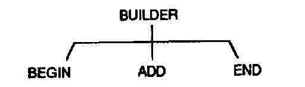
选择一个地方开始搭塔。向塔上添加一个新积木。决定它是否足够高。
事实上，即使是找到另一个积木并把它放在塔顶上，对任何单一代理来说也是太大的工作。所以Add反过来必须请求其他代理的帮助。在我们完成之前，我们需要的代理数量将多到无法放入任何图表中。
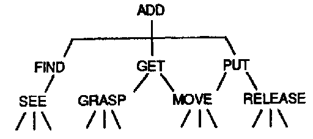
首先ADD必须FIND一个新积木。然后手必须GET那个积木并PUT它放在塔顶上。
为什么要把事情分解成这么小的部分?因为思维就像塔一样，就是这样构成的——只不过它们是由过程而不是积木组成的。如果堆叠积木看起来微不足道——记住你并不总是这样感觉的。当你在幼年时期第一次发现一些积木玩具时，你可能花了愉快的几周时间学习如何使用它们。如果这些玩具现在看起来相对无聊，那么你必须问问自己你是如何改变的。在你转向更有野心的事情之前，能够搭建一座积木塔或积木房子曾经看起来既陌生又美妙。然而，尽管所有成年人都知道如何做这些事情，没有人理解我们是如何学会做它们的!这就是我们在这里要关注的。把积木堆成堆和排成行:这些是我们每个人很久以前学到的技能，以至于我们根本记不起学习它们的过程。现在它们看起来只是常识——而这正是使心理学变得困难的原因。这种健忘，婴儿期的遗忘症(amnesia)，使我们假设我们所有美妙的能力一直就在我们的思维里，我们从不停下来问自己它们是如何开始和成长的。
你无法思考关于思考的问题，除非你思考关于思考某事的问题。
——西摩·派珀特(Seymour Papert)
我们找到了一种方法把我们的塔建造者从部分中制造出来。但Builder实际上还远未完成。要搭建一个简单的积木堆，我们孩子的代理必须完成所有这些其他事情。
See必须识别它的积木，无论它们的颜色、大小和位置——尽管有不同的背景、阴影和光线，甚至当它们被其他东西部分遮挡时。
然后，一旦这完成了，Move必须引导手臂和手在空间中穿过复杂的路径，但永远不要击中塔顶或打到孩子的脸。
想想如果Find看到，Grasp抓住一个支撑塔顶的积木，这看起来会多么愚蠢!
当我们仔细观察这些要求时，我们发现了一个令人困惑的复杂问题世界。例如，Find如何确定哪些积木仍然可用?它必须根据它试图做的事情来”理解”场景。这意味着我们需要关于理解意味着什么以及机器如何能有目标的理论。考虑一下实际的Builder必须做出的所有实际判断。它必须决定是否有足够的积木来完成它的目标，以及它们是否足够坚固和宽阔以支撑将放在它们上面的其他积木。
如果塔开始摇晃怎么办?一个真正的建造者必须猜测原因。是因为柱子内部的某个连接不够方正吗?是地基不稳固，还是塔对其宽度来说太高了?也许只是因为最后一个积木放得太粗糙了。
所有孩子都会学习这些事情，但我们在以后的岁月中很少想到它们。当我们成为成年人时，我们把所有这些都视为简单的”常识”。但这个欺骗性的词汇对几乎隐藏了无数不同的技能。
常识不是一件简单的事情。相反，它是一个由辛苦获得的实践想法组成的庞大社会——由众多从生活中学到的规则和例外、倾向和趋势、平衡和制衡组成。
如果常识如此多样和复杂，是什么使它看起来如此明显和自然?这种简单的错觉来自于失去与婴儿期发生的事情的联系，那时我们形成了我们的第一批能力。随着每组新技能的成熟，我们在它们之上建立更多层。随着时间的推移，下面的层变得越来越遥远，直到当我们在以后的生活中试图谈论它们时，我们发现自己除了说”我不知道”之外几乎没什么可说的。
我们想把智能解释为更简单事物的组合。这意味着我们必须确保在每一步都检查，我们的智能体本身是否具有智能。否则，我们的理论最终会类似于19世纪的”下棋机器”，它被爱德加·爱伦·坡揭露实际上隐藏着一个人类侏儒。因此，每当我们发现某个智能体必须做任何复杂的事情时，我们就会用一个由做更简单事情的智能体组成的子社会来替代它。正因为如此，读者必须准备好感受到某种失落感。当我们把事物分解成最小的部分时，它们起初看起来都枯燥无味，就好像某种本质已经丢失了。
例如，我们已经看到如何通过用 [Find] 和 [Get] 这样的小部件构建 [Builder] 来构造搭建塔楼的技能。现在，当 [Builder] 的”知道如何建造”的能力明显不在任何部分中时，它又存在于哪里呢？然而这些部分就是 [Builder] 的全部。答案是：仅仅解释每个单独的智能体做什么是不够的。我们还必须理解这些部分是如何相互关联的——也就是说，智能体的[群组]如何能够完成事情。
因此，本书的每一步都使用两种不同的方式来思考智能体。如果你从外部观察 [Builder] 工作，不知道它内部如何运作，你会觉得它知道如何建造塔楼。但如果你能从内部看到 [Builder]，你肯定找不到任何知识。你只会看到一些开关，以各种方式排列来打开和关闭彼此。[Builder “真的知道][如何建造塔楼吗？”] 答案取决于你如何看待它。让我们用两个不同的词，[“智能体”]和[“机构”]，来说明为什么 [Builder] 似乎过着双重生活。作为机构，它似乎知道自己的工作。作为智能体，它什么都不知道。
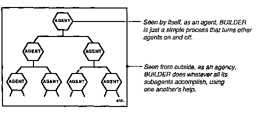
当你开车时，你把方向盘看作是一个可以用来改变汽车方向的机构。你不关心它是如何工作的。但当方向盘出了问题，你想理解正在发生什么时，最好把方向盘看作是一个更大机构中的一个智能体：它转动一根轴，轴转动一个齿轮来拉动一根杆，杆移动车轮的轴。当然，人们并不总是想采用这种微观视角；如果你在开车时把所有这些细节都记在心里，你可能会因为花太长时间来弄清楚方向盘该往哪边转而撞车。知道如何做与知道为什么不同。在本书中，我们将始终在智能体和机构之间切换，因为根据我们的目的，我们必须使用不同的视角和描述方式。
[正是心智的本质使个体成为同类，而构成心智的那些复杂关系的物质原子在形状、形式或方式上的差异完全是微不足道的。]
[——艾萨克·阿西莫夫]
我们看到 [Builder] 的技能可以简化为 [Get] 和 [Put] 这些更简单的技能。然后我们看到这些技能又可以由更简单的技能组成。[Get] 只需要将手 [Move] 到 [Grasp] [Find] 刚刚找到的积木块。[Put] 只需要 [Move] 手，将积木块放在塔顶上。所以看起来 [Builder] 的所有功能都已经被”简化”为更简单的部分可以做的事情。
但有一些重要的东西被遗漏了。[Builder] 不仅仅是像 [Find、Get、Put] 和所有其他部分的集合。因为如果这些智能体没有通过合适的互连网络相互链接，[Builder] 根本无法工作。
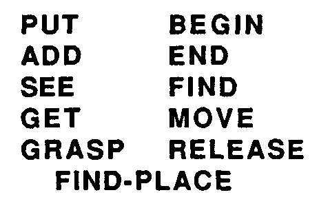
[ 独立的智能体]
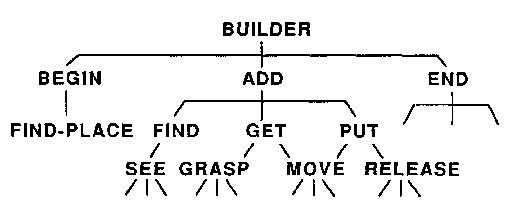[ 科层制中的智能体]
你能仅从左边的列表预测 [Builder] 做什么吗？当然不能：你还必须知道哪些智能体为哪些工作。同样，你不能仅从知道每个单独的个体能做什么来预测人类社区会发生什么；你还必须知道他们是如何组织的——也就是说，谁和谁交谈。对于理解任何庞大而复杂的事物都是如此。首先，我们必须知道每个单独的部分如何工作。其次，我们必须知道每个部分如何与它所连接的部分相互作用。第三，我们必须理解所有这些局部相互作用如何结合起来完成该系统从外部看[做的]事情。
在人脑的情况下，解决这三类问题需要很长时间。首先，我们必须理解脑细胞如何工作。这将是困难的，因为有数百种不同类型的脑细胞。然后我们必须理解每种类型的细胞如何与它们连接的其他类型的细胞相互作用。可能有数千种不同类型的这些相互作用。然后，最后，最困难的部分来了：我们还必须理解我们数十亿个脑细胞是如何组织成社会的。为此，我们需要开发许多新的理论和组织概念。我们越能了解我们的大脑是如何从更简单的动物进化而来的，这项任务就会越容易。
当我们能够用已知的事物来解释谜团时，这总是最好的。但当我们发现这很难做到时，我们必须决定是继续尝试让旧理论发挥作用，还是抛弃它们并尝试新理论。我认为这在一定程度上是个性问题。我们把那些喜欢在旧观念基础上构建的人称为”还原论者”(Reductionists),把那些喜欢拥护新假设的人称为”新颖论者”(Novelists)。还原论者通常是对的——至少在科学谨慎的核心领域,新颖的理论很少能存活很久。但在那个领域之外,新颖论者占据主导地位,因为旧观念有更多时间暴露其缺陷。
某些科学能依赖如此少的几种解释,这确实令人惊叹。物理学现在几乎可以解释我们看到的一切(至少在原则上),只需要用极少数几种粒子和力场的相互作用来说明。在过去的几个世纪里,还原论取得了显著的成功。为什么能用如此少的基本规则来描述世界的如此多内容?没有人知道。
许多科学家将化学和物理学视为心理学应该效仿的理想模型。毕竟,大脑中的原子也受制于支配所有其他形式物质的相同的全面物理定律。那么我们也能完全用这些相同的基本原理来解释我们的大脑实际上做了什么吗?答案是否定的,原因很简单,即使我们理解了我们数十亿脑细胞各自如何独立工作,这也不会告诉我们大脑作为一个整体是如何工作的。“思维定律”不仅取决于这些脑细胞的特性,还取决于它们如何连接。而这些连接不是由基本的、“通用的”物理定律建立的,而是由我们遗传基因中数百万比特信息的特定排列建立的。诚然,“通用”定律适用于一切事物。但正是因为这个原因,它们很少能解释任何特定的事物。
这是否意味着心理学必须拒绝物理定律并找到自己的定律?当然不是。这不是[不同的]定律的问题,而是在更高组织层次上运作的[额外的]理论和原理类型的问题。我们关于建造者作为一个整体如何工作的想法,不需要也绝不能与我们关于[建造者]的低层次智能体如何工作的知识相冲突。每个更高层次的描述都必须[增加]我们对低层次的知识,而不是取代它。我们将在本书的许多地方回到”层次”这个概念。
心理学会像那些成功地将其主题简化为极少数原理的科学一样吗?这取决于你所说的”极少数”是什么意思。在物理学中,我们习惯于用大约十几个基本原理来解释。对于心理学,我们的解释将必须结合数百个较小的理论。对物理学家来说,这个数字可能显得太大了。对人文学者来说,它可能显得太小了。
我们经常被告知某些整体”大于其部分之和”。我们听到这用”整体论”(holistic)和”格式塔”(gestalt)等充满敬意的词语来表达,其学术语调暗示它们指的是清晰明确的观念。但我怀疑这些术语的实际功能是麻痹一种无知感。当事物以我们无法解释的方式结合起来行动时,我们说”格式塔”;当我们被意外事件措手不及并意识到我们理解的比我们以为的要少时,我们说”整体论”。例如,考虑下面两组问题,第一组是”主观的”,第二组是”客观的”:
[是什么使一幅画不仅仅是其单独的线条?]
[一个人格如何不仅仅是一组特质?]
[一种文化在什么意义上不仅仅是一堆习俗的集合?]
[是什么使一座塔不仅仅是分散的积木?]
[为什么一条链子不仅仅是其各个链环?]
[一堵墙如何不仅仅是一组许多砖块?]
为什么”客观”问题看起来不那么神秘?因为我们有很好的方法来回答它们——根据事物如何相互作用。要解释墙和塔如何工作,我们只需指出每块砖如何被其邻居和重力固定在位。要解释为什么链环不能分离,我们可以演示每个链环如何挡住其邻居的路。这些解释对成年人来说似乎几乎是不言而喻的。然而,当我们还是孩子时,它们并不显得那么简单,我们每个人都花了好几年时间才学会现实世界的物体如何相互作用——例如,防止任何两个物体同时出现在同一个地方。我们认为这种知识是”显而易见的”,只是因为我们记不起学习它有多难。
为什么解释我们对绘画、人格和文化传统的反应似乎要困难得多?许多人认为那些”主观”类型的问题无法回答,因为它们涉及我们的心智。但这并不意味着它们无法回答。这只意味着我们必须首先更多地了解我们的心智。
[“主观”反应也基于事物如何相互作用。不同之处在于,这里我们关注的不是外部世界的对象,而是我们大脑内部的过程。]
换句话说,那些关于艺术、特质和生活方式的问题实际上是相当技术性的。它们要求我们解释在我们心智中的智能体之间发生了什么。但这是一个我们从未学到太多的主题——我们的科学也是如此。这些问题最终会得到解答。但如果我们继续使用像”整体论”和”格式塔”这样的伪解释词语,只会延长等待时间。诚然,有时给事物命名可以通过引导我们关注某些谜团来提供帮助。但是,当命名让心智认为仅凭名称就能带来意义时,这是有害的。
[绝大多数人类坚信，感知力和思想][与物质不同][从本质上来说，不太容易分解和衰败，当身体分解为各种元素时，赋予它生命的原理(principle)将永恒不变地存在。然而，我们所谓的思想可能并非实际存在的实体，而只是构成宇宙其余部分的无限变化物质的某些部分之间的关系，一旦这些部分相对位置发生变化，这种关系就会停止存在。]
[— 珀西·比希·雪莱]
什么是生命?解剖一具身体却找不到生命。什么是心智?解剖一个大脑却找不到心智。生命和心智是否如此超越”部分之和”，以至于寻找它们毫无意义?要回答这个问题，请看以下整体论者(Holist)与普通公民之间的对话讽刺:
整体论者:[我来证明没有盒子能装住老鼠。盒子是由六块木板钉在一起制成的。但显而易见，除非盒子具有某种”困鼠性”或”容纳性”(containment)，否则它无法装住老鼠。然而，单块木板不包含任何容纳性，因为老鼠可以直接从它旁边走开。如果一块木板没有容纳性，六块木板也不会有。所以盒子根本不可能有任何困鼠性。理论上，老鼠可以逃脱]
公民:[真神奇。那么][是什么][让老鼠待在盒子里呢?]
整体论者:[哦，很简单。虽然它没有真正的困鼠性，但一个好盒子可以把它”模拟”得如此逼真，以至于老鼠被愚弄了，无法想出逃脱的办法。]
那么，是什么让老鼠被限制住的呢?当然，是盒子阻止了所有方向的运动，因为每块木板都阻挡了特定方向的逃跑。左侧阻止老鼠向左走，右侧阻止它向右走，顶部阻止它跳出去，等等。盒子的秘密就在于木板如何排列以阻止[所有]方向的运动!这就是[容纳]的含义。所以期望任何单独的木板本身包含任何[容纳性]是愚蠢的，尽管每块木板都对容纳有所贡献。这就像扑克中同花顺的牌:只有完整的牌型才有价值。
这同样适用于[生命]和[心智]这样的词。用这些词来描述生物的最小组成部分是愚蠢的，因为这些词是为了描述更大组合体如何相互作用而发明的。就像[围困]一样，[活着]和[思考]这样的词对于描述由特定关系组合产生的现象很有用。[盒子]这个词似乎不神秘，是因为每个人都理解制作精良的盒子的木板如何相互作用以阻止任何方向的运动。事实上，[生命]这个词已经失去了大部分神秘性—至少对现代生物学家来说是这样，因为他们了解细胞中化学物质之间许多重要的相互作用。但[心智]仍保持着它的神秘—因为我们对心智代理如何相互作用来完成它们所做的一切仍知之甚少。
在20世纪60年代末，[Builder]以计算机程序的形式在麻省理工学院人工智能实验室中得以实现。我和我的合作者西摩·派珀特(Seymour Papert)长期以来都渴望将机械手、电视眼和计算机结合成一个能用儿童积木搭建的机器人。我们和学生花了几年时间开发Move、[See, Grasp]以及其他数百个小程序，才制作出一个可运行的[Builder-agency]。我认为这个项目让我们得以一窥当孩子们学习用简单玩具”玩耍”时，他们的心智某些部分内部发生了什么。这个项目让我们想知道，即使有一千个微技能(microskills)，是否足以让孩子用沙子装满一个桶。正是这些经验，而不是我们从心理学中学到的任何东西，引导我们产生了关于心智社会的许多想法。
为了进行最初的实验，我们必须建造一只机械手(Hand)，在指尖配备压力和触觉传感器。然后我们必须将电视摄像头与计算机连接，并编写程序让眼睛(Eye)能够识别积木的边缘。它还必须识别手本身。当这些程序运行不佳时，我们添加了更多程序，利用手指的触觉来验证物体是否在视觉上看起来的位置。还需要其他程序来使计算机能够移动手从一个地方到另一个地方，同时使用眼睛查看路径上是否有障碍物。我们还必须编写更高级别的程序，让机器人能够规划要做什么—以及更多程序来确保这些计划得以实际执行。为了使这一切可靠运行，我们需要程序在每一步(再次通过使用眼睛和手)验证在心智内部计划的事情确实在外部发生了—否则纠正发生的错误。
在尝试让我们的机器人工作的过程中，我们发现许多日常问题比成年人认为困难的那类问题、谜题和游戏要复杂得多。在那个积木世界中的每一个节点，当我们被迫比平时更仔细地观察时，我们都发现了一个意想不到的复杂宇宙。只需考虑一个看似简单的问题：不要重复使用已经搭建在塔中的积木。对一个人来说，这似乎是简单的常识：“不要使用已经参与实现先前目标的物体来满足新目标。”没有人确切知道人类的大脑是如何做到这一点的。显然，我们从经验中学会识别可能出现困难的情况，当我们长大后，我们学会提前计划以避免此类冲突。但由于我们无法确定什么会奏效，我们必须学习应对不确定性的策略(policies)。哪些策略(strategies)最值得尝试，哪些会避免最严重的错误？数千甚至可能数百万个小过程必定参与了我们如何预期、想象、计划、预测和预防——然而所有这些进行得如此自动，以至于我们将其视为”普通常识”。但如果思考如此复杂，是什么让它看起来如此简单呢?起初，我们的大脑可能使用如此复杂的机制却对此毫无察觉，这似乎令人难以置信。
[总的来说，我们最不了解的是我们的大脑最擅长做的事情。]
主要是当我们的其他系统开始失效时，我们才会调用与我们称之为”意识”相关的特殊代理(agencies)。因此，我们更容易意识到运作不良的简单过程，而不是完美运作的复杂过程。这意味着我们不能相信自己对哪些事情简单、哪些需要复杂机制的随意判断。大多数时候，大脑的每个部分只能感知到其他部分多么安静地完成它们的工作。
许多人在他们的大脑被比作计算机程序或机器时感到被冒犯。我们已经看到一个简单的搭建塔楼技能如何由更小的部分组成。但是，真正的大脑能由如此微不足道的东西构成吗?
[“荒谬，”大多数人说。“我当然不觉得自己像台机器!”]
但如果你不是机器，是什么让你成为评判作为机器是什么感觉的权威?一个人可能会回答，“我思考，因此我知道大脑如何工作。”但这可疑地类似于说，“我开我的车，因此我知道它的引擎如何工作。”知道如何使用某物与知道它如何工作不是一回事。
[“但每个人都知道机器只能以无生命、机械的方式行事。”]
这个反对意见似乎更合理：确实，一个人应该对被比作任何[微不足道的]机器感到被冒犯。但在我看来，“机器”这个词正变得过时。几个世纪以来，像”机械的”这样的词让我们想起滑轮、杠杆、机车和打字机等简单装置。(“计算机般的”这个词继承了类似的琐碎感，即通过小步骤进行枯燥的算术运算。)但我们应该认识到，我们仍处于机器的早期时代，几乎不知道它们可能会变成什么。如果火星上的某个访客在十亿年前来到地球，通过观察那些甚至还没学会爬行的细胞团来判断地球生命的命运，会怎样?同样，我们无法从现在看到的东西来把握机器在未来可能做的事情的范围。
我们对计算机的最初直觉来自于1940年代机器的经验，那些机器只包含数千个部件。但人类大脑包含数十亿个细胞，每个细胞本身都很复杂，并且与成千上万个其他细胞相连。现在的计算机代表了中等程度的复杂性；它们现在有数百万个部件，人们已经在为人工智能研究建造十亿部件的计算机。然而，尽管正在发生这些变化，我们继续使用旧词，仿佛根本没有任何变化。我们需要调整我们的态度来适应以前从未想象过的规模上运作的现象。“机器”这个术语不再能带我们走得足够远。
但修辞学解决不了任何问题。让我们把这些争论放在一边，转而尝试理解大脑巨大的、未知的机制可能做什么。然后，我们会在了解自己是多么奇妙的机器时找到更多的自尊。
[冲突与妥协]
大多数孩子不仅喜欢建造，他们还喜欢推倒东西。所以让我们想象另一个叫做Wrecker的代理，其专长是推倒。我们的孩子喜欢听复杂的噪音，看这么多东西同时移动。
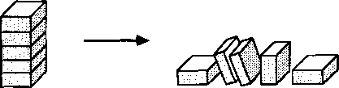
假设[Wrecker]被激活了，但视线中没有东西可以砸。那么[Wrecker]将不得不获得一些帮助——例如，让Builder工作。但如果在稍后的某个时候，[Wrecker]认为塔已经足够高可以砸了，而[Builder]仍然想把它建得更高怎么办?谁能解决那个争议?
最简单的策略是将决定权留给[Wrecker]，因为它首先负责激活[Builder]。但在对孩子大脑更真实的描述中，这样的选择将取决于许多其他代理。例如，让我们假设[Builder]和[Wrecker]最初都由一个更高级别的代理Play-with-Blocks激活。那么，如果[Builder]和[Wrecker]在塔是否足够高的问题上存在分歧，就可能出现冲突。
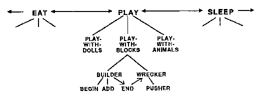
是什么首先激发了[积木游戏]？也许是某个更高层级的代理，[游戏]，首先被激活。然后，在[游戏]内部，代理[积木游戏]获得了控制权，尽管有两个竞争者，[玩偶游戏]和[动物游戏]。但即使是[游戏]本身，它们共同的最高上级，也必须与其他更高层级的代理如[进食]和[睡眠]竞争。因为，毕竟，孩子的游戏不是孤立的事情，而总是发生在其他现实生活关切的背景下。无论我们选择做什么，总有其他我们也想做的事情。
在本书的几个章节中，我将假设代理之间的冲突往往会向更高层级迁移。例如，[建造者]和[破坏者]之间任何持续的冲突都会削弱它们共同的上级，[积木游戏]。反过来，这会降低[积木游戏]压制其竞争对手[玩偶游戏]和[动物游戏]的能力。接下来，如果那个冲突没有很快解决，它将削弱更高一层的代理[游戏]。然后[进食]或[睡眠]可能会夺取控制权。
为了解决争端，国家发展法律系统，公司制定政策，个人可能会争论、斗争或妥协——或者向外部调解人寻求帮助。当思维内部发生冲突时会发生什么？
每当几个代理必须竞争相同的资源时，它们很可能会陷入冲突。如果这些代理被放任不管，冲突可能会无限期地持续下去，这将使这些代理陷入瘫痪，无法完成任何目标。那会发生什么？我们假设这些代理的上级也处于竞争压力之下，每当它们的下级在实现目标方面进展缓慢时，无论是因为它们之间的冲突还是因为个体的无能，上级都可能变得软弱。
不妥协原则：在一个代理的下级之间持续的内部冲突越久，该代理在其自身竞争者中的地位就越弱。如果这些内部问题没有很快解决，其他代理将接管控制权，而以前涉及的代理将被”解雇”。
只要积木游戏进展顺利，[游戏]就能保持其力量并保持控制。然而，与此同时，孩子可能也越来越饿和困，因为其他过程正在唤醒代理[进食]和[睡眠]。只要[进食]和[睡眠]还没有被强烈激活，[游戏]就能同时抵御它们。然而，[游戏]内部的任何冲突都会削弱它，使[进食]或[睡眠]更容易接管。当然，[进食]或[睡眠]最终必然获胜，因为它们等待的时间越长，就变得越强。
我们在自己的经历中看到这一点。我们都知道，当事情进展顺利时，对抗小的干扰是多么容易。但一旦我们的工作内部开始出现问题，我们就会变得越来越不耐烦和易怒。最终我们发现很难集中注意力，以至于最小的干扰都能让另一个不同的兴趣接管控制权。现在，当我们的任何一个代理失去控制其他系统所做事情的能力时，这并不意味着它必须停止自己的内部活动。一个失去控制权的代理可以继续在自身内部工作——从而为抓住后来的机会做好准备。然而，我们通常意识不到在我们思维深处进行的所有其他活动。
将控制权让给其他代理的这个过程在哪里停止？每个思维都必须包含某个最高控制中心吗？不一定。我们有时通过求助于上级来解决冲突，但其他冲突永远不会结束，永远不会停止困扰我们。
起初，我们的不妥协原则可能看起来太极端了。毕竟，优秀的人类主管会提前计划以避免冲突，而当他们做不到时，他们会在求助于上级之前尝试在本地解决争端。但我们不应该试图在单个思维的低级代理和人类社区的成员之间找到密切的类比。那些微小的心智代理根本不可能知道足够多，以便能够相互谈判或找到有效的方式来适应彼此的干扰。只有更大的代理才能足智多谋到做这些事情。在一个真实的孩子内部，负责[建造]和[破坏]的代理确实可能变得足够多才多艺，通过为彼此的目标提供支持来进行谈判。[“请，破坏者，再等一会儿，直到建造者再加一块积木：这样会有更响的碰撞声，很值得！”]
官僚制(bureaucracy) [名词] [通过由遵循僵化常规的官员管理的部门和分支机构来管理政府。]
——韦氏未删节词典
作为一个代理，[建造者]不做实际工作，而只是启动[开始、添加]和[结束]。同样，[添加]只是命令[寻找、放置]和[获取]去做它们的工作。然后这些又分解为像[移动]和[抓握]这样的代理。似乎永远不会停止——这种分解为更小事物的过程。最终，一切都必须以实际工作的代理结束，但在我们到达所有真正移动手臂、手和手指关节的小肌肉运动代理之前，还有很多步骤。因此，[建造者]就像一个高级管理人员，远离那些实际生产最终产品的下属。
这是否意味着[建造者]的行政工作不重要？一点也不。那些低级代理需要被控制。这在人类事务中也大致相同。当任何企业变得太复杂和庞大而一个人无法完成时，我们构建组织，其中某些代理不关心最终结果，而只关心其他代理所做的事情。设计任何社会，无论是人类的还是机械的，都涉及这样的决策：
[哪些智能体选择其他智能体来做什么工作？]
[谁来决定哪些工作要做？]
[谁决定要付出什么努力？]
[冲突如何解决？]
普通人类思维有多少具有建造者(Builder)的特性？我们描述的建造者不太像人类监督者。它不决定将哪些智能体分配到哪些工作，因为这已经安排好了。它不规划未来的工作，而是简单地执行固定的步骤，直到结束者(End)说工作完成。它也没有应对意外事故的办法。
由于我们的小型心智智能体如此有限，我们不应该把它们与人类监督者和工人之间的类比延伸得太远。此外，正如我们很快会看到的，心智智能体之间的关系并不总是严格的层级制。而且无论如何，这些角色总是相对的。对于建造者来说，添加者(Add)是下属，但对于查找者(Find)来说，添加者是上司。至于你自己，这完全取决于你如何生活。哪种思想最让你关注——你被迫接受的命令，还是你被迫下达的命令？
层级制(hierarchical)社会就像一棵树，其中每个分支上的智能体专门负责从它分支出来的小枝上的智能体。这种模式在每个领域都能找到，因为将工作分成这样的部分通常是开始解决问题的最简单方法。构建和理解这样的组织很容易，因为每个智能体只需要做一件工作：它只需要”向上看”从监督者那里获得指令，然后”向下看”从下属那里获得帮助。
但层级制并不总是有效。考虑一下当两个智能体需要使用彼此的技能时，那么两者都不能”在上面”。注意当你要求你的视觉系统决定下面左侧的场景是否描绘了三个积木——还是只有两个时会发生什么。
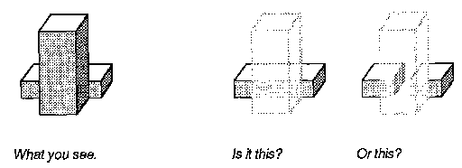
智能体看(See)可以回答这个问题，如果它能移动(Move)前面的积木离开视线。但是，在这样做的过程中，移动可能必须看是否有任何障碍物可能干扰手臂的轨迹。在这样的时刻，移动将为看工作，而看将为移动工作，两者同时进行。这在简单的层级制中是不可能的。
本书前面部分的大多数图表描绘了简单的层级制。后来，我们会看到更多交叉连接的环和循环——当我们被迫考虑对记忆的需求时，这将成为本书中持续关注的主题。人们经常从保存过去的记录、回忆早期发生的事情的角度来思考记忆。但智能体也需要其他类型的记忆。例如，看需要某种临时记忆，以便在前一个工作完成之前开始一个新工作时跟踪接下来要做什么。如果看的每个智能体一次只能做一件事，它很快就会耗尽资源，无法解决复杂的问题。但如果我们有足够的记忆，我们可以将智能体排列成循环，从而反复使用相同的智能体同时完成几个不同工作的部分。
在任何实际儿童的心智中，玩(Play)的冲动与其他迫切的冲动竞争，例如吃(Eat)和睡(Sleep)。如果另一个智能体从玩那里夺取控制权会发生什么，玩控制的智能体会发生什么？
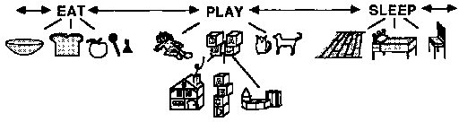
假设我们的孩子被叫走了，无论是被别人叫走还是被像睡这样的内在冲动叫走。心智中仍然活跃的过程会发生什么？孩子的一部分可能仍然想玩，而另一部分想睡觉。也许孩子会突然报复性地踢倒塔。当孩子制造这样的场景时，这意味着什么？是内在纪律崩溃导致这些野蛮行为吗？不一定。那些”幼稚”的行为可能在其他方面仍然有意义。
[粉碎只需要很少的时间，破坏者(Wrecker)从玩的约束中解放出来，只需要再踢一脚就能获得最后崩溃的满足感。]
[虽然幼稚的暴力行为本身可能看起来毫无意义，但它有助于传达对失去目标的挫败感。即使父母责骂，也只是确认了信息传递和接收的效果。]
[破坏性行为可以通过减少需要解决的问题来服务于建设性目标。]
[那一脚可能会在外面留下一团糟，但却整理了孩子的心智。]
当孩子打碎他们珍贵的玩具时，我们不应该寻求为什么的原因——因为没有这样的行为有单一的原因。此外，在人类心智中，当睡开始时，玩就必须停止，它的所有智能体都必须停止，这并不是真的。一个真正的孩子可以上床睡觉——但仍然在脑海中建造塔。
当你感到痛苦时，很难保持对其他事情的兴趣。你觉得没有什么比找到停止痛苦的方法更重要。这就是为什么痛苦如此强大：它使人很难想到其他事情。痛苦简化了你的观点。
当某事给你带来愉悦时，同样，也很难想到其他事情。你觉得没有什么比找到让愉悦持续的方法更重要。这就是为什么愉悦如此强大。它也简化了你的观点。
疼痛分散我们对其他目标注意力的能力并非偶然；这正是它帮助我们生存的方式。我们的身体配备了特殊的神经来检测即将发生的伤害,这些疼痛神经发出的信号使我们以特殊方式做出反应。不知何故,它们打断了我们对长期目标的关注——从而迫使我们专注于眼前的问题,也许是通过将控制权转移给我们最低级别的代理。当然,这可能弊大于利,尤其是当为了消除疼痛源而必须制定复杂计划时。不幸的是,疼痛通过破坏对非即时事物的兴趣来干扰制定计划。过多的痛苦会削弱我们,因为它限制了构成我们自我的复杂性。快乐也必定如此。
我们认为快乐和痛苦是对立的,因为快乐使我们靠近其对象,而痛苦促使我们拒绝其对象。我们也认为它们相似,因为两者都通过使我们远离其他兴趣,让竞争目标显得渺小。它们都会分散注意力。为什么我们会在对立的事物之间发现这种相似性?有时,两个看似对立的东西仅仅是单一尺度上的两个极端,或者其中一个只是另一个的缺失——如声音与寂静、光明与黑暗、兴趣与漠不关心的情况。但那些真正不同的对立面呢,比如痛苦与快乐、恐惧与勇气、恨与爱?
为了表现为对立,两件事必须服务于相关的目标——或以其他方式调动同样的代理。
因此,喜爱和厌恶都涉及我们对关系的态度;快乐和痛苦都涉及简化我们心理场景的约束。勇气和懦弱也是如此:每一个都通过了解两者而做到最好。进攻时,你必须针对对手策略中你能找到的任何弱点施压。防守时,情况大致相同:你仍然必须猜测对方的计划。
我们就是我们假装成的样子,所以我们必须小心自己假装成什么。
——库尔特·冯内古特
自我 名词 1. 任何人或事物的身份、性格或本质特征。2. 给定人的身份、个性、个体性等;作为区别于所有他人的自己的人。
——韦氏未删节词典
我们都相信人类的心智包含那些我们称之为自我的特殊实体。但没有人对它们是什么达成一致。为了理清思路,我将在泛指整个人时写”self”,并保留”Self”来谈论那种更神秘的个人身份感。以下是人们对自我(Self)的一些说法:
自我是心智中真正属于我的部分,或者更确切地说,它是我的一部分——也就是说,我心智的一部分——实际上进行思考、想要、决定、享受和痛苦。它是对我最重要的部分,因为它是在所有经验中保持不变的东西——将一切联系在一起的身份。无论你能否科学地对待它,我知道它在那里,因为它就是我。也许它是科学无法解释的那种东西。
这算不上一个好定义,但我认为试图找到更好的定义并不是个好主意。对我们不理解的事物强加定义,往往弊大于利。此外,只有在逻辑和数学中,定义才能完美地捕捉概念。我们在实际生活中处理的事物通常太复杂,无法用简洁紧凑的表达来表示。特别是在理解心智方面,我们仍然知之甚少,以至于无法确定我们关于心理学的想法是否朝着正确的方向。无论如何,不要把定义事物误认为是了解它们。你可以在不定义老虎的情况下知道老虎是什么。你可以定义老虎,却对它几乎一无所知。
即使我们关于心智的旧观念是错误的,通过试图理解我们为什么相信它们,我们也能学到很多。我们可以问:“我们关于自我的观念是什么?”——而不是问”自我是什么?“——然后我们可以问:”这些观念服务于什么心理功能?“当我们这样做时,它向我们表明,我们不是只有一个这样的观念,而是有很多。
我们关于自我的观念包括对我们是什么的信念。这些包括对我们能够做什么和我们可能倾向于做什么的信念。每当我们解决问题或制定计划时,我们都会利用这些信念。我会相当模糊地将它们称为一个人的自我形象(self-images)。除了我们的自我形象,我们关于自己的观念还包括关于我们想成为什么的观念和关于我们应该成为什么的观念。这些,我称之为一个人的自我理想(self-ideals),从婴儿期就影响着每个人的成长,但我们通常发现它们难以表达,因为它们无法被意识接触到。
关于自我的一个常见形象表明,每个心智都包含某种内在的窥视者-操纵者(Voyeur-Puppeteer)——为我们感受、想要和选择我们感受、想要和选择的东西。但如果我们有那些种类的自我,拥有心智还有什么用?另一方面,如果心智本身就能做这些事情,为什么还要有自我?这个自我概念真的有用吗?确实有用——只要我们不把它想象成一个集中的、全能的实体,而是一个观念的社会,包括我们对心智是什么的形象和我们对它应该是什么的理想。
此外,我们经常对自己有两种想法。有时我们把自己看作单一的、自洽的实体。其他时候我们感到分散或分离,好像我们是由许多具有不同倾向的不同部分组成的。对比这些观点:
单一自我观。[“我思考，我想要，我感受。是我，我自己，在思考我的想法。这不是某个无名的群体或无私部分的云团。”]
多重自我观。[“我的一部分想要这个，另一部分想要那个。我必须更好地控制自己。”]
我们从未对任一观点完全满意。我们都感受到不统一的感觉、相互冲突的动机、强迫、内在张力和分歧。我们在头脑中进行谈判。我们听到可怕的故事，其中某人的心智被似乎来自别处的强迫和命令所奴役。而我们感觉最合理统一的时候，可能正是其他人认为我们最困惑的时候。
但如果心智内部没有单一的、中心的、统治性的自我，是什么让我们如此确信它的存在？是什么赋予这个神话力量和强度？一个悖论：也许正是因为我们头脑中没有人让我们做我们想做的事情——甚至没有人让我们”想要想要”——我们才构建了”我们”在自己内部的神话。
[我们感谢你，黑暗让我们想起光明。]
— T. S. [艾略特]
关于灵魂的常见概念是，自我的本质在于某种看不见的光的火花，一种躲避身体、躲避心智、躲避视线的东西。但这样的符号可能意味着什么？它带有一种反自尊的感觉：任何人的成就都没有意义。
人们问机器是否能拥有灵魂。我反问灵魂是否能学习。这似乎不是公平的交换——如果灵魂可以永生却不利用那段时间来学习，用所有改变换取不变性。这正是我们从无法成长的天生灵魂那里得到的：与死亡相同的命运，一种无法进行任何改变的永恒结局，因此缺乏智力。
为什么试图用如此单一冻结的形式来框定自我的价值？一幅伟大画作的艺术不在于任何一个想法，也不在于放置所有那些颜料点的一系列单独技巧，而在于其各部分之间关系的巨大网络。同样，构成我们心智的原始智能体(agents)本身就像漫无目的、分散的颜料涂抹一样毫无价值。重要的是我们用它们做什么。
我们都知道丑陋的外壳如何隐藏意想不到的礼物，就像埋在尘土中的宝藏或产珍珠的笨拙牡蛎。但心智恰恰相反。我们从小胚胎开始，然后构建伟大而奇妙的自我——其价值完全在于它们自身的连贯性。人类自我的价值不在于某个小而珍贵的核心，而在于其庞大的、构建的外壳。
那些古老而强烈的关于精神、灵魂和本质的信念是什么？它们都是在暗示我们无力改善自己。在这样的想法中寻找我们的美德似乎是一种错误的探索，就像通过刮掉画家的作品在画布上寻找艺术一样。
我们如何控制我们的心智？理想情况下，我们首先选择我们想做什么，然后让自己去做。但这比听起来更难：我们一生都在寻找自我控制的方案。我们成功时庆祝，失败时则对自己没有按照我们想要的方式行事而生气——然后我们试图责骂、羞辱或贿赂自己来改变我们的方式。但等等！一个自我如何对自己生气？谁会对谁生气？考虑一个日常生活中的例子。
[我试图专注于某个问题，但感到无聊和困倦。]
[然后我想象我的竞争对手之一，挑战者教授，即将解决同样的问题。想要挫败挑战者的愤怒愿望让我继续研究这个问题一段时间。奇怪的是，这个问题并不是挑战者曾经感兴趣的那种。]
是什么让我们使用如此迂回的技巧来影响自己？为什么如此间接，发明歪曲、幻想和彻头彻尾的谎言？为什么我们不能简单地告诉自己去做我们想做的事情？
要理解某物如何工作，必须知道它的目的。曾经，没有人理解心脏。但一旦看到心脏移动血液，许多其他事情就说得通了：那些看起来像管道和阀门的东西确实是管道和阀门——焦虑、跳动、脉动的心脏被认识为简单的泵。然后可以形成新的推测：这是为了给我们的组织提供饮料还是食物？是为了保持我们身体温暖还是凉爽？为了从一个地方向另一个地方发送消息？事实上，所有这些假设都是正确的，当这股功能性想法的浪潮导致猜测血液也可以携带空气时，更多的谜题碎片就位了。
要理解我们所说的自我，我们首先必须看到自我的用途。自我的一个功能是防止我们变化太快。每个人都必须制定一些长远计划，以平衡单一目的性与试图同时做所有事情。但仅仅指示一个智能体开始执行我们的计划是不够的。我们还必须找到一些方法来约束我们以后可能做出的改变——防止我们再次关闭那些计划智能体！如果我们过于轻率地改变主意，我们永远无法知道我们接下来想要什么。我们永远无法完成很多事情，因为我们永远无法依靠自己。
那些认为自我是魔法、自我放纵的奢侈品，使我们的心智能够打破自然因果律束缚的普通观点是错误的。相反，那些自我是实际的必需品。那些说自我体现特殊自由的神话只是伪装。它们的部分功能是向我们隐藏自我理想的本质——我们锻造的链条，以防止我们破坏我们制定的所有计划。
让我们更仔细地看看挑战者教授的那段经历。显然，发生的情况是我的[工作]代理利用[愤怒]来阻止[睡眠]。但是为什么[工作]要使用如此迂回的技巧呢？
要理解为什么我们必须如此间接，考虑一些替代方案。如果[工作]可以简单地关闭[睡眠]，我们很快就会耗尽身体。如果[工作]可以简单地打开[愤怒]，我们会一直在战斗。直接性太危险了。我们会死亡。
对于那些可以简单地关闭饥饿或疼痛的物种来说，灭绝确实会很迅速。相反，必须有制衡机制。如果任何代理都可以夺取并控制所有其他代理，我们将无法度过完整的一天。这一定是为什么我们的代理为了利用彼此的技能，必须发现如此迂回的路径。所有直接连接一定在我们的进化过程中被移除了。
这一定是我们使用幻想的原因之一：提供缺失的路径。你可能无法通过决定生气来让自己生气，但你仍然可以想象[让]你生气的对象或情况。在关于挑战者教授的场景中，我的代理[工作]利用了一个特定的记忆来唤起我的[愤怒]倾向以对抗[睡眠]。这是我们用于自我控制的典型技巧。
我们的大多数自我控制方法都是无意识地进行的，但我们有时会诉诸有意识的方案，在这些方案中我们向自己提供奖励：[“如果我能完成这个项目，我就会有更多时间做其他事情。”]然而，能够贿赂自己并不是一件简单的事情。要成功做到这一点，你必须发现哪些心理激励(incentive)实际上对你自己有效。这意味着你——或者更确切地说，你的代理——必须了解彼此的性格。在这方面，我们用来影响自己的方案似乎与我们用来利用他人的方案没有太大区别——而且同样，它们经常失败。当我们试图通过向自己提供奖励来促使自己工作时，我们并不总是遵守我们的约定；然后我们继续提高价格甚至欺骗自己，就像一个人可能试图向另一个人隐藏交易的不吸引人的方面一样。
人类的自我控制不是一项简单的技能，而是一个不断发展的专业知识世界，涉及我们所做的一切。为什么最终我们的自我激励技巧很少能很好地发挥作用？因为，正如我们所看到的，直接性太危险了。如果自我控制很容易获得，我们最终将一事无成。
[那些真正寻求开悟之道的人向他们的思想发号施令。然后他们以坚定的决心前进。]
[——佛陀]
挑战者教授的那段经历只展示了我们可以控制自己的一种方式：通过利用情绪厌恶来完成智力目的。考虑一下我们用来强迫自己在疲倦或分心时工作的所有其他技巧。
[意志力(willpower)：告诉自己，“不要屈服于此”，或者，“继续努力。”]
这样的自我命令一开始可能有效——但最终它们总是失败，就好像大脑中的某个引擎耗尽了燃料。另一种自我控制风格涉及更多的身体活动：
[活动：四处走动。锻炼。吸气。呼喊。]
某些身体行为特别有效，尤其是涉及社交沟通的面部表情：它们对发送者和接收者的影响一样大。
[表情：咬紧下巴。咬紧上唇。皱眉。]
另一种刺激行为是移动到一个刺激性的地方。我们经常执行直接改变大脑化学环境的行为。
[化学：喝咖啡、服用安非他命或其他影响大脑的药物。]
然后还有大脑中的行为，我们通过这些行为设置思想和幻想来触动我们自己的情绪，通过自我导向的提议、贿赂甚至威胁来唤起希望和恐惧。
[情绪：“如果我赢了，会有很多收获，但如果我失败了会失去更多！”]
也许最强大的是那些承诺获得或失去某些特殊人物关注的行为。
依恋(attachment)：[想象如果你成功会获得钦佩]——或者[如果你失败会招致不赞同]——[尤其是来自你所依恋的人。]
这么多自我控制的方案！我们如何选择使用哪些？没有简单的方法。自律需要多年的学习；它在我们内部一个阶段一个阶段地成长。
[在寻求真理的过程中，有些问题并不重要。宇宙是由什么材料构成的？宇宙是永恒的吗？宇宙有没有边界？人类社会的理想组织形式是什么？如果一个人要推迟他对开悟的寻求和实践，直到这些问题得到解决，他会在找到道路之前死去。]
[——佛陀]
我们经常参与无法完成的项目。解决小问题很容易，因为我们可以把它们当作与我们所有其他目标无关的问题来处理。但对于跨越我们生活较大部分的项目来说就不同了，比如学习一门手艺、抚养孩子或写一本书。我们不能简单地决定或选择完成一项对时间有大量需求的事业，因为它将不可避免地与其他兴趣和抱负冲突。然后我们将被迫问这样的问题：
[我必须为此放弃什么？]
[我将从中学到什么？]
[它会带来权力和影响力吗？]
[我会对它保持兴趣吗？]
[其他人会帮助我吗？]
[他们还会喜欢我吗？]
也许最难的问题是，“采用这个目标会[如何改变我？]”例如，仅仅是想拥有一栋大而昂贵的房子，就可能导致这样复杂的想法：
[“这意味着我必须存钱好几年，而无法得到其他我想要的东西。我怀疑自己能否忍受。没错，我可以改造自己，试着变得更节俭和深思熟虑。但我就不是那种人。”]
在这些疑虑被搁置之前，我们制定的所有计划都将面临”改变主意”的危险。那么，任何长期计划如何才能成功呢？实现”自我控制”最简单的途径就是只做自己已经倾向于做的事。
我们用于自我控制的许多方案，与我们学会用来影响他人的方案相同。我们通过利用自己的恐惧和欲望、为自己提供奖励或威胁失去我们所爱之物来使自己行事。但当短期技巧无法让我们足够长久地坚持我们的项目时，我们可能需要某种方式来做出改变，而这种改变不会让我们再改变回去。我认为，为了让自己致力于最大、最雄心勃勃的计划，我们学会利用那些在更长时间跨度上运作的机构(agencies)。
哪些是我们变化最慢的机构呢？稍后我们将看到，这些必定包括塑造我们所谓[性格]的沉默、隐藏的机构。这些系统不仅关注我们[想要]的东西，还关注我们[想要成为]什么样的人——也就是我们为自己设定的理想。
我们通常将”理想”一词保留用于指我们认为应该如何处理道德事务。但我将这个术语用于更广泛的意义，包括我们——有意识或无意识地——对应该如何思考日常事务所保持的标准。
我们总是涉及不同跨度和规模的目标。当短暂的倾向与长期的自我理想发生冲突时会发生什么？当我们的理想彼此不一致时会发生什么，比如我们想做的事情与我们觉得应该做的事情之间存在不一致？这些差异会引起不适、内疚和羞耻感。为了减少这些干扰，我们必须要么改变我们所做的事情——要么改变我们的感受方式。我们应该尝试修改什么——我们的即时愿望还是我们的理想？这些冲突必须由在我们个性成长的早期形成的多层机构来解决。
在童年时期，我们的机构获得了各种类型的目标。然后我们以重叠的波浪式成长，其中我们较旧的机构影响新机构的形成。这样，较旧的机构可以影响我们后来的机构如何行事。在个体之外，类似的过程也在每个人类社区中进行；我们发现儿童通过从父母、家庭和同龄人，甚至从神话中的英雄和恶棍那里吸收价值观，而”效仿”其他人。
没有持久的自我理想，我们的生活将缺乏连贯性。作为个体，我们永远无法相信自己能执行个人计划。在社会群体中，没有人能够信任他人。一个运作良好的社会必须发展出稳定理想的机制——我们每个人视为个人的许多社会原则，实际上是我们的文化存储其跨越世纪所学到的东西的”长期记忆”。
[潘趣和朱迪，对他们的观众]
[我们的木偶线很难看见，]
[所以我们认为自己是自由的，]
[确信没有纯粹的物体能够以好与坏的方式行事。]
[对你们来说，我们这些小人偶似乎不如活物，因为我们的意识(consciousness)是假人的意识，被做成坐在神灵的膝盖上，说出他们的机智之言；]
[你们，我们的超越之神，是否同样被你们的杆子悬挂着，并需要某个更高的神插入手臂，来展现自发的魅力？]
[我们似乎形成了一个嵌套集合，每一个都是下一个的提线木偶，如果你问他，他会坚持说他是最后一个腹语表演者。]
[——西奥多·梅尔内丘克]
只要我们能够，我们就喜欢用简单的因果关系来解释事物。我们通过假设我工作的愿望首先出现，然后工作利用[愤怒]与[睡眠]战斗的能力，来解释挑战者教授的案例。但在现实生活中，感觉和思想之间的因果关系很少如此简单。我工作的欲望和我对挑战者的恼怒可能自始至终都如此交织在一起，以至于问[愤怒]或工作哪一个先出现是不恰当的。最有可能的是，[两个]机构同时相互利用，从而将两者结合成一个恶魔般的综合体，一次完成两个目标；工作因此得以完成它的工作——从而伤害了挑战者！（在学术竞争中，技术成就比拳头更具伤害力。）两个目标可以相互支持。
A导致B [“约翰想回家，因为他厌倦了工作。”]
B导致A [“约翰厌倦了工作，因为他想回家。”]
不必有”第一原因”，因为约翰可以一开始就既厌恶工作又倾向于回家。然后循环因果关系的循环随之而来，其中每个目标都从另一个目标获得支持，直到它们的综合冲动变得不可抗拒。我们总是陷入因果循环之中。假设你借的钱超出了你的能力范围，后来不得不借更多钱来支付贷款利息。如果你被问到困难是什么，仅仅说[“因为我必须支付利息”]是不够的，或者只说[“因为我必须偿还本金”]也不够。这两者单独都不是实际原因，你必须解释你被困在一个循环中。
当我们陷入似乎过于复杂的情境时，我们常说要”理清头绪”。在我看来，这个隐喻反映了在一个包含复杂循环的迷宫中找到出路是多么困难。在这种情况下，我们总是试图通过寻找只朝一个方向的”因果”解释来找到一条”路径”。这样做是有充分理由的。
[有无数不同类型的包含循环的网络。但所有不包含循环的网络基本上都是一样的：每个都具有简单链条的形式。]
正因为如此，我们可以对我们能用因果链表示的[一切事物]应用完全相同类型的推理。每当我们做到这一点，我们就可以从头到尾进行，而不需要任何新的思考；这就是我们所说的”理清头绪”。但是，为了构建这样一条路径，我们常常不得不忽略其他方向上重要的相互作用和依赖关系。
[只要你愿意让我继续留在这个世界上，这里有许多事情要做，却很少被了解，请用你的圣灵教导我，让我的思想远离无益和危险的探究，远离徒劳好奇的难题，和不可能解决的疑问。]
[— 塞缪尔·约翰逊]
当我们对任何事情思考得足够久时，我们很可能会遇到我们有时称之为”基本”的问题——那些我们完全看不到任何方法可以回答的问题。因为我们没有完美的方法来回答即使是这个问题：
[人们如何判断一个问题是否得到了恰当的回答？]
[是什么造成了宇宙，为什么？生命的目的是什么？]
[你如何判断哪些信念是真实的？你如何判断什么是好的？]
这些问题在表面上看起来不同，但它们都有一个共同的特质使它们无法回答：[它们都是循环的！]你永远无法找到最终的原因，因为你必须总是再问一个问题：[“是什么导致了那个原因？]你永远无法找到任何终极目标，因为你总是不得不问，[“那么那个目的是为了什么？]每当你发现为什么某事是好的——或是真实的——你仍然必须问什么使[那个]理由是好的和真实的。无论你发现什么，在每一步，这类问题总会存在，因为你必须用[“我为什么要接受那个答案？”]来质疑每个答案。这种循环性只会浪费我们的时间，迫使我们一遍又一遍地重复，[“好的好处是什么？”]以及[“什么神创造了上帝？]
当孩子们不停地问[“为什么？”]时，我们成年人学会了通过简单地说[“就是因为！”]来处理这个问题。这似乎很固执，但这也是一种自我控制的形式。是什么阻止成年人无休止地纠结于这些问题？答案是每种文化都找到了处理这些问题的特殊方法。一种方法是用羞耻和禁忌来给它们打上烙印；另一种方法是用敬畏或神秘来掩盖它们；这两种方法都使这些问题变得不可讨论。共识是最简单的方法——就像那些社会风格和潮流一样，我们每个人都接受其他所有人所做的事情为真。我想我曾经听W. H. 奥登说过，[“我们都在地球上帮助他人。我想不通的是其他人在这里是为了什么。”]
所有人类文化都发展出法律、宗教和哲学制度，这些制度既采用对循环问题的特定答案，又建立权威方案来向人们灌输这些信念。有人可能会抱怨这样的机构用教条取代了理性和真理。但作为交换，它们使整个人口免于在无果的理性循环中浪费时间。当致力于可以解决的问题时，思想可以过上更有成效的生活。
但是，当思考不断回到它的源头时，并不总是意味着有什么问题。因为当循环思维在每次回归时产生更深刻、更强大的想法时，它可以导致成长。然后，因为我们可以交流，这样的思想体系甚至可能找到跨越自私自我界限的方法——从而在其他人的思想中扎根。这样，一种语言、科学或哲学可以超越每个单一思想的有限性。现在，我们无法知道任何个体是否注定要去某个天堂。然而，某些宗教是奇怪地正确的；它们设法实现了它们提供来世的目标——即使只是对它们自己奇怪的灵魂而言。
当人们对重要问题没有答案时，他们常常还是给出一些答案。
[是什么控制大脑？心智(Mind)。]
[是什么控制心智？自我(Self)。]
[是什么控制自我？它自己。]
为了帮助我们思考我们的思想如何与外部世界相连，我们的文化教授这样的方案：
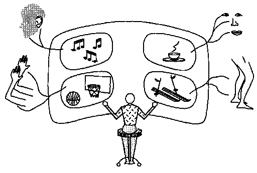
这个图表将我们的感官机制描绘为向大脑发送信息，在那里它被投射到某个内在的精神电影屏幕上。然后，在那个幽灵般的剧院里，一个潜伏的自我观察场景，然后考虑该做什么。最后，那个自我可能会行动——以某种方式逆转所有这些步骤——通过另一系列遥控配件发送各种信号来影响现实世界。
这个概念根本不起作用。认为你内心有另一个人在做你的工作对你没有帮助。这个”小人”(homunculus)的概念——每个自我内部都有一个小人——只会导致一个悖论，因为那样的话，[那个内在的自我需要在自己内部又有一个电影屏幕，来投射它所看到的东西！]然后，为了观看那个戏中戏，我们需要另一个自我中的自我——来为上一个做思考！然后这一切会再次重复，因为每个新的自我都需要另一个来完成它的工作！
单一的、中心化的自我这个概念无法解释任何事情。因为一个没有组成部分的东西，无法提供任何可用作解释的片段！
那么，为什么我们如此频繁地接受这个奇怪的想法——我们所做的事情是由其他人完成的，也就是我们的自我？因为我们大脑所做的大部分工作，对于那些涉及语言意识的部分来说都是隐藏的。
无论是激情——知识、名望或财富，
没有人会与他的邻居交换自己。
——亚历山大·蒲柏
为什么我们接受自我内部存在一个中心化自我这个矛盾的形象？因为它在实际生活的许多领域为我们提供了很好的服务。以下是将一个人视为单一事物的一些理由。
物理世界：我们的身体像其他占据空间的物体一样行动。因此，我们必须基于拥有单一身体来制定计划和决策。两个人无法容纳在只有一个人空间的地方——人也不能穿墙而过或在没有支撑的情况下停留在空中。
个人隐私：当玛丽告诉杰克某事时，她必须记住它被告诉了谁，她不能假设每个其他人也知道它。此外，没有个体的概念，我们就无法有责任感。
心理活动：我们经常发现很难同时思考两个不同的想法，特别是当它们相似时，因为当要求相同的代理同时做不同的工作时，我们会感到”困惑”。
为什么我们的心理过程对我们来说经常看起来像”意识流”一样流动？也许是因为，为了保持控制，我们必须简化我们对正在发生的事情的表示。然后，当那个复杂的心理场景被”理清”时，就好像一条单一的想法管道在大脑中流动。
这些都是令人信服的理由，说明为什么把自己看作单一个体是有帮助的。尽管如此，我们每个人不仅必须学会不同的人有自己的身份，而且同一个人可以同时拥有不同的信念、计划和倾向。为了找到关于心理学的好想法，单一代理(single-agent)形象已经成为一个严重的障碍。要理解人类思维无疑是任何思维所能面对的最困难的任务之一。单一自我的传说只能使我们偏离那次探究的目标。
我处理音符并不比许多钢琴家好。但音符之间的停顿——啊，那才是艺术所在！
——阿图尔·施纳贝尔
为什么我们喜欢如此多对我们来说似乎没有任何实际用处的东西？我们经常带着防御和自豪的混合情绪谈论这个问题。
“为艺术而艺术。”
“我发现它在审美上令人愉悦。”
“我就是喜欢它。”
“这无法解释。”
为什么我们在这些模糊的、挑衅性的声明中寻求庇护？“这无法解释”听起来像一个被要求记账的内疚的孩子。而”我就是喜欢它”听起来像一个隐藏着不太值得承认的理由的人。然而，我们经常确实有充分的实际理由做出本身没有理由的选择，但在更大规模上有影响。
可识别性：椅子的腿无论做成方形还是圆形都同样好用。那么为什么我们倾向于根据系统的风格或时尚来选择我们的家具？因为熟悉的风格使我们更容易识别和分类我们所看到的东西。
一致性：如果一个房间里的每件物品本身都很有趣，我们的家具可能会过多地占据我们的思维。通过采用统一的风格，我们保护自己免受干扰。
可预测性：一辆车在左侧还是右侧行驶没有区别。但当有许多车时，这就有了很大的区别！社会需要对个人来说没有意义的规则。
如果一个人以之前做过的方式做出每个任意的选择，可以节省大量的心理工作。决定越困难，这个策略就越能节省。我的同事爱德华·弗雷德金(Edward Fredkin)的以下观察似乎足够重要，值得有一个名字：
弗雷德金悖论(Fredkin’s Paradox)：两个选择看起来越是同样有吸引力，在它们之间做出选择就越困难——无论在同样程度上，这个选择只能更不重要。
难怪我们经常无法解释”品味”——如果它依赖于我们在普通理由相互抵消时使用的隐藏规则！我并不是说时尚、风格和艺术都是一样的——只是说它们经常共享这种使用位于我们思想表面之下的形式的策略。我们应该何时停止推理并求助于风格规则？只有当我们相当确定进一步的思考只会浪费时间时。也许这就是为什么当我们做出”审美”选择时，我们经常感到这种摆脱实用性的自由感。如果我们意识到它们是如何做出的，这样的决定可能看起来更受约束。那些我们有时因为”只是喜欢”艺术而感到的那些转瞬即逝的内疚感呢？也许它们是我们的思维提醒自己不要过于鲁莽地放弃思考的方式。
词语能够描绘人类个体，这不是很了不起吗？考虑到有那么多要说的，你可能会认为这应该是不可能的。那么，是什么允许作家描绘看似真实的个性呢？这是因为我们在许多没有说出来的事情上达成了一致。例如，我们假设所有角色都拥有我们所称的常识性知识(commonsense knowledge)，我们也同意许多关于我们所称的人性的一般性观点。
敌意引发防御性。挫折激起攻击性。
我们也认识到个体具有特定的品质和性格特质(traits)。
简很整洁。玛丽很胆小。格蕾丝很聪明。
那不是查尔斯会做的事情。那不是他的风格。
为什么会存在这样的特质？人文学者往往夸耀理解一个心智的尺度有多么困难。但让我们转而问一问，“是什么让个性如此容易刻画？为什么一个人会倾向于具有整体上整洁的品质，而不是简单地在某些事情上整洁、在其他事情上凌乱？为什么我们的个性会表现出这样的连贯性？一个由百万个代理组装而成的系统，怎么可能用简短的词串来描述？以下是一些可能的原因。
选择性：首先我们应该面对这样一个事实，即我们对他人心智的印象往往是虚假清晰的。我们倾向于用我们能够描述的东西来思考另一个人的”个性”，并倾向于将其余部分搁置一旁，就好像它根本不存在一样。
风格：为了避免做出我们认为不重要的决定所需的努力，我们倾向于发展出变得如此系统化的策略，以至于它们可以从外部被察觉并被描述为个人特质。
可预测性：因为没有信任就很难维持友谊，我们试图符合朋友的期望。然后，在我们用特质来构建我们对同伴的印象的程度上，我们发现自己在教导自己按照这些相同的描述行事。
自力更生：因此，随着时间的推移，想象的特质可以使自己成为现实！因为即使要执行我们自己的计划，我们也必须能够预测我们自己可能会做什么——而这将变得越容易，我们越简化自己。
能够信任我们的朋友是件好事，但我们需要能够信任我们自己。当我们无法确定自己脑海中有什么时，这怎么可能呢？实现这一点的一种方法是用特质来思考我们自己——然后着手训练我们自己按照这些自我形象行事。尽管如此，个性只是一个人的表面。我们所谓的特质只是我们设法感知到的规律性。我们永远不会真正了解自己，因为有太多其他的过程和策略从不直接在我们的行为中显现出来，而是在幕后工作。
人类一切苦难都有其原因，并且有办法使它们终结，因为世界上的一切都是大量原因和条件汇聚的结果，而一切都会随着这些原因和条件的改变和消逝而消失。
——佛陀
我们用”我”、“我自己”和”I”这样的词表示什么意思？以”在我的童年时代”开头的故事意味着什么？那个贯穿你一生保持不变的奇怪的所有物”你”是什么？你还是你学会阅读之前的那个人吗？你现在几乎无法想象，那时候文字看起来是什么样子。试着看这些词而不阅读它们：
就意识而言，我们发现几乎不可能将事物的外表与它们对我们意味着什么分开。但是，如果我们无法回忆起在我们学会将新意义与那些事物联系起来之前，它们对我们来说是什么样子，是什么让我们认为我们可以回忆起在以前的时候我们自己对我们来说是什么样子？如果有人问这样的问题，你会怎么说：
“你现在还是你曾经的那个人吗，在你学会说话之前？”
“我当然是。为什么，我还能是谁呢？”
“你是说你根本没有改变吗？”
“当然不是。我只是说我是同一个人——在某些方面相同，在其他方面不同——但仍然是同一个我。”
“但是你怎么能和你在学会记忆事物之前的那个人一样呢？你甚至能想象那是什么样子吗？”
“也许我不能——然而仍然必定存在某种连续性。即使我无法记住它，我肯定也曾是那个人。”
我们都体验到那种尽管变化却不变的感觉，不仅对于过去，对于未来也是如此！想想你如何以现在自我的代价对未来自我慷慨。今天，你把一些钱存入银行，以便将来某个时候你可以取出来。那个未来的自我什么时候为你做过这么好的事情？“你”是那些意义只缓慢改变的记忆的主体吗？是你所有先前经验的永无止境的副作用吗？还是只是随着时间和生活的推进变化最少的那些代理？
心智。一种由大脑分泌的神秘形式的物质。它的主要活动包括努力确定自己的本质，这种尝试的徒劳是由于它只有自己来认识自己。
——安布罗斯·比尔斯
有意识的 形容词 1. 对（自己的感觉、情感等，或外部事物）有感觉或知识；知道或感觉到（某事正在或曾经发生或存在）；…3. 意识到自己作为一个思考的存在；知道自己在做什么以及为什么。
——韦氏未删节词典
在现实生活中，你经常不得不处理你并不完全理解的事情。你驾驶一辆汽车，却不知道它的引擎是如何工作的。你作为乘客坐在别人的车里，却不知道那个司机是如何工作的。最奇怪的是，你驾驶你的身体和你的心智，却不知道你自己的自我是如何工作的。我们能够思考，却不知道思考意味着什么，这不是很神奇吗？我们能够产生想法，却无法解释想法是什么，这不是很了不起吗？
在每个正常人的心智中似乎都有一些我们称之为意识(consciousness)的过程。我们通常认为它们使我们能够知道我们心智内部发生了什么。但这种自我意识的名声并不那么当之无愧，因为我们有意识的思想向我们揭示的关于产生它们的原因是如此之少。
想象一下司机如何引导汽车的巨大动量，他并不知道引擎如何工作，也不知道方向盘如何将车引导向左或向右。然而当我们思考时,我们以几乎相同的方式驾驶自己的身体。就有意识的思考而言,你让自己转身朝某个方向行走,就像驾驶汽车一样;你只意识到某种总体意图,其余的一切都会自行处理。改变你的运动方向实际上相当复杂。如果你只是简单地在一侧迈出更大或更小的步伐,就像转动划艇的方式,你会向转弯的外侧倾倒。相反,你通过让自己向内侧倾斜来开始转弯—然后利用离心力在下一步中使自己恢复平衡。这个令人难以置信的过程涉及一个庞大的肌肉、骨骼和关节社会,全部由数百个相互作用的程序控制,即使是专家也还不完全理解。然而你所想的只是”向那边转”,你的愿望就自动实现了。
我们将那些后果不是其自身特性固有的,而只是被赋予的行为称为”信号”。当你通过踩油门踏板来加速汽车时,这本身并不做功;它只是一个让发动机推动汽车的信号。同样,转动方向盘只是一个使转向机制转动汽车的信号。汽车设计师可以很容易地将踏板分配为转向汽车,或让方向盘控制速度。但实际的设计师试图利用那些已经获得某种意义的信号。
我们的有意识思维使用信号符号来引导我们头脑中的引擎,控制着我们从未真正意识到的无数过程。不理解这是如何完成的,我们学会通过向那些庞大机器发送信号来达到目的,就像古代的巫师使用仪式来施展咒语一样。
我们如何理解任何事物?我认为几乎总是通过使用这样或那样的类比—也就是说,通过将每个新事物表示为类似于我们已经知道的东西。每当一个新事物的内部运作过于陌生或复杂而无法直接处理时,我们就用更熟悉的符号来表示我们能够表示的任何部分。通过这种方式,我们使每个新奇事物看起来类似于某些更普通的东西。信号、符号、词语和名称的使用真的是一个伟大的发现。它们让我们的头脑将陌生转化为平常。
假设一位外星建筑师发明了一种从一个房间到另一个房间的全新方式。这项发明具有门的正常功能,但它的形式和机制远远超出了我们的经验,以至于看到它时,我们永远无法将其识别为门,也无法猜测如何使用它。它的所有物理细节都是错误的。它不是我们通常期望门应该是的样子—一块铰链、摆动、木制的板子嵌入墙中。没关系:只需在其外部叠加一些装饰、符号、图标、标记、词语或标志,可以提醒我们它的用途。给它披上矩形形状,或在上面添加一个印有红白相间的EXIT字样的推板,地球上的每一位访客都会毫不费力地知道那个伪门户的目的是什么,并像使用门一样使用它。
起初,将门的符号分配给一个实际上不是门的发明似乎只是一种诡计。但我们总是处于同样的困境中。我们的头脑中没有门,只有符号之间的连接。稍微夸张地说,我们所谓的意识不过是不时在其他系统使用的心理屏幕显示器上闪现的菜单列表。这非常像电脑游戏的玩家使用符号来调用他们复杂游戏机器内部的过程,而对它们如何工作毫不理解。
当你仔细想想,几乎不可能是别的样子!考虑一下如果我们真的能够面对大脑中的万亿根线网络会发生什么。科学家们多年来一直在观察这些结构的微小片段,却未能理解它们的作用。幸运的是,对于日常生活的目的,我们的词语或信号足以在头脑中唤起一些有用的事情。只要它们有效,谁在乎它们如何工作!考虑一下你如何几乎只能将锤子视为用来敲打的东西,或将球视为用来投掷和接住的东西。为什么我们看事物,更少地按其本来面目,更多地从如何使用它们的角度来看?这是因为我们的头脑不是为了作为科学或哲学的工具而进化的,而是为了解决营养、防御、繁殖等实际问题。我们倾向于认为知识本身是好的,但知识只有在我们能够利用它来帮助我们达到目标时才有用。
你如何发现关于世界的事物?只需看一看!这似乎很简单—但并非如此。每一次随意的一瞥都使用十亿个脑细胞来表示当前场景,并总结其与其他经验记录的差异。你的代理机构(agencies)会形成关于世界中发生的事情的小片段理论,然后让你做小实验来确认或重新制定这些猜想。这似乎很简单只是因为你没有意识到正在发生什么。
你如何发现关于自己思维的事情？你使用类似的技术。你构建一些关于你如何思考的小理论，然后用微小的实验来测试它们。问题在于，思想实验往往不能得出科学家所追求的那种清晰明确的发现。问问你自己，当你试图想象一个圆形的正方形时会发生什么——或者当你试图同时感到快乐和悲伤时。为什么如此难以描述这类实验的结果或从中得出有用的结论？这是因为我们会感到困惑。我们对心理实验的思考本身就是心理实验——因此会相互干扰。
思考影响我们的思想。
编写计算机程序的人会遇到类似的问题，当新程序由于其各部分之间意外的交互而发生故障时。为了找出发生了什么，程序员开发了专门用于调试其他程序的特殊程序。但就像在思想实验中一样，存在一个危险，即被观察的程序可能会改变正在观察它的程序。为了防止这种情况，所有现代计算机都配备了特殊的中断机制(interrupt machinery)，可以检测任何其他程序试图修改调试程序的尝试；当这种情况发生时，罪魁祸首会被冻结在原地，以便调试程序可以检查它。要做到这一点，中断机制必须配备一个专用的内存库，可以存储足够的信息，以便稍后可以重新启动被冻结的程序，就好像什么都没发生过一样。
大脑是否具备做类似事情的能力？在一次只做一件事的计算机中构建自我检查系统很容易，但在像大脑这样同时进行许多过程的系统中就困难得多。问题在于，如果你只冻结一个过程而不停止其他过程，就会改变你试图检查的情况。然而，如果你同时停止所有这些过程，你就无法实验它们如何相互作用。
稍后，我们将看到意识与我们最直接的记忆有关。这意味着意识能告诉我们关于它自身的事情是有限的——因为它无法进行完美的自我实验。这需要保存关于记忆机制内部发生的事情的完美记录。但任何这样的机制都必然会被试图找出它如何工作的自我实验所混淆——因为这些实验必然会改变它们试图检查的记录本身！我们无法完美地处理中断。这并不意味着意识在原则上无法被理解。这只意味着要研究它，我们必须使用科学的间接方法，因为我们不能简单地”看一看就知道”。
有一种方法可以让思维观察自己并仍然跟踪正在发生的事情。将大脑分为两部分，A和B。将A-大脑的输入和输出连接到真实世界——这样它就可以感知那里发生的事情。但不要将B-大脑连接到外部世界；相反，连接它，使得A-大脑成为B-大脑的世界！
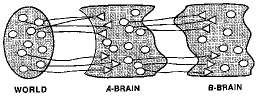
现在A可以看到并作用于外部世界发生的事情——而B可以”看到并影响”A内部发生的事情。这样的B有什么用处呢？以下是B可能学会识别和影响的一些A-活动。
| A看起来混乱和困惑 | 抑制那个活动 | | A似乎在重复自己 | 让A停止。做其他事情 | | A做了B认为好的事情 | 让A记住这个 | | A被过多的细节占据 | 让A采取更高层次的视角 | | A不够具体 | 将A的注意力集中在较低层次的细节上 |
这种两部分的安排可能是向拥有更具”反思性(reflective)“的思维社会迈出的一步。B-大脑可以对A-大脑进行实验，就像A-大脑可以对身体或周围的物体和人进行实验一样。正如A可以尝试预测和控制外部世界发生的事情一样，B可以尝试预测和控制A将要做什么。例如，B-大脑可以监督A-大脑如何学习，要么通过直接对A进行更改，要么通过影响A自己的学习过程。
即使B可能不知道A的活动与外部世界的关系意味着什么，B仍然有可能对A有用。这是因为B-大脑可以学会扮演类似于顾问、心理学家或管理咨询顾问的角色，他们可以评估客户的心理策略，而不必理解该客户职业的所有细节。在不知道A的目标是什么的情况下，B可能能够学会判断A何时没有实现这些目标，而只是在原地打转或徘徊，因为某些A-代理一遍又一遍地重复同样的事情而感到困惑。然后B可能会尝试一些简单的补救措施，比如抑制其中一些A-代理。当然，这也可能导致B的活动成为对A的干扰。例如，如果A的目标是将一长列数字相加，B可能会开始干扰这个过程，因为从B的角度看，A似乎陷入了重复循环。这可能导致习惯于更多变化的人发现很难集中注意力完成这样的任务，并抱怨感到无聊。
在B-大脑知道A中发生了什么的程度上，整个系统可以被认为是部分”自我意识(self-aware)“的。然而，如果我们连接A和B使它们过于密切地”观察”彼此，那么任何事情都可能发生，整个系统可能会变得不稳定。无论如何，没有理由只停留在两个层次；我们可以连接一个C-大脑来观察B-大脑，依此类推。
[时间的现在与时间的过去]
[或许都存在于时间的未来之中，]
[而时间的未来又蕴含在时间的过去里。]
[—T. S. 艾略特]
没有任何主管能够知晓其所有下属的全部工作。时间永远都不够用。在信息流的金字塔中，每个官僚只能看到其位置之下发生的一小部分事情。最好的下属是那些工作最安静的人。事实上，这就是为什么我们要为那些不知道如何做或没有时间亲自做的工作建立管理金字塔。这也是为什么我们的许多思想必须隐藏在意识之外。
优秀的科学家从不试图一次性学习太多东西。相反，他们选择情况的特定方面，仔细观察并做记录。实验记录是”冻结的现象”。它们让我们有足够的时间来构建理论。但我们如何在大脑内部做同样的事情呢？我们需要某种记忆来保存这些记录的安全。
当我们学习关于记忆的章节时，我们将看到这如何运作。我们将推测你的大脑包含一群被称为”K线”(K-lines)的智能体(agents)，你可以用它们来记录某些大脑智能体在某个时刻正在做什么。稍后，当你激活相同的K线时，这会将那些智能体恢复到它们之前的状态。这让你”记住”了之前的部分心理状态，通过让大脑的那些部分重新做它们之前做过的事情。然后，大脑的其他部分会做出反应，就好像相同的事件再次发生一样！当然，这些记忆总是不完整的，因为没有什么东西能有足够的容量来记录自己状态的每一个细节。（否则，它必须比自己更大。）由于我们无法记住所有事情，每个独立的大脑都面临着科学家始终面临的同样问题：他们没有万无一失的方法在事前知道什么是最重要的事情需要注意和记录。
用大脑来检查自己在另一方面也像科学。就像物理学家看不到他们谈论的原子一样，心理学家也无法观察他们试图检查的过程。我们只能通过它们的效果来”了解”这些东西。但当涉及到大脑时，问题更糟，因为科学家可以阅读彼此的笔记，但大脑的不同部分无法读取彼此的记忆。
我们现在已经看到了几个原因，说明为什么我们不能简单地通过静坐并等待视野变清晰来观察自己的大脑。我们唯一的出路是像科学家在某些东西太大或太小而无法看到时那样研究大脑—通过基于证据建立理论。做一个猜测；用一个巧妙的实验来测试它；整理思绪再猜一次。当内省(introspection)似乎有效时，这并不是因为我们找到了看透自己内部的神奇方法。相反，这意味着我们做了一些精心设计的实验。
你认为你现在在想什么？你可能会回答，“当然，就是我现在正在想的想法！”在日常生活中这是有道理的，其中”现在”意味着”在时间的这一刻”。但对于一个社会内部的智能体来说，“现在”的含义远不那么清晰。
[大脑一部分的变化影响其他部分需要一些时间。]
[总是有一些延迟。]
例如，假设你遇到了你的朋友杰克。你的声音和面孔智能体可能会识别杰克的声音和面孔，并且都向名字智能体发送消息，后者可能会回忆起杰克的名字。但[声音]也可能向引语发送一条”词语消息”，这是一个基于语言的智能体，有办法记住杰克之前说过的短语，而[面孔]也可能向地点发送一条消息，这是一个与空间有关的智能体，它可能会回忆起之前看到杰克面孔的某个地方。
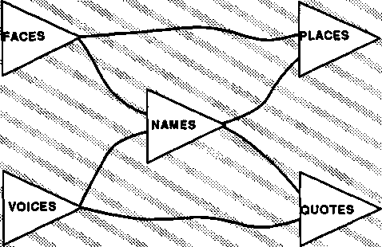
[PLACES首先从FACES接收信号，因为来自VOICES的消息首先通过NAMES。]
[所以虽然真实时间从左到右进行，但对PLACES来说，过去的时刻形成倾斜的线。]
现在假设我们可以问[地点]和[引语]哪个先发生，看到杰克还是听到他的声音？我们会得到两个不同的答案！[地点]将首先检测到面孔—而[引语]将首先检测到声音。事件的表面顺序取决于哪条消息首先到达每个智能体—因此事件的表面序列在不同智能体之间是不同的。每个智能体都会以自己略有不同的方式做出反应—因为它受到了略有不同的”因果历史”(causal history)的影响，这种历史像波浪一样扩散到过去。
一般来说，任何智能体P都不可能确切知道另一个智能体Q在完全相同的时间正在做什么。P能做的最好的事情就是直接向Q发送查询，并希望Q能在其他智能体改变Q的状态—或沿途改变其消息之前，将一条真实的消息传回来。大脑的任何部分都无法知道同时在所有其他智能体中发生的一切。因此，每个智能体对于过去发生了什么—以及”现在”正在发生什么，都必须有至少略有不同的感觉。大脑的每个不同智能体都生活在略有不同的时间世界中。
[要了解任何事物][诗人说][我们必须了解它的影响；要了解人类，我们必须了解他们的作品，这样我们才能知道理性指示了什么，或激情煽动了什么，并找出什么是最强大的行动动机。要正确判断现在，我们必须将它与过去对比；因为所有判断都是比较性的，而关于未来什么都无法知道。事实是，没有哪个大脑会过多地关注现在：回忆和预期几乎填满了我们所有的时刻。我们的激情是喜悦和悲伤，爱和恨，希望和恐惧；即使是爱和恨也关乎过去，因为原因必须在结果之前。]
[— 塞缪尔·约翰逊]
我们日常关于心智时间进程的观念是错误的：它们没有为每个代理(agent)拥有不同因果历史这一事实留出空间。诚然，在更长的时间跨度内，这些不同的过去会相互交织，每个代理最终都会受到其社会共同的遥远历史中发生的事情的影响。但这不是我们所说的”现在”。问题在于各个基本独立的代理机构(agency)之间时时刻刻活动的连接。
当一根针掉落时,你可能会说：“我刚刚听到一根针掉了。”但没有人会说：“我听到一根针正在掉落。”我们的言语代理机构从经验中知道，针掉落的物理过程在你开始说话之前就已经结束了。但你会说”我正在恋爱中”，而不是”我刚刚恋爱过”，因为你的言语代理机构知道，涉及个人依恋的代理机构以较慢的节奏运作，其状态可能持续数月或数年。介于两者之间，当有人问：“你现在有什么样的感受？”我们常常发现我们半成形的答案在表达出来之前就已经错了，因为其他感受介入了进来。对一个代理机构来说似乎只是一瞬间的事情，对另一个代理机构来说可能像是一个时代。
我们的记忆只是间接地与物理时间相关联。我们对一个值得记忆的事件”实际上”何时发生没有绝对的感知。充其量，我们只能知道它与某些其他事件之间的一些时间关系。你可能能够回忆起X和Y发生在不同的日子，但无法确定这些日子中哪一天更早。而许多记忆似乎根本不与时间间隔相关联——比如知道四在三之后，或者”我就是我自己”。
一个代理机构运作得越慢——也就是说，每次状态变化之间的间隔越长——在这些间隔内可以到达的外部信号就越多。这是否意味着，对于一个慢速代理机构来说，外部世界看起来会比对快速代理机构移动得更快？对乌龟来说生活似乎很快，但对蜂鸟来说却很乏味？
就像我们不假思索地行走一样，我们也不假思索地思考！我们不知道肌肉如何让我们行走——我们对执行心智工作的代理机构也了解不多。当你有一个难题要解决时，你会思考一段时间。然后，也许，答案似乎一下子就来了，你说：“啊哈，我明白了。我要做这样那样的事。”但如果有人问你如何找到解决方案，你很少能说出比以下内容更多的东西：
“我突然意识到……”
“我刚刚有了这个想法……”
“我想到……”
如果我们真的能感知到我们心智的运作，我们就不会经常按照我们不怀疑的动机行事。我们不会对心理学有如此多样和相互矛盾的理论。当被问及人们如何获得好主意时，我们也不会沦落到使用关于”反刍”和”消化”、“孕育”和”诞生概念”的隐喻，仿佛我们的思想在头脑之外的任何地方。如果我们能看到我们的内心，我们肯定会有更有用的话要说。
许多人似乎绝对确信，没有任何计算机能够有感知、有意识、有自主意志，或以任何其他方式”意识到”自己。但是什么让每个人都如此确信他们自己拥有这些令人钦佩的品质呢？确实，如果我们确信任何事情，那就是”我有意识——因此我有意识。“然而，这种信念真正意味着什么？如果自我意识(self-awareness)意味着知道一个人心智内部正在发生什么，没有一个现实主义者能长期坚持认为人们有很多洞察力，从字面意义上的内视(seeing-in)来说。事实上，我们具有自我意识的证据——也就是说，我们在找出自己内部正在发生什么方面有任何特殊能力——确实非常薄弱。确实，某些人在评估其他人（以及更罕见的是他们自己）的态度和动机方面有特殊的才能。但这并不能证明我们如何了解关于人的事情（包括我们自己）与我们如何了解其他事情在根本上有所不同。我们称之为”洞察力”的大多数理解只不过是我们”弄清楚”正在发生什么的其他方式的变体。
我们称之为心智的东西只不过是一堆或一组不同的感知，通过某些关系联合在一起，并被假定（尽管错误地）具有完美的简单性和同一性。
——大卫·休谟
我们将采取这样的观点：没有什么东西本身具有意义，只有与我们已经知道的其他意义的关系才有意义。人们可能会抱怨，这具有那个古老问题的性质：“先有鸡还是先有蛋？”如果一个人知道的每件事都依赖于一个人知道的其他事情，那不就像建在空中的城堡吗？如果没有一个固定在坚实的地面上，它们怎么能不全部倒塌呢？
好吧，首先，一个社会中每个部分都赋予其他部分意义这一想法基本上没有什么错。有些思想集合很像扭曲的绳索或编织的布，其中每根线既将其他线固定在一起又使其分开。想想你知道的所有音乐曲调。在它们当中，你肯定能找到两首曲子，你更喜欢其中的每一首，因为它与另一首的相似或不同。此外，没有任何人类的心智完全漂浮着。稍后我们将看到，我们关于空间和时间的概念如何完全基于关系网络，但仍然可以反映现实的结构。
如果每个头脑内部构建的东西都有所不同,那么一个头脑如何与另一个不同的头脑交流呢?归根结底,交流确实是一个程度问题,但当不同的头脑无法完美理解彼此时,这并不总是令人遗憾的。因为只要还保留着某种交流,我们就能分享彼此思想的丰富性。如果我们都完全相同,其他人还有什么用呢?无论如何,你的头脑内部也是同样的情况——因为即使是你自己也永远无法精确地知道你的意思!如果在思考之后,你的头脑回到完全相同的状态,那么任何思想都将毫无用处。但这从未发生过,因为每次我们思考某件事时,我们的思想都会朝着不同的方向发展。
任何事物对我们的意义秘密取决于我们如何将它与我们所知的所有其他事物联系起来。这就是为什么寻求任何事物的”真正意义”几乎总是错误的。只有一种意义的事物几乎没有任何意义。
只有单一含义的想法只能引导你沿着一条轨道前进。然后,如果出现任何问题,它就会卡住——一个思想停留在你的头脑中,无处可去。这就是为什么当某人”死记硬背”地学习某些东西时——也就是说,没有合理的联系——我们说他们”并不真正理解”。然而,丰富的意义网络(meaning-networks)给你许多不同的方向:如果你不能用一种方法解决问题,你可以尝试另一种方法。诚然,太多不加区分的连接会把头脑变成一团糨糊。但连接良好的意义结构让你能够在头脑中翻转想法,考虑替代方案,从多个角度设想事物,直到找到有效的方法。这就是我们所说的思考!
所有这些美丽的、进化的品质自发地在个人和集体生活中绽放……在意识被发现与所有自然法则的统一场域(unified field)等同的地方。
——玛赫西国际大学公报,1984年
并不存在单一真实的思想世界;每个头脑都演化出自己的内部宇宙。我们似乎最喜欢的思想世界是那些目标和行动似乎在足够大的区域内相互融合的世界——足以让我们在其中度过一生——从而成为佛教徒、共和党人、诗人或拓扑学家。一些心理起点成长为宏大、连贯的大陆。在数学、科学和哲学的某些部分,相对较少但清晰的想法可能会引向一个由复杂而一致的新结构组成的无尽领域。然而,即使在数学中,少数看似无害的规则也可能导致远超我们理解能力的复杂性。因此,我们感觉自己完全理解加法和乘法的规则——但当我们将它们混合在一起时,我们会遇到关于素数的问题,这些问题已经几个世纪未得到解决。
头脑也构建出愉快的实际事务世界——之所以有效,是因为我们通过在那里安排事物使它们有效。在物理领域,我们把书籍和衣服放在自制的书架和柜子里——从而建立人工边界,使我们的东西不会有太多互动。同样,在心理领域,我们制定了无数人工方案来强制让事物看起来有序,通过规定法律条文、语法规则和交通法规。当在这样的世界中成长时,一切似乎都是正确和自然的——只有学者和历史学家才会回想起使其如此顺利运作所需的大量先例和失败实验。这些”自然”世界实际上比哲学的技术世界更复杂。它们太庞大而无法理解——除非我们将我们制定的规则强加于它们。
还有一种不同且更险恶的方式来使世界看起来有序,在这种方式中,头脑只是找到了一种简化自己的方法。每当某个想法似乎解释了太多东西时,我们就必须怀疑这一点。也许根本没有解决任何问题;相反,头脑只是在大脑中找到了某个次级路径(secondary pathway),通过它可以机械地将每个疑问和分歧从其应有的位置驱逐!这可能是某些经历中发生的事情,这些经历给人留下启示感——处于一种没有疑问的状态,或者拥有惊人清晰的愿景——但却无法叙述任何细节。某种精神压力的意外暂时抑制了质疑、怀疑或探究的能力。人们记得没有问题得不到回答,但忘记了根本没有提出任何问题!人们只能通过切断探究来获得确定性。
当这些事件的受害者被迫重新捕捉它们时,他们的生活和个性有时会永久改变。然后其他人看到他们眼中的光辉,听说要找到的荣耀,就被吸引去追随他们。但对悖论表示欢迎就像向悬崖倾斜。你可以通过掉进去来发现那是什么感觉,但你可能无法再爬出来。一旦矛盾找到了家,很少有头脑能拒绝诸如”万物归一”这样的破坏意义的口号的力量。
假设当你行走和交谈时,你可以观察穿越你大脑的信号。它们对你有意义吗?许多人通过使用生物反馈(biofeedback)设备进行实验,使这些信号可听可见。这通常有助于一个人学会控制通常不受意识控制的各种肌肉和腺体。但这从未导致理解这些隐藏电路是如何工作的。
科学家在使用电子仪器探测大脑信号时也会遇到类似的问题。这让我们对神经系统的工作方式有了很多了解——但这些洞察和理解从来都不是单纯通过观察得来的。如果没有至少某种理论或假设的雏形，人们就无法使用数据。即使我们能直接感知精神生活的[全部]内部细节,也无法告诉我们如何理解它们。这甚至可能让理解变得更加困难,因为我们会被所看到的信息淹没,无法解读。我们观察到的现象的原因和功能,本身并不是我们能够观察到的东西。
我们从哪里获得所需的想法?我们的大多数概念来自我们成长的社群。即使是我们”自己得出”的想法也来自社群——这一次,是我们头脑内部的社群。大脑不会像肌肉施加力量或卵巢产生雌激素那样直接制造思想;相反,要获得一个好想法,必须调动庞大的子机器组织来完成各种各样的工作。每个人类头骨内都包含数百种计算机,它们经过数亿年的进化发展而来,每种都有略微不同的架构(architecture)。每个专门的代理(agency)必须学会调用其他能够服务于其目的的专家。大脑的某些部分能够将声音从其他类型的声音中区分出来;其他专门的代理则能将面孔的视觉图像从其他类型的物体中区分出来。没有人知道我们大脑中有多少不同的这类器官。但几乎可以肯定的是,它们都采用了略有不同的编程类型和表征(representation)形式;它们没有共同的语言代码。
如果一个各部分使用不同语言和思维模式的心智试图审视自身,那些代理中几乎没有哪个能够理解彼此。说不同人类语言的人之间的交流已经足够困难了,而心智不同部分使用的信号肯定更不相似。如果代理P向一个不相关的代理Q提出任何问题,Q如何能感知到被问了什么,或者P如何理解它的回答?大多数代理对之间根本无法交流。
如果代理无法交流,那么为什么人类能够交流——尽管有着如此不同的背景、思想和目的?答案是我们高估了实际交流的程度。相反,尽管存在那些看似重要的差异,我们所做的大部分事情都是基于共同的知识和经验。因此,尽管我们几乎无法谈论低层次心理过程中发生的事情,但我们可以利用它们共同的遗产。虽然我们无法表达我们的意思,但我们常常可以引用各种例子来指示如何连接我们确信已经存在于听者心智中的结构。简而言之,我们常常可以指示应该思考哪种类型的思想,即使我们无法表达它们是如何运作的。
我们用来总结高层次目标和计划的词语和符号与用来控制低层次目标和计划的信号是不同的。因此,当我们的高层次代理试图探查它们所利用的低层次子机器的细节时,它们无法理解正在发生什么。这一定是为什么我们的语言代理无法表达诸如我们如何在自行车上保持平衡、如何区分图片和真实事物、或如何从记忆中提取事实等事情。我们发现特别难以使用我们的语言技能来谈论那些在我们开始学习说话之前就学会了平衡、看见和记忆等技能的大脑部分。
“意义”(meaning)本身是相对于大小和尺度而言的:只有在一个足够大、能够拥有许多意义的系统中,谈论意义才有意义。对于较小的系统,这个概念似乎是空洞和多余的。例如,[建造者]代理不需要任何意义感来完成它们的工作;[添加]只需要打开[获取]和[放置]。然后[获取]和[放置]不需要对那些打开信号”意味着”什么有任何微妙的理解——因为它们被连接起来只做它们被连接起来要做的事。一般来说,代理越小,其他代理就越难理解其微小的”语言”。
[两种语言越小,它们之间的翻译就越困难。这不是因为意义太多,而是因为意义太少。一个代理做的事情越少,另一个代理所做的事情就越不可能对应于其中任何一件事。如果两个代理没有任何共同点,就无法想象任何翻译。]
在人类语言之间翻译这一更为熟悉的困难中,每个词都有许多意义,主要问题是将它们缩小到它们共享的某个意义。但在不相关代理之间交流的情况下,如果代理从一开始就没有任何共同点,缩小范围也无济于事。
更完美地”认识自己”似乎预示着某种强大而美好的东西。但这个美好想法背后隐藏着谬误。毫无疑问,一个想要改变自己的心智可以从了解它如何运作中受益。但如果我们有办法将笨拙的心理手指插入心智机制的复杂电路中,这样的知识同样容易鼓励我们毁掉自己。这会不会就是我们的大脑迫使我们玩那些心理捉迷藏游戏的原因?
只要看看我们是多么容易冒险进行改变自己的实验;我们是如何致命地被药物、冥想(meditation)、音乐、甚至对话所吸引——所有这些都是能够改变我们个性的强大成瘾物。只要看看每个人是如何被任何超越正常快乐和奖赏界限的承诺所迷惑。
在日常生活中，我们的愉悦系统通过对我们施加制衡机制来帮助我们学习——因此，也帮助我们规范自己的行为。例如，为什么当我们一遍又一遍地做同一件事时会感到厌倦，即使这项活动起初是令人愉快的？这似乎是我们愉悦系统的一个特性；如果没有足够的变化，它们往往会饱和。每个学习机器都必须有某种这样的保护机制，否则它可能会陷入无休止地重复同一活动的困境。我们很幸运地配备了防止我们浪费太多时间的机制，而且我们也很幸运地发现很难抑制这些机制。
[如果我们能够刻意控制我们的愉悦系统，我们就可以在不需要任何实际成就的情况下重现成功的愉悦。那将是一切的终结。]
是什么阻止了这种干预？我们的思维受到许多自我约束的束缚。例如，我们很难确定思维内部正在发生什么。稍后，当我们谈论婴儿发育时，我们会看到，即使我们的内在之眼能够看到那里的东西，我们也会发现特别难以改变我们最想改变的智能体——那些在我们婴儿时期帮助塑造了我们最持久的自我理想的智能体。
这些智能体很难改变，因为它们有着特殊的进化起源。许多其他心智机构的长期稳定性取决于我们改变自己应该成为什么样的人的形象的速度有多慢。如果任由随机机会，我们最冒险的冲动可以自由地篡改我们人格的基础，我们中很少有人能够幸存下来。为什么这样做会是一件坏事？因为普通的”改变主意”如果导致不好的结果可以被逆转。但是当你改变你的自我理想时——就没有什么能让你回头了。
西格蒙德·弗洛伊德(Sigmund Freud)的理论认为，每个人的成长都受到无意识需求的支配，这些需求是为了取悦、安抚、反对或终止我们对父母权威的形象。然而，如果我们认识到那些旧形象的影响，我们可能会认为它们太幼稚或太不值得容忍，并寻求用更好的东西取代它们。但是，一旦我们摆脱了所有那些与本能和社会的联系，我们会用什么来替代它们呢？我们每个人最终都会成为更加反复无常的自我发明目标的工具。
主要是当我们的系统失败时，意识才会参与进来。例如，我们行走和说话时对我们实际如何做这些事情没有太多的感觉。但是一个腿部受伤的人可能会第一次开始形成关于行走如何运作的理论[(“要向左转，我必须把自己推向那个方向”)]，然后也许会考虑哪些肌肉可能实现这个目标。当我们意识到自己感到困惑时，我们开始反思我们的思维如何解决问题，并动用我们对思维策略的少量了解。然后我们发现自己说这样的话：
[“现在我必须有条理。为什么我不能专注于重要的问题，而不被那些其他非本质的细节分散注意力？”]
矛盾的是，意识到自己感到困惑是聪明的——相对于在不知情的情况下感到困惑。因为这会刺激我们运用智力去改变或修复有缺陷的过程。然而，我们不喜欢并贬低困惑感，没有欣赏到这种认识的品质。
然而，一旦你的B-大脑让你开始问自己[“我真正试图做什么？”]，你就可以利用这个机会来改变你的目标或改变你描述情况的方式。这样，你就可以逃脱感觉被困的痛苦，因为似乎没有足够的替代方案。困惑的有意识体验可能类似于疼痛；也许这是因为它们都促使我们去发现摆脱困境的方法。不同之处在于，困惑是针对一个人自己失败的心智状态，而疼痛反映的是外部干扰。无论哪种情况，内部过程都必须被拆除和重建。
当困惑和疼痛导致我们在比适当规模更大的范围内放弃目标时，它们都会产生有害的影响：[“整个主题让我感到不适。也许我应该放弃整个项目、职业或关系。”]但即使是这样令人沮丧的想法也可以作为探测器，用于寻找可能参与提供帮助的其他机构。
[问题与目标]
许多人坚持要有”智能”的某种定义。
[批评者：我们如何确定像植物和石头，或风暴和溪流这样的东西，不是以我们尚未想到的方式具有智能的？]
对不同的事物使用同一个词似乎不是一个好主意，除非一个人心中有它们相同的重要方式。植物和溪流在解决我们认为需要智能的问题方面似乎不太擅长。
[批评者：解决问题有什么特别之处？为什么你不精确地定义”智能”，这样我们就可以就我们正在讨论的内容达成一致？]
那也不是一个好主意。作者的工作是按照其他人使用词语的方式使用词语，而不是告诉别人如何使用它们。在这本书中出现”智能”一词的少数地方，它仅仅意味着人们通常所说的意思——解决难题的能力。
[批评者：那么你应该定义你所说的”难”问题是什么意思。我们知道建造金字塔需要大量的人类智能——然而小小的珊瑚礁动物在更大的规模上建造令人印象深刻的结构。那么你不必须认为它们是智能的吗？建造巨大的珊瑚礁不是很难吗？]
是的，但动物能够”解决”这些问题只是一种错觉!没有哪只鸟会[发现]飞行的方法。相反，每只鸟都在利用一个经过无数代爬行动物进化而来的解决方案。同样，尽管人类可能发现很难设计出黄鹂的巢或海狸的坝，但没有哪只黄鹂或海狸真正想出过这些东西。这些动物并不”解决”这类问题；它们只是利用了存储在其复杂的基因构建的大脑中的程序。
[批评者：那么你是不是不得不说进化本身一定是智能的，因为它解决了飞行、建造珊瑚礁和鸟巢这些问题？]
不是，因为人们也用”智能”这个词来强调快速和高效。进化的速度如此缓慢，以至于我们不认为它是智能的，尽管它最终产生了我们自己还无法制造的奇妙事物。无论如何，把”智能”这样一个古老而模糊的词当作必须定义某个确定事物来对待是不明智的。与其试图说这个词”意味着”什么，不如简单地尝试解释我们如何使用它。
[我们的大脑包含一些过程，使我们能够解决我们认为困难的问题。“智能”是我们对那些尚未理解的过程的称呼。]
有些人不喜欢这个”定义”，因为随着我们对心理学了解的增多，它的含义注定会不断变化。但在我看来，这正是它应该的样子，因为智能这个概念本身就像舞台魔术师的把戏。就像[“非洲未探索地区”]的概念一样，一旦我们发现它，它就消失了。
我们都听过关于当今计算机有多愚蠢的笑话。它们给我们寄来零美元零美分的账单和支票。它们不介意在无限循环中工作，将同一件事重复十亿次。它们完全缺乏常识是人们认为没有机器能拥有心智的另一个原因。
有趣的是，一些最早的计算机程序在人们认为是”专家”技能的事情上表现出色。一个1956年的程序解决了数理逻辑中的难题，一个1961年的程序解决了大学水平的微积分问题。然而直到1970年代，我们才能构建出能够看和移动得足够好的机器人程序，以便将儿童的积木排列成简单的塔和小房子。为什么我们能让程序做成年人的事情，却不能让它们做儿童的事情？答案可能看起来自相矛盾：大部分”专家”成人思维实际上比普通儿童玩耍时涉及的思维更简单！为什么编程实现专家所做的事情比儿童所做的事情更容易？
人们模糊地称之为常识的东西实际上比我们钦佩的大多数技术专长更复杂。无论是那个逻辑”专家”程序还是微积分程序都只包含大约一百个左右的”事实”—而且它们大多数彼此相当相似。然而这些足以解决大学水平的问题。相比之下，想想一个孩子仅仅为了搭建一座积木房子必须知道的所有不同[种类]的事情—这个过程涉及形状和颜色、空间和时间、支撑和平衡的知识，以及跟踪自己正在做什么的能力。
[要被视为”专家”，一个人需要大量但种类相对较少的知识。相比之下，一个普通人的”常识”涉及更多不同类型的知识—这需要更复杂的管理系统。]
专业知识比常识性知识更容易获得，这有一个简单的原因。每种类型的知识都需要某种形式的”表征”(representation)和一套适应使用该表征风格的技能。一旦做出了这项投资，专家积累进一步的知识就相对容易了，前提是额外的专业知识足够统一以适合相同的表征风格。律师、医生、建筑师或作曲家在学会处理某个特定领域的一系列案例后，发现获得更多类似性质的知识相对容易。想想一个人学会胜任处理几种疾病[和]几种法律案件[和]少量建筑蓝图[和]几个管弦乐谱需要多长时间。更大的表征多样性会使获得”相同数量”的知识变得更加困难。对于每个新领域，我们的新手必须学习另一种类型的表征和使用它的新技能。这就像学习许多不同的语言，每种语言都有自己的语法、词汇和习语。从这个角度看，儿童所做的事情显得更加非凡，因为他们的许多行为都基于自己的发明和发现。
许多人推理说机器只做它们被编程要做的事情—因此永远不可能有创造力或原创性。问题在于，这个论证预设了它声称要证明的东西：你不能编程让机器具有创造力！事实上，编程让计算机去做比任何程序员事先想象的更多不同的事情是出人意料地容易的。这是可能的，因为我们称之为谜题原则(puzzle principle)的东西。
谜题原则：[我们可以编程让计算机通过试错来解决任何问题，而无需事先知道如何解决它，只要我们有办法识别问题何时被解决。]
我们所说的”试错法”是指系统地编程让机器在某个可能性空间内生成所有可能的结构。例如,假设你想要一个机器人来建造一座跨越溪流的桥梁。最有效的程序应该是简单地执行一个预先规划好的特定流程,精确地放置一些木板和钉子。当然,除非你已经知道如何建造桥梁,否则你无法编写这样的程序。但考虑下面这个替代方案,有时称为生成和测试方法。它包括编写一个两部分的程序。
生成。第一个过程只是逐个生成木板和钉子的所有可能排列。起初,你可能会认为编写这样的程序很难。但事实证明它出奇地简单,一旦你意识到对每种排列都没有任何有意义的要求!
测试。过程的第二部分检查每种排列,看问题是否已经解决。如果目标是建造一座水坝,测试就是看它是否能挡住溪流。如果目标是建造一座桥梁,测试就是看它是否跨越了溪流。
这种可能性让我们重新审视所有关于智能和创造力的旧观念,因为它意味着,至少在原则上,我们可以让机器解决任何我们能够识别其解决方案的问题。然而,这在实践中很少可行。考虑一下,连接两块木板必定有一千种方法,连接三块木板有一百万种方法,将四块木板钉在一起有十亿种方法。在这个谜题原理产生一个可行的桥梁之前,需要难以想象的漫长时间。但从哲学角度来说,它确实有助于用关于过程效率的更具体和更实在的问题来取代我们对创造力的神秘感。我们的造桥机器的主要问题是其生成器和测试器之间缺乏联系。没有朝向目标前进的某种概念,很难做得比盲目的机会更好。
原则上,我们可以使用”生成和测试”方法——即试错法——来解决任何我们能够识别其解决方案的问题。但实际上,即使是最强大的计算机也可能需要太长时间来测试足够多的可能解决方案。仅仅用十几块木块组装一个简单的房子就需要搜索比一个孩子一生能尝试的更多的可能性。这里有一种改进盲目试错搜索的方法。
进步原则(Progress Principle): 如果我们拥有某种方法来检测何时取得了”进步”,任何穷举搜索的过程都可以大大减少。然后我们可以追踪通往解决方案的路径,就像一个人可以在黑暗中攀登一座陌生的山丘——通过在每一步感知周围,找到最陡峭的上升方向。
许多简单的问题可以用这种方法解决,但对于困难的问题,识别”进步”可能几乎和解决问题本身一样困难。没有更大的全局视野,那个”爬山者”可能会永远困在某个小山峰上,永远找不到山顶。没有万无一失的方法来避免这种情况。
目标和子目标(Goals and Subgoals)。我们所知的发现如何解决困难问题的最强大方法是找到一种方法将其分解为几个更简单的问题,每个问题都可以单独解决。
在称为人工智能的领域中,许多研究都关注寻找机器可以用来将问题分解为更小的子问题的方法,然后如有必要,将这些问题再分解为更小的问题。在接下来的几节中,我们将看到如何通过用”目标”来表述我们的问题来做到这一点。
使用知识。解决问题的最有效方法是已经知道如何解决它。这样就可以完全避免搜索。
因此,人工智能研究的另一个分支已经寻求找到在机器中体现知识的方法。但这个问题本身有几个部分:我们必须发现如何获取我们需要的知识,我们必须学习如何表示它,最后,我们必须开发能够有效利用我们知识的过程。为了完成所有这些,我们的记忆必须优先表示那些可能帮助我们达到目标的关系,而不是大量的小细节。这项研究已经导致了许多实用的”基于知识”的问题解决系统。其中一些通常被称为”专家系统”,因为它们基于模仿特定人类从业者的方法。
这项研究中出现了一个奇怪的现象。事实证明,编程让机器解决受过教育的人认为困难的专业问题——如下棋或证明逻辑或几何定理——往往比让机器做大多数人认为容易的事情——如用儿童积木建造玩具房子——更容易。这就是为什么我在本书中强调了这么多”简单”问题。
有一个古老而流行的观点,即我们只学习我们获得奖励的东西。一些心理学家声称,人类学习完全基于”奖励强化”(reinforcement): 即使当我们在没有外部诱因的情况下训练自己时,我们仍然在从奖励中学习——只不过现在是以来自我们内部的信号形式。但我们不能相信一个假设它试图证明的东西的论证,而且无论如何,当我们试图用这个想法来解释人们如何学会解决困难问题时,我们会遇到一个致命的循环论证。
你首先必须能够做某事,然后才能因为做它而获得奖励!
这种循环性在伊万·巴甫洛夫近一个世纪前研究条件反射时并不是什么大问题，因为在他的实验中，动物从不需要产生新的行为类型；它们只需要将新刺激与旧行为联系起来。几十年后，巴甫洛夫的研究被哈佛心理学家B.F.斯金纳扩展，他认识到高等动物确实有时会表现出新的行为形式，他称之为操作行为(operants)。斯金纳的实验证实，当某个操作行为之后紧跟着奖励时，它在以后的场合中更可能更频繁地出现。他还发现，如果动物无法预测何时会得到奖励，这种学习会产生更大的效果。在”操作性条件反射”和”行为矫正”等名称下，斯金纳的发现在心理学和教育领域产生了广泛影响，但从未解释大脑如何产生新的操作行为。此外，这些动物实验很少能揭示人类如何学习形成和执行复杂计划；问题在于其他动物几乎根本学不会这些东西。奖励/成功和惩罚/失败这对想法，不足以解释人们如何学会产生新想法，使他们能够解决困难问题——这些问题如果没有许多辈子的无效试错是无法解决的。
答案必定在于学习更好的学习方法。为了讨论这些问题，我们必须从使用许多日常词汇开始，如目标、奖励、学习、思考、识别、喜欢、想要、想象和记忆——所有这些都基于古老而模糊的概念。我们会发现，这些词中的大部分必须被新的区分和想法所取代。不过，它们都有一些共同点：为了解决任何难题，我们必须使用各种记忆。在每个时刻，我们必须跟踪我们刚才做了什么——否则我们可能会一遍又一遍地重复相同的步骤。同时，我们必须以某种方式保持我们的目标——否则我们最终会做无意义的事情。最后，一旦我们的问题解决了，我们需要访问它是如何完成的记录，以便在将来出现类似问题时使用。
本书的大部分内容将关注记忆——即心理过去的记录。为什么、如何以及何时应该制作这些记录？当人类大脑解决难题时，涉及数百万个代理(agents)和过程。哪些代理能够足够明智地猜测应该做出什么改变？高级代理无法知道这些事情；它们几乎不知道存在哪些低级过程。低级代理也无法知道它们的哪些行动帮助我们达到了高级目标；它们几乎不知道高级目标的存在。移动我们腿部的代理机构并不关心我们是在走向家还是走向工作——而那些涉及这些目的地的代理也不了解控制单个肌肉单元的任何事情。在思维中的什么地方做出关于哪些代理值得表扬或责备的判断？
为了让学习发生，游戏的每次进行必须产生更多信息。这是通过将问题分解为组成部分来实现的。成功的单位是目标。如果实现了一个目标，其子目标就会得到强化；如果没有，它们就会被抑制。
——艾伦·纽厄尔
有一件事是确定的：我们总是发现做我们以前做过的事情更容易。在我们的思维中发生了什么使这成为可能？这里有一个想法：在解决某个问题的过程中，某些代理一定唤起了某些其他代理。所以让我们把”奖励”理解为，如果代理A参与了唤起代理B，奖励的效果是，以某种方式，使A在将来更容易唤起B，也许还会使A更难唤起其他代理。曾经有一段时间，我对这个想法非常着迷，以至于我设计了一台名为Snare的机器，它根据这个原理学习；它由四十个代理组成，每个代理或多或少随机地通过一个”奖励”系统连接到其他几个代理，当每次成功后激活该系统时，会使每个代理在以后更可能重新唤起相同的接收者。
我们向这台机器提出了一些问题，比如学习在避开敌对捕食者的同时找到穿过迷宫的路径。它很快学会了解决简单问题，但从未能学会解决建造塔楼或下棋等难题。很明显，为了解决复杂问题，任何有限大小的机器都必须能够在不同上下文中以不同方式重用其代理，就像See在参与两个并发任务时必须做的那样。但是当Snare试图学习穿过复杂迷宫的方式时，一个典型的代理可能在某一时刻建议一个好的移动方向，然后在另一时刻建议一个坏的方向。后来，当我们因为它做了我们喜欢的事情而奖励它时，这两个决定都变得更有可能，所有这些好的和坏的往往会相互抵消！
这在设计通过”强化”代理之间连接来学习的机器时带来了一个困境。在解决一个困难问题的过程中，人们通常会在找到好方法之前尝试几个坏方法——这实际上就是我们称一个问题为”困难”的含义。为了避免学习那些坏方法，我们可以设计一台机器，只强化成功前最后几个时刻发生的事情。但这样的机器只能学会解决那些只需要几步就能解决的问题。或者，我们可以设计奖励机制在更长的时间跨度上发挥作用；然而，这不仅会奖励坏决策和好决策，还会抹去它之前学会做的其他事情。我们不能通过不加区分地强化代理或它们的连接来学习解决困难的问题。为什么在所有动物中，只有人类的大脑亲缘物种能够学会解决需要许多步骤或涉及将同一机构用于不同目的的问题？我们将在我们的机构用于完成目标的策略中寻找答案。
你可能会争辩说，海狸建造水坝要经历许多步骤，白蚁群在建造复杂的城堡巢穴时也是如此。然而，这些奇妙的动物并不是作为个体学习这些技能，而是使用在数百万年进化过程中已经编码在其物种基因中的程序。你无法训练海狸建造白蚁巢，也无法教白蚁建造海狸水坝。
假设拥有一家批发店的爱丽丝要求经理比尔增加销售额。比尔指示销售员查尔斯多卖些收音机。查尔斯以有利可图的条件获得了一份大订单。但公司实际上无法交付这些收音机，因为它们供不应求。谁应该受责备？爱丽丝有理由惩罚比尔，因为核实库存是他的工作。问题是，查尔斯应该得到奖励吗？从爱丽丝的角度来看,查尔斯的行为只是让公司蒙羞。但从比尔的角度来看,查尔斯成功完成了他获得销售的使命,而他的上级目标未能完成并不是他的错。从两个角度考虑这个例子——称它们为”局部奖励(local reward)“和”全局奖励(global reward)“。
局部方案奖励每个帮助完成其上级目标的代理。
所以比尔奖励查尔斯,尽管查尔斯的行动没有服务于更高层级的目标。
全局方案只奖励帮助完成顶级目标的代理。所以查尔斯根本得不到任何奖励。
发明机制来体现局部学习策略很容易,因为每次功劳分配只取决于代理与其上级之间的关系。实施全局学习方案更困难,因为这需要机制来找出哪些代理通过不间断的已完成子目标链一直连接到原始目标。局部方案对查尔斯相对慷慨,只要他完成了要求他做的事情就奖励他。全局方案则非常吝啬。它不给查尔斯任何功劳,即使他按照上级的要求去做,除非他的行动也对顶级事业有贡献。在这样的方案中,代理往往从他们的经验中什么也学不到。因此,全局策略导致学习更慢。
两种方案都有各自的优势。当错误非常危险或系统有充足时间时,全局策略的谨慎是合适的。这可以导致更”负责任”的行为——因为它可能让查尔斯学会自己检查库存,而不是盲目服从比尔。全局策略不允许用”我只是服从上级的命令”来为坏行为辩护。另一方面,局部策略可以导致同时学习更多不同的东西,因为每个代理都可以不断提高其实现局部目标的能力,无论这些目标与心智其他部分的目标有何关系。我们的机构肯定有几个这样的选项。他们使用哪些选项可能取决于,从一刻到另一刻,其他机构的状态,而这些机构的工作本身就是学习根据情况使用哪种学习策略。
全局方案需要某种方法来区分不仅哪些代理的活动帮助解决了问题,还要区分哪些代理帮助解决了哪些子问题。例如,在建造塔的过程中,你可能会发现把某个积木推到一边为另一个积木腾出空间很有用。然后你会想记住推动可以帮助建造塔——但如果你得出推动通常是有用的结论,你就永远建不成另一座塔了。当我们解决一个困难问题时,仅仅说某个代理所做的事情对整个事业是”好”还是”坏”通常是不够的;这种判断必须在某种程度上依赖于局部环境——也就是说,依赖于每个代理的工作如何帮助或阻碍了相关代理的工作。奖励一个代理的效果必须是使该代理以有助于完成某个特定目标的方式做出反应——而不会对其他更重要的目标造成太多干扰。所有这些都是简单的常识,但为了进一步探讨,我们必须澄清我们的语言。我们都经历过追求目标,但经验不等于理解。什么是目标,机器如何能拥有目标?
每当我们谈论”目标”时，我们在一个词中混合了千种含义。目标与所有未知的智能体联系在一起，这些智能体在我们试图改变自己或外部世界时就会参与进来。如果”目标”涉及如此多的事物,为什么要把它们都绑定到一个词上?以下是我们通常在认为某人有目标时所期待的一些内容:
“一个目标驱动的系统似乎不会直接对它遇到的刺激或情况做出反应。相反,它把它发现的事物视为可以利用、避免或忽略的对象,就好像它关心的是其他尚不存在的东西。”
“当任何干扰或障碍使目标导向系统偏离其路线时,该系统似乎会试图消除干扰、绕过它或将其转化为某种优势。”
机器内部什么样的过程能给人留下有目标的印象——即目的性、持续性和方向性?确实存在某种特定类型的机器似乎具有这些品质;它是根据下面的原理构建的,这些原理最初由Allen Newell、C. J. Shaw和Herbert A. Simon在20世纪50年代末研究。最初,这些系统被称为通用问题求解器(general problem solvers),但我简称它们为差异引擎(difference-engines)。
“差异引擎必须包含对’期望’情况的描述。”
“它必须有子智能体,这些子智能体被期望情况和实际情况之间的各种差异所激活。”
“每个子智能体必须以倾向于缩小激活它的差异的方式行动。”
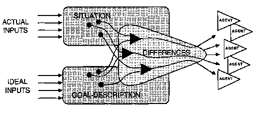
起初,这可能看起来既太简单又太复杂。从心理学角度来看,差异引擎可能显得太原始,无法代表人类目标追求中涉及的抱负、挫折、满足和失望的复合体。但这些实际上并不是我们目标本身的方面,而是从追求这些目标时参与的许多智能体之间的交互中产生的。另一方面,人们可能会想,目标的概念是否真的需要涉及智能体、情况、描述和差异之间如此复杂的四方关系。我们很快会看到,这实际上比看起来简单,因为大多数智能体已经在关注差异。
当我们看着一个球滚下斜坡时,我们注意到它似乎试图绕过路径中的障碍物。如果我们不知道重力,我们可能会倾向于认为球有向下移动的目标。但我们知道球并没有”试图”做任何事;意图的印象只在观察者的头脑中。
当我们对[建造者]进行实验时,我们也会感觉到它有一个目标。每当你拿走它的积木时,它会伸手把它们拿回来。每当你推倒它的塔时,它会重建它。它似乎想要一座塔在那里,并且它会坚持不懈直到塔建成。当然,[建造者]似乎比滚动的球更聪明,因为它克服了更复杂的障碍。但一旦我们知道[建造者]是如何工作的,我们就会看到它与那个球没有太大区别:它所做的只是不断寻找积木并把它们放在其他积木上面。[建造者]真的有目标吗?
拥有目标的一个要素是持续性。如果[建造者]不持续尝试建造塔,我们就不会说它想要一座塔。但仅有持续性是不够的——[建造者]和那个滚动的球都没有任何关于它们想去哪里的感觉。目标的另一个关键要素是拥有某种想要或期望状态的图像或描述。在我们同意[建造者]想要一座塔之前,我们必须确保它包含类似塔的图像或描述。差异引擎的概念体现了这两个要素:对某种结果的表示和一种使其持续的机制,直到实现该结果。
差异引擎”真的”想要吗?问这种问题是徒劳的,因为它寻求一种不存在的区分——除非在某个观察者的头脑中。我们可以把球看作一个完全被动的物体,仅仅对外力做出反应。但18世纪物理学家让·勒朗·达朗贝尔(Jean Le Rond d’Alembert)表明,人们也可以通过将其描述为一个目标是减少自身能量的差异引擎来完美预测滚动球的行为。我们不必强迫自己决定诸如机器是否能有目标之类的问题。词语应该是我们的仆人,而不是我们的主人。目标的概念使得描述人和机器能做什么的某些方面变得容易;它为我们提供了机会,用主动目的的简单描述来代替使用难以管理的繁琐机械描述。
可以肯定的是,这并没有捕捉到人们所说的”拥有目标”的全部含义。我们人类有如此多的想要事物的方式,以至于没有一个方案能够包含它们全部。尽管如此,这个想法已经在人工智能和心理学领域带来了许多重要的发展。差异引擎方案仍然是迄今为止发现的关于目标、目的或意图(intention)的最有用的概念。
我们自然会赞叹爱因斯坦、莎士比亚和贝多芬这些人物——并会思考机器是否能创造出如此精彩的理论、戏剧和交响乐。大多数人认为，这些成就需要无法解释的”天赋”或”禀赋”。如果是这样，那么计算机就无法创造这些东西——因为机器所做的任何事情都可以被解释。但是，当我们对普通人的思维知之甚少时，为什么要假设我们最伟大的艺术家所做的事情与普通人所做的事情有很大不同呢！在我们了解普通人如何想出普通旋律之前，询问伟大的作曲家如何创作伟大的交响乐显然为时过早。我不认为正常思维和”创造性”思维之间有太大区别。现在，如果问我哪个看起来更神秘，我不得不说是普通思维。
我们不应该让对艺术大师的羡慕分散我们对每个人如何获得新想法的好奇。也许我们坚持关于创造力的迷信是为了让自己的不足看起来更可以原谅。因为当我们告诉自己大师的能力根本无法解释时，我们也在安慰自己说，那些超级英雄天生具备我们不具备的所有品质。因此，我们的失败不是我们自己的错，那些英雄的优点也不归功于他们。如果不是学来的，就不是赚来的。
当我们真正遇到那些被我们的文化视为伟大的英雄时，我们并没有发现任何独特的倾向——只是一些本身很常见的要素的组合。这些英雄中的大多数人都非常有动力，但许多其他人也是如此。他们通常在某个领域非常精通——但就其本身而言，我们只是称之为工艺或专业知识。他们通常有足够的自信来抵御同行的嘲笑——但就其本身而言，我们可能只是称之为固执。他们肯定以某些新颖的方式思考问题，但每个人都会不时这样做。至于我们所说的”智力”(intelligence)，我的观点是，每个能够连贯说话的人都已经拥有了我们英雄所拥有的大部分东西。那么，如果我们每个人都拥有大部分所需的东西，是什么让天才显得与众不同呢？
我怀疑天才还需要一样东西：为了积累杰出的品质，一个人需要异常有效的学习方式。学到很多东西是不够的；一个人还必须管理自己所学的东西。那些大师在他们的精湛技艺表面之下，拥有一些特殊的”高阶”专业技能，帮助他们组织和应用所学的东西。正是这些隐藏的心智管理技巧产生了创造天才作品的系统。为什么某些人学到的技能更多更好？这些至关重要的差异可能始于早期的偶然事件。一个孩子想出了巧妙的方法来将一些积木排列成行和堆叠；第二个孩子玩的是重新安排思考方式。每个人都可以赞美第一个孩子的城堡和塔楼，但没有人能看到第二个孩子做了什么，甚至可能会错误地认为缺乏勤奋。但是，如果第二个孩子坚持寻找更好的学习方法，这可能会导致无声的成长，其中一些更好的学习方法可能会导致更好的学习如何学习的方法。然后，后来，我们会观察到一个令人敬畏的质变，没有明显的原因——并给它一些空洞的名字，如天赋、资质或禀赋。
最后，一个可怕的想法：也许我们所说的天才之所以罕见，是因为我们的进化在工作时不尊重个体。任何部落或文化能够承受其中每个个体都发现新思维方式的情况吗？如果不能，那该多可悲，因为天才的基因可能不会导致培养，而只会导致频繁的淘汰。
我将这些各种快乐的印象相互比较，发现它们有这样一个共同点，即我感觉它们就像同时发生在当前时刻和某个遥远的过去，勺子碰盘子的声音，或石板的不平整，或玛德莲蛋糕的独特味道甚至使过去与现在重合，让我不确定自己处于哪个时期。事实上，此刻享受这一印象的我内心的那个人，享受的是它所拥有的早期某一天和当前时刻共有的品质；而这个人只有在通过这种将过去与现在识别的过程中，能够发现自己处于他唯一能够生活的环境中时，即完全在时间之外时，才会发挥作用。
——马塞尔·普鲁斯特
我们经常谈论记忆，就好像我们所知道的东西被储存在心灵的盒子里，就像我们在家里的壁橱里保存的物品一样。但这引发了许多问题。
知识是如何表示的？
它是如何存储的？
它是如何检索的？
然后，它是如何使用的？
每当我们试图回答其中任何一个问题时，其他问题似乎变得更加复杂，因为我们无法清楚地区分我们知道什么和它是如何被使用的。接下来的几节解释了一种记忆理论，试图通过建议我们将学到的每样东西都保存在最初学习它的代理附近来同时回答所有这些问题。这样，我们的知识就变得容易获取和使用。该理论基于一种称为”知识线”(Knowledge-line)或简称”K线”(K-line)的代理的想法。
每当你”产生一个好主意”、解决一个问题或有一次难忘的经历时，你就激活一条K线来”表示”它。K线是一种类似导线的结构，当你解决问题或有一个好主意时，它会附着在任何活跃的心智代理上。
[当你稍后激活那条K线时，与之相连的代理(agents)会被唤醒，让你进入一种”心智状态(mental state)“，就像你解决那个问题或产生那个想法时的状态一样。这会让你相对容易地解决新的、类似的问题！]
换句话说，我们通过列出参与某项活动的代理来”记忆”我们正在思考的内容。制作K线就像列出参加一场成功派对的人员名单。这是关于K线如何工作的另一个比喻，由MIT人工智能实验室的学生Kenneth Haase提出，他对这个理论产生了很大影响。
[“你想修理一辆自行车。开始之前，在手上涂抹红色油漆。]
[然后你需要使用的每个工具最终都会留下红色标记。完成后，只需记住红色意味着’适合修理自行车’。下次修理自行车时，你可以提前取出所有标有红色的工具来节省时间。]
[如果你为不同的工作使用不同的颜色，有些工具最终会被标记上几种颜色。也就是说，每个代理可以附加到许多不同的K线上。]
[之后，当有工作要做时，只需激活适合该类工作的K线，过去用于类似工作的所有工具就会自动变得可用。”]
这就是K线理论的基本思想。但假设你曾试图使用某个扳手，但它不合适。把那个工具涂成红色就不太好了。为了让我们的K线高效工作，我们需要更聪明的策略。不过，基本思想很简单：对于每种熟悉的心智工作，你的K线可以用你之前在类似工作中使用过的想法片段重新填充你的头脑。在这样的时刻，你在这些方面变得更像早期版本的自己。
假设很久以前，你解决了某个问题P。当时你的一些代理是活跃的，其他的则是安静的。现在让我们假设某个”学习过程(learning process)“导致当时活跃的代理附加到某个代理[kP]上，我们称之为K线。如果你之后激活[kP]，它会重新开启当时活跃的那些代理，也就是你第一次解决问题P时的代理！
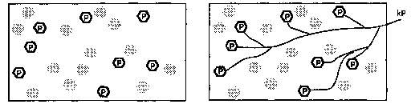
今天你有一个不同的问题。你的头脑处于新的状态，代理Q被唤醒了。你头脑中的某些东西怀疑Q类似于P——于是激活了[kP]。
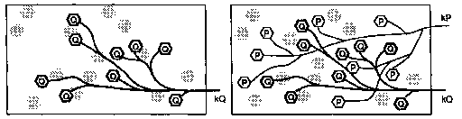
现在你的头脑中同时有两组代理在活动：你最近思考的Q代理和那段旧记忆唤醒的P代理。如果一切顺利，也许这两组代理会一起工作来解决今天的问题。这就是我们关于记忆是什么以及它们如何形成的最简单概念。
如果现在活跃的代理与K线试图激活的代理发生冲突会怎样？一种策略可能是优先考虑K线的代理。但我们不希望我们的记忆如此强烈地重新唤起旧的心智状态，以至于压倒我们当前的思考——那样我们可能会失去对现在所想的追踪，并抹去我们已完成的所有工作。我们只想要一些提示、建议和想法。另一种策略会优先考虑当前活跃的代理而非被记起的代理，还有一种策略会根据非妥协(noncompromise)原则同时抑制两者。如果我们假设相邻的代理倾向于陷入冲突，这个图表显示了每种策略会发生什么：
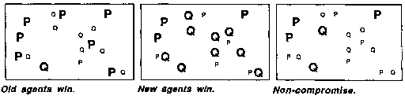
理想的方案是精确激活那些对解决当前问题最有帮助的P。但这对任何简单策略来说都要求太高了。
许多现代科学家认为谈论”心智状态”是过时的。他们觉得这个想法太”主观”而不够科学，更倾向于基于信息处理(information processing)的思想来建立心理学理论。这产生了许多关于问题解决、模式识别(pattern recognition)和心理学其他重要方面的优秀理论，但总的来说，它并没有产生描述我们的倾向、态度和感受运作方式的有用方法。
这是因为，正如许多人认为的那样，我们的感受本质上比我们用语言更容易描述的东西更复杂吗？不一定：我们对态度和感受的记忆可能来自相对简单的K线机制——但仍然无法表达。这是因为K线可以轻松记录相对广泛和分散的活动，之后一次性重新激活它们。这有助于解释一种熟悉的心理现象：
[我们发现最容易回忆的体验，往往正是我们发现最难描述的那类。]
例如，新手可以记住在音乐会上的感受。更熟练的业余爱好者可以记住更多音乐本身——节奏、和声和旋律。但只有熟练的音乐家才能回忆起音色、质地和编曲的更小细节。为什么我们发现回忆我们的态度和感受比描述实际发生的事情更容易？这正是我们应该从K线类型的记忆中期待的。假设某种情感或倾向涉及许多不同代理的活动。构建一条巨大的K线会很容易，我们之后可以用它让自己大致重新体验那种复杂的状态——只需重新唤起相同的活动。但这不会自动使我们能够描述这些感受，这完全是另一回事，因为它需要我们用某种更紧凑的语言表达安排来总结那种巨大、分散的活动。
我们无法总是通过能否轻易用语言表达来判断心理状态的复杂性。某种心理状态可能涉及大量信息，这些信息过于庞大和多样化，无法用少量词汇表达，但在任何有趣的意义上并不十分复杂。此外,我们能用语言表达的东西在很大程度上受到我们学习使用这些词汇的社会过程的约束。为了让一个词对其他人产生可预测的效果,我们必须对该词的使用保持严格的公共纪律——而每个人私人的内部信号则不必受到如此约束。来自我们非语言代理(agent)的信号可以有K线连接,这些连接快速分支以唤醒其他代理。如果这样一个社会的每个成员仅唤醒其他一百个成员,那么只需三到四步,其中单个成员的活动就能影响一百万个其他代理。
一旦我们从K线记忆的角度思考,至少在原则上就很容易想象一个人如何能够回忆起复杂先前经历的总体印象——但很难理解一个人如何能如此轻易地理解像”约翰比玛丽有更多糖果”这样的具体陈述。如果这个理论是正确的,传统观点必定是颠倒的,传统观点认为理解心智如何处理”事实”和”命题”很容易,但很难看出心智如何能有弥散的、难以表达的倾向。
我们通过合并旧想法的部分来创造新想法——这意味着同时在脑海中保持多个想法。让我们暂时简化一下,想象心智由许多”分部(division)“组成,每个分部涉及不同的活动,如视觉、运动、语言等等。这种模式在更小的尺度上重复,因此即使是最简单的普通对象的想法也是由更小代理中的更小想法组成的。想到一个白色小橡胶球可能会激活这样一些分部:
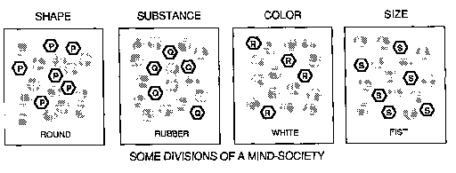
我们需要某种方式来同时谈论许多代理的状态。因此,在本书中,当谈论所有代理的状态时,我将使用”心理状态”或”总体心理状态”这一表达。新短语”部分心理状态”用于谈论较小代理组的状态。现在为了清楚起见,我们必须简化情境图景,就像科学家所做的那样。我们假设我们社会中的每个代理在每个时刻要么处于”安静状态”,要么处于”活跃状态”。为什么代理不能部分唤醒,而只能”开”或”关”?它们确实可以,但有技术原因表明这不会对我们在此讨论的问题产生任何根本性差异。无论如何,这个假设使我们能够精确表述:
“总体状态”是一个列表,它指定了在某一时刻哪些代理是活跃的,哪些是安静的。
“部分状态”仅指定某些代理是活跃的,但不说明哪些其他代理是安静的。
请注意,根据这个定义,心智在任何时刻只能有一个总体状态,但可以同时处于许多部分状态——因为部分状态是不完整的描述。上图显示了一个由几个独立分部组成的心智社会,因此我们可以将每个分部的状态视为一个部分状态,这让我们可以想象整个系统能够”同时思考几个想法”,就像一群独立的人可以做到的那样。当你的语言分部正忙于处理朋友所说的话,而你的视觉分部在寻找要退出的门时——你的心智同时处于两个部分状态。
当两条K线同时激活同一分部中的代理时,情况更加有趣:在同一代理上施加两个不同的部分心理状态会导致冲突。想象一个白色小球很容易,因为这激活的K线连接到不相关的代理集合。但当你试图想象一个圆形方块时,你的”圆形”和”方形”代理被迫竞争控制同一组形状描述代理。如果冲突不能很快解决,非妥协(noncompromise)可能会消除两者——让你留下一个未定义形状的感觉。
风筝 n. 一种玩具,由轻框架组成,通常为木制,上面覆盖纸或其他轻质材料;多为等腰三角形,以圆弧为底,或为关于较长对角线对称的四边形;构造(通常带有某种尾巴以平衡)通过系在其上的长线在强风中放飞。
——牛津英语词典
“杰克在放风筝。”你需要什么知识来理解这句话?知道没有风就不能放风筝会有帮助。知道如何放风筝会有帮助。如果你知道风筝是如何制作的,或者在哪里能找到它们,或者它们的价格,你会理解得更好。理解永无止境。我们能想象出关于杰克活动的如此多细节是很了不起的。你和我都没见过杰克的风筝,也不知道它的颜色、形状或大小,但我们的心智从以前见过的其他风筝的记忆中提供了细节。那句话可能让你想到了线,但并未提到线。你的心智如何如此快速地唤起这么多记忆?你的心智又如何知道不要唤起太多记忆——这也可能导致严重问题?为了解释这一点,我将引入我所说的水平带(level-band)理论。
基本思路很简单：我们通过将代理附加到 K-线上来学习，但我们并不以同等的牢固程度附加它们。相反，我们在某个细节层次上建立强连接，但在更高和更低的层次上建立较弱的连接。一个关于风筝的 K-线可能包括以下这些属性：
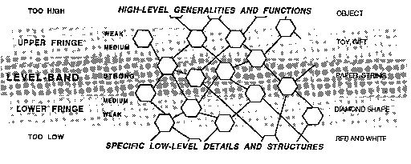
每当我们激活这条 K-线时，它会尝试激活所有这些代理，但那些位于边缘的代理就像用使用过两次的胶带粘贴一样附着，当其他代理挑战它们时往往会退缩。如果你以前见过的大多数风筝都是红色和菱形的，那么当你听说杰克的风筝时，这些弱连接会让你假设杰克的风筝也是红色和菱形的。但如果你听说杰克的风筝是绿色的，你被弱激活的红色记忆代理将被你被强激活的绿色代理所抑制。让我们称这种弱激活的记忆为默认假设(assumptions by default)。默认假设一旦被唤起，只有在没有冲突时才保持活跃。从心理学角度来说，它们是我们在没有特别理由另作他想时所做的假设。稍后我们将看到，默认假设体现了我们一些最有价值的常识知识：知道什么是通常的或典型的。例如，这就是为什么我们都假设杰克有手和脚。如果这些假设被证明是错误的，它们的弱连接使得它们在更好的信息浮现时容易被替换。
我们有时会认为记忆就像是可以将我们带回去，让我们听到逝去时光的声音，看到过去的景象。但记忆实际上不能真的带我们去任何地方；它只能让我们的心智回到先前的状态，通过恢复以前心智中的内容，来访问我们曾经的样子。我们引入层级带(level-band)理论，是为了让记忆能够包含某个范围或”层次”的描述细节，例如在回忆风筝经历时，某些方面被牢固地记录下来，而其他方面则被弱记录或根本没有记录。
层级带的概念不仅可以应用于对事物的描述，还可以应用于我们对为实现目标而使用的过程和活动的记忆——也就是说，我们重新创建的那些曾经解决过去问题的心智状态。我们需要解决的问题会随时间变化，所以我们必须使我们的旧记忆适应当前的目标。要看清层级带如何帮助做到这一点，让我们现在回到”搭积木”的例子——但这次假设我们的孩子已经长大成人，想要建造一座真实的房屋。从旧的建造社会中，哪些代理仍然可以应用于这个新问题？
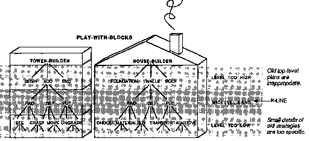
新的建房代理肯定可以使用”塔楼建造者”的许多技能。它肯定需要”添加”的低层技能，如”寻找”、“获取”和”放置”。但”房屋建造者”不会那么需要”塔楼建造者”的最高层代理，如”开始”和”结束”——因为这些是专门用于建造塔楼的。它也不会太需要”建造者”的最低层技能，比如”抓握”中的那些，因为捡起这么小的积木不是问题。但”建造者”中层级带中体现的大多数技能仍然适用。这些似乎体现了最广泛和普遍有用的知识，而最上层和最下层的层级带更可能基于问题中特定于旧目标或原始问题特定细节的方面。但如果我们的记忆机制被设计成这些远端边缘的内容可以轻松分离，那么存储在其中的额外知识很少会造成太大伤害，而且常常会有帮助。例如，“塔楼建造者”的边缘细节可以告诉我们，如果我们的房子长得很高或需要高烟囱该怎么办。
我们开始使用层级带来”描述”事物——但最终我们用它们来”做”事情！在接下来的几节中，我们将看到，层次相关的概念在我们思考方式中扮演多种不同角色并非偶然。
当呈现太多细节时，很难识别一件东西。要知道你看到的是一只风筝，有助于寻找纸、木棍和绳子。但如果你使用显微镜，你感知到的根本不是风筝的属性，而只是特定纸片、木棍或绳子的特征。这些可能让你识别出一只特定的风筝，但不能识别任何其他风筝。超过某个细节层次，一个人看到的越多，就越难分辨自己在看什么！这同样适用于记忆；它们应该在更低的细节层次上削弱附着。
下层带：超过某个细节层次，对先前情况越来越完整的记忆越来越难以与新情况匹配。
要解释为什么 K-线需要上层边缘，让我们回到孩子最初学习如何建造塔楼的例子——但现在想要建造房屋。在这里，如果我们过多地记住先前的目标，我们可能会遇到另一种困难！
上层带：在过高层次激活代理的记忆往往会为我们提供不适合当前情况的目标。
要理解为什么我们的 K-线记忆应该在某个细节层次”之上”削弱它们的附着，请考虑这种最极端的形式。假设某个记忆是如此完整，以至于它让你在每个细节上重温过去某个完美时刻。那会抹去你现在的”你”——你会忘记你要求你的记忆做什么！
这两种边缘效应都有助于让我们的记忆更贴合当前的目的。中心层级带帮助我们找到记忆事件与当前情境之间的一般相似性。下层边缘提供额外的细节，但不会强加给我们。我们只在实际细节未提供时”默认”使用它们。同样，上层边缘唤起一些先前目标的记忆，但我们也不会被迫使用它们，除非是在默认情况下，当当前情境没有施加更紧迫的目标时。从这个角度看，我们可以认为下层边缘关注事物的【结构】，而上层边缘涉及事物的【功能】。较低层级代表现实的”客观”细节；较高层级代表我们对目标和意图的”主观”关注。
同一条K线的边缘怎么可能位于两个如此不同的领域？因为为了思考，我们需要事物与目标之间的紧密联系——结构与功能之间的联系。如果我们不能将每个事物的细节与我们的计划和意图联系起来，【思考】还有什么用？想想英语中多么频繁地用同样的词语表示事物及其目的。当你建房子时，你会用什么工具来锯、夹、粘你的木头？显而易见：你会用【锯子】、【夹具】和一些【胶水】。看看这些”含义”的奇妙力量：我们一听到一个词的名词形式，我们的代理就会竭力执行与它作为动词相对应的动作。这种将【手段】与【目的】联系起来的现象并不局限于语言——我们将在其他类型的代理中看到它的许多其他实例——但语言可能允许这种联系的约束最少。
昨天，你看着杰克放风筝。今天你如何记住它？一个答案是，【“记住它很像再次看到它”】但昨天，当你认出那个风筝时，你并没有真正把它看作全新的东西。你昨天认出它是”风筝”这一事实意味着你已经用更早的记忆看到了那个风筝。
这提示了两种方法来产生你刚才所见的新记忆。一种方案如下图左侧所示：你只需将一条新的K线连接到最近在你头脑中活跃的所有代理。另一种产生该记忆的方法如下图右侧所示：【不是将新K线附加到所有那些单独的代理，而是只连接到最近活跃的那些旧K线。】这将导致类似的结果，因为那些K线参与了唤起许多最近活跃的代理。这第二种方案有两个优点：它更经济，并且它导致形成组织化的社会记忆。
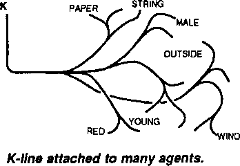
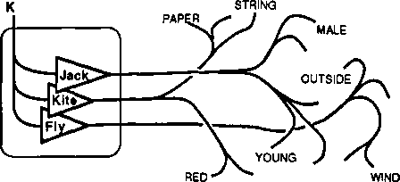
【K线附加到三条K线。】
想想当你意识到杰克在放风筝时，这一定涉及到K线的使用——对于”杰克”、“放”和”风筝”——这些K线在更早的时候形成，被看到杰克放风筝的景象唤起。当这三条K线被激活时，它们每一条又激活了成百上千的其他代理。(你看到那个场景时的心理状态，来自由你的感官直接唤起的代理和由你的识别间接唤起的代理的组合。)现在，我们左侧的记忆方案需要大量连接来将所有这些代理链接到新K线。但我们右侧的方案只需将新K线附加到三条旧K线就能获得大致相同的效果！然而，当你在以后某个时候重新激活那条K线时，它将依次唤起杰克、放、风筝以及其他涉及的识别的相同K线。结果，你将重新体验许多相同的识别。在这种程度上，你会感觉和行为就像你又回到了同样的情境中。
可以肯定的是，这两种类型的记忆不会产生完全相同的结果。我们将新K线连接到旧K线的技巧不会重现那么多场景的精确感知细节。相反，这种”层级”类型的记忆产生的心理状态将更多基于刻板印象(stereotypes)和默认假设(default assumptions)，而不是实际感知。具体来说，【你往往只记住你当时认出的东西。】所以有些东西丢失了——但有收获作为交换。这些”K线记忆树”失去了某些类型的细节，【但它们保留了更多我们思想起源的痕迹。】如果原始情境【确切】重复，这些记忆树可能服务得不那么好。但那永远不会发生——而结构化记忆将更容易适应新情况。
如果每条K线可以连接到其他K线，而这些K线又连接到其他K线，那么K线可以形成社会。但我们如何确保这能服务于我们的目的，而不是变成一团巨大、无序的混乱？什么能引导它们形成像这样有用的层级结构？
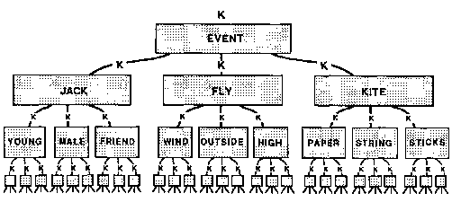
为了保持有序，我们现在再次应用层级带的想法。记住我们最初发明K线是为了将旧代理连接在一起；然后我们发明了层级带来防止那些K线充满太多无用、不相关的东西。现在我们又遇到了同样的问题：当将新K线连接到旧K线时，我们必须防止它们包含太多不适当的细节。那么为什么不尝试同样的解决方案？让我们将层级带的想法应用到K线树本身！
【当创建一条新的K线记忆时】，【不要将它连接到当时活跃的所有K线，而只连接到在特定层级带内活跃的那些K线。】
可以推测，除非我们明确”层级”的含义，否则这个想法将难以应用。然而,类似的情况会自动发生，这仅仅是因为新的K线社会将倾向于继承那些与这些K线相连的原始代理之间已经存在的层级结构。实际上我们已经看到了两种不同的观点。在我们的[风筝]例子中，我们谈到了描述的”细节层级”。也就是说，我们认为谈论[“绷在框架上的一张纸”]比讨论纸张或木棍本身更为抽象。在我们的[建造者]例子中，我们谈到了目标，并认为[塔建造者]代理本身位于它用来解决子问题的代理之上——比如[开始]、[添加]和[结束]这些代理。
这种将新K线连接到旧K线的策略必须适度使用。否则，[永远不会有新代理被纳入我们的记忆中。]此外，它不应该总是被要求产生简单、有序的层级树；例如，在[建造者]的例子中，我们发现[移动]和[观察]往往需要彼此的帮助。最终，我们所有的知识结构都会与各种例外、捷径和交叉连接纠缠在一起。没关系：层级带的概念仍然会普遍适用，因为由于我们知识的增长方式，我们所知道的大部分内容仍将主要是层级化的。
我们如此频繁地发现自己使用[层级]的概念，这难道不有趣吗？我们谈论一个人的抱负层级或成就层级。我们谈论抽象层级、管理层级、细节层级。人们所谈论的所有这些层级事物有什么共同点吗？有的：它们似乎都反映了某种组织思想的方式——而且每一种都显得隐约呈层级性。通常，我们倾向于认为这些层级结构中的每一个都说明了存在于世界中的某种秩序。但这些排序往往来自心智，只是[看起来]属于世界。实际上，如果我们的K线树理论是正确的，那么我们将事物分类为层级和等级似乎就是”自然的”——即使这并不总是完美奏效。下图描绘了两种对物理对象进行分类的方式。
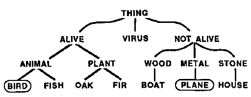 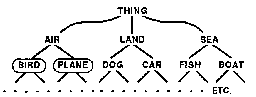
这两个层级结构以不同的方式划分事物。鸟类和飞机在一侧靠得很近，但在另一侧却相距甚远。哪种分类是正确的？愚蠢的问题！这取决于你想用它做什么。左边的分类对生物学家更有用，右边的分类对猎人更有用。
你会如何对一只瓷鸭进行分类，一个漂亮的装饰玩具？它是一种鸟吗？它是一种动物吗？还是只是一块没有生命的粘土？争论这个问题毫无意义：[“那不是鸟！” “哦，是的，它是，而且它也是陶器。”]相反，我们经常同时使用两种或更多种分类。例如，一个有思想的孩子可以把瓷鸭当作假想的动物来玩耍，同时又小心翼翼地对待它，这正是处理易碎瓷器物品的恰当方式。
每当我们发展新技能或扩展旧技能时，我们必须强调某些方面和特征相对于其他方面和特征的重要性。只有当我们发现系统化的方法时，我们才能将这些放入整齐的层级中。然后我们的分类可以类似于层级方案和等级体系。但由于每种分类方案也存在例外和交互作用，这些层级结构最终总会变得混乱无序。当尝试新任务时，我们从不喜欢从头开始：我们试图使用以前有效的方法。因此我们在脑海中搜寻旧观念来使用。然后，当任何层级结构的某部分似乎有效时，我们就会拖动其余部分。
根据我们的记忆概念，每个机构的K线会成长为一个新社会。因此，为了理清思路，让我们把原始代理称为[S-代理]，并把它们的社会称为S-[社会。]对于任何S-社会，我们可以想象通过为它构建一个相应的K-社会来建立记忆。当我们开始制作一个[K-社会]时，我们必须将每条K线直接连接到S-代理，因为没有其他K线可以连接它们。后来我们可以使用更高效的策略，将新K线连接到旧K线。但这将导致另一个效率问题，与原始S-代理的连接将变得越来越间接和遥远。然后一切都会开始变慢——除非K-社会继续与原始S-社会建立至少一些新连接。如果K-社会以”靠近其S-社会的层”的形式增长，这将很容易安排。下图建议了这样一种安排。
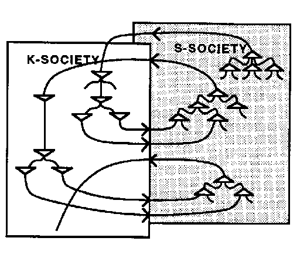
K-社会中的连接与S-社会中的连接相似，只是信号往往沿相反方向流动。
如果这样安排，这些层对可以形成一种奇特的计算机。当S-代理激活K-代理，反之亦然时，就会产生一种螺旋式的活动。随着时间推移,这种活动的位置可能会向上或向下漂移，也可能会扩散开来；如果没有控制，系统很快就会变得混乱。但从内部控制系统会很困难，这也无法服务于其他代理机构的目的。然而，我们可以很容易地想象，另一个第三代理机构如何限制和控制K-S系统的活动——通过指定哪个层级带应该保持活跃并抑制其他所有层级。事实上，这正是B-脑可能施加的那种粗略控制，因为它可以做到这一切，而不需要理解A-脑内部发生的细节。第三代理机构可能只是旁观并不耐烦地说：“这没有任何进展：向上移动以获得更高层次的情况视角。”或者它可能说：“这看起来像是进展，所以向下移动并填充更多细节。”
K-社会和S-社会之间有什么本质区别吗？其实没有——除了S-社会先出现。事实上，我们可以想象这样一个无尽的社会序列，其中每个新社会都学会利用上一个社会。稍后我们将提出，这就是我们的心智在婴儿期的发展方式——作为层层叠加的社会序列。每个新层开始时都是一组K-线(K-lines)，它开始学习利用前一层已经获得的任何技能。每当一个层获得某种有用且实质性的技能时，它往往会停止学习和改变——然后又一个新层可以开始学习利用最后一层的能力。每个新层都以学生的身份开始，学习使用旧层已经能做的事情的新方法。然后它减慢学习速度——并开始既作为主体又作为教师，服务于之后形成的层。
摘要
除了疼痛之外，其功能显然是告知神经系统的高级中枢有什么地方出了问题，还有许多生理机制存在的唯一原因就是让我们知道出了问题。我们感到不适却不知道原因。我们只用一个术语”我感到不适”来表示基于不同原因的一系列状况，这一事实本身就极具特征性。
——康拉德·洛伦茨(Konrad Lorenz)
有一件事我讨厌，就是被问这样的问题：
你更喜欢物理学还是生物学？你喜欢那部戏剧吗？你喜欢瓦格纳吗？你享受你的国外那一年吗？
是什么让我们想要将如此多的东西压缩成像”喜欢”、“更喜欢”和”享受”这样缺乏表现力的总结？为什么试图将如此复杂的事物简化为愉悦质量的简单值或数量？答案是，我们对愉悦的衡量有许多用途。它们帮助我们进行比较、妥协和选择。它们涉及我们用来表示不同程度的依恋、满足和同意的交流信号。它们不仅表现在言语中，还表现为手势、语调、微笑和皱眉，以及许多其他表达性信号。但我们必须小心，不要按照这些信号的表面价值来接受它们。世界的状态和心智的状态从来都不是如此简单，可以用单一的一维判断来表达。没有任何情况是完全令人满意或完全令人不快的，我们的愉悦或厌恶反应只是底层过程金字塔的表面总结。要”享受”一种体验，我们的一些代理必须总结成功——但其他代理必须在谴责它们的下属未能实现其目标。因此，当我们发现自己非常喜欢某样东西时，我们应该保持怀疑，因为这可能意味着我们的一些代理机构正在强行压制其他可能性。
你越确定你喜欢你正在做的事情，你的其他抱负就越被完全压制。
为了在备选方案之间做出选择，心智的最高层需要最简单的总结。如果你的顶层感受过于”混杂”，你就很难做出选择来决定吃什么食物、走哪条路或思考什么想法。在行动层面，你被迫简化到像”是”和”否”这样的表达。但这些对于服务心智的较低层来说信息量不够，在那里许多过程同时进行，每个代理都必须判断它在服务某些局部目标方面做得如何。在心智的较低层，必定存在大量较小的、共存的满足和烦恼。
我们经常说得好像我们应该被我们想要的东西所控制。事实上，我们几乎不区分想要某物和可能从中获得愉悦；这两个概念之间的关系似乎如此密切，以至于提及它实际上感觉很奇怪。想要我们喜欢的东西并避免我们不喜欢的东西似乎如此自然，当另一个人似乎违反了这条规则时，我们有时会感到一种不自然的恐惧；然后我们会想：“除非在内心深处他们真的想这样做，否则他们肯定不会做这样的事。”这就好像我们觉得人们应该只想做他们喜欢做的事情。
但是想要和喜欢之间的关系根本不简单，因为我们的偏好是众多代理机构(agencies)之间无数次协商的最终产物。为了完成任何实质性的目标，我们必须放弃其他可能性，并启动机制(machinery)来防止自己屈服于怀旧或懊悔。然后我们用”喜欢”这样的词来表达使我们坚持选择的机制的运作。喜欢的工作是关闭替代选项；我们应该理解它的作用，因为如果不受约束，它会缩小我们的世界。这导致了喜欢的人为清晰性：它不反映喜欢是什么，而只显示喜欢做什么。
我们都知道成就能带来满足感，并且倾向于认为两者之间存在直接联系。在非常简单的动物中，“满足”仅仅意味着满足简单的基本需求，满足和成就确实几乎是一回事。但在复杂的人类大脑中，处理身体需求的代理机构与代表或识别我们智力成就的代理机构之间存在许多层级。那么在这些更复杂的系统中，那些愉快的成就感和不愉快的失败感有什么意义呢？它们必定与我们的高层级代理机构如何做总结有关。
假设你曾经需要给朋友送礼物。你必须选择一件礼物并找一个盒子来包装它。很快，每项这样的工作都变成了几个更小的工作——比如找绳子和打结。解决难题的唯一方法是将它们分解成更小的问题，然后当这些问题太困难时，再将它们依次分解。所以难题总是导致子目标(subgoals)和子问题(subproblems)的分支树。为了决定资源应该应用在哪里，我们的问题解决代理需要关于事情进展如何的简单总结。让我们假设每个代理的总结基于它从其监督的代理那里获得的其他总结。如果每个这样的总结都基于简单的多数决定，这里有一个可能发生的病态例子：
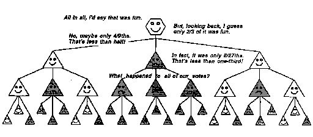
当一切完成时，如果有人问你是否享受整个体验，你可能会说它”有趣”或”糟糕”。但没有任何这样的总结能说明你的代理机构实际学到了什么。你的打结过程学会了哪些行动有效和失败；你的折纸和选礼物过程有其他的失败和成就；但你对这次经历的整体评估不能反映所有这些细节。如果整个插曲让你”不快乐”，你可能在未来不太愿意送礼物，但这不应该对你学到的关于折纸和系绳的知识产生太大影响。没有单一的”好”或”坏”感可以反映你所有代理机构内部发生的大部分事情；太多信息必须被隐藏。那么为什么我们将自己的感受分类为积极和消极，并得出结论说”总体而言”净效果是坏或好，这似乎如此令人满意呢？确实，有时感受更加复杂，一切似乎苦乐参半，但正如我们将看到的，我们有很多理由必须过度简化。
到目前为止，我们主要谈论从成功中学习。但想想当你成功时，你必定已经拥有了必要的手段。如果是这样，那么改变你的思维可能只会让事情变得更糟！正如人们常说的，“你不应该与成功争辩。”因为每当你试图”改进”一个已经有效的程序时，你就有可能损害依赖于同一机制的其他技能。
因此，我们从失败中学习可能更重要。如果某个成熟的方法——称之为”M”——未能达到某个目标，你应该怎么做？一种策略是改变M，这样它就不会再犯同样的错误。但即使这样也可能是危险的，因为它可能导致M以其他方式失败。此外，我们可能不知道如何改变M来消除错误。处理这个问题的一个更安全的方法是通过添加称为”审查者(censors)“和”抑制者(suppressors)“的特殊记忆装置来修改M（我们稍后会详细讨论），它们记住M失败的特定环境，然后在类似条件再次出现时抑制M。这样的审查者不会告诉你该做什么，只会告诉你不该做什么；尽管如此，它们可以防止你通过重复旧错误浪费时间。
学习至少有两个方面。我们思维的某些部分从成功中学习——通过记住方法何时有效。但我们思维的其他部分主要在我们犯错时学习，通过记住各种方法未能奏效的环境。稍后我们将看到这不仅可以教会我们不应该做什么，还可以教会我们不应该思考什么！当这种情况发生时，它可以用我们完全不知道的禁令和禁忌(taboos)渗透我们的思维。因此，从成功中学习倾向于瞄准和聚焦我们的思维方式，而从失败中学习也会导致更有成效的思想，但以一种不太直接的方式。
如果我们生活在一个只有简单通用规则而没有例外的宇宙中，就像算术、几何和逻辑这些可爱的数学世界一样，我们就不需要处理例外和审查者。但在人、思想和事物的真实世界中，完美的逻辑很少有效。这是因为在那些数学世界中规则没有例外并非偶然：在那里，我们从规则开始，只想象服从它们的对象。但我们不能如此任意地为已经存在的对象制定规则，所以我们唯一的做法是从不完美的猜测开始——粗略的现成规则的集合——然后继续找出它们哪里错了。
自然而然地，我们倾向于从成功而非失败中学习。然而，我怀疑如果只局限于”积极”的学习经历，只会在我们已经掌握的事情上获得相对较小的进步。当我们在思维方式上做出实质性改变时，可能无法避免至少某种程度的不适感。
[不要执着于你喜欢的事物，不要厌恶你不喜欢的事物。悲伤、恐惧和束缚都源于你的好恶。]
[—佛陀]
为什么孩子们明知会害怕甚至会难受，却仍然喜欢游乐园里的游乐设施？为什么探险家要忍受苦难和痛苦——明知一旦到达目的地，他们的目标就会消散？是什么让普通人在讨厌的工作岗位上辛苦多年，为了某一天能够——有些人似乎已经忘记了为了什么？
动机不仅仅关乎即时回报。当我们在任何事情上取得成功时，心智内部会发生很多变化。例如，我们可能充满成就感和自豪感，感到有冲动向他人展示我们做了什么以及如何做到的。然而，对于更有抱负的智力来说，宿命在于成功的甜蜜会随着其他问题的出现而迅速消退。这是好事，因为大多数问题并非孤立存在，而只是更大问题的较小部分。通常，在我们解决一个问题后，我们的代理(agencies)会回到其他更高层次的不满原因，只会再次迷失在其他子问题中。如果我们屈服于满足感，就什么也做不成。
但如果情况完全失控——而且没有任何可以想象的方法逃离痛苦呢？那么我们所能做的就是试图构建某种内在计划来容忍它。一个技巧是试图改变我们暂时的目标——就像我们说的，[“到达那里的过程才是全部的乐趣。”] 另一种方法是期待对未来自我的某种益处：[“我肯定会从中学到东西。”] 当这也不起作用时，我们仍然可以诉诸更加无私的方案：[“也许其他人可以从我的错误中学习。”]
这些复杂情况使得我们不可能为”快乐”和”幸福”这样的普通词汇发明好的定义。没有哪一小组术语能够充分表达在我们心智中，在不同代理和不同时间尺度上竞争的各种目标和欲望。难怪那些关于奖励和惩罚的流行理论从未真正解释过人类学习的高级形式——尽管它们在训练动物方面表现良好。因为在获得任何真正新技能的早期阶段，一个人必须至少采取部分反快乐的态度：[“好，这是体验笨拙和发现新错误的机会！”] 做数学、攀登冰冷的山峰或用脚演奏管风琴都是如此：心智的某些部分觉得这很可怕，而其他部分则享受迫使那些部分为[它们]工作。我们似乎没有这些过程的名称，尽管它们肯定是我们成长的最重要方式之一。
这并不是说我们可以抛弃日常生活中使用的快乐和喜欢的概念。但我们必须理解它们在我们心理学中的角色；它们代表了复杂简化方式的最终效果。
[帕珀特原理(PAPERT’S PRINCIPLE)]
[采访者：现在，亚当，听我说。告诉我哪个更好：“一个水”还是”一些水”？]
[亚当：砰，黄鼠狼跑了。]
[— 罗杰·布朗和厄休拉·贝卢吉，]-讨论幼儿实验的问题。
心理学家让·皮亚杰是最早意识到观察儿童可能是观察心智社会如何成长的方法之一的人。在他的一个经典实验中，他向一个孩子展示了两组匹配的鸡蛋和杯子——并问道，[“鸡蛋多还是蛋杯多？”]
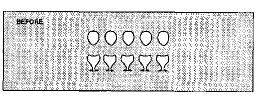
大多数孩子，无论年龄大小，都说，’它们一样多。”
然后他在孩子眼前把鸡蛋分散开——再次问鸡蛋多还是蛋杯多。
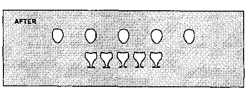
典型的5岁儿童：“鸡蛋多。”
典型的7岁儿童：“一样多，因为它们是同样的鸡蛋。”
人们可能试图用年龄较大的孩子更擅长数数来解释这一点。然而，这无法解释皮亚杰的另一个著名实验，该实验开始时展示三个罐子，其中两个装满了水。所有孩子都同意两个矮而宽的罐子里装有等量的液体。然后，在他们眼前，他把其中一个矮罐子里的所有液体倒入高而细的罐子中，并问现在哪个罐子里的液体更多。
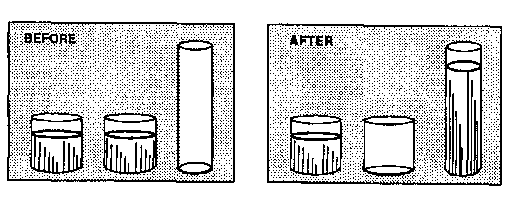
[典型的5岁儿童：“高罐子里多。”]
[典型的7岁儿童：“一样多，因为是同样的水。”]
这些实验已经以多种方式在许多国家重复进行——总是得到相同的结果：每个正常的孩子最终都会获得成人对数量的看法——显然不需要成人帮助！这种情况发生的年龄可能有所不同，但这个过程本身似乎如此普遍，以至于人们不禁怀疑它反映了心智发展的某些基本方面。在接下来的几节中，我们将研究”更多”的概念，并表明它隐藏着一个庞大、复杂的”更多社会(Society-of-More)“的运作——这需要许多年才能学会。
con-ser-va-tion [n. 守恒原理，即[某物]是一个恒定的量，可以以无数种方式转换，但永远不会增加或减少。]
—韦氏未删节词典
那些鸡蛋和水罐实验对我们从婴儿期的成长说明了什么？让我们考虑几种解释。
[数量：也许年幼的孩子还不理解数量的基本概念：液体的量保持不变。]
在接下来的几节中，我将论证我们并不是学习一个单一的、基础的”数量概念”。相反，每个人必须构建一个多层次的代理体系，我们称之为[更多社会]，它用不同的方式来处理数量。
[范围：年幼的孩子似乎过度受到分散的鸡蛋和较高水柱所占据的更大空间范围的影响。]
这不是全部原因，因为大多数成年人也会判断较高的罐子里有更多水——如果他们只是看到最终场景，而不知道水是从哪里倒入的！以下是关于年幼孩子判断的其他一些理论：
[可逆性(reversibility)：年长的孩子更关注他们认为保持不变的东西——而年幼的孩子更关心发生了什么变化。]
[守恒(confinement)：年长的孩子知道，如果没有添加、移除、丢失或溢出，水的量就保持不变。]
[逻辑：也许年幼的孩子还没有学会运用理解数量概念所需的那种推理。]
这些解释都有一定道理，但都没有触及问题的核心。显然，年长的孩子在这些问题上知道得更多，能做更复杂的推理。但有充分的证据表明，大多数年幼的孩子也具备足够的必要能力。例如，我们可以不实际做实验就描述它，或者在孩子看不见的地方，在纸板屏风后面进行。然后，当我们解释发生了什么时，相当多的年幼孩子会说：“当然它们是一样的。”
那么困难在哪里呢？显然，年幼的孩子拥有他们需要的想法，但不知道何时应用它们！可以说他们缺乏足够的”关于知识的知识”，或者说他们还没有获得选择或覆盖具有不同感知和优先级的大量代理所需的制衡机制。仅仅能够使用多种推理是不够的；还必须知道在不同情况下使用哪一种！学习不仅仅是技能的积累。无论我们学到什么，总是有更多要学的——关于如何使用已经学到的东西。
让我们尝试从孩子的代理体系如何处理比较的角度来解释水罐实验。假设孩子开始时只有三个代理：
[高(Tall)] 说：“越高，越多。高的东西里面有更多。”
[瘦(Thin)] 说：“越瘦，越少。瘦的东西里面有更少。”
[守恒(Confined)] 说：“一样，因为什么都没有添加或移除。”
我们如何知道孩子有这样的代理？我们可以确定年幼的孩子有像[高]和[瘦]这样的代理体系，因为他们都能做出这些判断：
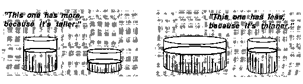
更难知道年幼的孩子是否有像[守恒]这样的代理，但他们中的许多人确实能够解释当把液体来回倒时某些东西保持不变。无论如何，存在冲突，因为三个代理给出了三个不同的答案——[更多、更少]和[一样]。该怎么解决这个问题？最简单的理论是年幼的孩子按某种”优先顺序”放置了他们的代理。
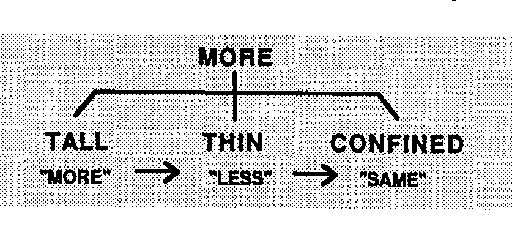
如果高(TALL)被激活，让它决定。如果没有，并且瘦(THIN)激活了，让瘦决定。在其他任何情况下，让守恒(CONFINED)决定。
这样的方案可以非常实用，因为将所有代理按优先顺序排列使得很容易知道使用哪一个。例如，我们经常通过事物的范围来比较——通过它们在空间中延伸多远。但为什么把[高]放在[宽]前面？人们确实似乎对[垂直]范围最敏感。我们不知道这是否从一开始就内置在我们的大脑中，但无论如何，这种偏见通常是合理的，因为”更高”经常伴随着其他类型的更大。
[谁”更大”——你还是你的表亲？背靠背站好！]
[谁最强壮？那些高高耸立在上面的成年人！]
[如何将液体分成等份？匹配液面！]
似乎没有其他代理像[高]那样适合进行日常比较。不过，没有哪个优先级方案总是有效。在水罐实验的情况下，[守恒]应该排第一，但年幼孩子的优先级导致做出错误的判断。顺便说一句，人们可能想知道，[高]和[矮]，或[宽]和[瘦]，是否应该被视为不同的代理。从逻辑上讲，每对只需要一个就够了。但我怀疑在大脑中，仅仅用[高]的不活跃来代表[矮]是不够的。对成年人来说，这些是”对立面”，但孩子的思维不是那么符合逻辑的。我认识的一个孩子坚持认为[刀]是[叉]的对立面，但[叉]是[勺]的对立面。水是[牛奶]的对立面。至于[对立面]的对立面，那个孩子认为这太愚蠢了，不值得讨论。
当不同类型的知识不一致时应该怎么办？有时将它们按某种优先顺序排列会有帮助，但正如我们所见，这仍然可能导致错误。我们如何使系统对不同的情况敏感？秘诀是使用非妥协原则，并寻求其他代理体系的帮助！为了帮助比较数量，我们需要向我们的更多社会添加新的”管理代理”。
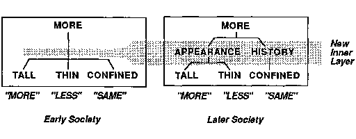
新的[外观]管理者被设计为当代理[高]激活时说”更多”，当代理[瘦]激活时说”更少”，而当某物既显得更高又更瘦时则什么都不说。然后另一个新管理者[历史]根据[受限]所说的内容做出决策。
这个关于年龄较小和年龄较大儿童之间差异的解释最早由西摩·帕佩特(Seymour Papert)在20世纪60年代提出，当时我们刚开始探索心智社会(society of mind)的想法。大多数先前的理论试图通过暗示儿童随着时间推移发展出不同类型的推理来解释皮亚杰的实验。这当然是对的，但帕佩特概念的重要性在于强调的不仅仅是推理的成分，而是它们如何被组织：一个心智不能仅仅通过积累知识而真正大幅成长。它还必须发展出更好的方式来使用它已经知道的东西。这一原则值得一个名称。
帕佩特原则：心智成长中一些最关键的步骤不是简单地基于获取新技能，而是基于获取新的管理方式来使用已知的东西。
我们这两个新的中层管理者说明了这个想法：[外观]和[历史]形成了一个新的中间层，将某些低层技能组合在一起。为这些组选择代理绝对至关重要。如果我们将[高]和[瘦]组合在一起，这样当它们冲突时[受限]可以接管控制，系统将运行得很好。但如果我们将[高]和[受限]组合在一起，只会让事情变得更糟！那么是什么决定形成哪些组呢？帕佩特原则表明，将代理组装成组的过程必须以某种方式利用这些代理技能之间的关系。例如，因为[高]和[瘦]在性质上彼此比与[受限]更相似，所以在管理层级中将它们更紧密地组合在一起是有意义的。
想想”更多”必须有多少含义！我们似乎对我们知道的每一种事物都使用不同的含义。
[更红。更响。更快。更老。更高。更软。更残忍。更有活力。更高兴。更富有。]
每种用法都有独特的意义，涉及不同的机构(agencies)。所有这些进行比较的方式如何能被归入一个社会中呢？这里是一个孩子可能用来处理那个蛋杯问题的更多社会。
这个社会有两个主要分部。在其[外观]分部中，一个[空间]子分部既考虑分散的鸡蛋占据的增加范围，也考虑它们稀疏的外观或降低的密度(density)。在那些分散的鸡蛋的情况下，这些相互冲突——于是空间机构退出。然后，如果孩子会数数，[数字]决定；否则[历史]分部应用一些使用近期事件记忆的代理。如果一些鸡蛋被滚走了，[受限]会说它们的数量不再相同；如果鸡蛋只是被移动了，[可逆]会声称它们的数量不可能改变。
要解决水罐问题，更多社会需要其他种类的低层代理：
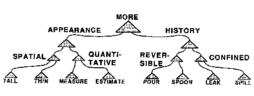
你可能会抱怨，即使我们需要这些成群的低层机构来进行比较，这个系统有太多的中层管理者。但那些官僚机构的大山物超所值。每个更高层的代理都体现了一种”高阶”知识形式，通过告诉我们何时以及如何使用我们知道的东西来帮助我们组织自己。没有多层管理，我们无法使用低层机构中的知识；它们都会不断相互妨碍。
尽管皮亚杰关于数量守恒(conservation)的实验已经像心理学中的任何实验一样得到彻底证实，但我们能理解为什么许多人第一次听说这些发现时会持怀疑态度。它们与传统假设相矛盾，即儿童与成人非常相似，只是更无知。奇怪的是，在历史的所有世纪中，这些现象直到皮亚杰才被注意到——就好像从来没有人仔细观察过孩子一样！但科学一直是这样。为什么我们的思想家花了这么长时间才发现像艾萨克·牛顿的运动定律或达尔文的自然选择(natural selection)这样简单的想法？以下是一些常见的质疑。
家长：会不会是年龄较小的儿童使用词语的方式对成人来说意思不同？也许他们只是把”哪个更多？“理解为”哪个更高？“或”哪个更长？”
仔细的实验表明，这不可能完全是词语的问题。我们可以无言地提供相同的选择，但大多数年幼儿童仍然会伸手去拿更高、更瘦的橙汁罐或拉长的糖果蛋排。
批评者：当外观和历史冲突时会发生什么？那不会使你的整个更多社会瘫痪吗？
确实会——除非[更多]有其他层级和替代方案。成人有其他类型的解释——比如”魔法”、“蒸发”或”盗窃”。但实际上，舞台魔术师发现让东西消失并不能娱乐最年幼的儿童；大概他们太习惯于遇到无法解释的事情了。当[更多]无法决定做什么时会发生什么？这取决于其他机构的状态——包括那些涉及处理挫折、不安和无聊的机构。
心理学家：我们听说有最新证据表明，尽管皮亚杰这么说，但非常年幼的儿童确实有数量概念；他们中的许多人甚至可以数那些鸡蛋。这不是反驳了皮亚杰的一些发现吗？
未必如此。考虑到没有人对那些罐子和杯子实验的结果提出异议。那么，有证据表明幼儿确实拥有[能够]给出正确答案的方法——但他们却不使用这些能力，这有什么意义呢?在我看来,这样的证据只会进一步支持像Papert和Piaget那样的解释的必要性。
生物学家:[你的理论可能解释了一些儿童如何获得这些关于数量的概念——但它并没有解释为什么]所有[儿童最终都具有如此相似的能力!我们是否天生就有内置的基因使大脑自动做到这一点?]
这是一个深刻的问题。想象基因如何能够直接影响我们最终学到的高层次想法和概念是困难的——但并非不可能。我们将在本书末尾的附录中讨论这个问题。
在学习他们的”更多社群”(Societies-of-More)时,儿童学习各种技能来比较不同的性质和数量,如数字和范围。人们很容易试图通过说儿童正在学习[某种东西]来总结这一切;我们可以称之为[数量的概念]。但为什么我们觉得必须把我们学到的东西看作[事物]或[概念]?为什么我们必须把一切都”事物化”?
什么[是]事物?没有人怀疑儿童的积木是一个事物。但儿童对母亲的爱也是一个”事物”吗?我们被语言的贫乏所束缚,因为尽管我们有很好的方法来描述对象和行动,但我们缺乏描述倾向和过程的方法。我们几乎无法描述心智的行为,除非把它们当作充满了可以看到或触摸的事物;这就是为什么我们坚持使用”概念”和”想法”这样的术语。我并不是说这总是不好的,因为”事物化”确实是一个出色的心智工具。但对于我们现在的目的来说,假设我们的心智包含某个单一的”数量概念”是灾难性的。在不同的时候,像”更多”这样的词可以意味着许多不同种类的事物。想想这些表达。
[更丰富多彩。更响亮。更迅速。更有价值。更复杂。]
我们说话时仿佛这些是相似的,但它们每一个都涉及一个不同的、来之不易的思考方式网络!“更响亮”这个短语乍一看似乎仅仅是一个量级问题。但考虑一下,远处锣的声音似乎比耳边的低语更响——尽管它的实际强度更小。你对所听到的声音的反应不仅取决于它的物理强度,还取决于你的代理机构对其来源特征的推断。因此,你通常可以通过无意识地对那个声音的来源做出假设来判断锣声是响亮但遥远的,而不是柔和但接近的。而所有其他种类的”更多”都涉及同样微妙的专业知识。
我们不应该假设我们的孩子形成了一个单一的”数量概念”,而必须努力发现我们的孩子如何积累和分类他们比较事物的许多方法。像[高、瘦、矮]和[宽]这样的代理如何形成子代理机构?对成年人来说,将更高和更宽都与更大联系起来似乎很自然。但是什么阻止儿童发明无意义的”概念”,如[“绿色且高大且最近被触摸过]“?没有孩子有时间生成和测试所有可能的组合来找出哪些是有意义的。生命太短暂,无法做那么多糟糕的实验!秘诀是:[总是先尝试组合相关的代理。高、瘦、矮]和[宽]都密切相关,因为它们都涉及对空间质量进行比较。事实上,它们可能涉及在大脑中彼此接近的代理机构,并共享如此多的共同代理,以至于它们自然会显得相似。
家长:[如果那些年幼的儿童需要这么长时间才能获得像数量守恒这样的概念,我们不能通过更早地教授这些东西来帮助加快他们的成长吗?]
这样的课程似乎效果并不好。通过足够的解释和鼓励,以及足够的训练和练习,我们可以让儿童[看起来]理解——但即便如此,他们也不经常将所”学到”的东西应用到现实生活情境中。因此,似乎即使我们引导他们沿着这些路径前进,在他们发展出自己的内在指示标之前,他们仍然无法使用我们展示给他们的大部分内容。
这是我对出错原因的猜测。大概儿童感觉到间隔开的鸡蛋”更多”,因为它们横跨更长的空间。最终,我们希望这种更大长度的感觉被鸡蛋之间有更多空白空间的感觉所抵消。在更成熟的Papert层次结构中,这会自动发生——但现在,儿童只能将此作为一个特殊的、孤立的规则来学习。许多其他问题也可以通过为它们制定特殊规则来解决。但要”模拟”那个多层社群,包括像[外观]和[历史]这样的中层代理,将涉及如此多的特殊规则,以及如此多的例外,以至于年幼的儿童将无法管理如此多的复杂性。结果是,据称”根据Piaget”设计的教育项目往往似乎在每一刻都取得成功,但由此产生的结构如此脆弱和专业化,以至于儿童只能将它们应用于几乎与学习它们时完全相同的情境中。
这一切让我想起了我的朋友吉尔伯特·沃亚特(Gilbert Voyat)来我家的一次拜访。当时他是帕珀特(Papert)和皮亚杰(Piaget)的学生，后来成为了一位杰出的儿童心理学家。见到我们五岁的双胞胎时，他眼睛一亮，很快在厨房里即兴做了一些实验。吉尔伯特先找了朱莉(Julie)，打算问她一个土豆在一根、两根、三根还是四根牙签上最能保持平衡。首先，为了评估她的总体发育情况，他开始做水杯实验。对话是这样的：
吉尔伯特：“这个杯子里的水多还是那个杯子里的水多?”
朱莉：“看起来那个杯子里的水更多。但你应该问我弟弟亨利(Henry)。”
“他已经有守恒概念了。”
吉尔伯特脸色发白，逃走了。我一直很好奇亨利会说什么。无论如何，这个轶事说明了一个年幼的孩子可能具备进行这类判断所需的感知、知识和能力的许多要素——但仍然没有适当地组织这些组成部分。
家长：为什么你的社会中的所有代理者都这么好竞争?它们总是互相攻击。为什么不让高型(Tall)和瘦型(Thin)相互合作，而不是相互抵消?
本书的第一部分给人这种印象，是因为我们必须从相对简单的机制开始。通过在不同选项之间切换来解决冲突是相当容易的。但要开发能够使用合作和妥协的机制要困难得多——因为这需要更复杂的方式让代理机构相互作用。在本书后面的章节中，我们将看到更高级别的系统如何进行更合理的协商和妥协。
大脑如何能够在改变和增加新的代理者和连接的同时继续运作?一种方法是保持每个旧系统不变，同时以绕过或穿过它的迂回形式构建一个新版本——但在确定新版本也能执行旧系统的重要功能之前，不允许新版本接管控制。然后我们可以切断一些旧的连接。

我们可以使用这种方法来形成我们的层级式更多之社会(Society-of-More):

现在让我们用另一种形式来画这个图，就好像没有空间在旧代理者之间容纳新代理者一样。

随着我们积累更多的低层代理者和额外的中间层来管理它们，这就发展成了我们之前见过的多层级层次结构。

动物大脑中的神经细胞并不总能移动为额外的细胞腾出更多空间。所以那些新层可能确实必须位于别处，通过连接线束附加。事实上，大脑解剖学中最引人注目的方面莫过于其庞大的连接束。
“斑驳的海云之日。”这个短语、这一天和这个场景在一个和弦中和谐共鸣。文字。是它们的色彩吗?他让它们发光和褪色，色调接色调：日出的金色，苹果园的赭红和绿色，波浪的蔚蓝，云彩灰色镶边的羊毛。不，不是它们的色彩；而是这个时期本身的姿态和平衡。那么，他是更喜欢文字有节奏的起伏，还是它们的传说和色彩的联想?或者是因为，由于视力虚弱和心灵羞怯，比起通过一种多彩而富有故事性的语言的棱镜反射出来的光辉的感官世界，他从个体情感的内心世界在清晰柔和的周期性散文中完美映照的沉思中获得更少的快乐?
——詹姆斯·乔伊斯(James Joyce)
什么样的大脑事件可能对应于一个普通词语的意义?当你说”红色”时，你的声带服从来自大脑中”发音代理者”的指令，这些指令使你的胸部和喉部肌肉移动以产生那个特殊的声音。这些代理者又必须从其他地方接收指令，那里的其他代理者对来自其他地方的信号做出响应。所有这些”地方”必须组成心智代理机构社会的一部分。
设计一台机器来判断何时有红色的东西是很容易的：从对不同色调的光做出响应的传感器开始，将对红色最敏感的传感器连接到一个中央”红色代理者”，并对场景的光照颜色进行校正。我们可以通过将每个颜色代理者链接到一个发出相应单词的设备来让这台机器看起来”说话”。然后这台机器就可以说出它”看到”的颜色——甚至可以区分比普通人更多的色调。但称其为”视觉”是一种歪曲，因为它只不过是一个列出许多彩色点的目录。它不会分享我们人类对颜色意义的概念，因为没有某种质感、形式和更多东西的感知，它将很少具有我们人类图像和思想的品质。

[这并不是要描绘任何特定社会的结构，而只是为了暗示所涉及的代理机构的多样性。]
当然，没有任何小图表能够捕捉任何真实人物对世界思考的一个片段以上。但这不应被理解为没有任何机器能够拥有人类所拥有的感受能力范围。这只是意味着我们不是简单的机器；事实上，我们应该理解，在学习理解庞大机器的品质方面，我们仍处于黑暗时代。而且无论如何，一个图表只能说明一个原理：不可能有任何紧凑的方式来表示成熟心智社会的所有细节。要谈论如此复杂的事物，我们只能诉诸语言技巧，让听众的心智探索他们自己内心的世界。
大脑被禁锢在颅骨之内，那是一个寂静、黑暗且静止的地方；它如何得知外面是什么样子？大脑表面本身没有丝毫触觉；它没有皮肤可以感受；它只是与皮肤相连。大脑也无法看见，因为它没有眼睛；它只是与眼睛相连。从外部世界通往大脑的唯一路径是神经束，就像那些从眼睛、耳朵和皮肤传入的神经束。通过这些神经传来的信号如何让我们产生”身处”外部世界的感觉？答案是这种感觉是一种复杂的幻觉。我们实际上从未与外部世界有任何直接接触。相反，我们处理的是在大脑内部构建的世界模型。接下来的几节将尝试勾勒这是如何发生的。
皮肤表面包含无数的小型触觉感应器，眼睛的视网膜包括一百万个微小的光探测器。科学家对这些传感器如何向大脑发送信号了解颇多。但我们对这些信号如何导致触觉和视觉的感知知之甚少。试试这个简单的实验：
[触摸你的耳朵。]
感觉如何？这似乎无法回答，因为几乎没有什么可说的。现在试试另一个实验：
[在两个不同的地方触摸你的耳朵两次，同时也触摸你的鼻子。]
哪两次触摸感觉最相似？这个问题似乎更容易回答：人们可能会说两次耳朵的触摸感觉更相似。显然，对于一个”单一感觉”本身，几乎没有什么可说的，但当我们可以进行比较时，往往能说得更多。
[考虑数学如何处理”完美点”的类比。我们不应该谈论它的形状；它根本没有形状！但由于我们习惯了事物有形状，我们不禁将点想象成圆形的，像”非常微小的点”。同样，我们不应该谈论点的大小——因为根据定义，数学上的点没有大小。尽管如此,我们还是忍不住认为，“它们非常小”。]
实际上，关于单个点绝对没有什么可说的,除了它与其他点的关系。这不是因为这些东西太复杂而无法解释,而是因为它们太简单而无法解释。人们甚至不能单独谈论一个点在哪里——因为”哪里”只有在与空间中的其他点相关时才有意义。但一旦我们知道了一些点对，我们就可以将它们与连接它们的线联系起来，然后我们可以定义新的、不同的点，即各对线可能相交的地方。重复这个过程可以生成整个几何世界。一旦我们理解了这个可怕的事实——点本身什么都不是，只存在于与其他点的关系中——那么我们就可以像爱因斯坦那样问，时间和空间是否只不过是巨大的邻近性(nearnesses)社会。
同样，关于任何”单一触摸”——或关于任何单个感觉探测器所做的事情——几乎没有什么可说的。然而，关于两个或更多皮肤触摸之间的关系,有更多可说的，因为皮肤上的两个点越靠近，它们同时被触摸的频率就越高。
我们的皮肤能够感觉的原因是我们生来就有无数神经从皮肤的每个点延伸到大脑。一般来说，皮肤上每对邻近位置都与大脑中的邻近位置相连。这是因为那些神经往往以平行纤维束的形式运行——大致像这样：
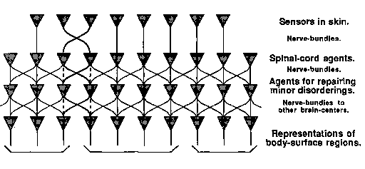
每种感官体验都涉及许多不同传感器的活动。一般来说，两个刺激唤起相同传感器的程度越大，这些刺激产生的部分心理状态就越相似——这些刺激就会”看起来”越相似，仅仅因为它们会倾向于导致相似的心理后果。
[在其他条件相同的情况下，两个刺激的表面相似性将取决于它们在其他代理机构(agencies)中导致相似活动的程度。]
从皮肤到大脑的神经往往以平行束的形式运行，这一事实意味着刺激皮肤的邻近点通常会导致大脑内部相当相似的活动。在下一节中，我们将看到这如何使大脑内部的代理机构能够发现皮肤的空间布局。例如，当你沿着皮肤移动手指时，新的神经末梢会被刺激——可以安全地假设新到达的信号代表沿着手指前进边缘的皮肤点。
有了足够的此类信息，一个设计适当的代理机构可以组装出一种地图来表示哪些点在皮肤上彼此靠近。由于从皮肤到大脑的神经束路径存在许多不规则性，构建这些地图的代理机构必须能够”整理事物”。例如，映射代理机构必须学会纠正图中显示的那种交叉。但这只是任务的开始。对于一个孩子来说，学习皮肤之外的空间世界是一段持续多年的旅程。
我们已经看到，触摸皮肤的邻近点通常会产生相似的感觉：这是因为相应的神经沿着平行的路径运行，因此在大脑内部引起相似的活动。反过来通常也是如此：两个感觉越相似，它们在皮肤中的起源就越接近。这有一个重要的后果：
[保持我们皮肤传感器物理邻近关系的神经通路可以使内部代理机构更容易发现关于外部空间世界的相应邻近性。]
当你的手在物体上移动时，会告诉你关于该物体形状的信息。想象一下，当一个非常年幼的婴儿将手在某个物体上移动时会发生什么:每一个连续的动作都会产生一系列皮肤传感器信号。随着时间的推移,各种映射代理可以首先使用这些信息来学习,简单地说,哪些皮肤点彼此最接近。后来,进一步的映射代理层可以学习哪些皮肤点位于其他点之间;这也应该很容易,因为大多数小规模的运动往往以近乎直线的方式进行。但是,由于空间本身只是位置之间邻近关系的一个集合,这就是我们”重建”皮肤空间结构所需的全部信息。所有这些都符合数学的一个基本原理:
假设你迷失在某个未知空间中——并且只能判断哪些点对彼此接近。这足以让你推断出关于该空间的大量信息。仅凭这一点,你就可以推断出你是在一个二维世界还是三维世界中。你可以判断出哪里有障碍物和边界、洞穴、隧道和桥梁,等等。你可以仅从这些关于邻近性的局部信息片段中推断出该世界的全局布局。
这是一个奇妙的事实,原则上,人们可以仅从关于哪些点对彼此靠近的提示中推断出空间的全局地理结构!但实际制作这样的地图是另一回事,目前还没有人知道大脑是如何做到这一点的。要设计一台机器来完成这样的任务,可以从一层”相关代理”开始,每个微小的皮肤区域一个,每个都被设计用来检测哪些其他皮肤点最经常在几乎相同的时间被激活;然后这些将被映射为最接近的点。第二层类似的代理可以开始绘制更大区域的地图,几个这样的层最终会组装出一系列不同尺度的地图,用于表示几个细节层次。
如果大脑做了类似的事情,它可能会阐明一个困扰某些哲学家的问题:“为什么我们都认同外部空间世界是什么样的?”为什么不同的人不会以不同的、陌生的方式解释空间?原则上,从数学上讲,每个人都有可能得出结论,例如,世界是三维的——而不是二维或四维的——仅仅通过足够的邻近点对的经验。然而,如果从皮肤到大脑的连接被过度混乱地打乱,我们可能永远无法将它们理顺,因为实际执行这类操作的计算将超出我们的能力范围。
这种困难因为需要用同一种语言解释词语而增加,因为一个想法通常只有一个词;虽然将像明亮、甜、咸、苦这样的词翻译成另一种语言可能很容易,但解释它们并不容易。
——塞缪尔·约翰逊
我们的思维方式部分取决于我们如何被养育。但在开始时,更多取决于我们大脑中的连接。那些微观特征如何影响我们心智世界中发生的事情?答案是,我们的思想在很大程度上受到哪些事物看起来最相似的影响。哪些颜色看起来最相似?哪些形式和形状、哪些气味和味道、哪些音色、音高、疼痛和酸痛、哪些感觉和感受看起来最相似?这样的判断在心智成长的每个阶段都有巨大的影响——因为我们学到什么取决于我们如何分类。
例如,一个仅根据光的颜色对每次火灾进行分类的孩子可能会学会害怕所有橙色的东西。那么我们会抱怨孩子过度泛化了。但如果这个孩子相反,根据从未两次相同的特征对每个火焰进行分类,这个孩子会经常被烫伤——我们会抱怨它泛化得不够。
我们的基因为我们的身体提供了许多种类的传感器——外部事件检测代理,每个代理在检测到某些物理条件时向神经系统发送信号。我们的眼睛、耳朵、鼻子和嘴里有感觉代理,可以辨别光、声音、气味和味道;我们的皮肤中有感知压力、触摸、振动、热和冷的代理;我们有检测肌肉、肌腱和韧带张力的内部代理;我们还有许多我们通常不会意识到的其他传感器,例如那些检测重力方向并感知身体不同部位各种化学物质含量的传感器。
人眼中感知光的颜色的代理比我们玩具机器的”红色代理”复杂得多。但这并不是简单机器无法理解”红色”对我们意味着什么的原因——因为我们人眼中的感觉检测器也不能。因为正如无法说明单个点一样,也无法说明一个孤立的感觉信号。当我们的”红色、触摸”或”牙痛”代理向我们的大脑发送信号时,每个信号本身只能说”我在这里”。这些信号对我们”意味着”的其余部分取决于它们如何与我们所有其他代理相连接。
换句话说，发送到大脑的信号的”性质”仅仅依赖于关系——这与空间中那些无形的点是一样的。这就是约翰逊博士在为他的词典创建定义时所面临的问题：每个单独的词，如”苦的”、“亮的”、“咸的”或”甜的”，都试图描述感觉信号的一种性质。但是一个单独的信号所能做的只是宣告它自己的活动——也许还会表达一些强度。你的[牙齿]不会疼痛(它只能发送信号)；只有[你]才会疼痛，一旦你的高层级代理体解释了那些信号。除了每个单独刺激的原始独特性之外，它的所有其他性质或品质——无论是触觉、味觉、声音还是光——都完全依赖于它与你心智中其他代理体的关系。
我们如何了解真实的三维世界？我们已经看到某些代理体如何映射皮肤的布局。但我们如何从那里进展到了解皮肤之外的空间世界呢？有人可能会问，为什么婴儿不能简单地”环顾四周”来看看真正发生了什么。不幸的是，听起来简单的短语”简单地看”隐藏了太多难题。当你看一个物体时，来自它的一些光照进你的眼睛并刺激那里的一些感受器。然而，你身体、头部或眼睛的每一个动作都会使你眼中的图像发生剧烈变化。当一切都变化如此迅速时，我们如何提取任何有用的信息？虽然原则上应该可以设计一台机器，最终能够学会将这些动作与图像中产生的变化联系起来，但这肯定需要很长时间，而且似乎我们的大脑已经进化出帮助我们补偿身体、头部和眼睛运动的特殊机制。这使得其他代理体更容易学会使用视觉信息。稍后我们将讨论一些其他思维领域，在这些领域中我们使用类比(analogy)和隐喻(metaphor)来改变我们的”观点”。也许那些奇妙的能力以类似的方式进化，因为识别一个物体从不同视角看是同一个物体，与能够”想象”根本不在视野中的事物并没有太大不同。
无论如何，我们确实不理解儿童如何学会理解空间。也许我们从做许多小实验开始，这些实验导致我们最初粗糙的皮肤地图。接下来我们可能开始将这些与我们眼睛和四肢的运动相关联；导致相似感觉的两个不同动作很可能经过了空间中的相同位置。一个关键步骤是开发一些”代表”皮肤外几个”地点”的代理体。一旦这些地点被建立(最初的可能在婴儿面部附近)，就可以进入另一个阶段：组装一个代理机构(agency)，它代表这些地点之间的关系、轨迹和方向的网络。一旦这完成，网络就可以继续扩展以包括新的地点和关系。
然而，这只是个开始。很久以前，像弗洛伊德和皮亚杰这样的心理学家观察到，儿童似乎重演了天文学的历史：首先他们想象世界以自己为中心——只有后来他们才开始把自己看作是在一个静止的宇宙中移动，在这个宇宙中身体就像任何其他物体一样。达到那个阶段需要几年时间，即使在他们的青少年时期,儿童仍在提高他们从其他视角设想事物如何呈现的能力。
如果我们能将所有行为分为两类：“[内置的]”和”[学习的]“，那就太好了。但遗传和环境之间根本没有明确的界限。稍后，我将描述一个肯定会学习一件特定事情的代理机构：[识别人类]。但如果这样一个代理机构注定要以某种特定行为告终，说它学习是否合理？由于这种类型的活动似乎没有通用的名称，我们将其称为”注定的学习(predestined learning)“。
每个孩子最终都会学会伸手拿食物。可以肯定的是，每个不同的孩子都经历了不同的”伸手行为”经历历史。尽管如此，根据我们的”空间的近似模型(nearness models)“理论，所有这些孩子最终会得到大致相似的结果，因为该结果受到现实世界空间的近似关系的约束。既然最终结果看起来如此清楚，为什么要让大脑使用繁琐的学习过程？为什么不通过基因内置答案？一个原因可能是学习更经济。要强制每个单独的神经细胞做出精确正确的连接，需要巨大的遗传信息存储，而指定一个学习机器的构造所需的信息要少得多，这个学习机器被设计用来解开由不太受约束的设计产生的任何不规则性。
这就是为什么问”儿童的空间概念是习得的还是遗传的？“这样的问题没有意义。我们通过使用那些按照遗传决定的过程进行学习的代理机构来习得空间概念。这些代理机构会从经验中学习——但它们学习过程的结果实际上已经被我们身体各部分的空间几何特性所预定。这种适应与预定的混合在生物学中相当常见，不仅在大脑发育中如此，在身体其他部分的发育中也是如此。例如，我们的基因如何控制骨骼的形状和大小？它们可能从对某些早期细胞的类型和位置进行相对精确的规定开始。但这对于必须适应不同条件的动物来说还不够；因此，这些早期细胞本身必须被编程以适应后来可能施加在它们身上的各种化学和机械影响。这样的系统对我们的发育至关重要，因为我们的器官必须能够执行各种严格受限的活动，同时又能够适应变化的环境。
也许”更多社会”(Society-of-More)的成长是预定学习(predestined learning)的另一个例子，因为它似乎在每个正常儿童身上都会发展，而不需要太多外界帮助。很明显，这个复杂的代理机构并非由先天基因直接构建；相反，我们每个人都发现了自己表示比较的方式——但我们都达到了大致相同的最终结果。大概遗传提示必须通过在大致正确的时间和地点提供新的代理层来帮助实现这一点。
让我们再做一个实验：触摸一只耳朵，然后触摸你的鼻子。它们感觉不太相似。现在触摸一只耳朵，然后触摸另一只耳朵。这些触摸似乎更相似，尽管它们相距两倍远。这部分可能是因为它们在相关的代理机构中被表示。事实上，我们的大脑有许多成对的代理机构，像镜像一样排列，它们之间有巨大的神经束连接。
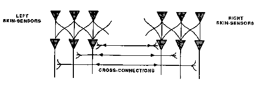
大脑的两个半球看起来如此相似，以至于长期以来人们都认为它们是相同的。然后发现，当这些交叉连接被破坏后，通常只有左脑能够识别或说出单词，只有右脑能够画图。最近，当现代方法发现这两侧之间的其他差异时，在我看来，一些心理学家疯了——试图将这些差异与有史以来构想的每一个心智主义二元理论相匹配。我们的文化很快就被这种以现代形式复兴的旧观念迷住了：我们的心智是成对反原则的交汇地。一边是逻辑的，对面是类比的。左脑是理性的；右脑是情感的。难怪这么多人抓住这个伪科学方案：它给几乎每一个将心智世界像桃子一样平分为两半的陈旧想法注入了新的生命。
这种观点的问题在于，每个大脑有许多部分，而不仅仅是两个。虽然有许多差异，但我们也应该问为什么这些左右脑半球实际上如此相似。这可能有什么功能？首先，我们知道，当一个年轻人的主要脑区受损时，镜像区域有时可以接管其功能。可能即使没有损伤，一个已经消耗了其邻近区域所有可用空间的代理机构也可以扩展到对面的镜像区域。另一种理论：一对镜像代理机构可以用于进行比较和识别差异，因为如果一侧可以在另一侧制作其状态的副本，那么在做了一些工作之后，它可以比较这些初始和最终状态，以查看取得了什么进展。
我自己关于当这些脑半球之间的交叉连接被破坏时会发生什么的理论是，在早期生活中，我们从两侧基本相似的代理机构开始。后来，随着我们变得更加复杂，遗传和环境影响的结合导致每一对中的一个控制了两者。否则，我们可能会因冲突而陷入瘫痪，因为许多代理必须服务于两个主人。最终，许多技能的成人管理者往往会在最关注语言的那一侧大脑发展，因为这些代理机构连接到异常多的其他代理机构。大脑中不太占主导地位的一侧将继续发展，但行政功能较少——最终拥有更多的低级技能，但较少参与同时涉及许多代理机构的计划和更高级目标。那么，如果偶然地，那个脑半球被孤立，它会显得更幼稚、更不成熟，因为它在行政成长方面落后太多。
无论是普通大众还是科学界对左右半球的这种迷恋并不是什么新鲜事。这是我们如何习得各种成对词语的症状，这些词语将世界的某些方面分成对立的两极。
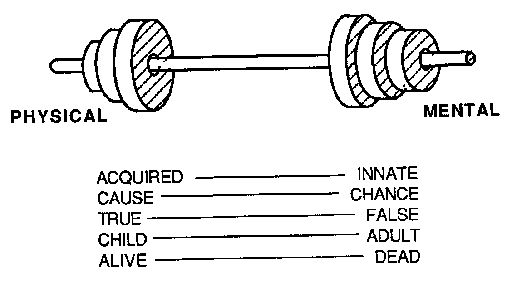
这些划分都有缺陷，但通常给我们提供了有用的思考方式。把事物分成两部分是一个好的开始，但人们应该总是尝试找到至少第三种选择。如果找不到，就应该怀疑可能根本没有两个想法，而只有一个，加上某种形式的对立面。这些二元形式的一个严重问题是，它们中的许多非常相似,这导致我们做出错误的类比。考虑下面的配对，其中每个自我都被分成两部分，导致每个人都认为它们共享某种共同的统一性。
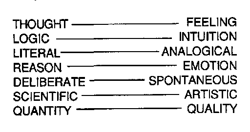
左侧的项目被视为中立客观和机械的，仅存在于头脑中。我们认为思维及其相关概念是准确的，但僵化且不敏感。右侧的项目被视为心灵的事物——充满活力、温暖且个性化；我们倾向于相信情感是对那些最重要事物的更好判断者。冷静的理性本身似乎过于非个人化，距离血肉之躯太远；情感更接近内心，但当它变得过于强烈以至于理性完全被压倒时，它也可能变得靠不住。
这个隐喻多么奇妙！除非它有某种基本的真理，否则它怎么能运作得如此之好？但是等等：每当任何简单的想法似乎能解释这么多事情时，我们都必须怀疑其中有诡计。在我们被哑铃式的方案所吸引之前，我们有责任试图理解它们奇怪的吸引力，以免我们像华兹华斯所说的那样被欺骗：
某种虚假的次要力量，借此，在软弱中，我们创造出区分，然后认为我们微不足道的界限是事物是我们感知到的，而不是我们创造的。
在我的一生中，有多少次我对现实感到失望，因为在我观察它的时候，我的想象力——唯一能让我享受美的器官——无法发挥作用，这是由于一条不可抗拒的法则，该法则规定只有缺席的事物才能被想象。
——马塞尔·普鲁斯特
我们的孩子在玩一些积木和一辆玩具车时，碰巧建造了这个结构。让我们称它为积木拱门(Block-Arch)。

两块竖立的积木和一块横放的积木。
积木拱门似乎引起了一种奇怪的新现象：当你把车推过它时，你的手臂会被困住！然后，为了完成这个动作，你必须松开车——并伸手到拱门的另一边，也许需要换手。孩子对这种”换手”现象产生了兴趣，并想知道积木拱门是如何引起它的。很快，孩子发现了另一个看起来相似的结构——除了换手现象消失了，因为你甚至无法把车推过它。然而两个结构都符合同样的描述！

两块竖立的积木和一块横放的积木。
但是如果积木拱门导致换手，那么这就不能是积木拱门。所以孩子必须找到某种方法来改变积木拱门的心智描述，使其不适用于这个结构。它们之间有什么区别？也许这是因为那些竖立的积木现在彼此接触了，而之前它们没有接触。我们可以通过改变积木拱门的描述来适应这一点：“必须有两块竖立的积木和一块横放的积木。竖立的积木不能接触。”但即使这样也不够，因为孩子很快发现了另一个符合这个描述的结构。在这里，换手现象也消失了；现在你可以把车推过它而不用松手！

两块竖立的积木和一块横放的积木。
竖立的积木不能接触。
它们必须支撑横放的积木。
我们必须再次改变我们的描述，以防止这被认为是积木拱门。最后，孩子发现了另一个确实产生换手现象的变体：

两块竖立的积木和其他东西。
竖立的积木不能接触。
它们必须支撑另一个东西。
另一个东西可以是楔形块或积木。
我们的孩子完全基于自己的经验，为自己构建了一个有用的拱门概念。
学习到底是什么？这个词确实很难定义。我们的积木拱门场景中的孩子找到了一种方法来学习一些成年人所说的”拱门”的一种含义。但我们不能假设当我们学习背诵一首诗、使用勺子和系鞋带时涉及相同类型的过程。当一个人学习阅读、学习加数字、学习一门新语言、学习预测朋友的性情，或学习建造一座能够站立的塔时，会发生什么？如果我们试图找到一个单一的”学习”定义来涵盖这么多种类的过程，我们最终会得到一些过于宽泛而没有多大用处的短语——就像这样：
“学习”是对我们心智运作方式进行有用的改变。
问题在于我们使用”学习”这个单一的词来涵盖过于多样化的观念社会(society)。这样的词在书名中或机构名称中可能有用。但是当涉及到研究主题本身时，我们需要更有区分性的术语来描述重要的、不同的学习方式。即使是那一个积木拱门场景也揭示了至少四种不同的学习方式。我们将给它们这些新名称：
统一框架(Uniframing) 将几个描述组合成一个，例如，通过观察所有拱门都有某些共同部分
累积(Accumulating) 收集不兼容的描述，例如，通过形成短语”积木或楔形块”
重新表述(Reformulating) 修改描述的特征，例如，通过描述单独的积木而不是整体形状
跨框架(Trans-framing) 在结构与功能或动作之间建立桥梁，例如，通过将拱门的概念与换手的动作联系起来
这些词将在后续章节中解释。在我看来，心理学中使用的旧词——如泛化(generalizing)、练习(practicing)、条件化(conditioning)、记忆(memorizing)或联想(associating)——要么过于模糊而无法使用，要么已经与根本不健全的理论联系在一起。与此同时，计算机科学和人工智能的革命已经导致了关于各种学习方式如何运作的新想法，这些新想法值得新的名称。
我们的 [积木拱门] 场景基于 Patrick Winston 在 1970 年开发的一个计算机程序。Winston 的程序需要一个外部教师来提供示例，并指出哪些是拱门，哪些不是。在我的无需编程的版本中，教师已被儿童内部某个机构的关注所取代,这种关注是为了解释神秘的 [手部变化] 现象的出现:为什么某些结构会迫使你放开玩具车,而其他结构却不会?因此,我们假设儿童被引导去自己学习,以解释奇怪的事件。有人可能会抱怨,让学习依赖于儿童的好奇心只会使学习更难解释。但如果我们真的要理解我们的心智如何成长,我们必须首先面对现实:除非人们感兴趣或关心,否则他们就是学不好。旧的学习和记忆理论从未取得太大进展,因为在试图过度简化时,它们失去了情境的本质方面。如果知识以某种方式被储存起来,却没有相应的理论来说明如何在之后将这些知识重新投入使用,那将没有多大用处。
我们 [积木拱门] 场景中的儿童检查了几种不同的积木排列,却最终将它们描述为完全相同!巨大的成就在于发现了如何用同一个短语来描述拱门的所有不同实例,[“一个顶部由两个不接触的直立积木支撑。”] 我将使用新词”统一框架(uniframe)“来表示这种构建来同时应用于几个不同事物的描述。一个人如何制作统一框架?
我们儿童的 [积木拱门] 统一框架是通过几个步骤构建的—每个步骤都使用了不同的学习方案!第一步将场景分解为具有特定属性和关系的积木;一些是”平躺的”或”站立的”,一些在接触或支撑其他积木。接下来,我们要求我们的统一框架坚持拱门顶部必须由直立的积木支撑:我们称之为[强制(enforcement)]。然后,我们要求我们的统一框架拒绝两个直立积木相互接触的结构;我们可以称之为[防止(prevention)]:一种避免接受不想要的情况的方法。最后,我们要求我们的统一框架对拱门顶部的形状保持中立,以避免做出我们认为不相关的区分。我们称之为[容忍(tolerance)]。
一个人如何知道选择哪些特征和关系来[强制、防止]或[容忍]?当我们比较下面的两个结构时,我们强制了 A 由 B 和 C 支撑的关系。但想想我们本可以强调的所有其他差异。
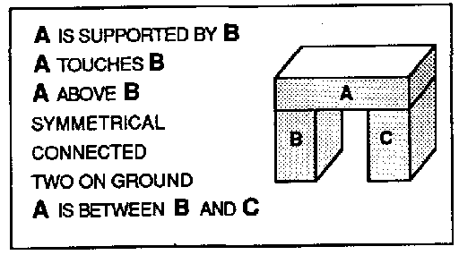 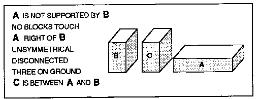
当我们可以使用所有这些事实时,只使用其中一个是否浪费?我们应该学会利用我们能获得的所有信息吗?不!有充分的理由不要注意太多,因为每一个看似必要的事实都可能产生一系列无用的、偶然的,甚至误导性的事实。
[大多数差异是冗余的。其余的大多数是偶然的。]
例如,假设我们已经知道 A 由 B 支撑。那么就没有必要记住 A 接触 B 或 A 在 B 上方—因为这些是我们可以推断出来的。对于另一种例子,假设我们知道 A [不]由 B 支撑。那么似乎没有必要记住”A 在 B 的右边。“常识可以告诉我们,如果 A 不在 B 上,它一定在别处。然而,至少在当前情境中,那个”别处”是在右边还是在左边并不重要;另一次它可能同样在左边。如果我们过于草率地存储这些细节,我们的思维就会被无用的事实弄得杂乱无章。
但我们如何判断哪些事实是有用的?[我们在什么基础上决定哪些特征是本质的,哪些只是偶然的?]这样的问题本身无法回答。离开我们想如何使用它们的答案,它们就没有意义。学习没有单一的秘密魔法诀窍;我们只需要学习一个由不同学习方式组成的大型社会!
[当眼睛或想象力被任何不寻常的作品所震撼时,活跃思维的下一个转变就是思考它是如何完成的手段。]
[— 塞缪尔·约翰逊(Samuel Johnson)]
假设一个成人看着我们的儿童说:“我看到你建了一个拱门。”儿童可能会认为这是什么意思?要学习新词或新想法,必须与思维中的其他结构建立联系。“我看到你建了一个拱门”应该让儿童将”拱门”这个词与体现 [积木拱门] 和 [手部变化] 现象描述的机构联系起来—因为这些是儿童思维中的内容。
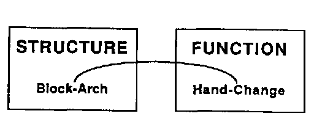
但一个人不能仅仅通过将事物与名称联系起来来学习某物的含义。每个词的概念还必须被赋予一些原因、行动、目的和解释。想想”拱门”这个词对任何理解拱门如何工作、如何制作以及可以用各种方式使用它们的真实儿童来说必须意味着什么!一个真实的儿童也会注意到,拱门就像以前经历过的许多其他事物的变体,比如”没有道路的桥梁”、“有门的墙”、“像桌子”或”形状像倒置的U”。我们可以用这些相似性来帮助找到其他东西来服务我们的目的:将拱门想象成一个通道、洞或隧道可以帮助关心交通问题的人;将拱门描述为”顶部由两侧支撑”可以帮助一个人够到够不着的东西。哪种描述最适合我们?这取决于我们的目的。
我们最强大的思维方式之一，就是能够将我们在不同情境中学到的东西整合在一起。但是，如何同时以两种不同的方式思考呢？通过在大脑内部某处构建另一种类型的拱桥：
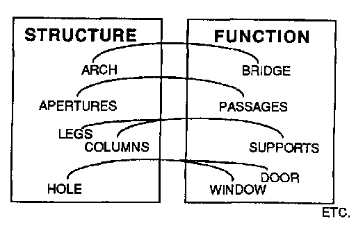
这是一个愚蠢的隐喻吗——谈论在大脑中的不同位置之间架设桥梁？我确信，我们如此频繁地用熟悉的空间形式来构建思想，这绝非偶然。我们在后期生活中的许多思维方式，都基于我们在早期生活中对空间世界的学习。
许多我们认为是物理的东西实际上是心理的。要理解为什么会这样，让我们试着说明”椅子”的含义。起初，这样说似乎就足够了：
“椅子是一件有腿、有靠背和座位的东西。”
但当我们更仔细地观察我们认为是椅子的东西时，我们发现其中许多并不符合这个描述，因为它们并没有分成这些独立的部分。最终，我们发现所有椅子的共同点很少——除了它们的预期用途。
“椅子是你可以坐的东西。”
但这似乎也不够充分：它使椅子看起来像愿望一样虚无缥缈。解决方案是我们需要结合至少两种不同类型的描述。一方面，我们需要结构描述来识别我们看到的椅子。另一方面，我们需要功能描述来知道我们能用椅子做什么。我们可以通过交织这两个想法来捕捉更多我们的意思。但仅仅提出一个模糊的关联是不够的，因为为了有用，我们需要更多关于这些椅子部件如何实际帮助人坐下的细节。为了把握正确的含义，我们需要椅子结构的各个部分与这些部分应该服务的人体需求之间的联系。我们的网络需要这样的细节：
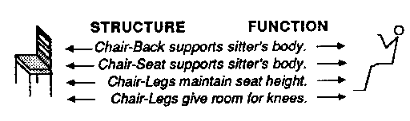
没有这样的知识，我们可能会爬到椅子下面或试图把它戴在头上。但有了这些知识，我们可以做出惊人的事情，比如应用椅子的概念来看我们如何可以坐在一个盒子上，即使它没有腿或靠背！
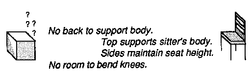
包含这样结构的统一框架(uniframe)可以很强大。例如，关于结构、舒适度和姿势之间关系的这种知识可以用来理解何时盒子可以充当椅子：也就是说，只有当它对于不需要靠背或弯曲膝盖空间的人来说高度合适时。可以肯定的是，这种巧妙的推理需要特殊的心智技能，以重新描述或”重新表述”盒子和椅子的描述，使它们尽管存在差异却能”匹配”。在我们学会让旧的描述适应新的情况之前，我们的旧知识只能应用于它被学习的情况。而这几乎永远不会奏效，因为情况永远不会完美地重复。
统一框架并不总是有效。我们经常试图使日常想法变得精确——但就是找不到多少统一性。那么，我们只能积累示例的集合。
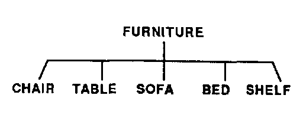 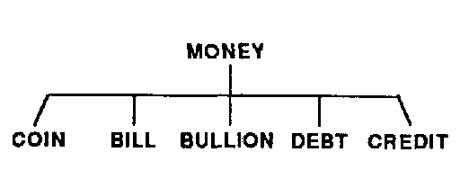
确实很难找到所有这些共享的属性。硬币是坚硬、圆形和扁平的。纸币是薄而柔韧的。金条具有不寻常的重量，而信用甚至不是物理的。我们将它们全部识别为贸易媒介——但这无法帮助我们识别事物本身。家具的情况也是一样。说家具是用来做什么的并不难——“装备房间以供居住的东西”。但当涉及到物体本身时，甚至很难找到”椅子”的统一框架。同样，它的功能角色似乎很清楚——“一个人可以坐的东西”。问题是人们几乎可以坐在任何东西上——长凳、地板、桌面、马、一堆砖、一块石头。即使定义拱门也有问题，因为我们识别为拱门的许多东西根本不符合我们的块拱统一框架：
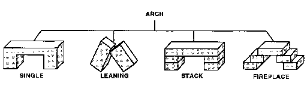
所有这些形状都可以描述为”有洞的形状”或”跨越间隙的块”。但这些描述也会包含许多我们不想视为拱门的东西。当找不到统一框架时，最简单的学习方法是积累经验的描述。
起初，积累示例似乎比找到更统一的方式来表示它们更简单。但以后要为此付出代价：当我们试图推理事物时，积累可能成为麻烦——因为那时我们将被迫找到不同的论证或解释来证明每个单独的示例。最有可能的是，我们大脑的不同部分已经进化出使用这两种策略。如果所有示例都可以同时由不相互干扰的独立代理(agent)处理，积累不需要花费更长时间来操作。但一旦这些过程开始需要彼此的帮助，整个社会的效率将迅速下降。也许这种减速本身可能是刺激我们开始尝试统一的因素——至少对于我们经常使用的过程。
关于我们何时开始新的统一框架的一个更简单的理论是，在大脑中，对于各种类型的代理可以直接访问多少K线(K-line)存在架构约束。例如，某个代理机构中的代理可能无法为某个层次结构中的每个分类积累超过大约七个分支。当积累的超过这个数量时，该代理机构将被迫要么将一些示例合并到统一框架中，要么从其他地方寻求帮助。
让我们建立一个关于某些人性格的哑铃理论。
统一框架者[ 忽略差异而倾向于想象中的规律性。他们往往是完美主义者，但也倾向于用刻板印象思考。这有时会导致鲁莽，因为他们必须拒绝一些证据才能建立他们的统一框架。]
积累者[ 不那么极端。他们不断收集证据，因此不太容易犯错。但他们发现问题的速度也更慢。]
当然，这些虚构的性格只是漫画式的刻画，每个人都混合了两个极端。大多数人找到了某种合理的妥协，尽管我们中的少数人更偏向某一方向。我确信我们都使用不同学习策略的混合——描述的积累、K-线、统一框架，或其他。从表面上看，积累似乎比制作统一框架更容易[——但选择积累什么可能需要更深入的洞察力。]无论如何，每当积累变得过大和笨拙时，我们就尝试用统一框架替换其中的某些成员组。但即使我们成功找到了一个适当紧凑的统一框架，我们也可以预期它最终也会积累例外，因为最初的描述很少适用于我们后来的所有目的。
例如，当孩子第一次遇到狗时，可能会尝试创建一个统一框架来分类这些动物的部分——眼睛、耳朵、牙齿、头、身体、尾巴、腿等等。但孩子最终必须学会，即使在这里也有例外。
此外，那个统一框架无法帮助回答孩子关于任何一只特定狗的最紧迫问题：它友好吗？它的叫声响吗？它是那种容易咬人的类型吗？每个这样的关注都可能需要建立不同类型的层次树。
这导致了一个不可避免的困难。我们各种各样的动机和关注可能需要不兼容的方式来分类事物。你无法从狗的叫声预测它的咬人倾向。我们建立的每个分类都必须体现不同类型的知识，而我们很少能一次使用其中的多个。当我们有一个简单明确的目标时，我们可能能够选择一种特定的描述，使问题容易解决。但当几种类型的目标冲突时，就更难知道该做什么。
何时应该积累，何时应该制作统一框架？选择取决于你的目的。有时将事物视为相似是有用的，因为它们有相似的形式，但有时将具有相似[用途]的事物归类在一起更有意义。在某一刻你可能希望强调相似性；在下一刻，你可能想强调区别。通常，我们必须将统一框架和积累结合使用。例如，在[方块-拱]中，我们发现可以有两种不同类型的拱顶——方块和楔形。因此，当我们使用短语”方块或楔形”时，我们实际上在统一框架中插入了一个”子积累”。
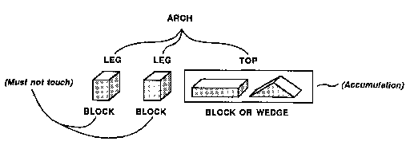
积累很少让人完全满意，因为我们觉得想法应该有更多的统一性。如果椅子、拱或货币仅仅意味着不相关事物的列表，我们就不会有这些词。如果每个都不涉及某些统一的思想，我们首先就不会想到制作这些列表！为什么如此难以描述它们的本质？在接下来的几节中，我们将发现许多原因。这是其中之一：
[许多好的想法实际上是两个想法合一——它们在两个思想领域或不同观点之间形成桥梁。]
每当我们在结构和功能之间建立桥梁时，桥的一端可能代表一个目标或用途，而另一端描述我们可能用来实现这些目的的东西。但这些结构很少与这些功能整齐对应。问题是我们通常找到许多不同的方法来实现任何目标。这意味着我们会在桥的结构侧找到一个积累。例如，如果你想够到高处的东西，你可以站在椅子上，用棍子够，或请更高的人帮你拿。类似地，可以为任何结构找到功能或目标的积累。我的同事Oliver Selfridge曾写过一整本书，名为[棍子的用途]。
[我们不同的目的和手段世界通常不太匹配。所以当我们在一个这样的世界中找到一个有用、紧凑的统一框架时，它通常对应于我们其他世界中的一个积累。]
我们之前遇到过这个问题。当我们将鸟类分类为[动物]，将飞机分类为[机器]时，我们因此强迫会飞的事物类别不统一。稍后，当我们讨论关于隐喻的理论时，我们会看到这样的问题几乎是不可避免的，因为我们只知道极少数——因此非常宝贵——其统一力量跨越多个领域的方案。
对于一个并不总是有效的定律或规则应该怎么办？当我们为[方块-拱]开发统一框架时，我们看到了一种方法。我们只是不断改变它以适应每个新例子。但如果在所有这些工作之后，仍然有不符合的例外怎么办？
例外原则(Exception Principle)：[篡改一个几乎总是有效的规则很少值得。最好只是用特定例外的积累来补充它。]
所有孩子都学到鸟能飞，会游泳的动物是鱼。那么，当他们被告知企鹅和鸵鸟是不能飞的鸟，或者鲸鱼和海豚是会游泳但不是鱼的动物时，他们该怎么办?对于那些不再适用的框架(uniframe)，孩子们该怎么办?异常原则(exception principle)告诉我们:不要急于改变它们。我们不应该期望规则是完美的，而只是说出什么是典型的。如果我们试图修改每一条规则，考虑到每一个例外，我们的描述将变得过于繁琐而无法使用。从”鸟能飞”开始，后来改成”鸟能飞，除非它们是企鹅或鸵鸟”并不算太糟。但如果你继续追求完美，你的规则将变成怪物:
[鸟能飞，除非它们是企鹅和鸵鸟，或者碰巧死了，或者翅膀折断了，或者被关在笼子里，或者脚被水泥粘住了，或者经历了如此可怕的经历，以至于在心理上无法飞行。]
除非我们单独处理例外，否则它们会破坏我们试图做出的所有概括。想想为什么[鱼]这个常识概念如此有用。它是关于一类有很多共同点的事物的一般信息的积累:生活在水中的动物，有一定的流线型形状，通过扭动身体和用各种鳍状附肢扇动水来移动。然而，生物学家关于[鱼]的概念是非常不同的，更多地涉及这些动物的起源和内部机制。这导致强调眼睛不太明显的方面:如果鲸鱼有肺而鳟鱼有鳃，它们必须以不同的方式构建框架。孩子们听到鲸鱼不是鱼会感到不安，因为他们通常更关心用途和外观，而不是起源和机制。他们更可能想要这样的分类:
[这些动物做什么?它们住在哪里?它们容易捕捉吗?它们危险吗?它们有用吗?它们吃什么?它们味道如何?]
像”鱼”这样的普通词语的力量来自于我们如何让它们同时跨越如此多的意义世界(meaning-world)。然而，为了做到这一点，我们必须能够容忍许多例外。我们几乎从未发现没有例外的规则——除了在我们自己创造的某些特殊的人工世界中，通过一开始就制定它们的规则和条例。像数学和神学这样的人工领域从一开始就被构建为没有有趣的不一致性。但我们必须小心，不要把我们自己的发明误认为是我们发现的自然现象。在现实生活中坚持完美的法则，冒着根本找不到任何法则的风险。只有在科学中，每一个例外都必须被解释，付出这样的代价才有意义。
为什么可以用石头或砖块建造塔或拱门，但不能用水、空气或沙子建造?回答这个问题就等于问:“塔是如何工作的?”但问这个问题似乎相当反常，因为答案似乎如此明显:“每个砖块支撑着下一个，仅此而已!”正如我们之前所说:
一旦你忘记了学习它，一个[想法就会显得不言自明]!
我们经常使用”洞察力”或”直觉”这样的词来谈论那些看起来特别直接的理解。但认为看起来”显而易见”的东西因此就是简单或不言自明的，这是糟糕的心理学。许多这样的事情是由我们头脑中巨大的、沉默的系统为我们完成的，这些系统是在童年时期被遗忘的漫长岁月中建立起来的。我们很少思考我们为理解空间而开发的巨大引擎，它们工作得如此安静，以至于在我们的意识中没有留下任何痕迹。塔如何工作是每个人都知道了很久的事情，以至于提到它似乎很奇怪:
一座[塔的高度仅取决于其各部分的高度!砖块的其他属性都不重要——无论它们的成本是多少，它们去过哪里，你对它们有什么看法。只有提升才重要]——所以[我们可以通过只考虑增加其高度的动作来建造塔。]
这使得建造塔变得容易，让我们将基本建筑计划与所有小细节分开。要[建造一定高度的塔，只需找到足够的”高度片段”并通过提升动作将它们堆叠起来。]但塔也必须保持稳定。所以下一个问题是找到我们可以采取的使塔稳定的动作。在这里我们可以使用第二个精彩的原则:
如果[每个砖块都在上一个砖块上适当地居中，塔就是稳定的。因此，我们可以通过先垂直提升每个砖块，然后水平调整它来建造塔。]
请注意，第二种动作——为稳定性而调整——只需要水平移动，根本不影响塔的高度。这解释了为什么塔如此容易建造。要增加塔的高度，你只需要垂直提升动作。第二等级的目标，稳定性，只需要水平滑动动作，这根本不与高度相互作用——只要砖块有水平表面。这让我们可以通过简单地”先做重要的事”来实现我们建造塔的目标。
对成年人来说，高度和宽度彼此独立这一点并不神秘。但这在婴儿期并不那么明显：为了理解空间和时间的世界，每个孩子都必须做出许多这样的发现。不过，将运动分为提升和滑动具有特殊的重要性；在世界中移动的方式有无穷多种：一个人怎么可能学会所有这些方式呢？答案是：我们不需要学会所有方式，因为我们可以学会分别处理每个维度。提升具有特殊意义，因为它将垂直维度与其他维度隔离开来，并将其与平衡的概念联系起来。滑动的互补操作可以进一步分为两个剩余维度：推拉或左右移动。一种提升方式和两种滑动方式总共三种——这正好足以在三维世界中四处移动！
当我们能够找出某事的原因时，这是非常美妙的。一座塔之所以高，是因为它的每个独立块都贡献了高度；它能够站立，是因为这些块足够坚固和宽阔。婴儿哭泣是因为它想要食物。石头向下落是因为它受到重力的拉动。为什么我们可以用因果关系来解释如此多的事物？是因为每件事都有原因——还是我们只是学会了只询问那些有原因的事件类型？是否原因根本不存在，只是我们大脑的发明？答案是以上全部。原因确实是由大脑创造的——但只在某些世界的某些部分起作用。
原因到底是什么？原因这个概念本身包含了某种风格元素：因果解释必须简洁。除非解释是紧凑的，否则我们无法将其用作预测。如果我们看到Y对X的依赖超过对大多数其他事物的依赖，我们可能会同意X是Y的原因。但如果描述X涉及一个无休止的论述，几乎提及世界上的所有其他事物，我们就不会称X为Y的原因。
在一个所发生的一切或多或少平等地依赖于所发生的其他一切的世界中，不可能有任何”原因”。
事实上，在这样的世界中谈论”事物”毫无意义。我们关于”事物”的概念假设了某些属性的集合，当周围的其他事物发生变化时，这些属性保持不变（或以我们可以预测的方式变化）。当建造者移动一个积木时，该积木的位置会改变——但它的颜色、重量、材料、尺寸或形状不会改变。我们的世界多么方便，让我们可以改变事物的位置，同时保持许多其他属性不变！这使我们能够如此准确地预测运动的效果，以至于我们可以将它们组合成以前从未尝试过的组合——但仍然能预测它们的主要效果。此外，由于我们的宇宙具有三个”维度”，我们可以仅从了解这三个维度中每个维度的效果就能轻松预测组合多个动作的效果。
为什么积木在移动时会保持其大小和形状？这是因为我们足够幸运地生活在一个效果是局部化的宇宙中。具有稳定形状的固体物体之所以能够存在，是因为它的原子”粘在一起”如此紧密，以至于当你移动其中一些原子时，其他原子会被拉动。但这只能发生在一个力的法则与时间和空间的”接近性”密切协调的宇宙中——换句话说，一个相距很远的实体之间的相互影响远小于彼此接近的实体的宇宙。在没有这样约束的世界中，就不会有我们可以认识的”事物”或”原因”。
了解一个现象的原因，至少在原则上，就是知道如何改变或控制某些实体的某些方面而不影响所有其余部分。
我们的大脑能够辨别的最有用的原因类型，是我们可以采取的行动与我们可以感知的变化之间的可预测关系。这就是为什么动物倾向于进化出能够检测可以被这些动物自身行动影响的刺激的传感器。
意义 [名词 1. 存在于头脑中的东西、观点或思考，作为既定的目标或目的；意图或打算要做的事情；意图；目的；目标；对象。2. 意图要被传达的、或实际上被行为或语言传达、表示、意指或理解的东西；词语的含义、意义或重要性；意义；力量。]
——韦氏未删节词典
什么是意义？有时我们被告知一个词的定义，突然间，我们就知道了使用这个词的方法。但定义并不总是那么有效。假设你必须解释”游戏”的意思。你可以这样开始：
游戏：一种活动，其中两个团队竞争使球做某事，从而获得获胜分数。
这适合某种范围的游戏——但那些只使用文字的游戏，或不计分的游戏，或缺乏竞争元素的游戏呢？我们可以通过使用其他定义来捕捉更多种类游戏的本质，但似乎没有什么能涵盖所有游戏。我们根本找不到所有我们称之为游戏的事物的共同点。然而，人们仍然感觉到有某种统一性是游戏概念的基础。例如，我们觉得我们可以识别新的游戏，而且”游戏”不仅仅是一个任意的积累。
但现在让我们把注意力从游戏的物理方面转移开，专注于游戏可以服务的心理目的。那么，找到大多数成人游戏共有的一些特质就容易得多了：
游戏：一种引人入胜且令人愉悦的活动，刻意与现实生活脱离。
第二种定义方式将游戏视为一种心理过程，而非一种客观事物。乍看之下这似乎有些奇怪，但实际上这并非新鲜事——即便是我们的第一种定义也已经包含了隐藏在”竞争”和”获胜”这些词汇中的心理元素。从这个角度来看，不同种类的游戏似乎更加相似。这是因为尽管它们的物理表现形式千差万别，但它们都服务于共同的目的。毕竟，能够用来实现同一心理目的——在本例中，是使活动变得有趣(diverting)（无论这意味着什么）——的物理对象或结构的种类几乎没有限制。因此，要具体说明游戏所有可能的物理形式自然是很困难的。
当然，发现”游戏”比”砖块”具有更强的心理特征并不令人惊讶，后者我们可以用物理术语来定义而无需参照我们的目标。但大多数概念都介于两者之间。我们在”椅子”的例子中看到了这一点，我们无法在不同时参照物理结构和心理功能的情况下描述它。
我们终于接近捕捉像椅子和游戏这类事物的含义了。我们发现结构性描述很有用，但它们似乎总是过于具体。大多数椅子有腿，大多数游戏有分数——但总有例外。我们还发现目的性描述很有用，但它们似乎从来不够具体。“可以坐的东西”对于指定椅子来说过于宽泛，因为你几乎可以坐在任何东西上。“消遣性活动(diverting activity)”对于游戏来说过于宽泛——因为还有许多其他方式可以让我们的思想从严肃的事情上转移。通常，单一的定义很少奏效。
[目的性定义通常过于宽松。]
[它们包括许多我们不想包括的东西。]
[结构性定义通常过于严格。]
[它们排除了许多我们想包括的东西。]
但我们通常可以通过同时从几个方面挤压来捕捉一个概念，通过同时使用两种或更多种不同类型的描述来准确获得我们需要的东西。
[我们最好的想法往往是那些在两个不同世界之间架起桥梁的想法!]
我并不坚持每个定义都必须结合这些特定的结构和目的要素。但这种特定的混合确实有一个特殊的优点：它帮助我们在我们寻求的”目的”和我们拥有的”手段”之间架起桥梁。也就是说，它帮助我们将我们能够识别（或制造、找到、做或思考）的事物与我们想要解决的问题联系起来。如果知道X”存在”却没有找到和使用它们的方法，那将毫无用处。
当我们讨论积累(accumulation)时，我们看到”家具”和”金钱”的概念有相当紧凑的功能性定义，但积累了许多结构性描述。相反，“正方形”或”圆形”的概念有紧凑的结构性定义，但积累了无穷无尽的可能用途集合。
要学习使用一个新的或不熟悉的词，你首先要把它当作一个信号，表明在另一个人的头脑中存在一个你可以使用的结构。但无论它被解释得多么仔细，你仍然必须用你自己头脑中已有的材料来重建那个想法。给出一个好的定义会有所帮助，但你仍然必须塑造和调整每个新想法以适应你自己现有的技能——希望使它以你从中学习的人那里似乎起作用的方式为你工作。
人们所说的”含义(meanings)“通常不对应于特定和明确的结构，而是对应于我们的智能体(agencies)之间巨大互锁网络的连接和约束之间及跨越片段的连接。因为这些网络不断增长和变化，含义很少是清晰的，我们不能总是期望能够用紧凑的词语序列来”定义”它们。言语解释只是作为部分提示；我们还必须通过观察、工作、玩耍——和思考来学习。
[塞尚说：“尽管世界看起来很复杂，它是由立方体和球体构成的，还有圆柱体和圆锥体：]
[四种基本形状，就像肉中的骨头一样，支撑着覆盖在它们形状上的各种变化。”]
[“它们具有双重基础性，”弗洛伊德说。“这些不仅仅是几何形状：]
[你的简单立体象征着吸引我们目光的器官；]
[艺术的唯一主题是男人和女人的私密部位。”]
[身体同样可以表达我们的悲伤和幸福，甚至性的无意识舞蹈也描绘了精神状态的来回摆动，在宇宙的是与否之间。]
[“世界，”梵高说，“是一张脸，在其中我看到我灵魂的鬼脸。”]
[但现实是否已经变成仅仅是情感的媒介？]
[哦，形式的宇宙，我问你是一面镜子，还是一个面具？]
[— Theodore Melnechuk]
想象一下人们可以建造的所有类型的拱门。
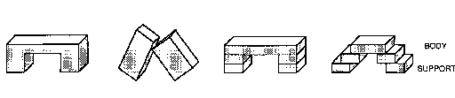
我们如何能用一个单一的统一框架(uniframe)来捕捉这么多事物的共同点？不可能——如果我们被迫用砖块及其放置方式来思考它们的话。我们之前使用的表达方式没有一个适用于所有这些拱门：既不是”三块砖”，也不是”两块砖竖立着”，也不是”支撑必须不接触”。我们如何能让我们的思想将所有这些拱门感知为相同的呢？一种方法是画出这条假想的线：
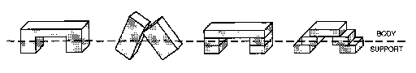
现在，突然间，所有那些不同的拱形都符合一个单一的框架——一个由两个支撑组成的单一主体。这里有两个不同的想法。第一个想法是将对象的描述分为”本质”部分，即”主体”，以及一些辅助部分，它们对应于支撑。稍后我们会看到，这本身就是一个强大的想法。第二个想法更加强大和通用：在未能找到所有这些拱形的统一描述之后,我们放弃了正在使用的方法——转而采用了一种完全不同的描述方式。简而言之，我们用新的术语[重新表述]了问题。我们最初使用的是一种基于表达单个块的精确形状的语言。我们用另一种语言替换了它，在这种语言中，我们可以谈论不局限于块本身的形状和轮廓。
重新表述显然非常强大——但如何做到这一点？人们如何找到使问题看起来更容易的新描述方式？这是否依赖于某种神秘的洞察力或某种神奇的创造性天赋——还是我们只是偶然遇到它们？正如我在讨论创造力时所说，在我看来这些只是程度问题，因为人们总是在进行各种重新表述。即使当我们思考那些最罕见、最具革命性的新想法时——它们像启示一样突然出现，为整个思想领域带来新的光明——比如进化、重力或相对论——通过事后回顾，我们通常会看到这些是人们在那之前就知道的事物的变体。然后我们必须问，为什么这些重新表述被推迟了这么久。
[天空中没有东西和西方的区别；人们从自己的头脑中创造出区别，然后相信它们是真实的。]
[—佛陀]
什么是创造力？人们如何获得新想法？大多数思想家都会同意，部分秘密在于找到”看待事物的新方式”。我们刚刚看到如何使用主体-支撑概念来重新表述一些空间形式的描述，很快我们将看到一些其他方法，用强度、容纳、因果和链条来重新表述。但首先让我们更仔细地看看我们是如何让这四个不同的拱形看起来相同的，通过让它们每一个都似乎匹配[“一个由两条腿支撑的东西”。]在[单拱]的情况下，我们通过想象一些实际上并不存在的边界来做到这一点：这有助于将一个单一对象分解为三个。

然而，我们处理塔拱的方式却恰恰相反：我们把一些真实的边界当作不存在：

这是多么随意的一种对待世界的方式，把三个不同的东西看作一个，把一个东西表示为三个！我们[总是]在改变边界！肘部从哪里开始或结束？青年何时成为成人？海洋在哪里变成海？为什么我们的头脑必须不断画线来构建我们的现实？答案是，除非我们制造那些由头脑构建的边界，否则我们永远看不到任何”东西”！这是因为我们很少看到任何东西两次完全相同。每次我们几乎肯定会从稍微不同的角度看，也许从更近或更远、更高或更低的地方，在不同的颜色或光影下，或者在不同的背景下。例如，考虑同一张桌子的这两种外观。
[当用实际的线条和表面来描述时，这些是完全不同的。但当用主体和支撑来描述时，两幅图是相同的！]
除非头脑能够丢弃每个场景中对其当前目的不重要的方面，否则我们永远无法学到任何东西。否则，我们的回忆很少会与外观相匹配。那么什么都没有意义——因为什么都不会显得永久。

[一个孩子被要求画一个人。]
[身体在哪里？为什么手臂和腿连接到头部？]
[当被问到时，许多幼儿实际上更喜欢这些，而不是大多数成年人喜欢的画。]
我们通常假设孩子看到的与我们相同，只是缺乏我们高超的肌肉技能。但这并不能解释为什么这么多孩子会画出这种特定类型的画，也不能解释为什么他们似乎对这些画如此满意。无论如何，这种现象使得孩子脑海中有一个逼真的、像图片一样的”图像”看起来非常不可能。
现在让我们考虑一个不同的想法。我们假设孩子脑海中没有任何像图片一样的东西，而只有各种”特征”必须满足的某种关系网络。例如，一个孩子的”人物绘画”特征网络可能由以下特征和关系组成：
[头部] [大的封闭图形。]
[眼睛] [两个圆圈，在头部高处。]
[嘴巴] [位于眼睛下方中心的对象。]
[身体] [大的封闭图形。]
[手臂] [两条线，附着在身体高处。]
[腿部] [两条线，附着在身体低处。]
要将此描述转换为实际绘图，孩子必须使用某种”绘图程序”。这里有一个过程，它只是像一个小计算机程序一样按顺序处理特征列表：
[1. 考虑列表上的下一个特征。]
[2. 如果这样的特征已经画出来，转到步骤3。否则画它。]
[3. 如果列表完成，停止。否则，返回步骤1。]
当孩子开始画画时，列表上的第一项是”大的封闭图形”。由于还没有这样的东西，孩子就画了一个：那就是头部。接下来画眼睛和嘴巴。但是，当要画身体特征时，程序的第2步发现”大的封闭图形”已经画过了。因此，不需要画新的，程序只是简单地进入第3步。结果，孩子继续把胳膊和腿连接到那个既被指定为身体又被指定为头部的特征上。
成年人永远不会犯这样的”错误”，因为一旦某个特征被指定代表头部，该特征就被视为”用过了”或”占用了”，不能再代表其他东西。但孩子较少有”记录”的能力或倾向。因此，既然那个”大的封闭图形”满足了对头部和身体的描述要求——尽管是在不同的时刻——就没有理由不满意。小艺术家已经满足了描述所要求的所有条件！
那种身体-头部的画对大多数成年人来说似乎很不对劲，但似乎让许多孩子感到满意。[那些孩子真的觉得它看起来像一个人吗？]这似乎是一个简单的问题，但并非如此——因为我们必须记住，孩子不是一个单一的代理(agent)，孩子心智中的其他各种代理可能根本不满意。此刻，那些其他代理不在控制之中，影响很小。然而，如果某个生物真的长成那样出现在现场，大多数孩子会感到恐惧。谈论一个人”真正”看到什么没有太大意义，因为我们有如此多不同的代理。
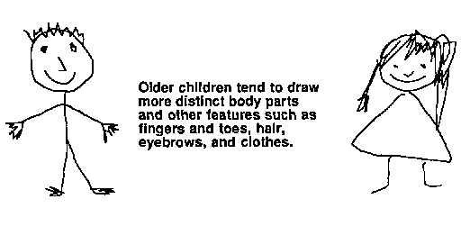
在这些年中发生了什么，使得较大的孩子把身体分开画？这可以在不改变我们在上一节中使用的特征和关系列表的情况下实现。只需要对我们绘画程序的第2步做一个小改变：
[1. 考虑列表上的下一个特征。]
[2. 画出这样一个特征，即使类似的特征已经画过了。]
[3. 如果列表完成，停止。否则，返回第1步。]
这确保了列表中提到的每个特征在绘画中只被表示一次，即使两个这样的特征看起来相似。当然，这需要一些能力来只计数每个特征一次，而不是两次。有趣的是，为了画出成熟、逼真的画，孩子可以利用它必须获得的用于正确计数事物的同类能力！
当然，我们可以用其他方式解释孩子的进步。那张新的”更逼真”的图画可能来自在特征列表中添加脖子，因为那[会]要求有单独的身体和头部。仅仅施加一个额外的约束或关系可能就足够了：[头部在身体上方。]有人可能会争辩说，较小的孩子一开始就没有一个清晰的独立身体特征概念；毕竟，有许多事情你可以用你的胳膊和腿或用你的头来做——但你的身体只会碍事。
无论如何，在掌握了制作这些身体-头部画的艺术之后，许多孩子在制作人物肖像的艺术方面似乎进步相当缓慢，这些类型的”幼稚”画常常持续数年。我怀疑在孩子们学会画可识别的人物之后，他们通常会继续面对表现更复杂场景的问题。当他们这样做时,我们应该继续欣赏孩子们处理他们为自己设定的问题的能力。他们可能不符合我们成年人的期望，但他们常常解决了我们提出的问题的他们自己的版本。
[专家是不必思考的人。他知道。]
[——弗兰克·劳埃德·赖特]
我们的肖像画孩子接下来会尝试什么？一些孩子继续努力改进他们的人物画。但他们中的大多数继续将新发现的技能用于绘制更有野心的场景，其中两个或更多图画人物互动。这涉及关于如何描绘社会互动和关系的精彩问题——这些更有野心的项目使孩子不再关注使个体的图画更精细和逼真。当这种情况发生时，父母可能会对似乎缺乏进步感到失望。但我们应该尝试欣赏我们孩子野心的变化特征，并认识到他们的新问题可能更具挑战性。
这并不意味着绘画学习停止了。即使那些孩子不再使他们的人物画更精细，他们画画的速度仍在不断提高，而且似乎更不费力。这是如何以及为什么发生的？在日常生活中，我们认为”熟能生巧”是理所当然的，重复和排练一项技能会以某种方式自动使它变得更快、更可靠。但当你想一想，这确实相当奇怪。你可能会期望，你学得越多，速度就会[越慢]——因为有更多的知识可供选择！[练习是如何加快速度的？]
也许，当我们练习我们已经能够执行的技能时，我们会进行一种特殊的学习，在这个过程中，原来的执行过程被新的更简单的过程替换或”跨接”。下面左边的”程序”显示了我们的新手肖像画家为了画每张幼稚的身体-脸必须采取的许多步骤。右边的”脚本”只显示了那些实际产生画线的步骤；这个脚本只有一半的步骤。
我们称之为”专家”的人似乎在运用他们的特殊技能时几乎不需要任何思考——就好像他们只是在阅读预先组装好的脚本。也许当我们通过”练习”来提高技能时,我们主要是在构建更简单的脚本,这些脚本不需要调动那么多代理机构(agencies)。这让我们能够用更少的”思考”来做旧事情,并给我们更多时间去思考其他事情。孩子越少考虑把每只胳膊和腿放在哪里,就有越多时间来表现画中人物实际在做什么。
我们可以从皮亚杰的另一个实验中获得关于儿童的更多见解。给孩子展示一个放在较长积木上的短积木,并要求他们画出这个场景。接下来要求孩子画一张草图,展示如果我们把上面的积木稍微向右推会发生什么。起初,结果基本符合我们的预期。
但当我们要求孩子重复做同样的事情时,我们看到了一个奇怪的结果。当顶部积木接近长积木的边缘时,它突然变短了!

要理解发生了什么,只需把自己放在孩子的位置上。你已经开始画短盒子的上边缘,但你如何决定在哪里停下来?
年幼的孩子还不太具备按比例画线的能力。相反,他们倾向于使用这样的程序:将每个新特征放置在与已经在图画中表现出来的其他特征具有某种可识别关系的位置——也就是说,放在之前已经描绘过的”容易描述的地方”。由于在长积木的中间附近没有这样的特征,孩子将在最初的几次绘画中使用相同的方法,无论是什么方法。但是长积木的末端位置很容易描述,这就是为什么年幼的孩子一旦接近那个区域就倾向于在那里停下来。皮亚杰将此称为”边界效应”(frontier effect)——将新特征放置在与其他已经表现出来的特征具有易于描述的关系的位置的倾向。
为什么孩子不能简单地复制他们看到的东西?我们成年人不理解复制实际上有多复杂——因为我们记不起在学会这样做之前是什么样子。要制作一个好的副本,孩子必须按照与所有其他线条一致的比例和方向绘制每条线。但这些幼儿几乎无法用手指描画物体的轮廓;他们当然不能在心理上将整个图形形状从一个位置传送到另一个位置。所以对孩子来说,做成年人可能认为更”抽象”的事情实际上更容易:首先构建场景中所涉及关系的心理描述,然后设计一个绘图方案来表示这些关系。制作我们认为是简单的复制或模仿可能比制作我们认为是”抽象”的表现需要更多技能!
有时当我们观看一个场景时,我们看到的整体恰好”加起来”等于其各个部分的总和。但在其他时候,我们不介意某些东西被计算两次。在下面的第一个图中,我们将一个拱门分为主体和支撑,不关心两个部分是否具有完全相同的边界。在第二个图中,我们似乎看到两个完整的拱门,尽管事实上没有足够的腿来制作两个独立的拱门。
有时跟踪计数、让每样东西只计算一次是至关重要的。但在其他情况下,计算两次也不会造成任何伤害。在为汽车道路制作高架桥时,使用同一块积木两次是高效的。但如果我们试图用同样的五块积木建造两座独立的桥,我们最终会发现积木不够用。不同类型的目标需要不同风格的描述。当我们讨论”更多”(More)的概念时,我们看到每个孩子必须学会何时根据外观描述事物,何时根据过去的经验思考。双拱门问题也提供了描述风格的选择。如果你计划建造几个独立的东西,你最好仔细计数,否则就要冒着用完零件的风险。但如果你一直这样做,你就会错过让一个物体同时服务于两个目的的机会。
我们也可以将此表述为结构性描述和功能性描述之间的选择。假设我们试图在双拱门的结构元素和两个独立积木拱门的结构元素之间进行匹配。在一种方法中,我们首先将三块积木分配给每个拱门——然后验证每个拱门由一个顶部和两块不接触的积木支撑组成。然后,当然,我们只会找到一个三块积木的拱门。没有第二个拱门,因为只剩下两块积木了。
另一方面,我们可以基于更具功能性的主体-支撑风格描述来描述双拱门场景。根据这种方法,我们必须首先关注最”基本”的部分。拱门最基本的部分是它的顶部积木——我们确实找到了两块可以作为顶部积木的积木。然后我们只需验证它们每一个都由两块不接触的积木支撑——这确实是事实。在面向功能的方法中,仔细计数最基本的元素似乎是很自然的,但只需验证辅助元素的功能将以某种方式得到满足。功能型描述更容易适应高级代理机构的目的。这并不意味着功能性描述一定更好。它们可能使跟踪真实约束变得困难;因此它们有一定的倾向导向过度乐观的一厢情愿的想法。
[在那个学术范式][中世纪的”冲力”理论][被发明之前，科学家们看到的并不是钟摆，而只是摇摆的石头。……然而，我们真的需要把伽利略与亚里士多德的区别，或拉瓦锡与普利斯特里的区别，描述为视觉的转变吗?这些人在观察同样的物体时，真的看到了不同的东西吗?……]
[我深知这样说会带来困难:当亚里士多德和伽利略观察摇摆的石头时，前者看到的是受限的下落，后者看到的是钟摆。尽管如此，我确信我们必须学会理解至少类似这样的句子。]
[— 托马斯·库恩]
当我们无法解决一个问题时，我们能做什么?我们可以尝试找到一种新的方式来看待它，用不同的术语来描述它。重构(Reformulation)是试图摆脱看似绝望处境的最强大方法。因此，当我们无法找到所有不同类型拱门的共同点时，我们改变了观察它们的方式。我们从刚性的几何块描述的世界转移到一个限制较少的身体-支撑描述领域——在那里我们找到了一种为所有拱门建立统一框架(uniframe)的方法:由一对腿支撑的跨体。但想想一个人可能描述拱门的所有其他方式。
美学的:[一种令人愉悦的、优美的形式。]
动力学的:[如果移除任何一条腿，顶部就会掉落。]
拓扑学的:[拱门围绕着空间中的一个洞。]
几何学的:[三个块形成一个”倒U”形。]
建筑学的:[拱门的顶部可以成为其他东西的基座。]
构造学的:[放置两个块，然后在它们的顶部放置另一个。]
绕行的:[可以用作绕道，绕过障碍物。]
运输的:[可以用作桥梁，从一个地方到另一个地方。]
每一种描述都涉及一个不同的思维”领域”，有其自己的描述事物的风格。每个不同的思维领域都可以为问题带来新的技能。我们每个人都学习各种关于路径和障碍的推理方法;我们每个人都学习处理垂直支撑的方法;处理门窗;处理盒子、桥梁和隧道;处理堆叠、行列、楼梯和斜坡。
对于局外人来说，似乎一个有创造力的发明家(或设计师或思想家)必须拥有无穷无尽的新方法来处理事物。然而在发明家的头脑中，这一切可能源于更少主题的变化。实际上，在那个发明家看来，那些思维方式可能看起来如此清晰(那些发明都如此相似)，以至于问题反过来了:[“为什么局外人不理解如何思考这些简单类型的问题?”]从长远来看，最有成效的思维类型不是我们用来解决特定问题的方法，而是那些引导我们形成有用的新描述类型的方法。
我们如何重构?每种新技术大概都是从利用其他更古老的代理机构中已经学到的方法开始的。所以新想法往往植根于旧想法，为新目的而改编。在下一节中，我们将看到身体-支撑概念在几乎每个思维领域都有对应物。在本书接近尾声时，我们将推测这些不同的领域本身是如何在心智中进化的。
我们能够通过将每个拱门分为身体(Body)和支撑(Support)来为许多类型的拱门建立统一框架。看看这种技术在许多其他类型的事物上有多好用。
是什么让这些简单的划分看起来有意义?这是因为我们可以为每个部分想象目的。在日常生活中，将桌子分为”桌面”和”腿”具有特殊意义。这是因为桌面服务于我们使用桌子的主要目的，作为[“放东西的地方。”]桌子的腿只服务于次要目的:没有那些腿，桌面会掉下来——但没有桌面，桌子根本没有用处。垂直地将桌子切成两半，将其视为[两个粘在一起的L形部分]是没有意义的。
这一定是身体-支撑概念看起来如此普遍的原因之一。这不仅仅是物理支撑的问题:更深刻的想法是在事物和目的之间建立心理桥梁。这就是为什么桥接定义(bridge-definitions)如此有用:它们帮助我们将结构描述与心理目标联系起来。但重点是，仅仅将两个不同世界的描述联系在一起是不够的——[“由腿支撑的顶部”]和[“放东西的地方。”]仅仅知道桌子让东西离开地板是不够的。要使用这些知识，我们还必须知道它[如何]完成:东西必须放在桌子上，而不是，例如，放在桌子腿之间。
这就是身体-支撑表示帮助我们分类知识的地方。“身体”代表结构中那些作为实现目标的直接工具的部分，“支撑”代表所有其他仅仅服务于该工具的特征。一旦我们可以将桌面分类为桌子的”身体”，我们就会倾向于只考虑使用桌面来让东西离开地板。当然，如果我们理解那些支撑[如何]帮助身体的目标，我们会获得更多力量;也就是说，通过理解桌子的腿是为了让桌面本身远离地板。理解[这一点]的一个好方法是想象如果桌子的一条腿未能执行其功能会发生什么。
[要理解某物如何工作，了解它如何失效会有帮助。]
我们如何将我们拥有的事物与我们想要实现的目标联系起来？答案是：我们有很多方法！每种用途或目的都可能暗示某种相应的分解方式——在每种这样的视角中，都会有一些看似”最本质”的部分。在这样的视角下，这些部分似乎直接服务于目标；其余部分则看起来像是次要部分，只是支持主要部分的作用。我们不仅在物理领域这样做，在许多其他领域也是如此。
这些哑铃式区分中的每一个都有自己的风格来区分本质部分和支持部分。即使在物理事物的世界中，我们也可以用不同的方式应用这些不同的心理视角。例如，有很多方法来描述站在桌子上以便够到更高的地方这一行为。
[支持] [桌子将东西托离地面。]
[功能] [桌子用于支撑东西。]
[结论] [如果你把东西放在桌子上，它的高度就会增加。]
[因果] [我能够到更高的地方，因为我从更高的地方开始。]
[手段-目的] [如果我想够到更高的地方，我可以站在桌子上。]
即使我们只是简单地把东西放在桌子上，我们也可能同时使用几种这样的描述——也许是在大脑的不同部分。我们理解的质量取决于我们在这些不同领域之间移动的能力。为了能够轻松地从一个领域转换到另一个领域，我们必须发现系统性的跨领域对应关系。然而，找到这些对应关系很少见。通常，情况就像我们在椅子和游戏中发现的那样：一个世界中的每个描述元素对应于另一个世界中难以描述的结构积累。身体支撑概念的非凡之处在于它经常导致系统性的跨领域对应关系。例如，我们可以用它将建筑领域中的”被支撑”转换为几何领域中的”下方的水平表面”。诚然，这种对应关系无法表示通过从上方悬挂来支撑物体的可能性。但一些例外是不可避免的。
我们系统性的跨领域转换是富有成效的隐喻的根源；它们使我们能够理解我们从未见过的事物。当某些东西在我们的一个描述世界中看起来完全陌生时，当转换到其他世界时，它可能会变得像我们已经知道的东西。
现在，在你翻到下一页之前，试着解决这个谜题。
大多数人发现九点问题很难解决，因为他们假设这些点形成了一个限定工作空间的正方形。实际上，除非绘图可以延伸到该区域之外，否则问题无法解决。因此，如果不将这些点视为形成正方形，问题会更容易解决。我们经常自我施加假设，使我们的问题变得更加困难，而我们只能通过重新表述这些问题来摆脱这种困境，从而给自己更多的空间。
[这个问题的难度似乎更多是伦理上的而非概念上的。超出正方形的范围感觉像是”作弊”。]
实际上，一开始就从来没有正方形——也就是说，在”具有相等边长的矩形”的字面意义上。是什么让我们将这么多不同种类的东西都看作正方形？

这些正方形中有些没有角，有些没有边，有些既没有角也没有边！是什么让我们将它们都看作正方形？心理学家长期以来一直想知道我们如何识别这种相似性，但经常忘记问我们一开始如何识别最简单形式的正方形。在识别中，是特定特征还是整体形状先出现？这一定取决于人的心理状态。我们从一个时刻到另一个时刻感知世界的方式，部分取决于从我们眼睛进来的东西：我们认为我们看到的其余部分来自我们大脑内部；我们不仅对视觉特征做出反应，而且对我们以前见过的东西的记忆以及我们对应该看到什么的期望做出反应。
人们很容易假设我们的视觉过程只在一个方向上工作，将信息从世界带入大脑：
[世界 ⮕ 感觉(Sensation) ⮕ 知觉(Perception) ⮕ 识别(Recognition) ⮕ 认知(Cognition)]
但这并不能解释为什么我们看到的东西会受到我们期望看到的东西的影响。人类视觉必须以某种方式将来自外部世界的信息与我们记忆中的结构结合起来。情况必须更像这样：
[感觉(Sensation) ⮕ 描述 ← 期望]
一旦你将九点问题放入一个更大的框架中，你就可以用常规方式解决它，只需要一点点思考。是什么让你能够如此轻松地重新表述这样复杂的场景——一旦你想到这样做？这一定是因为你的大脑不断地通过在不同类型的描述之间建立联系来准备做这些事情的方法。然后，当你最终改变你的视角以寻找另一种看待事物的方式时，你可以像打开开关一样轻松地应用一生的经验。
这把我们带回到何时尝试成为还原论者(Reductionist)或小说家(Novelist)的问题。在以某种方式做事上投入了大量精力后，你如何决定何时放弃？在你可能找到答案之前就丢弃所有这些工作是不好的——但无法确定何时会发生。人们是否应该总是试图打破他们建立良好的、自我创造的心理束缚，并试图以不那么受限的方式思考？当然不是。这样做通常弊大于利。
然而，当你真的陷入困境时，不妨尝试一些更大胆的方法来寻找新思路。你甚至可以考虑使用一些系统化的、类似治疗的方法，这些方法被称为头脑风暴(brainstorming)、横向思维(lateral thinking)、冥想(meditation)等等。当人们严重受阻时，这些方法可以通过鼓励寻找新的表述方式来提供帮助。然而，当你切换到不熟悉的视角时，虽然可能获得新想法，但也会让自己处于新手的境地；你会变得不太能够判断哪些新想法可能与你的旧技能相兼容。
无论如何，你都不能太快地想：“怎么没有立刻看到这一点，真是太愚蠢了！”记住例外原则：仅仅为了适应一次奇怪的经历就大幅改变自己可能是鲁莽的。过分认真对待每一个例外，就会冒着失去以往经验证明最常有效的一般规则的风险。你还必须特别警惕那些你”总是”可以使用的方法：
放弃你正在做的事。
找一个更简单的问题。
休息一下。之后你会感觉好些。
简单地等待。最终情况会改变。
重新开始。下次事情可能会更顺利。
这些方法太过笼统；它们是人们总能做的事，但并不特别适用于任何特定问题。有时它们可以帮助我们摆脱困境，但必须将它们排除在常规思考之外——或至少给予低优先级。我们”总是”能做的事恰恰是我们应该很少做的事，这并非偶然。
凡有的，还要加给他；没有的，连他所有的也要夺去。
——圣马太
有些想法获得了过度的影响力。身体支撑想法的突出地位是当之无愧的；没有其他方案能比得上它帮助我们将事物连接成因果链的能力。但还有其他一些不那么光彩的方式让想法聚集影响力。
投资原则：我们最古老的想法相对于后来的想法具有不公平的优势。我们越早学习一项技能，就能获得越多使用它的方法。然后，每个新想法都必须与旧想法积累的更大量技能竞争。
这就是为什么用旧方法做新事情要容易得多。每个新想法，无论原则上多么好，在我们掌握它之前都显得笨拙。所以旧想法不断增强，而新想法很少能赶上。此外，我们最古老和最发达的技能将首先扩展到其他思维领域，在那里它们又会远远领先，使任何新想法都无法扎根。
在短期内，使用旧想法通常比重新开始做得更好。如果你已经能很好地弹钢琴，就很容易以同样的方式开始弹风琴。许多表面的相似性会使你难以分辨旧技能的哪些方面不合适，而最简单的做法是继续应用旧技术，试图修补每个缺陷直到没有缺陷显露。从长远来看，你可能最好用新技术重新开始——然后从旧技能中借鉴你能借鉴的东西。问题是”我们几乎总是沉浸在’短期’中。“因此，投资原则和例外原则都使我们不愿改动我们完善的技能和单一框架(uniframes)，以免危及我们在这些旧基础上建立的一切。我并不是说原则上使用你熟悉和已知的东西有什么错。但仅仅通过积累回避缺陷的方法来支持你的旧想法是危险的。这只会增加旧想法战胜新想法的力量，并可能导致你的思维方式随着时间的推移越来越基于越来越少的东西。
进化论说明了过程如何被投资原则所奴役。为什么这么多动物的大脑都包含在头部——如鱼类、两栖动物、爬行动物、鸟类和蝙蝠？这种安排早在我们最早的水生祖先在三亿年前第一次爬上陆地之前就被继承了。对于许多这些动物——例如啄木鸟——另一种安排可能至少同样有效。但一旦在头部集中如此多功能的模式建立起来，它就带来了涉及解剖学许多方面的巨大依赖网络。因此，任何改变这种安排任何部分的突变都会破坏许多其他部分，并导致可怕的障碍，至少在进化的短期内是如此。而且由于进化本质上如此短视，即使在更长的时间跨度内，这种变化可能带来优势，也无济于事。也许最好的例子可以从这样一个事实中看出：地球上每种植物和动物的几乎每个细节都是用一个十亿年来几乎没有改变过一个比特的遗传密码写成的。这似乎不是一个特别高效或可靠的代码，但如此多的结构都基于它，以至于所有生物都被它困住了！改变该代码的任何一个细节都会导致如此多的蛋白质纠缠在一起，以至于任何一个细胞都无法存活。
作为重新表述的一个例子，我们将以具有目标的机器的形式来表示盒子的概念。我们可以用这个来理解”手变”(Hand-Change)现象。是什么让”积木拱门”(Block-Arch)困住一个人的手臂，使得除了撤回之外没有办法逃脱？一种解释方法是将拱门想象成由四个潜在障碍组成——也就是说，如果我们包括地板的话。
障碍物是干扰朝某个方向移动这一目标的物体。被困住意味着无法朝任何可接受的方向移动。为什么方块拱门会形成陷阱?最简单的解释是，它的四个面分别是独立的障碍物，阻止我们朝某个方向逃脱。(就我们目前的目的而言，我们将把手向前或向后移动视为不可接受的。)因此我们被困住了，因为只有四个可接受的方向——上、下、左或右——而每个方向都被单独阻挡了。然而，从心理学角度来看，这个解释中缺少了一些东西:它并没有完全描述我们被困住的感觉。当你被困在一个盒子里时，你会觉得有什么东西在试图把你留在那里。盒子似乎不仅仅是它分开的各个面；你不会觉得被任何特定的一面困住。这更像是一种合谋，其中每个障碍物都因为所有其他障碍物共同阻止你绕过它而变得更加有效。在下一节中，我们将组建一个代理机构来表示这种主动的挫折感，展示这些障碍物如何合作将你困在里面。
为了表示陷阱或封闭的概念，我们首先需要一种方法来表示容器的概念。为了简化问题，我们不会尝试处理真正的六面三维盒状容器，而只考虑二维的四边矩形。这将让我们继续使用方块拱门统一框架，加上那个额外的边来表示地板。
为什么如此关注容器的概念?因为没有这个概念，我们几乎无法理解空间世界的结构。实际上，每个正常的孩子都会花大量时间学习空间围合形状——作为容纳、保护或禁锢物体的物理工具。但同样的概念不仅在物理上很重要，在心理上也很重要，作为一种心理工具来设想和理解其他更复杂的结构。这是因为”所有可能方向的集合”这个概念是可以在许多不同思维领域使用的伟大的、连贯的、跨领域对应关系之一。
当生活把我们困住时，我们的智慧会开辟一个出口，因为，尽管对于单恋没有补救办法，但人们可以从痛苦中解脱出来，即使只是通过汲取它所教导的教训。智慧在生活中不承认任何没有出路的封闭局面。
——马塞尔·普鲁斯特
盒子是如何把东西困在里面的?几何学是理解形状的好工具，但仅凭它自己无法解释手部变化之谜。为此，你还必须知道移动是如何工作的！假设你把一辆车推过那个方块拱门。你的手臂会被禁锢住，直到你把它拉出来。你如何理解这其中的原因?下面的图表描述了一个代理机构，它表示手臂在矩形内可以移动的几种方式。顶层代理移动有四个子代理:左移、右移、上移和下移。(和之前一样，我们将忽略在三维空间中进出移动的可能性。)如果我们将这些子代理中的每一个连接到我们四边盒框的相应边，每个代理将能够测试手臂是否可以朝相应方向移动(通过查看那里是否有障碍物)。然后，如果每个方向都被阻挡，手臂就根本无法移动——这就是我们所说的”被困住”。
“—o”符号表示每个盒框代理都连接到抑制移动的相应子代理。左边的障碍物会使左移进入无法移动状态。如果所有四个障碍物都存在，那么所有四个盒框代理都将被激活；这将抑制移动的所有代理——这将使移动本身处于无法移动状态——我们就知道陷阱已经完成了。但是，如果我们看到一个无顶拱门，那么上移代理就不会被抑制，移动也不会瘫痪！这提示了一种从无顶拱门逃脱的有趣方法。首先你想象被困在一个盒框里——你知道那是无法逃脱的。然后，由于顶部方块实际上是缺失的，当你的视觉系统寻找实际障碍物时，将不会有信号来抑制上移代理。因此，移动可以激活该代理，你的手臂将自动向上移动以逃脱！
这种方法具有矛盾的特性。它首先假设逃脱是不可能的。然后这种悲观的心理行为——想象自己的手臂被困住——直接导致找到出路。我们通常期望以更积极、目标导向的方式解决问题，通过比较我们拥有的和我们希望的——然后消除差异。但在这里我们做了相反的事情。我们将自己的困境不是与我们想要的进行比较，而是与更糟糕的情况——最不理想的反目标(antigoal)进行比较。然而，即使这样实际上也能有所帮助，通过展示当前情况如何无法匹配那个绝望的状态。哪种策略最好使用?两者都依赖于识别差异和知道哪些行动会影响这些差异。当一个人看到几条路可走——只需选择最好的时，乐观策略是有意义的。悲观策略应该保留用于当一个人完全看不到出路时，当事情看起来真的绝望时。
向左、向右、向上或向下移动有什么特别之处？起初人们可能会认为这些概念只适用于二维空间中的运动。但我们也可以将这种方框架用于许多其他思维领域，[用来表示成对原因如何相互作用。]什么是交互作用呢？我们说当多个原因结合在一起时，如果它们产生的效果是任何单一原因都无法单独产生的，那么这些原因就发生了交互作用。例如，通过结合水平和垂直运动，我们可以到达仅用其中一种运动无法到达的地方。我们可以使用带有类似指南针标签的图表来表示这种组合的效果。
我们身体的许多关节可以同时朝两个独立的方向移动——膝盖不行，但手腕、肩膀、髋关节、脚踝、拇指和眼睛肯定可以。我们如何学会控制这些复杂的关节？我的假设是，我们通过训练小型交互方阵(interaction-square)代理来做到这一点，这些代理首先学习九种可能的运动组合中的每一种。我怀疑我们也将许多非物理技能建立在交互方阵阵列的基础上因为这是表示两个原因相互作用时会发生什么的最简单方法。
考虑一下我们”更多社会”(Society-of-More)中的[空间]代理实际上并不真正涉及空间，而是涉及像[高]和[瘦]这样的代理之间的交互作用。如果有人告诉你物体A比另一个物体B既更高又更宽，你可以确定A”更多”。但如果有人告诉你A比B更高更瘦，你就无法确定哪一个”更多”。交互方阵阵列提供了一种便捷的方式来表示所有可能的组合：
如果方阵可以表示[成对]原因如何交互作用，那么类似的方案能否用于三个或更多原因？这可能需要太多”方向”而不太实用。我们需要二十七个方向来表示三个交互原因，需要八十一个方向来表示四个。似乎人们很少同时处理两个以上的原因；相反，我们要么找到重新表述这种情况的方法，要么积累部分填充的交互方阵的无序社会，这些方阵只涵盖最常遇到的组合。
[但如果这是真的，我们是否会陷入哲学家所说的无限回归(infinite regress)，即用需要同样解释的更早的事物来解释一件事？]
[如果康斯特布尔是通过庚斯博罗的画作来看英国风景的，那庚斯博罗本人呢？]我们[可以回答这个问题。庚斯博罗是通过他刻苦研究和临摹的荷兰画作来看东安格利亚低地风景的……那么荷兰人从哪里得到他们的词汇？这类问题的答案正是被称为”艺术史”的东西。]
[——贡布里希]
我们通常认为意识就是知道此时此刻我们头脑中正在发生什么。在接下来的几节中，我将论证意识并不关乎现在，而是关乎过去：它与我们如何思考近期思维的记录有关。但思考思维本身如何可能呢？
[描述意识有些奇怪：无论人们想说什么，他们似乎就是无法说清楚。这不像感到困惑或无知。]
[相反，我们觉得自己知道正在发生什么，但无法恰当地描述它。怎么会有东西看起来如此接近，却总是超出我们的掌握？]
从简单的意义上说，思考一个思维与思考一个普通事物并无太大不同。我们知道某些代理必须学会识别甚至命名——触摸手或耳朵的感觉。同样，一定有其他代理学会识别大脑[内部]的事件——例如，管理记忆的代理的活动。而这些，我认为，就是我们认识到的意识的基础。
在大脑内部感知事件的想法并无特别之处。代理就是代理——对于一个代理来说，连接到检测[大脑引起的大脑事件]与检测[世界引起的大脑事件]一样容易。实际上，我们的代理中只有一小部分直接连接到外部世界的传感器，比如那些从眼睛或皮肤发送信号的传感器；大脑中的大多数代理检测的是大脑内部的事件。但我们在这里特别关注那些参与使用和改变我们最近记忆的代理。这些是意识的根源。
例如，为什么当我们对某些事物更有意识时，我们对其他事物的意识会减少？这肯定是因为某种资源正在接近某种限制，而我将论证这就是我们保持近期思维良好记录的有限能力。例如，为什么思维常常似乎以串行流的形式流动？这是因为每当我们空间不足时，我们近期思维的记录就必须替换掉旧思维的记录。为什么我们对如何获得新想法如此不了解？因为每当我们解决难题时，我们的短期记忆如此专注于[做]，以至于它们既没有时间也没有空间来保持自己所做事情的详细记录。
当我们试图思考我们最近的想法时会发生什么?我们检查我们最近的记忆。但这些记忆已经涉及到我们正在”思考”的内容——而且任何自我检查的探测都容易改变它正在观察的东西。然后系统很可能会崩溃。描述具有稳定形状的东西已经够难的了;描述在我们眼前改变形状的东西更难;而说出那些每次我们试图思考它们时就变成别的东西的事物的形状几乎是不可能的。这就是当我们试图思考我们当前的想法时会发生的事情——因为每一个这样的想法都必然会改变我们的心智状态!任何改变它正在观察的东西的过程难道不会变得混乱吗?在这种困境中,人们怎么可能清楚地表达呢?
我们所说的”感知力(sentience)“、”意识(consciousness)“或”自我意识(self-awareness)“等词是什么意思?它们似乎都指的是感受到自己心智运作的那种感觉——但除此之外,很难说它们的含义是否有任何区别。例如,假设你刚才笑了,有人问你是否意识到了这一点。这个问题如何提出几乎无关紧要:
“你刚才笑了吗?”
“你意识到你刚才笑了吗?”
“你记得笑了吗?”
“你有意识地这样做了吗?”
“你察觉到了吗?”
这些问题中的每一个实际上都在问你能说出关于你最近的心智过去的什么。为了让你如实地回答”是的,我知道我笑了”,你的言语代理(speaking-agencies)必须使用一些关于某些代理近期活动的记录。但是你所说和所做的一切中涉及的所有其他活动呢?如果你真的有自我意识,你不是也应该知道所有那些其他的事情吗?有一个常见的迷思认为我们视为意识的东西是深不可测且强大的——然而实际上,我们几乎不知道在我们大脑的巨大计算机中发生了什么。我们怎么能思考,却不知道什么是思考?我们怎么能有这么好的想法,却无法说出什么是想法或它们是如何产生的?
为什么谈论我们当前的心智状态如此困难?我们已经看到了几个原因。一个原因是心智不同部分之间的时间延迟意味着”当前状态”的概念在心理学上并不可靠。另一个原因是每次试图反思我们的心智状态都会改变那个状态,这意味着试图了解我们的状态就像拍摄移动太快的东西:这样的照片总是会模糊。无论如何,我们首先并不太关心学习如何描述我们的心智状态;相反,我们更多地从事实际的事情,比如制定计划并执行它们。
对我们来说,有多少真正的自我洞察是可能的?我确信我们的记忆机制(memory-machinery)提供了一些有用的线索,只要我们能学会解释它们。但是心智的任何部分不太可能获得关于其他部分发生的事情的完整描述,因为看起来,我们的记忆控制系统甚至没有足够的临时记忆来详细表示它们自己的活动。
为了让心智思考,它必须处理其心智状态的片段。假设你想重新布置你熟悉的一个房间里的家具。你的注意力不断转移,先是一个角落然后是另一个角落,接下来是房间的中心,然后也许是光线如何照在架子上的某个物体上。不同的想法和图像相互打断。在某一时刻,似乎你的整个心智都集中在一个小细节上;在另一时刻,你可能会思考为什么你首先要考虑那个房间;然后你可能会发现自己在比较或对比那个场景的两种不同布置:“如果那张沙发放在这里,就会有空间让客人聊天——但不行,那会挡住路,使他们无法进入。”
我们的各种代理如何跟踪场景中的想象性变化?当不同的版本不在脑海中时,它们去了哪里,我们如何再次找回它们?它们必须作为记忆存储。但我们所说的这个是什么意思?一些读者可能会惊讶地得知,生物学家仍然没有关于当记忆形成时我们大脑中发生了什么的公认理论。然而,心理学家确实同意必须至少有两种不同的机制。我们似乎有”长期记忆(long-term memories)“,可以持续数天、数年或一生。我们也有”短期记忆(short-term memories)“,只持续几秒钟或几分钟。在接下来的几节中,我们将主要讨论这些关于我们最近想法的短暂痕迹的用途。例如,每当我们在解决问题的过程中遇到困难时,我们需要能够回溯、修改我们的策略并再次尝试。为此我们需要那些短期记忆,哪怕只是为了不重复同样的错误。
我们记住了多少?有时我们通过记住我们不知道自己知道的事情而让自己感到惊讶。这是否意味着我们记住了一切?心理学中一些较早的理论假设这是真的,并且有许多关于拥有非凡能力的人的传说。例如,我们经常听说有”照相记忆(photographic memories)“的人,使他们能够在几秒钟内快速记住复杂图片或文本页面的所有细节。据我所知,所有这些故事都是没有根据的神话,只有专业魔术师或江湖骗子才能进行这样的演示。
无论如何，我怀疑我们从未真正记住太多关于某个特定体验的内容。相反，我们的各种代理机构会选择性地、无意识地决定，仅将某些状态转移到长期记忆中——可能是因为它们被归类为有用的、危险的、不寻常的，或者在其他方面具有重要性。如果我们只是简单地维护大量未分类的记忆，而每次需要某个记忆时都必须搜索所有记忆，那将毫无用处。让它们同时涌入我们的代理机构也同样无用。相反，我们每个人都必须开发富有成效和有效的方法来组织我们的记忆——但如何做到这一点是意识无法触及的。什么障碍使我们无法知道这些事情？接下来的几节概述了一些理论，既关于我们的记忆系统如何工作，也关于为什么我们无法通过检查自己的思想直接发现这一点。
向任何人询问童年的记忆，每个人都会轻易地讲出一些这样的故事：
我四岁时邻居的父亲去世了。我记得和朋友坐在他们家门前，看着人们来来往往。很奇怪。没有人说任何话。
很难区分记忆和记忆的记忆。事实上，几乎没有证据表明我们成年后的任何记忆真的可以追溯到婴儿时期；那些看似早期的记忆可能只不过是对我们较早思想的重构。首先，我们对头五年的回忆似乎奇怪地孤立；如果我们问那天早些时候发生了什么，答案几乎总是”我不记得了”。此外，许多早期记忆涉及的事件如此重要，以至于它们可能在多年的时间里反复占据孩子的思想。最可疑的是，这些回忆经常被描述为通过其他、更年长的眼睛看到的——叙述者被描绘在场景内部，就在舞台中央附近。由于我们从未真正看到自己，这些必定是重构的记忆，自婴儿期以来经过反复排练和重新表述。
我怀疑这种”婴儿期失忆症”不仅仅是时间衰退的效应，而是走出婴儿期的必然结果。记忆不是一个独立的实体，与它如何作用于心智无关。要记住早期的体验，你不仅必须能够”检索”一些旧记录，还要重构你早期的心智如何对它们作出反应——而要做到这一点，你必须再次成为婴儿。要超越婴儿期，你必须牺牲你的记忆，因为它们是用一种你后来的自我无法再阅读的古老文字写成的。
我们也在重构我们最近的记忆，因为它们描绘的不是我们看到的东西，而是我们识别出的东西。从每一刻到下一刻，你的心理状态不仅受到外部世界信号的塑造，还受到这些信号唤起的记忆激活的代理的塑造。例如，当你看到一把椅子时，是什么让它在你看来是一把椅子——而不是一堆木棍和木板？它必须唤起一些记忆。你的印象只有一部分来自直接由你的视觉激活的代理；你的高层代理机构体验到的大部分内容来自这些视觉代理激活的记忆。通常，我们对这种情况的发生没有意识感知，当这个过程快速而安静地工作时，我们从不使用”记忆”或”记住”这样的词；相反，我们说”看见”或”识别”或”知道”。这是因为这些过程留下的痕迹太少，以至于心智的其他部分无法思考；因此，这些过程是无意识的，因为意识需要短期记忆。只有当识别涉及大量时间和努力时，我们才说”记住”。
那么我们所说的”记忆”是什么意思？我们的大脑使用许多不同的方式来存储我们过去的痕迹。除非只在一般的、非正式的意义上使用，否则没有单一的词可以描述这么多东西。
记忆是使我们的一些代理以与过去各个时期大致相同的方式行动的过程。
每个人都会欣然承认，当一个人感受到过热的痛苦或适度温暖的愉悦时，心智的感知与他后来通过记忆回忆起这种感觉或通过想象预期这种感觉时，存在相当大的差异。这些能力可以模仿或复制感官的知觉；但它们永远无法完全达到原始情感的力量和生动性……最生动的思想仍然不如最迟钝的感觉。
—— 大卫·休谟
我们喜欢把记忆想象成能够恢复我们过去所知道的东西。但记忆无法真正把东西带回来；它们只是再现我们以前心理状态的一些片段，当时各种景象、声音、触感、气味和味道影响着我们。那么是什么使一些回忆看起来如此真实？秘密在于实时体验同样是间接的！无论如何，我们最接近理解世界的方式是通过我们的代理做出的描述。事实上，如果我们转而询问为什么真实的东西看起来真实，我们会看到这同样取决于我们已经知道的东西的记忆。
例如，当你看到一部电话时，你不仅对你能看到的方面——它的颜色、质地、大小和形状——有感知，而且对把听筒举到耳边的感觉也有感知。你似乎也立即知道电话是用来做什么的：你在这里说话，在那里听；当它响时你接听它；当你想打电话时你拨号。你对它的重量、它是软还是硬、它的另一面是什么样子都有感知——尽管你还没有触摸过它。这些理解来自记忆。
内在性错觉(Immanence Illusion)：[每当你能够毫无明显延迟地回答一个问题时，似乎答案已经在你的脑海中活跃着。]
这部分解释了为什么我们觉得所看到的东西”存在”于此时此地。但事实并非如此——每当一个真实物体出现在我们眼前时，关于它的完整描述并不会立即可用。我们对瞬时心理时间的感知是有缺陷的；我们的视觉代理(vision-agencies)在自己的工作完全完成[之前]就开始唤起记忆。例如，当你看到一匹马时，对其整体形状的初步识别可能会导致一些视觉代理在其他视觉代理辨别出马的头部或尾部之前就开始唤起关于马的记忆。感知可以如此快速地唤起我们的记忆，以至于我们无法区分我们所看到的和我们被引导去回忆的东西。
这解释了看见和记忆之间的一些主观差异。如果你首先[想象]一部黑色电话，你可能不会觉得很难将其重新想象为红色。但当你[看到]一部黑色电话然后试图将其想象为红色时，你的视觉系统会迅速将其改回来！因此，看见事物的体验具有相对刚性的特征，与想象事物的体验形成对比。你大脑其余部分试图强加给视觉代理的每一个变化都会遭到抵抗并通常被逆转。也许正是这种描述性刚性让我们识别出”生动性”或”客观性”。我并不是说这通常是一种错觉，因为它往往真实地反映了实际物理对象的持续性和永久性。不过，有时候我们的客观感可能会被颠倒——比如当一种态度或记忆变得比它所代表的东西更稳定和持久时。例如，我们对所爱或所憎之物的态度往往比那些事物本身更不易改变——特别是在其他人的个性方面。在这样的情况下，我们的私人记忆可能比现实更加刚性。
我们经常谈论”记忆”，好像它是一个单一明确的东西。但每个人都有多种记忆。我们知道的某些事情似乎完全脱离时间，比如12英寸等于1英尺或公牛有危险的角这样的事实。我们知道的其他事情似乎与特定的时间或空间跨度相关，比如对我们曾经居住过的地方的记忆。还有一些回忆似乎像我们可以重新体验的片段纪念品：[“有一次，在拜访祖父母时，我爬上了一棵老苹果树”]
[大脑没有单一的、通用的记忆系统。相反，大脑的每个部分都有几种以稍微不同的方式工作的记忆代理(memory-agencies)类型，以适应特定目的。]
为什么我们有这么多种记忆？如果记忆是我们早期时间心理状态的记录，这些记录是如何被储存和保存的？关于记忆的一个流行形象是，它们像我们储存在大脑各个”位置”的物品。但那么这些位置是什么样的？记忆如何进入和出来？在它们被储存的保险库里发生了什么？记忆库是像时间静止的冷冻柜，还是其内容会相互作用？我们的旧记忆能保留多久；其中一些会变老和死亡吗，它们会变弱和消退吗，还是只是丢失而永远找不到？
我们有这样的印象：即使是我们的长期记忆随着时间的推移也变得更难回忆，这可能导致我们假设它们有某种固有的消退倾向。但即使这也是不确定的；这可能仅仅是因为太多其他记忆开始干扰它们。最有可能的是，某些类型的记忆机制(memory mechanisms)只保留感觉的记录几秒钟；我们使用其他机制来采纳只保持几天或几周的习惯、目标和风格；我们建立持续几个月或几年的个人依恋。然而，不时地，我们会突然修改一些直到那时似乎相当永久的记忆。
关于存在多种记忆的更多证据来自大脑的意外损伤。一种损伤可能导致处理名字的能力丧失；另一种损伤可能使你失去识别面孔或记住音乐曲调的某些能力；还有其他类型的损伤可能会让你在早期时间学到的东西保持不变，但阻止你在某个特定领域学习更多。有证据表明，长期记忆根本无法形成，除非它们的短期前身被允许持续一定的时间间隔；这个过程也可能被各种药物和损伤阻断，这就是为什么有些人永远无法回忆起大脑脑震荡前几分钟发生的事情。
最后，似乎我们构建长期记忆的速度存在很强的限制。尽管有关于神童的所有传说，但任何精心设计的实验似乎都没有证据表明，任何人能够在任何实质性的时间间隔内，以比普通人快两到三倍的速度持续构建长期记忆。
让我们回到移动心理家具的问题。想象移动房间里的物品需要什么？首先，我们需要某种方式来表示物体在空间中的排列方式。在我们的[积木-拱门]场景中，场景是根据物体的形状和它们之间的关系来表示的。在房间场景的情况下，你也可能将每个物体与房间的墙壁和角落联系起来；你可能会注意到沙发大约在桌子和椅子的中间，而这三者都排列在某面墙附近。
一旦我们有了表示房间的方法，我们还需要操作这些表示的技术。我们如何设想交换沙发和椅子的结果？让我们简化一下，假设这可以通过交换两个代理机构(agency)的状态来简单完成——一个代理机构A代表沙发，另一个代理机构B代表椅子。为了交换这些状态，我们假设两个代理机构都可以访问两个”短期记忆单元”，称为M-1和M-2，它们可以记录代理机构的状态。然后我们可以交换A和B的状态，首先存储A和B的状态，然后以相反的顺序恢复它们。换句话说，我们可以使用以下简单的四步脚本：
1. [将A的状态存储在M-1中。]
2. [将B的状态存储在M-2中。]
3. [使用M-2来确定A的状态。]
4. [使用M-1来确定B的状态。]
像这样的”记忆控制脚本”只有在我们拥有足够小的记忆单元，能够挑选出更大场景中沙发大小的部分时才能工作。如果M-1和M-2只能存储整个房间的描述，它们就无法完成这项工作。换句话说，我们必须能够将短期记忆只连接到当前问题的适当方面。学习这样的能力并不简单，也许有些人从未真正掌握这项技能。如果我们想重新排列三个或更多物体怎么办?事实上，可以产生[任何]重新排列，只使用一次交换两个物体的操作!当你接近一种不熟悉的问题时,最好从一次只做一两个改变开始。然后,在成为专家的过程中,你会发现一次在记忆中做出几个有用改变的方案。
我们的配对交换脚本需要更多的机制。因为每个记忆单元必须等到前一步完成,每个脚本步骤的时间可能必须依赖于各种”条件传感器”。很快我们将看到,即使这样也不足以解决困难的问题:我们的记忆控制过程还需要[中断]自己的方式,同时调用其他代理机构或记忆来寻求帮助。事实上,我们在管理记忆时必须解决的问题与我们在处理外部世界事物时面临的问题惊人地相似。
是什么控制着思维从一个时刻到下一个时刻的运作?当做复杂的工作时,我们如何保持我们的位置,以便当从外部中断——或从内部的另一个想法中断时——我们可以”回到”我们所在的地方,而不必从头开始?我们如何记住我们尝试过的事情和沿途学到的东西,这样我们就不会陷入循环?
还没有人知道记忆如何在我们的大脑中控制自己;也许每个主要的代理机构都有不同的过程,每个过程都适合它所做的特殊工作。下图显示了我们期望在典型的大型代理机构内部找到的一些记忆机制。
我们假设每个重要的代理机构都有几个”微记忆单元”,每个单元都是一种临时K线,可以快速存储或恢复该代理机构中许多代理的状态。每个代理机构还有几个”短期记忆单元”,它们反过来可以存储或恢复微记忆本身的状态。当这些临时记忆单元中的任何一个被重复使用时,存储在其中的信息就会被擦除——除非它以某种方式被”转移”到更”永久”或”长期”的记忆系统中。有充分的证据表明,在人类大脑中,将信息转移到长期记忆的过程非常缓慢,需要从几分钟到几小时不等的时间间隔。因此,大多数临时记忆都会永久丢失。
成长中的孩子获得了许多控制所有这些机制的方法。因此,我们的图表包括其他代理机构之间的信息流。由于这个记忆控制代理机构也必须学习和记忆,我们的图表也为它包含了一个记忆系统。
想象一下你计划去旅行。你开始思考如何打包你的旅行箱,并启动某个空间问题解决代理机构——称之为[Packer]——看看如何放入较大的物品。然后你中断自己去思考你的小东西,也许是如何在一个更小的盒子里打包你的珠宝。现在[Packer]必须将自己重新应用到一个新的不同的装箱问题上。当一个代理机构请求另一个代理机构帮助时,跟踪正在发生的事情的问题已经够难的了。在另一个代理机构的工作完成之前,第一个代理机构必须保留一些它正在做什么的临时记录。在[Packer]的情况下,问题甚至更糟,因为它中断[自己]去打包较小的盒子。这里重要的一点是:当第二个打包工作完成并且我们返回到第一个时,我们不能一路回到最开始,否则我们会陷入循环。[相反,我们必须返回到我们中断自己时所在的点]——这意味着系统需要一些记忆来跟踪它之前在做什么。这正是我们很久以前提到的问题,当时[Find]和[See]同时有几个不同的工作要做。
为什么当我们被中断时我们经常会感到困惑?因为那时我们必须同时在几个过程中保持我们的位置。为了保持事情的条理,我们的记忆控制机制需要复杂的技能。然而在心理上,我们没有意识到普通的思考是如此复杂。如果有人问,[“你的思维刚才在做什么?”]你可能会说这样的话:
[“我在考虑打包那个行李箱，开始想知道雨伞是否能放进去。我记得在之前的一次旅行中，我设法把相机三脚架装进了同一个箱子里，于是我试图在脑海中比较雨伞和三脚架，看哪个更长。”]
现在，这可能是对你当时思考内容的真实描述。但它几乎没有说明心智工作实际上是如何完成的。要理解思维如何运作，我们真正需要的是对过程本身的描述：
[“几分钟前，我激活了Packer——我的空间排列代理之一——内部的两个微记忆单元(micromemory-units)，同时激活了Packer的一个记忆控制脚本。这个脚本继续使用这两个微记忆单元内的信息作为线索，从连接到Packer的长期记忆系统中提取某些部分状态。接下来，控制Packer记忆系统的脚本请求某个更高级别的规划代理记录Packer当前的大部分状态。然后它交换了两个活动微记忆单元的内容，然后使用其他线索从长期记忆中提取另一个第二脚本——从而擦除了自身的当前副本。第二个脚本的最后一步使另一个微记忆单元将Packer恢复到其先前状态，以便原始脚本可以继续其被中断的进程。然后]...”
但没有人会说这样的话。这些过程与我们用来操作涉及语言和意识的短期记忆的那些过程相隔太多层次。即使我们想这样思考也做不到——除非我们对记忆机制的解剖结构了解更多。即使我们有办法在更高层次上表示这些过程，我们的记忆控制可能也会因为试图同时解决一个困难的问题和记住解决问题时所做的一切而过载。
每当我们解决复杂问题时，我们会陷入这样的情况：我们的代理必须同时记录许多过程。在计算机程序中，许多”子任务”似乎经常像塔的积木一样堆积起来。事实上，计算机程序员经常使用”堆栈(stack)“这个词来描述这种情况。但我怀疑未经训练的人类心智是否使用如此有条理的东西；事实上，我们在处理需要这种记忆堆栈的情况时并不是很擅长。这可能就是为什么我们在听到这样的句子时会感到困惑：
[这是老鼠吃的麦芽，这只老鼠被猫杀死，这只猫被狗惊扰。]
完全相同的词可以重新排列成任何人都能理解的等价句子：
[这是惊扰了猫的狗，这只猫杀死了吃麦芽的老鼠。]
第一个句子难以理解，是因为太多动词过程相互中断，以至于当句子结束时，三个类似的过程仍然处于活动状态——但它们已经失去了对所有剩余名词（即老鼠、猫和麦芽）应该分配什么角色的线索。为什么视觉过程很少遇到类似的困难？一个原因是我们的视觉系统可以支持比语言系统更多的同时运行的过程，这减少了任何过程中断另一个过程的需要。第二个原因是视觉代理可以自己选择关注细节的顺序，而语言代理则受说话者的控制。
每个人都需要很多年才能学会很好地使用这些记忆系统。年幼的孩子当然不能像成年人那样保持线索。要求一对两岁的孩子一起玩或轮流使用玩具通常没什么用。我们认为他们太自我中心和不耐烦了。当然，他们许多不守规矩的冲动来自于比我们更少受到约束的欲望。但这种不耐烦也可能源于对记忆的不安全感：[孩子可能担心，当其他想法被考虑时，它想要的东西会从脑海中溜走。]换句话说，被要求”轮流”的孩子可能担心，等到轮到它时，它可能不再想要那个物品了。
当人们问：“机器能有意识吗？”我常常想反问：“人能有意识吗？”我认为这是一个严肃的回答，因为我们似乎不太具备理解自己的能力。早在我们开始关心理解自己如何工作之前，我们的进化就已经限制了我们大脑的架构。然而，我们可以随心所欲地设计新机器，并为它们提供更好的方法来保存和检查自己活动的记录——这意味着机器有可能比我们拥有更强的意识。可以肯定的是，仅仅为机器提供这些信息不会自动使它们能够使用这些信息来促进自己的发展，在我们能够设计出更明智的机器之前，这些知识可能只会帮助它们找到更多失败的方法：越容易改变自己，越容易毁掉自己——直到它们学会训练自己。幸运的是，我们可以把这个问题留给未来的设计师，除非他们找到充分的理由，否则他们肯定不会建造这样的东西。
让我们最后再思考一次，思维如何能在想象的房间里摆弄不存在的家具。要比较不同的布局方案,我们必须在思维中同时维持至少两种不同的描述。我们能把它们存储在不同的智能体中,同时保持激活状态吗?这意味着要把我们的空间布局智能体分成两个不同的小部分,各自处理其中一个描述。表面上看,这并没有什么明显的问题。然而,如果那些较小的智能体又要处理类似的工作,那么它们也必须一分为二。这样我们就只能用四分之一的思维来完成每项工作了。如果我们不得不把智能体分成越来越小的碎片,每项工作最终都会没有思维可用!
起初这似乎是一种不寻常的情况。但实际上这非常普遍。解决难题的最好方法是把它分解成几个简单的问题,然后再把这些问题分解成更简单的问题。这时我们就面临同样的心智碎片化问题。幸运的是,还有另一种方法。我们可以按照串行顺序处理问题的各个部分,一个接一个地反复使用同一个智能体。当然,这需要更多时间。但它有一个绝对根本的优势:每个智能体都可以将其全部能力应用于每个子问题!
递归原则(Recursion Principle):当一个问题分裂成更小的部分时,除非人能够将思维的全部能力应用于每个子任务,否则智力就会分散,留给每个新任务的聪明才智就会变少。
事实上,当问题分成多个部分时,我们的思维通常不会破碎成无助的碎片。我们能够想象如何打包一个珠宝盒,而不会忘记它在手提箱中的位置。这表明我们可以依次将全部空间布局资源应用于每个问题。但是,在思考了其他问题之后,我们如何回到第一个问题,而不必从头开始?对常识来说,答案似乎很清楚:我们只需”记住我们做到哪里了。“但这意味着我们必须有某种方法来存储,并在之后重新创建被中断的智能体的状态。在幕后,我们需要机制来跟踪所有未完成的成就,记住沿途学到的东西,比较不同的结果,并衡量进展以决定下一步做什么。所有这些都必须按照更大的、有时会变化的计划进行。
需要回忆我们最近的状态,这就是为什么我们的”短期记忆”是短期记忆!为了快速有效地完成复杂的工作,每个微记忆设备必须是一个庞大的机制系统,具有许多复杂和专门的连接。如果是这样,我们的大脑无法负担制作太多该机制的副本,所以我们必须为不同的工作重复使用现有的设备。每次重复使用微记忆设备时,存储在其中的信息必须被擦除——或移动到另一个成本较低的地方。但这也需要一些时间,会中断思维流程。我们的短期记忆必须工作得非常快,以至于没有时间进行意识处理。
每种情感都有自己的世界观。爱包容、融合和滋养喜悦轻盈,即使用眼睛也在舞蹈悲伤沉重、绝望,肺部空虚,心也是空的恨想要摧毁、杀戮, 这就是它的本性几乎不由自主地,理所当然地, 我的另一部分说 “es ist das hier ja nicht unbekannt.”
——曼弗雷德·克莱恩斯(Manfred Clynes)
为什么这么多人认为情感比智力更难解释?他们总是这样说:
“我原则上理解计算机如何通过推理解决问题。但我无法想象计算机如何能够拥有情感,或理解情感。这似乎完全不是机器能做的事情。”
我们常常认为愤怒是非理性的。但在我们的挑战者(Challenger)场景中,[工作]利用[愤怒]来制服[睡眠]的方式,似乎并不比用棍子够取超出手臂范围的东西更缺乏理性。[愤怒]只是[工作]可以用来解决其问题的一种工具。唯一的复杂之处在于[工作]无法直接唤起[愤怒];然而,它发现了一种间接的方法,通过开启对挑战者教授的幻想来实现。无论这会导致人们称之为情感的心智状态。对[工作]来说,这只是完成其分配任务的又一种方式。我们在普通思考中总是使用意象和幻想。我们使用”想象”来解决几何问题,规划到某个熟悉地点的路线,或选择晚餐吃什么:在每种情况下,我们都必须设想实际上并不存在的事物。使用幻想,无论是否带有情感,对于每个复杂的问题解决过程都是不可或缺的。我们总是要处理不存在的场景,因为只有当思维能够改变事物看起来的样子时,它才能真正开始思考如何改变事物实际的样子。
无论如何,我们的文化错误地教导我们,思想和感情存在于几乎分离的世界中。事实上,它们总是交织在一起的。在接下来的几节中,我们将提出把情感不是看作与一般思想分离的东西,而是看作思想的变体或类型,每种都基于专门处理某个特定思维领域的不同大脑机制。在婴儿期,这些”原型专家”彼此之间几乎没有关系,但后来它们随着学会相互利用而成长在一起,尽管并不理解彼此,就像[工作]利用[愤怒]来阻止[睡眠]一样。
我们认为情感比理性更神秘和强大的另一个原因是，我们错误地将许多理性的成就归功于情感。我们对普通思维的复杂性如此不敏感，以至于将常识的奇迹视为理所当然。然后，每当有人做出杰出的事情时，我们不是试图理解完成实际工作的思维过程，而是将这种美德归因于我们能够轻易辨别的表面情感标志，比如动机、激情、灵感或感性。
无论如何，无论一个目标看起来多么中立和理性，如果它持续足够长的时间，它最终都会与其他目标发生冲突。没有任何长期项目可以在没有对抗竞争利益的情况下执行，这可能会产生我们所说的对我们最坚持的目标之间发生的冲突的情感反应。问题不在于智能机器能否拥有情感，而在于没有情感的机器能否具有智能。我怀疑，一旦我们赋予机器改变自身能力的能力，我们就必须为它们提供各种复杂的制衡机制。“机器般的”这个词具有两种相反的含义可能并非偶然。一个意思是完全不关心、无感觉、无情感，没有任何兴趣。另一个意思是不可动摇地致力于某个单一事业。因此，每个含义都不仅暗示非人性，而且暗示某种愚蠢。过多的承诺导致只做一件事；过少的关注导致漫无目的的徘徊。
在古代，人们相信新生儿的心智开始时就像成熟的心智一样，只是尚未充满思想。因此，儿童被视为无知的成年人，具有所有未来的才能。今天，有许多不同的观点。一些现代理论将婴儿的心智视为从一个单一的自我开始，其问题是学习将自己与世界其他部分区分开来。其他理论将婴儿的心智视为一个包含大量心智碎片的地方，这些碎片以断开和不连贯的混乱方式混合在一起，每个碎片都必须学习与其他碎片互动和合作，以便它们能够一起成长形成一个更连贯的整体。另一种观点认为儿童的心智通过一系列分层的建设阶段成长，其中新的机制层建立在旧的机制层之上。
我们的心智是如何形成的？每个人出生时都包含一个隐藏的、内置的智力，只是等待自我显现吗？还是心智必须从空虚中一小步一小步地成长？接下来几节的理论将结合这两种概念的成分。我们首先设想一个由独立的”原型专家(proto-specialists)“组成的简单大脑，每个都关注一些重要的需求、目标或本能，比如食物、饮料、庇护所、舒适或防御。但这些系统必须合并是有原因的。一方面，我们需要行政机构来解决各个专家之间的冲突。另一方面，每个专家都必须能够利用其他专家获得的任何知识。
对于一个相对简单的动物来说，一个具有内置目标的近乎独立机构的松散联盟可能足以在合适的环境中生存。但人类心智不仅学习达到旧目标的新方法；我们还可以学习新类型的目标。这使我们能够在更广泛的可能环境中生活，但这种多功能性也带来了自身的危险。如果我们能够无限制地学习新目标，我们很快就会成为事故的牺牲品——无论是在世界上还是在我们自己的心智内部。在最简单的层面上，我们必须受到保护，以免学会不呼吸这样的事故。在更高的层面上，我们需要保护以免获得致命的目标，比如学会完全压制我们的其他目标——就像某些圣人和神秘主义者所做的那样。什么样的内置自我约束可以引导心智朝着不会导致自我毁灭的目标前进？
没有任何内置基因的继承可以告诉我们什么对我们有好处——因为，与所有其他动物不同，我们人类为自己制造了我们面临的大多数问题。因此，每个人都必须从我们称之为同伴和前辈的传统和遗产中学习新目标。因此，我们的基因必须构建某种”通用机制(general-purpose machinery)“，个体可以通过这种机制从一代人向另一代人获取和传递目标和价值观。大脑机器如何传递像价值观和目标这样的东西？接下来几节将提出，这是通过利用我们称之为情感的个人关系来完成的，比如恐惧和喜爱、依恋和依赖，或仇恨和爱。
假设你必须建造一只人工动物。首先，你会列出你希望你的动物做的所有事情。然后你会要求你的工程师找到满足每个需求的方法。
这张图描绘了几个”基本需求”的独立机构。让我们称它们为”原型专家”。每个都有一个独立的迷你心智来完成其工作，并配备了专门设计的传感器和效应器以适应其特定需求。例如，[口渴]的原型专家可能有一组这样的部件：
通常情况下，以这种方式制造动物是不切实际的。有了这么多独立的专家，我们最终会得到十几套不同的头、手和脚。这不仅会花费太多成本来承载和喂养所有这些器官；它们还会相互妨碍！尽管有这种不便，实际上确实存在一些以这种方式工作的动物，因此可以同时做很多事情。从遗传学上讲，成群的社会性蚂蚁和蜜蜂实际上是多体个体，其不同的器官可以自由移动。但大多数动物通过让所有原始专家共享一套共同的器官来与外部世界互动，从而实现了节约。
另一种节约方式来自于允许原始专家分享他们所学到的东西。无论你寻求温暖、安全、营养还是陪伴——最终你都必须能够识别并采取行动，以获取你需要的物品。因此，即使它们最初的目标完全不同，所有这些不同的原始专家最终都需要解决相同类型的”子问题”——例如找到绕过障碍物的方法以及决定如何节约有限的资源。每当我们试图解决日益复杂的问题时，我们已经掌握的任何特定技术都会变得相应不足，能够获得[新]类型的知识和技能变得更加重要。最终，我们为任何高度雄心勃勃的目标所需的大多数机制都可以与我们的大多数其他目标共享。
[当狗奔跑时，它移动自己的腿。
当海胆奔跑时，它被自己的腿移动。][——雅各布·冯·尤克斯库尔]
一个普通的单体动物一次只能朝一个方向移动，这往往限制它一次只能朝一个目标努力。例如，当这样的动物急需水时，它的”口渴”专家会接管控制；然而，如果寒冷是最重要的，寻找温暖就会优先。但如果几个紧急需求同时出现，就必须有一种方法来选择其中之一。一种方案可能使用某种中央市场，其中不同目标的紧迫性相互竞争，出价最高者获得控制权。然而，这种策略容易陷入一种有趣的、致命的犹豫不决。要看到这个问题，想象一下我们的动物既非常饥饿又非常口渴。
[假设我们动物的饥饿最初略微比它的口渴更紧迫。所以它开始长途跋涉前往北部平原，那里通常能找到食物。当它到达并咬了一口食物时，它的口渴立即优先于它对食物的需求！]
[现在口渴具有最高优先级，我们的动物开始前往南湖的长途旅程。但一旦它到达并喝了一口令人满意的水，天平立即又倾向于食物！我们的动物注定要来回奔波，变得越来越饿、越来越渴。每个行动只会使不断增长的紧迫性趋于平衡。]
这在餐桌上不会成为问题，因为食物和饮料都在容易够到的范围内。但在自然条件下，当每一个微小的波动都会导致策略的重大变化时，没有动物能够承受这种能量浪费。管理这个问题的一种方法是不频繁地使用那个”市场”——但这会使我们的动物处理紧急情况的能力降低。另一种方法是使用一种称为[交叉排斥]的安排，它出现在大脑的许多部分。在这样的系统中，一组代理的每个成员都被连接起来向该组的所有其他代理发送”抑制”信号。这使它们成为竞争者。当这样一组中的任何代理被唤醒时，它的信号往往会抑制其他代理。这导致了雪崩效应——随着每个竞争者变得越来越弱，它抑制挑战者的能力也会减弱。结果是，即使竞争者之间的初始差异很小，最活跃的代理也会迅速”锁定”所有其他代理。
[在每种情况下，阴影代理的活动通过抑制性连接抑制其竞争者的活动。]
[交叉排斥的两个例子]
交叉排斥安排可以为大脑中竞争性心理代理紧密相邻的区域提供”非妥协”原则的基础。交叉排斥组也可以用于构建短期记忆单元。每当我们强制这样一组中的一个代理进入活动状态时，即使只是一瞬间，它也会保持活跃(而其他代理会保持被抑制状态)，直到情况被其他强大的外部影响改变。较弱的外部信号几乎不会产生任何影响，因为来自内部的阻力。为什么如果它能无限期地持续下去，还称其为[短期]记忆？因为当它[确实]改变时，其先前状态将不会留下任何痕迹。
如果我们讨论过的方案完全按照所描述的那样构建，它们中很少有真正起作用的。它们中的大多数很快就会崩溃，因为几乎所有的代理都会陷入不受约束的活动。假设每个典型的代理倾向于唤醒其他几个代理。那么这些代理中的每一个都会唤醒更多的代理——而这些代理中的每一个又会唤醒其他代理；活动的传播速度会比森林火灾还快。但所有这些活动都不会完成任何事情，因为所有这些代理会相互干扰，它们中没有一个能够获得对它们所需资源的控制。事实上，这或多或少就是癫痫发作时发生的情况。
类似的问题出现在每个生物系统中。每个简单的原则或机制都必须被控制在某个有限范围内运作。即使是小群基因也体现了调节它们在每个细胞内产生的蛋白质数量的方案。我们发现同样的模式在每个尺度上重复出现。每个生物组织、器官和系统都由几种控制机制调节，只要这些机制失效，我们就会发现疾病。通常是什么保护我们的大脑免受这种活动雪崩的影响？交叉排斥方案可能是调节我们代理机构内活动水平的最常用方法。但也有其他几种常见的方案来防止爆发。
守恒(Conservation)：[使所有活动依赖于某种物质或其他类型的量，而这种量只有一定数量可用。例如，我们通过设置所有代理可用的总电流限制来控制我们的]陷阱[机器；这只允许其中少数几个在任何特定时刻活跃。]
负反馈(Negative Feedback)：[提供一个”汇总]“[设备，估计代理机构中的总活动量，然后向该代理机构广播一个”抑制性]”[信号，其强度与该总量成比例。这将倾向于抑制初期的雪崩。]
审查器和抑制器(Censors and Suppressors)：[“守恒]“[和”反馈]”[方案往往不加区分。稍后我们将讨论更敏感和多功能的方法，这些方法学会识别然后避免过去导致问题的特定活动模式。]
这些方法足够简单，可以应用于小型社会，但它们不够多功能，无法解决我们为学习解决更难问题所需的更复杂社会中可能出现的所有管理困难。幸运的是，建立在更大尺度上的系统可能能够运用其自身增强的能力来管理自己——通过制定和解决自己的自我调节问题。在接下来的几节中，我们将看到这种能力如何在几个发展阶段中成长。所有这些都不需要在每个单独的孩子头脑中独立发生，因为那个孩子的家庭和文化社区可以发展出非常复杂的自我调节方案。所有人类社区似乎都制定了关于其成员应该如何思考的政策，这些政策被认为是常识或法律、宗教或哲学的形式。
想象一个口渴的孩子学会了够到附近的杯子。是什么让这个孩子在之后不会在其他所有情况下都去够杯子——比如，当它孤独时或当它寒冷时？我们如何把为满足不同目标而学到的东西分开？一种方法是为每个不同的目标维护一个单独的记忆库。
[每个原始专家的独立知识库]
为了使这个工作，我们必须限制每个专家只在其自己的目标活跃时学习。我们可以通过将它们构建到交叉排斥系统中来实现这一点，例如，[饥饿]的记忆只能在[饥饿]活跃时形成。这样的系统永远不会对使用哪些记忆感到困惑。当它饥饿时，它只会做它在之前饥饿时学会做的事情；它不会在口渴时吃东西或在饥饿时喝水。但为每个目标保留完全不同的记忆太奢侈了——因为，正如我们所说，大多数现实世界的目标涉及关于世界的相同类型的知识。如果所有这些专家都能共享一个通用的、通用目的的记忆，那不是更好吗？
[知识库相互融合]
这也会导致问题。每当任何专家试图重新排列一些记忆以获得自己的优势时，它可能会损坏其他专家已经依赖的结构。会有太多不可预测的交互。专家们如何合作和分享他们学到的东西？如果他们像人一样，他们可以沟通、谈判和组织。但因为每个单独的专家都太小且太专门化，无法理解其他专家如何工作，每个专家能做的最好的事情就是学会利用其他专家能做的事情，而不理解他们如何做到。
当一个专家不理解其他专家如何工作时，它如何合作？我们设法做我们的世俗工作，尽管面临同样的困境；我们与人和机器打交道，却不知道[他们的]内部如何工作。头脑内部也是一样；头脑的每个部分都利用其余部分，不知道其他部分如何工作，只知道它们似乎做什么。
假设[口渴]知道水可以在杯子里找到——但不知道如何找到或够到杯子；这些只有[寻找]和[获取]才能做的事情。那么[口渴]必须有某种方法来利用那些其他代理的能力。[建造者]也有类似的问题，因为它的大多数子代理不能直接相互通信。[口渴]或[建造者]简单地打开像[寻找]和[获取]这样的其他代理会很容易。但这些下属如何知道[要]找到或获取什么？[口渴]必须向[寻找]传送杯子的图片吗？[建造者]必须发送砖块的图片吗？问题是，[建造者]和[口渴]都不是包含[寻找]所需知识类型的那种代理——即事物的视觉外观。这种知识存在于[看见]的记忆机制内部。然而，[口渴]可以通过激活[两个]连接来实现其饮水目标：一个使[看见]“幻觉”出一个杯子，另一个连接激活[寻找]。[寻找]本身可以稍后激活[获取]。这应该足以让[口渴]定位并获得一个杯子——如果视野中有一个的话。
[回忆”杯子形状” “它”的位置]
这个方案可能不太可靠。如果[看]在那一刻关注了另一个物体，[拿]就会拿到错误的物体。婴儿经常以这种方式让自己失望。尽管如此，这个方案具有构建任何更大技能时所需的那种简单性：在改进之前，需要一个[有时]能工作的过程。
这只是如何构建一个自动”获取机器”的草图。我们稍后讨论语言时会回到这个想法，因为[渴]和[构建者]要做的事情类似于人们使用词语时所做的。当你对另一个人说[“请递给我杯子]“时，你不是发出一个杯子的图片，而只是发送一个利用对方记忆的信号。
通过利用其他代理机构的能力来实现目标，可能看起来是对自己知道如何做这项工作的一种拙劣替代。然而，这正是社会力量的来源。如果高层代理机构必须关注每条神经和每块肌肉所做的每一个小细节，它就永远无法实现复杂的目标。除非大部分工作由其他代理机构完成，否则社会的任何部分都无法做任何重要的事情。
我们刚刚看到一个代理机构如何通过将注意力集中在外部世界的某个物体上来利用另一个代理机构。因此[渴]可以让[拿]伸手去够杯子——前提是视野中有一个杯子。但是关于挑战者教授的那个幻想呢，其中并没有真正的恶棍在场，只是一个记忆？显然，一个代理机构可以仅仅通过想象一个刺激就激活另一个代理机构！实现这一点的一种方法是让[愤怒]以某种方式构建一个人工图片，让其他代理机构如[看]可以”看到”。如果做得足够详细，其他代理就无法分辨图像是否真实。然而，要构建我们在电视屏幕上看到的那种图像，我们必须激活一百万条不同的感觉神经，这需要大量的机械装置。此外，我们可以用更少的资源做更多的事情：
幻想不需要重现实际场景的精细细节。它只需要重现该场景对其他代理机构的影响。
幻想通常”描绘”我们从未见过的事件。它们不需要详细的、逼真的图像——因为心智的更高层次实际上并不真正”看到”事物！相反，它们处理来自感官体验的信号摘要，这些信号在沿途的几个层次上被压缩。在关于挑战者教授的幻想中，不需要看到挑战者本人的任何实际特征；只需重现他的存在曾经如何影响我们的某种感觉就足够了。
什么样的过程能够重现一个想象存在的影响？尽管科学家们还不知道我们的视觉系统如何工作的精细细节，但我们可以假设它们涉及多个层次，也许像这样：
首先，光线激发我们视网膜中的传感器。然后，其他代理检测边界和纹理。然后，还有其他代理描述区域、形状和形式。然后，一些记忆框架识别熟悉的物体。接下来，我们识别这些物体之间的结构关系。最后，我们将这些结构与功能和目标联系起来。
因此，在[任何]这些层次上操作都可以产生幻觉。最困难的是通过从大脑内部唤起真实世界视觉中涉及的一百万个最低层次传感器代理来构建”图片图像”。也许最简单的方法是迫使最高层次的视觉代理进入看到某个场景后会产生的任何状态：这只需要一些合适的K线。让我们称之为[模拟]——仅重现刺激的更高层次影响。在最高层次上的模拟可以让一个人几乎回忆不起关于记忆中的物体或事件的细节，但能够理解和思考其最重要的结构和关系，同时体验其存在感。模拟可能比图片图像有许多优势。它不仅可以在使用更少机械装置的同时更快地工作，而且我们可以组合几个模拟的部分来想象我们以前从未见过的事物——甚至想象不可能存在的事物。
一个被遗弃的孩子，突然醒来，他惊恐的目光在周围所有事物上游移，只看到他看不到爱的目光的相遇。
——乔治·艾略特
一些读者可能会对将婴儿的心智描绘为由几乎独立的代理机构组成感到震惊。但如果没有一些关于它们如何开始的理论，我们永远无法理解人类本性是如何成长的。独立性的一个证据是婴儿如何突然从满足的微笑转变为饥饿愤怒的尖叫。与成年人表现出的复杂混合表情相比，幼儿似乎通常处于一种或另一种明确定义的活动状态——满足、饥饿、困倦、玩耍、亲昵或其他。年龄较大的儿童表现出较少的突然情绪变化，他们的表情表明更多不同的事情同时发生。因此，我们的心智可能起源于一组相对简单、独立的需求机器。但很快，每个都会与我们不断增长的其他机械装置纠缠在一起。
我们应该如何解释婴儿明显的一心一意？对这些显著的态度转变的一种解释是，一个代理机构获得控制权并强行压制其余的。另一种观点是许多过程同时继续——但一次只能表达一个。保持整个原型专家(proto-specialist)阵列工作会更有效率。这样，每个在紧急情况下都更准备好承担控制权。
在什么机制下，让婴儿隐藏这种混合的情绪，每次只表达其中一种会有什么优势呢?也许这种人为的锐化(sharpening)通过让父母更容易响应最紧急的问题来促进孩子的福祉。了解婴儿想要什么已经够难的了，但想想如果他们用复杂的混合感情表情来面对我们会有多难!这些婴儿的生命——以及我们自己的生命——都依赖于他们清楚地表达自己。为了实现这种清晰度，他们的代理者(agencies)必须配备强大的交叉排斥(cross-exclusion)装置来放大微小的差异，从而明确哪些需求优先。这导致了简单的”总结”——表现为外观、声音和情绪的剧烈变化，其他人可以轻松解读。这就是为什么，在成年人只是皱眉的情况下，婴儿往往会尖叫。
既然这些信号很清楚，是什么迫使我们对它们做出反应呢?为了帮助后代成长，大多数动物进化出两种匹配的方案：沟通是一条双向的道路。一方面，婴儿配备了可以唤醒远处、视线之外或熟睡中的父母的哭声——因为除了锐化这些信号外，交叉排斥也放大了它们的强度。另一方面，成年人被设计为发现这些信号不可抗拒：我们的大脑中必须有特殊的系统赋予这些信息高优先级。那些照看婴儿的代理者可能连接到什么呢?我的猜测是，它们连接到相同的原始专家(proto-specialists)的残余，当被唤醒时，这些原始专家首先导致我们在婴儿时期哭泣。这导致成年人通过将我们自己必须感受到的相同程度的紧迫性归因于婴儿的哭声来做出反应，以使我们以类似的强度尖叫。这驱使婴儿的照顾者以紧迫的同情心回应他们的需求。
由于情绪很少而理由很多(机器人吉斯卡德说)，人群的行为比一个人的行为更容易预测。
[— 艾萨克·阿西莫夫]
情绪到底是什么?我们的文化将这个问题视为一个深刻而古老的谜团。心智社会(society of mind)的理念如何能对我们祖先所说的做出贡献呢?常识心理学甚至还没有就存在哪些情绪达成共识。
如果存在愤怒，那么什么构成狂怒呢?恐惧与惊吓、恐怖、畏惧、沮丧以及所有其他可怕的事物有何关系?爱与敬畏、依恋或迷恋有何关系?这些只是强度和方向的不同程度，还是它们确实是不同的实体，恰好是未知情感宇宙中的邻居?仇恨和爱是完全分开的东西吗，或者类似地，勇气和懦弱——还是这些只是极端的一对，每个只是其对等物的缺失?情绪到底是什么，我们标记为情绪、感觉、激情、需求或敏感性的所有其他东西又是什么?我们发现很难就这些词的含义达成一致，大概是因为它们中很少有实际对应于明确不同的心理过程。相反，当我们学习这些词时，我们每个人都在我们的思想中附加了各种不同的和个人的概念积累。
婴儿早期的情绪信号清楚地表明了他们的需求。我们后来学会以更具剥削性的方式使用这些信号。因此，你可以学会使用情感或愤怒作为社会货币来交换各种便利；例如，人可以假装生气或高兴，甚至提供——也就是威胁或承诺——在某些情况下变得生气或亲切。我们的文化对这些事情是矛盾的；一方面我们被教导情绪应该是自然和自发的；另一方面我们被告知我们必须学会调节它们。我们在行为中(虽然不是在言语中)承认，感觉可能比智力的其他部分更容易理解和修改。我们谴责那些未能学会控制情绪的人，但只是同情那些解决问题能力差的人；我们责备”缺乏自我控制”，但不责备”智力薄弱”。
我们最早的情绪是内置的过程，其中先天的原始专家控制着我们大脑中发生的事情。很快我们就学会了推翻这些方案，因为我们的环境教会我们应该感受到什么。父母、老师、朋友，最后是我们的自我理想，将新的规则强加给我们，告诉我们如何使用这些早期状态的残余：他们教我们如何以及何时感受和展示每种情绪信号。当我们成年时，这些系统已经变得太复杂而无法理解。当我们经历了所有这些发展阶段时，我们成长的思想已经被重建了太多次，以至于无法记住或理解作为婴儿时的感觉。
大自然赋予儿童各种手段来纠正他可能对周围物体的有益或有害性质所犯的任何错误。在每一次场合，他的判断都会被经验纠正；匮乏和痛苦是错误判断的必然后果；满足和快乐是正确判断的产物。
在这样的老师下，我们不可能不成为消息灵通的人；当匮乏和痛苦是相反行为的必然后果时，我们很快就学会了正确推理。
[在科学的研究和实践中情况却大不相同；我们形成的错误判断既不影响我们的生存也不影响我们的福祉；我们也不会被任何物理必然性所迫去纠正它们。相反，想象力总是游荡在真理的边界之外，加上自爱和我们如此容易沉溺的自信，促使我们得出并非直接来自事实的结论……]
[— A. 拉瓦锡]
到目前为止，我们将心智描绘为由分散的机械碎片组成。但我们成年人很少这样看待自己；我们有更强的统一感。在接下来的几节中，我们将推测这种连贯性是通过许多”发展阶段”获得的。每个新阶段首先在之前阶段的指导下工作，以获取一些知识、价值观和目标。然后它改变自己的角色，成为后续阶段的教师。
当一个早期阶段知道的比它的学生少时，它如何能教给后期阶段任何东西？正如每位教师所知，这并不像看起来那么难。首先，[识别]问题的解决方案通常比发现解决方案更容易；这就是我们所说的”谜题原理”。教师不必知道如何解决问题就能奖励学生这样做，或者通过传授感知何时取得进展的方法来帮助学生寻找解决方案。更好的是教师向学生传授新目标。
发展的早期阶段如何影响后期阶段的目标？一个简单的方法是让每个后期阶段都能接触到早期阶段的目标；然而，那些早期目标将保持幼稚状态。后期阶段如何发展更高级的目标？很快我们就会看到一个令人惊讶的答案：没有必要在”更高层次”的组织中制定更高级的目标，因为它们很可能作为相对简单目标的子目标自发发展。
无论如何，将学生送入装备有尚未经过尝试和测试的系统的世界是不安全的。一个更安全的策略是保持每个新阶段被抑制——也就是说，[无法控制儿童的实际行为]——直到它通过测试验证至少与其前身一样有能力。这可以解释我们儿童发展中那些明显突然的”激增”——例如，语言技能快速增长的时期。如果这仅仅是在心智内部默默进行的更长时间的隐藏项目的最终结果，那么这种明显的速度可能是虚幻的。
回到我们的自我意识，如此多的步骤和阶段如何导致任何统一感？它们为什么不会让我们感到越来越碎片化和分散？我怀疑秘密在于，在每个旧阶段的工作完成后，其结构仍然可供进一步使用。这些我们先前自我的残余为我们提供了强大的资源：每当一个人当前的心智感到困惑时，它可以利用早期心智曾经使用的东西。尽管我们那时不如现在聪明，但我们可以确信每个阶段在其轮次中都曾有过一些可行的方法来管理事情。
[一个人当前的人格无法分享所有旧人格的许多想法——但它有某种感觉知道它们存在。这是我们感觉拥有内在自我的原因之一——一种始终存在于心智中的人-朋友，我们总是可以向其寻求帮助。]
假设一个孩子正在以某种方式玩耍，一个陌生人出现并开始责骂和批评。孩子会变得害怕和不安，试图逃跑。但如果在同样的情况下，孩子的父母到来并开始责骂和批评，结果会有所不同。孩子不会害怕，而是会感到内疚和羞愧，不会试图逃跑，而是会试图改变自己正在做的事情，试图寻求安慰和认可。
我怀疑这两种场景启动了不同的学习机制。在与禁止的访客相遇时，孩子可能学到”我[不应该试图在这种情况下实现我当前的目标。]” 但当被孩子”依恋”的人责骂时，孩子可能学到[“我根本不应该想要实现那个目标！”]在第一种情况下，这是学习[哪个]目标在哪种情况下追求的问题；在第二种情况下，更多的是一个人应该有什么目标的问题。如果我的理论是正确的，依恋人物的存在实际上将学习的效果切换到不同的智能体集合。为了看清区别，让我们对差异引擎(difference-engine)的概念进行小的重新表述，以表示婴儿可能使用的三种不同类型的学习。
关键图17-2，来自第159页
在普通形式的失败或成功信号的情况下，学习者修改[用于达到目标的方法。]
在引起恐惧的干扰的情况下，学习者可能修改[情况本身的描述。]
在与依恋相关的失败或奖励信号的情况下，学习者修改[哪些目标被认为值得追求。]
据我所知，这是关于依恋(attachment)的新理论。它断言只有在与一个人已经依恋的特定个体在场的情况下，才能进行特定类型的学习。
没有任何形式的行为比依恋行为伴随着更强烈的情感。依恋行为所指向的对象会被爱着，他们的到来会被欣喜地迎接。只要孩子处于主要依恋对象(attachment-figure)毫无争议的陪伴中，或触手可及的范围内，他就会感到安全。失去的威胁会制造焦虑，而真正的失去则带来悲伤；此外，这两者都可能激起愤怒。
— 约翰·鲍尔比
大多数高等动物都进化出了本能的”联结”机制，使幼崽保持在父母身边。人类婴儿同样天生就有形成特殊依恋的倾向；所有父母都知道这种倾向的强大影响。在生命早期，大多数孩子会依恋一个或几个家庭成员或照顾者，有时依恋如此牢固，以至于在数年时间里，这些孩子可能永远不会离开依恋对象超过几米远。在这些年里，孩子与这些特定的人长时间分离可能会导致持久的抑郁或失调，在此期间孩子的人格无法正常发展。
童年依恋的功能是什么？最简单的解释是，它进化出来是为了让孩子保持在一个安全的养育和保护范围内。但根据我们的理论，我们人类的联结机制还有一个额外的功能，那就是迫使孩子从特定的年长个体那里获得价值观、目标和理想。为什么这如此重要？因为尽管孩子可以通过许多方式学习普通的因果关系，但孩子无法构建一个连贯的价值观体系——除非将其建立在某个已经存在的模型之上。构建一个”文明人格”的任务必然远远超出任何单个个体的创造能力。此外，如果有太多不同的成人模型可供选择，要建立一个连贯的自我人格就会变得太困难，因为人们必须从所有这些不同的人格中挑选碎片——而这可能导致如此多的冲突和不一致，以至于它们中的许多会相互抵消。如果依恋机制将注意力限制在仅有的几个角色模型上，就会简化孩子的任务。
我们的依恋联结是如何进化的？在许多动物物种中，依恋发生得如此迅速而牢固，以至于研究动物行为的科学家称之为”印记”(imprinting)。据推测，使我们学习父母目标的机制源自我们动物祖先的机制。据推测，我们的婴儿依恋联结一旦各种先天系统学会区分父母的个体特征就会形成——首先通过触觉、味觉和嗅觉；然后通过声音；最后通过面孔的视觉。
一旦这些依恋联结形成，孩子对陌生人和父母的面孔和声音的反应就不会相同，因为它们对我们学习方式的影响不同。依恋对象的喜爱或拒绝的影响不像普通的”成功-失败”目标奖励——后者只是教会我们做什么才能实现我们的目标。与依恋相关的信号似乎直接作用于这些目标本身——因此可以修改我们的人格。依恋教会我们目的而非手段——从而将父母的梦想强加给我们。
我们已经讨论了从他人那里学习目标的一些方式。但我们如何为自己制定目标呢？总是从目标移动到子目标似乎很简单，但如何反向进行，向外寻找新型目标呢？我们的答案乍看可能很奇怪：从某种意义上说，我们实际上根本不需要发明新的”高层目标”。这是因为，至少在原则上，不断为我们必须解决的问题发明更低层次的子目标就足够了！这不会限制我们的雄心的原因如下：
功能自主性。在追求任何足够复杂的问题的过程中，吸引我们注意力的子目标可以变得越来越有野心，并且越来越脱离原始问题。
假设婴儿的初始目标是拿到某个杯子。这可能导致学习如何高效移动手臂和手的子目标，而这反过来可能导致学习如何绕过障碍物的子-子目标。这可以不断发展成越来越普遍和抽象的目标，即学习如何理解和管理时空的物理世界。因此，一个人可以从一个低级目标开始，却最终得到一些子-子目标，将我们的思维引向我们能想象的最有野心的事业。
这也可以发生在社会领域。同样的婴儿可以形成让另一个人帮助拿来那个饮水杯的子目标。这可以导致尝试寻找更有效的方式来影响那个人——因此孩子可能会开始关注表征和预测他人的动机和性情。同样，一个相对朴素的饮水目标可以导致更大的能力——这次是在理解社会互动的领域。最初对个人舒适的简单关注转化为更有野心、更少自我中心的事业。
实际上，一个人对问题所处的情境世界了解得越多，任何问题都会更容易解决。无论一个人的问题是什么，只要它足够困难，一个人总是能从学习更好的学习方法中获益。
我们中的许多人喜欢相信，我们的智力事业位于比日常活动更高的层面。但现在我们可以将这种学术价值体系颠倒过来。当我们深入探究时，我们最抽象的研究可以被视为源于寻找达到普通目标的手段。当这些手段获得足够的功能自主性以摆脱其根源时，它们就转变为我们视为高尚的品质。最终，我们最初的目标几乎无关紧要，因为无论我们最初的目标是什么，我们都可以通过变得更能预测和控制我们的世界来获得更多。甚至可能无关紧要的是，一个婴儿最初是倾向于模仿还是反对父母，或者最初主要是出于恐惧还是出于情感。无论哪种情况，成就的工具都大致相同。知识就是力量。无论一个人的目标是什么，如果能变得明智、富有和强大，这些目标都会更容易实现。而这些反过来又最好通过理解事物如何运作来获得。
从表面上看，让·皮亚杰(Jean Piaget)和西格蒙德·弗洛伊德(Sigmund Freud)的理论似乎处于不同的科学宇宙中。皮亚杰似乎几乎完全关注智力问题，而弗洛伊德研究情感机制(emotional mechanisms)。然而，这些差异并不真正清晰。人们普遍理解情感行为依赖于无意识机制，但我们不常认识到普通的”智力”思维也同样依赖于那些同样隐藏在内省之外的机制。
无论如何，尽管存在差异，这两位伟大的心理学家都断言每个儿童都会经历心理发展的”阶段”。当然，每位父母都会注意到孩子有时似乎保持不变，但在其他时候似乎变化得更快。与其回顾关于儿童如何通过各个阶段发展的特定理论，不如让我们看看”阶段”这个概念本身。
为什么我们不能通过稳定、平滑的发展来成长?
我会论证，像人类思维这样复杂的东西只能分步骤成长。一个原因是改变一个已经运作的系统总是危险的。假设你发现了一个新想法或思考方式，它似乎足够有用，值得构建更多依赖于它的技能。如果后来发现这个想法有严重缺陷会怎样?你如何恢复以前的能力?一种方法可能是保持如此完整的记录，以便你可以”撤销”所做的所有更改——但如果这些更改已经使你的思维质量变得如此糟糕，以至于你无法识别它变得有多糟糕，那就不会奏效。一种更安全的方法是在构建每个新版本时保持一些旧版本的先前思维完好无损。然后，如果新阶段失败，你可以”回退”到以前的阶段，你还可以用它来评估新阶段的表现。
另一个保守策略是永远不要让新阶段控制实际行为，除非有证据表明它可以胜过其前身。如果一个孩子采用这种策略，外部观察者会看到什么?人们只会观察到”平台期”，在此期间行为几乎没有明显变化，然后是”成长突增期”，新能力突然出现。然而，这种表象是虚幻的，因为实际的发展时间发生在这些沉默期内。这个方案具有巨大优势，允许孩子在心理成长期间继续发挥作用，从而在”装修期间维持业务”。每个工作版本都可以保持静止，而新版本安全地向前推进。
这适用于每个大型组织，不仅适用于参与儿童发展的组织。对于一个已经运作的社区来说，一次进行过多更改总是危险的。每个更改都容易对依赖于它的其他系统产生一些有害的副作用。其中一些副作用可能要到它们累积到系统已经恶化到无法回头的地步时才会显现出来。因此，最好不时停下来进行检查和修复。学习任何复杂技能也是如此;除非你的目标保持足够长时间不变，否则你将没有足够的时间学习完成它所需的技能。简单地说，通过稳定、平滑的发展来使思维成长是不切实际的。
是什么控制着心理成长的步伐?尽管发展的某些方面依赖于外部环境，而其他方面似乎只是偶然发生，但我们成长的某些方面似乎几乎不可阻挡地从一个阶段进展到另一个阶段，仿佛这些阶段是预先注定的。这使我们回到询问为什么发展要分阶段进行。
技能可能分步骤成长的一个原因是它需要”先决条件(prerequisites)“。你不能通过将屋顶放在上面来开始建造房屋;首先你必须建造一些墙壁。这不是一个任意规则;它是事业固有的。心理技能也是如此;在某些其他过程可用之前，无法学习某些过程。皮亚杰的许多理论都基于他的怀疑，即某些概念有先决条件。例如，他认为儿童必须拥有关于哪些操作是可逆的(reversible)想法，然后该儿童才能发展出关于数量如何守恒的良好概念。像这样的假设导致皮亚杰进行了他的伟大实验。但请考虑一下，这些实验在一千年前做起来有多容易;它们所需的唯一设备是儿童、水和各种罐子。皮亚杰的想法是构思这些实验的先决条件吗?
要构建一个良好的 Society-of-More(多层社会)，在一些低级 agents(代理) 如 [Tall(高), Thin(瘦), No Loss(无损失)] 和 [Reversible(可逆)] 可用之前，让孩子引入那些中级 agents [Appearance(外观)] 和 [History(历史)] 是不切实际的。在那个阶段之前,这些 managers(管理者) 将无事可做!诚然,这并非绝对正确,就像人们[可以]通过使用临时脚手架从屋顶开始建造房屋,然后再建造房屋的侧面。我们永远无法绝对[确定]某项技能的 prerequisites(先决条件) 必须是什么—这将始终使心理学变得复杂。
我们对儿童心智如何成长知之甚少的原因在于,我们无法观察到负责这些过程的机制。完善一个新的 agency(机构) 可能需要几年时间,在此期间,儿童的行为将由其他 agencies 中的其他过程主导,这些过程本身也在经历各自重叠的发展阶段。对心理学家来说,一个严重的问题是[某些类型的心智成长永远无法被直接观察到。]这尤其适用于那些极其重要的”B-brain(B-大脑)“过程,我们通过这些过程学习新的学习方式。只有这种学习的间接产物才会出现在儿童的实际行为中,而且即使这些产物也可能要在更高级别的成长发生很久之后才会显现出来。也许最困难的是检测 suppressors(抑制器) 和 censors(审查器) 的发展。参见 27.2。分析人们所做的事情已经够难了,但要识别他们[从未]做过的事情几乎是不可能的。
更糟糕的是,我们实际观察到的许多”发展阶段”并不真实存在。父母时不时会产生一种错觉,认为孩子突然改变了,而这只是因为过去没有观察到几个更小的、真实的变化。在这种情况下,如果存在”成长阶段”,它是在父母的头脑中,而根本不在孩子身上!
当我们首次引入 Papert 的原则—即通过将新的管理层插入旧 agencies 来实现成长的想法—时,我们没有问[何时]应该建立新层。如果 managers 插入得太早,当他们的 workers(工人) 还不成熟时,将完成不了什么。如果那些 managers 来得太晚,这也会延迟心智成长。什么能确保 managers 不会参与得太晚或太早?我们都知道有些孩子在各个方面似乎成熟得过快或过慢,与他们成长的其他领域不匹配。在一个理想的系统中,每个发展中的 agency 都将由另一个 agency 控制,该 agency 能够在需要时引入新的 agents—也就是说,当已经学到足够多的东西来证明开始另一个阶段是合理的时候。无论如何,如果我们所有潜在的学习能力都过早可用,那肯定是灾难性的。如果每个 agent 都能从出生开始学习,它们都会被幼稚的想法淹没。
调节这些事情的一种方法是在基因预定的时间激活新的 agencies。在生物”成熟”的各个阶段,某些类别的 agents 将能够建立新的连接,而其他 agents 将被迫通过建立永久连接来减缓它们的成长,这些连接在那之前一直是可逆的。这样的时钟机制能保证有效吗?考虑这样一个事实:我们的大多数孩子在五岁之前就获得了像 [Reversible(可逆)] 和 [Confined(受限)] 这样的 agents。至少对于[那些]孩子来说,在那个年龄激活新的中级 agents 就足够了,这样那些孩子就可以继续构建像 [Appearance(外观)] 和 [History(历史)] 这样的 agents。然而,那些还没有准备好的孩子就会因为被迫构建一些不如通常有效的 Societies-of-More 而稍微处于不利地位。那种僵化的成熟方案也不能很好地服务于那些已经提前完成进度的孩子。最好有这样的系统,其中每个阶段的时机取决于之前实际发生的事情。
像这样的阶段可能开始的一种方式可能源于我们所说的 [investment principle(投资原则):] 一旦某项技能超过其所有接近的竞争对手,它就越来越有可能被使用—从而增加其进一步发展的机会。这种自我增强效应可以引起快速进步的爆发,其中某项特定技能迅速主导局面。像这样的阶段可能结束的一种方式可能源于我们所说的 [exception principle(例外原则)。]要了解这是如何发生的,假设某个 agency 开发了一种非常有用的方法来完成某项工作,以至于许多其他 agencies 很快学会利用这种能力。那些其他 agencies 越依赖那项技能,对它的每一次进一步改进就会造成越多的破坏—因为它现在有更多的客户要取悦!即使增加一个过程的速度也可能损害其他依赖于它需要多长时间才能工作的 agencies。因此,一旦一个方案持续足够长的时间,它就变得极难改变—[不是因为它本身或开发它的 agency 的固有局限性,而是因为社会的其余部分如何依赖于它的当前形式。]
一旦改变一个旧 agency 变得太难,就是时候构建另一个了;进一步的进步可能需要革命而不是进化。这是为什么复杂系统必须按照一系列独立步骤成长的另一个原因。
[Guilt(内疚) 是不断给予的礼物。]
[—犹太谚语]
所有人都谈论目标和梦想,个人优先事项,善与恶,对与错,美德和堕落。是什么使我们的 ethics(伦理) 和 ideals(理想) 在我们孩子的头脑中发展?
在西格蒙德·弗洛伊德的一个理论中，婴儿会迷恋父母中的一方或双方，这以某种方式导致婴儿吸收或如弗洛伊德所说的”内摄”这些爱的对象的目标和价值观。此后，在以后的生活中，这些父母形象持续存在于成年子女的心智中，影响着哪些想法和目标值得追求。我们不必同意弗洛伊德的全部观点，但我们必须解释为什么儿童会发展出父母价值观的模型。就儿童的安全而言，依恋只需让孩子待在父母的物理范围内就足够了。发展复杂的自我理想有什么生物学和心理学功能呢?
答案对我来说似乎很清楚。考虑到我们对自己的模型是如此复杂，以至于连成年人都无法解释它们。一个片段化的婴儿心智怎么可能知道足够多的东西来构建如此复杂的事物——而没有一些可以作为基础的模型呢?我们不是生来就有内置的自我——但我们大多数人都幸运地生来就有人类照顾者。然后，我们的依恋机制迫使我们关注父母的方式，这导致我们构建出那些父母本身的粗略形象。通过这种方式，一种文化的价值观和目标从一代传到下一代。它们不像技能那样被学习。我们在依恋相关信号的影响下学习最早的价值观，这些信号代表的不是我们自己的成功或失败，而是父母的爱或拒绝。当我们维持标准时，我们感到有道德而不仅仅是成功。当我们违反这些标准时，我们感到羞耻和内疚而不仅仅是失望。这不仅仅是文字问题:这些东西是不同的;这就像目的和手段之间的区别。
如何对众多无意识的代理施加连贯性呢?弗洛伊德可能是第一个看到这可能源于婴儿依恋影响的人。又过了几十年，心理学家才认识到，将儿童与其依恋对象分离会对其人格成长产生毁灭性影响。弗洛伊德还观察到，儿童经常拒绝一方父母而偏爱另一方，这一过程暗示了性嫉妒的交叉排他性;他称之为俄狄浦斯情结(Oedipus complex)。似乎无论依恋和性之间有什么联系，这种事情都应该发生。如果一个正在发展的身份是基于另一个人的身份，那么依恋于两个不同的成人”模型”肯定会让人感到困惑。这可能导致孩子试图通过拒绝或从场景中移除其中一个来简化情况。
许多人不喜欢被父母愿望的形象从内部支配的想法。然而，作为交换，正是这种奴役使我们相对自由(与其他动物相比)，不会被迫服从那么多其他种类的未学习的、内置的本能目标。
每个人都能克服悲伤，除了正在经历它的人。
——威廉·莎士比亚
想想一个有新生儿的母亲的困境。她的婴儿将在许多年里占用她的时间。有时她一定会想，“这个婴儿怎么值得这样的牺牲?”各种答案浮现在脑海中:“因为我爱它。”“因为有一天它会照顾我。”“因为它在这里延续我们的血脉。”但推理很少能给这类问题带来答案。通常，这些问题会随着父母继续养育孩子而逐渐消失，就好像孩子是他们自己身体的一部分。不过，有时压力可能会压垮保护每个孩子免受伤害的机制，这会导致悲剧。
这些复杂的父母对孩子和孩子对父母的纽带必须基于某些类型的记忆。有些记忆比其他记忆更难改变，我怀疑依恋纽带涉及一种可以快速形成但随后变得特别缓慢改变的记忆记录类型。在孩子这边，也许这些纽带是从被称为”印记”(imprinting)的学习形式演化而来的，许多种类的幼年动物通过它快速学会识别父母。在父母这边，许多物种的成年动物会拒绝出生后不久没有参与结合的婴儿;然后寄养就变得不可能。为什么结合记忆如此难以改变?在动物中，养育无关个体的后代通常具有进化劣势。人类婴儿必须在需要持续成人模型作为其人格基础的额外约束下发展。类似的影响目标的纽带可以解释后来生活中”同伴压力”(peer pressure)通常不可抗拒的力量。也许所有这样的依恋纽带都利用了相同的机制。
许多动物也形成其他类型的社会纽带，比如一个个体选择配偶然后终生依恋它的纽带。许多人也这样做，而一些不这样做的人被观察到从外表或性格看似相似的替代者中进行选择——好像那些人依恋的不是个体，而是某些恒定的原型。其他人经常发现自己被某些迷恋所奴役，他们心智的某些部分觉得不受欢迎但无法阻止或克服;一旦形成，那些记忆纽带只会慢慢消退。我们不同种类记忆的时长演化是为了适应的不是我们自己的需求，而是我们祖先的需求。
我们都知道哀悼期似乎有着不可避免的漫长时间跨度，在这期间，我们往往需要很长时间才能接受失去所爱之人的事实。也许这也反映了依恋改变的缓慢性，尽管这只是一个因素。这也可能部分解释了为什么一个人在经历身体、情感或性侵犯后会出现长期的心理障碍。有人可能会问,既然这种经历还有许多其他破坏性的方面,为什么它应该涉及与依恋记忆的任何联系。我怀疑任何形式的亲密关系,无论多么不受欢迎,都会影响依恋和性所共享的机制,并且容易扰乱或破坏我们在日常生活中建立关系的机制。无论那段暴力经历多么短暂,它都可能导致我们日常关系的长期紊乱,部分原因是这些代理机构改变缓慢。受害者试图中立地看待这种情况并没有太大帮助,因为思维的其他部分无法控制这些代理机构;只有时间才能重建它们的正常功能。失去用来构建自己身份的代理机构的正常使用能力,是一种比失去视力或肢体更可怕的伤害。
弗洛伊德的一个观点是,许多个体的成长是由潜伏在我们无意识思维中的未被察觉的恐惧所塑造的。这些强大的焦虑包括对惩罚、伤害或无助的恐惧,或者最糟糕的是,失去我们所依恋之人的尊重。无论这是否正确,大多数持这种观点的心理学家只将其应用于社会领域,认为智力世界过于直接和非个人化,不会涉及这些情感。但智力发展同样可能依赖于对他人的依恋,并且可能同样涉及埋藏的恐惧和担忧。
稍后,当我们讨论幽默和笑话的本质时,我们会看到社会失败和智力失败的许多后果是相当相似的。一个主要区别是,在社会世界中,只有他人才能告知我们违反禁忌的行为——而在智力领域,我们通常可以发现自己的缺陷。当一个错放的积木毁掉所有的工作时,搭建塔楼的孩子不需要老师来抱怨。当某个悖论吞没思考中的孩子的思维并将其卷入可怕的旋风时,他的思维也不需要任何人来告诉它。仅仅是未能实现目标就可能引起焦虑。例如,几乎每个孩子肯定都曾这样想过:
[嗯。十接近十一。而十一接近十二。所以十接近十二。]
[依此类推。如果我继续这样推理,那么十一定接近一百!]
对成年人来说,这只是一个愚蠢的笑话。但在人生早期,这样的事件可能会引发自信心和无助感的危机。用更成熟的话来说,孩子可能会想:[我看不出我的推理有什么问题——但它却导致了糟糕的结果。我只是使用了一个明显的事实,即如果A接近B,B接近C,那么A一定接近C。我看不出这有什么错——所以一定是我的思维有问题。]无论我们是否能回忆起来,我们肯定曾经对被要求勾勒出海洋和海域之间不存在的边界而感到某种痛苦。第一次思考[先有鸡还是先有蛋?]是什么感觉?时间开始之前有什么;空间边缘之外是什么?还有像[这个陈述是假的]这样的句子,它能让思维陷入混乱,又会怎样?我不知道有谁会把这些事件回忆为可怕的。但正如弗洛伊德可能会说的,这个事实本身可能暗示这个领域受到了审查。
如果人们承受着可怕想法的伤疤,为什么这些不像我们的情感创伤那样,导致恐惧症、强迫症等?我怀疑答案是它们确实会——但以我们不认为是病态的形式伪装起来。每个老师都知道并厌恶某些孩子如何回避学习他们认为自己学不会的东西:[我就是不行。我在那方面就是不擅长。]有时这可能只是代表一种习得的方式,用来避免过去因失败而受到社会谴责所带来的羞耻和压力。但它同样可能代表对因无法处理某些想法本身而产生的[非社会性]压力的反应。今天,我们通常把情感无能视为需要补救的疾病。然而,我们通常接受智力无能作为[天赋]、[才能]和[天资]的正常但不幸的缺陷。因此,我们会说[那个孩子不太聪明]之类的话,好像那个人思想的贫乏是某种预定命运的一部分——因此,不是任何人的错。
[如果心智是一个自我人格,它可以按照自己的意愿做这做那,但心智常常逃避它知道是正确的东西,不情愿地追逐邪恶。然而,似乎没有什么事情完全按照其自我的愿望发生。只是心智被不纯的欲望所蒙蔽,对智慧无动于衷,顽固地坚持思考”我”和”我的”。]
[——佛陀]
我们如何处理导致可怕结果的想法?对于威胁暗示所有事物,无论大小,可能都是同样大小的[接近]悖论,应该怎么想?一种策略是限制这种推理,学会永远不要将超过两个或三个这样的[接近性]链接串联在一起。然后,也许人们可能会继续推广这一策略,担心将太多[任何]形式的推理实例串联在一起是不安全的。
但是”太多”这个短语可能意味着什么?没有普遍的答案。就像”更多”的情况一样,我们必须在每个重要的思维领域分别学习这一点:每种类型和风格的推理有什么局限性?人类思维并非基于任何单一且统一的”逻辑”,而是基于无数的过程、脚本、刻板印象、批评者和审查者、类比和隐喻。有些是通过我们基因的运作获得的,其他的是从我们的环境中学习的,还有一些是我们自己构建的。但即使在大脑内部,也没有人真正独自学习,因为每一步都运用了我们之前从语言、家庭和朋友那里学到的许多东西,以及从我们以前的自我那里学到的东西。如果没有每个阶段来教导下一个阶段,没有人能够构建出像心智这样复杂的东西。
我们的智力成长与情感发展并非如此不同的另一种方式是:我们也可以建立智力依恋,并想要像某些其他人那样思考。这些智力理想可能源于父母、教师和朋友;源于从未见过的人,比如作家;甚至源于并不存在的传奇英雄。我怀疑我们对我们应该如何思考的形象的依赖,就像我们对我们应该如何感受的形象的依赖一样多。我们一些最持久的记忆是关于某些老师的,但不是关于所教授的内容。(此刻我正在写这篇文章,我感觉好像我的英雄Warren McCulloch正在不赞成地看着;他不会喜欢这些新弗洛伊德主义的想法。)无论一项事业看起来在情感上多么中立,都不存在”纯粹理性”这种东西。人们必须始终以某种个人风格和倾向来处理每种情况。即使是科学家也必须做出风格选择:
证据是否足够了,还是我应该寻求更多? 是时候建立一个统一框架了,还是我应该积累更多例子? 我能在这里依赖旧理论,还是应该相信我最新的猜测? 我应该尝试成为还原论者还是小说家?
在每一步,我们做出的选择都取决于我们已经成为的样子。我们的科学、艺术和道德技能并非源于真理、美或美德的超然理想,而是部分源于我们努力安抚或取悦早年建立的形象。因此,我们成年后的倾向是从如此幼稚的冲动演变而来的,如果它们现在没有被转化、伪装或如弗洛伊德所说的”升华”,我们肯定会谴责它们。
机器,凭借其无可辩驳的逻辑、冷酷精确的数字、不知疲倦且完全准确的观察、对数学的绝对掌握,它们可以详细阐述任何想法,无论其开始多么简单,并得出结论。机器具有理想类型的想象力,即从当前事实构建必然未来的能力。但人类有不同类型的想象力;那种非逻辑的、杰出的想象力,它模糊地看到未来的结果,却不知道为什么,也不知道如何;这种想象力在精确性上超越了机器。人类可能更快地得出结论,但机器总是最终得出结论,而且总是正确的结论。人类飞跃前进。机器以稳定、不可阻挡的步伐向前迈进。
— John W. Campbell, jr.
那些让我们相信如果机器能够思考,它们就必须用完美的逻辑思考的旧论点有什么问题?我们被告知,从本质上讲,所有机器都必须按照规则工作。我们还被告知,它们只能完全按照被告知的去做。除此之外,我们还听说机器只能处理数量,因此无法处理质量或任何类似类比的东西。
大多数这样的论点都基于一个错误,就像混淆代理(agent)和机构(agency)一样。当我们设计和制造一台机器时,我们对它的工作原理了解很多。当我们的设计基于整洁的逻辑原则时,我们很可能犯这样的错误:期望机器以类似整洁和逻辑的方式行为。但这混淆了机器在内部做什么,即它如何”工作”,与我们对它在外部世界中将如何表现的期望。能够用逻辑术语解释机器的部件如何工作,并不能自动使我们能够用简单的逻辑术语解释其随后的活动。埃德加·爱伦·坡曾经论证说,某个下棋的”机器”一定是欺诈的,因为它并不总是赢。他论证说,如果它真的是一台机器,它将是完全逻辑的,因此永远不会犯任何错误!这其中的谬误是什么?简单来说,没有什么能阻止我们使用逻辑语言来描述非逻辑推理。在某种程度上,机器确实只能做它们被设计来做的事情。但这并不妨碍我们,一旦我们知道思维如何工作,就设计出能够思考的机器。
我们在现实生活中何时实际使用逻辑?我们用它来简化和总结我们的想法。我们用它向其他人解释论点,并说服他们这些论点是正确的。我们用它来重新表述我们自己的想法。但我怀疑我们很少使用逻辑来实际解决问题或”获得”新想法。相反,我们在以其他方式构建或发现论点和结论之后,才用逻辑术语来表述它们;只有到那时,我们才使用言语和其他形式的正式推理来”清理事物”,将本质部分从它们最初出现时的意大利面条般纠缠的思想和想法中分离出来。
要理解为什么逻辑必须放在后面，回想一下用生成和测试法解决问题的思想。在任何这样的过程中，逻辑只能是推理的一小部分；它可以作为一个测试，防止我们得出无效的结论，但它不能告诉我们要生成哪些想法，或者使用哪些过程和记忆。逻辑解释我们如何思考，就像语法解释我们如何说话一样；两者都可以告诉我们句子是否格式正确，但它们不能告诉我们要造什么句子。如果我们的知识和意图之间没有紧密联系，逻辑会导致疯狂，而非智能。没有目标的逻辑系统只会产生无穷无尽的无意义真理，比如这些：
A 蕴含 A。 P 或非 P。 A 蕴含 A 或 A 或 A。如果 4 是 5，那么猪能飞。
这里有一条属于普通常识的规则：如果 A 依赖于 B，而 B 依赖于 C，那么——显然——A 依赖于 C。但这些表达是什么意思？为什么我们不仅对依赖关系，还对蕴含和因果关系做出同样的推断？
如果 A 依赖于 B，并且 B 依赖于 C，那么 A 依赖于 C。
如果 A 蕴含 B，并且 B 蕴含 C，那么 A 蕴含 C。
如果 A 导致 B，并且 B 导致 C，那么 A 导致 C。
所有这些不同的概念有什么共同点？它们都适合被连接成链条式的字符串。每当我们发现这样的序列——无论它们有多长——我们都认为通过删除除开头和结尾之外的所有内容，将它们压缩成单个链接是完全自然的。这让我们可以”得出结论”，例如，A 依赖于、蕴含或导致 C。我们甚至对穿越时间和空间的想象路径也这样做。
地板 支撑 桌子 支撑 碟子 支撑 杯子 盛放 茶
轮子 转动 轴 转动 齿轮 转动 轴 转动 齿轮
有时我们甚至将不同类型的链接串联在一起：
房子 步行到 车库 开车到 机场 飞到 机场
猫头鹰 是 鸟类，鸟类 能 飞行。所以，猫头鹰 能 飞行。
包含”步行”、“开车”和”飞行”的链条可能看起来使用了几种不同类型的链接。但尽管它们在交通工具方面有所不同，它们都指的是穿越空间的路径。在猫头鹰-鸟类的例子中，“是”和”能”起初看起来更不同，但我们可以通过将”猫头鹰是鸟类”改为”猫头鹰是典型鸟类”，将”鸟类能飞行”改为”典型鸟类是能飞行的东西”，将它们都翻译成更统一的语言。然后两个句子都共享相同类型的”是一个”链接，这使我们更容易将它们串联在一起。
几代以来，科学家和哲学家一直试图用逻辑原理来解释普通推理——几乎没有成功。我怀疑这个事业失败了，因为它看错了方向：常识之所以如此有效，不是因为它是逻辑的近似；逻辑只是我们积累的大量不同的、有用的将事物串联在一起的方法中的一小部分。许多思想家假设逻辑必然性是我们推理的核心。但从心理学的角度来看，我们最好抛开完美演绎的可疑理想，转而尝试理解人们实际上如何处理通常或典型的事物。为此，我们经常从因果、相似性和依赖性的角度思考。所有这些思维形式有什么共同点？它们都使用不同的方式来建立链条。
为什么链接如此重要？因为，正如我们刚刚看到的，它似乎在许多不同的领域都有效。不仅如此，它还可以在同一个世界里以几种方式同时工作。考虑一下，我们完全不费脑力就可以首先想象同一种拱形可以是桥梁、隧道或桌子——然后我们可以根据完全不同的观点想象这些的链条：
链接似乎不仅渗透到我们如何推理，还渗透到我们如何思考空间和时间中的结构。每当我们想象或解释时，我们都会发现自己与链条有关。为什么建立心理链条的能力能帮助我们解决这么多不同类型的问题？也许是因为各种链条都有这些共同属性：
当链条受力时，最弱的环节首先断裂。
要修复断裂的链条，只需要修复其断裂的环节。
如果两端都保持固定，链条的任何部分都不能被移除。
如果拉动 A 使 B 移动，那么 A 和 B 之间一定有链条连接。
每条单独的规则都像是常识，至少当我们将其应用于像桥梁、栅栏或物理链条这样的实体时。但为什么链条如此适用于无形的”思想线路”？这是因为链条如何断裂与推理如何失败之间有很好的类比。
“逻辑”是我们用来描述某些连接想法的方式的词。但我怀疑纯粹的演绎逻辑在普通思维中并没有起到多大作用。这里有一种对比逻辑推理和普通思维的方法。两者都在想法之间建立类似链条的连接。区别在于要么存在要么不存在。因此，逻辑论证不能有任何”最弱环节”。
逻辑对每个链接只需要一个支持，一个单一的、完美的推理。常识则在每一步都要求，到目前为止我们发现的所有内容是否符合日常经验。没有理智的人会相信一条漫长而单薄的推理链。在现实生活中，当我们倾听一个论证时，我们不仅仅检查每个单独的步骤；我们要看到目前为止所描述的内容是否看起来合理。我们会在该论证的理由之外寻找其他证据。想想我们多么经常用结构性或建筑性的表达来谈论推理，就好像我们的论证就像[建造者]建造的塔楼一样：
[“你的论证建立在薄弱的证据上]。”
“[你必须用更多证据来支撑它]。”
[“那个论证很不稳固。它会崩塌。”]
这样一来，常识推理与”逻辑”推理就有所不同。当一个普通论证看起来薄弱时，我们也许能够用更多证据来支持它。但是逻辑链内部的一个环节没有办法使用额外的支持；如果它不完全正确，那么它就是绝对错误的。实际上，这个弱点正是逻辑自身特有力量的来源，因为[我们基于的东西越少，我们论证中可能出现弱点的可能性就越少！]这种策略很好地服务于数学——但它在处理不确定性时对我们帮助不大。我们承担不起把生命押在这么容易分崩离析的链条上。
我并不是说逻辑有什么问题；我只是反对这样一个假设，即普通推理在很大程度上是基于逻辑的。那么，逻辑的功能[是]什么？它很少帮助我们得到新想法，但它常常帮助我们检测旧想法中的弱点。有时它也帮助我们通过将混乱的网络提炼成更简单的链条来澄清我们的思想。因此，一旦我们找到了解决某个问题的方法，逻辑分析可以帮助我们找到最关键的步骤。然后向其他人解释我们所发现的东西就变得更容易了——而且，我们常常也从向自己解释我们的想法中获益。这是因为，我们往往不是在解释我们实际做了什么，而是想出了一个新的表述。矛盾的是，我们认为自己正在进行逻辑和系统思考的时刻，可能恰恰是我们最有创造力和最具原创性的时候。
当人们意见不一致时，我们常常说一方的立场似乎比另一方”更强”。但”强度”与推理有什么关系呢？在逻辑中，论证要么完全正确，要么完全错误，因为没有丝毫程度问题的余地。但在现实生活中，几乎没有论证是绝对确定的，所以我们只能学习各种形式的推理可能如何出错。然后我们可以使用不同的方法使我们的推理链更难被打破。一种方法是使用几个不同的论证来证明同一个观点——把它们”并联”起来。打个比方，当你把车停在陡峭的山坡上时，仅仅依靠刹车是不安全的。除非所有部件都起作用，否则任何刹车都无法工作——不幸的是,所有这些部件形成了一条又长又细的链条,其强度不会超过最薄弱的环节。
— [驾驶员的脚踩在刹车踏板上。 —— [刹车踏板迫使活塞进入主缸。 ——— [这迫使刹车油从缸体流出。 ————[刹车油通过管道流向车轮处的刹车。 —————[刹车缸中的活塞对刹车片施加力。 ——————[刹车片压在轮毂上，使车轮停止。]]]]]]
经验丰富的驾驶员还会让车挂着档,并将车轮转向路缘。这样,尽管这些技巧中没有一个是完全可靠的,但除非三件事同时出错,否则这个组合不会失效。这个整体比它的任何部分都更强大。
一条链可以因任何单一损伤而断裂,但一个并联束除非每一个环节都被打破,否则不会失效。我们的汽车不会滚开,除非刹车、车轮和驻车档三者同时出错。并联束和串联链只是连接各个部分的最简单方式。以下是其他一些方式。
每个串联连接都会使结构更弱,而每个并联连接都会使它更强。
我们喜欢认为推理是理性的——然而我们常常将我们的论证表示为对手之间的战斗,定位于确定哪一方能够施加更大的力量或力度。为什么我们要使用这些充满活力和攻击性的弱点、力量、失败和胜利,以及困住和击破敌人防御的意象？为什么我们不仅仅使用冷静、清晰、无懈可击的推理来证明我们是对的？答案是我们很少需要知道某件事是绝对错误或正确的；相反,我们只想选择某些备选方案中最好的。
这里有两种不同的策略来决定一组理由是否应该被认为”比另一组更强”。第一种策略试图通过类比两个物理力如何相互作用,从强度(magnitude)角度比较对立的论证：
强度来自幅度：[当两个力一起作用时,它们相加形成一个更大的单一力。但当两个力直接对抗时,它们的强度相减。]
我们的第二种策略只是简单地[计算]你能找到多少不同的理由来选择每个备选方案：
强度来自数量：[我们能找到的支持特定决策的理由越多,我们对它的信心就越大。这是因为如果其中一些理由被证明是错误的,其他理由可能仍然存在。]
无论我们使用哪种策略,我们倾向于将获胜的论证称为”更强”的论证。但为什么我们对两种如此不同的策略使用相同的词”强”?这是因为我们将它们用于相同的目的:[降低失败的可能性。]最终结果是一样的,无论我们是将决策基于单个”强”论证——即不太可能出错的论证——还是基于几个较弱的论证,希望它们不会同时全部失败。
是什么让我们如此倾向于用相互冲突的对手来表述我们的推理?这必定部分源于文化,但其中一些也可能基于遗传。当我们使用建筑隐喻来说论证没有得到适当支持时,我们可能正在利用我们空间agency内部演化出的结构。同样,当我们用相互对抗的敌手来表示我们的推理时,我们可能正在利用最初为物理防御而演化的agency的使用。
为什么我们发现如此难以解释事物的意义?因为某物”意味着”什么取决于每个不同人的心智状态。如果是这样,你可能会怀疑没有任何东西对任何两个不同的人意味着完全相同的事情。但如果是这样的话,你从哪里开始?如果一个人心智中的每个意义都依赖于所有其他意义,难道一切不会陷入循环吗?如果你无法打破这些循环,难道这一切不会变得过于主观而无法成为好的科学吗?不。许多事物相互依赖的现象并没有错。你不必[处于]这些循环中才能理解它们;你只需要对它们做出好的理论。想象事物被如此完美地定义以至于不同的人可以以完全相同的方式理解事物,这是一个美好的梦想。但这个理想无法实现,因为为了让两个心智[完美地]在每个细节层面上达成一致,它们必须是相同的。
我们在意义上能达成一致的最接近情况是在数学中,当我们谈论像”三”和”五”这样的东西时。但即使是像”五”这样非个人化的东西也从不在一个人的心智中孤立存在,而是成为一个巨大网络的一部分。例如,我们有时为计数事物而想到”五”,比如当我们背诵”一、二、三、四、五”时,同时注意1)只触摸每样东西一次,以及2)永远不要触摸任何东西超过一次。确保[这一点]的一种方法是在计数时拿起每样东西并将其移除。另一种方法是将一组事物与某个特定的五的标准集合相匹配——比如你手上的手指——或与在心智中说出的那串无声音节流相匹配。如果一个接一个地匹配事物并且没有剩余,那么就是五个。另一种思考五的方式是想象某个熟悉的形状——五边形、X或V或W、星形,甚至飞机:
这样,一个孩子甚至可能在理解较小的数字之前就理解较大的数字。我实际上认识一个孩子,她似乎在知道五之前就知道六,因为她玩过太多三角形和六边形的组合。
每个数字意义在不同的问题世界中起作用。问哪个意义是正确的——计数、匹配还是分组——是愚蠢的:每种方法都帮助其他方法,它们一起构成大量技能,这些技能在能力和效率上不断增长。真正有用的”意义”不是定义的脆弱逻辑链,而是更难以表达的记忆、比较和改变事物的方式网络。逻辑链很容易断裂,但当你使用交叉连接的意义网络时,你不太容易被卡住;然后,当任何意义感失效时,你只需切换到另一个意义感。例如,考虑一个孩子知道多少种不同的二:两只手、两只脚、两只鞋、两只袜子,以及它们所有的可互换性。至于三,回想一下关于三只熊的流行儿童故事。熊本身通常被感知为二加一——熊妈妈和熊爸爸,加上熊宝宝。但它们被禁止的粥碗被视为完全另一种三:太热、太冷,然后正好;极端之间的折衷。
[那个理论毫无价值。它甚至不是错的!]
[— 沃尔夫冈·泡利(Wolfgang Pauli)]
科学家和哲学家总是在寻找简单性。当每个新事物都可以用已经定义的事物来定义时,他们最高兴。如果我们能继续这样做,那么一切都可以在连续的层次和级别中定义。这就是数学家通常定义数字的方式。他们从定义零开始——或者说,他们假设零不需要定义。然后他们将一定义为零的”后继”,将二定义为一的后继,依此类推。但为什么更喜欢这样纤细的链条?为什么不更喜欢让每样东西与尽可能多的其他东西连接?答案是一种悖论。
[作为科学家,我们喜欢让我们的理论尽可能精巧和脆弱。我们喜欢安排事物,使得如果最微小的事情出错,一切都会立即崩溃!]
为什么科学家使用如此不稳定的策略?这样当任何事情出错时,他们会第一个注意到它。科学家喜爱这种脆弱性,因为它帮助他们找到他们热爱的珍贵证明,每下一步都与之前的每一步完美啮合。即使过程失败,也只意味着我们做出了新发现!特别是在数学世界中,几乎正确与完全错误一样糟糕。从某种意义上说,这正是数学[所是]——对绝对一致性的追求。
但这并不是好的心理学。在现实生活中，我们的思维必须始终容忍那些后来被证明是错误的信念。同样糟糕的是，我们让教师把孩子们的数学塑造成细长、摇摇欲坠的塔链，而不是坚固、交叉连接的网络。一条链可以在任何一个环节断裂，一座塔可以在最轻微的推动下倒塌。这就是数学课堂上发生的事情：当孩子的注意力哪怕只是转向观看一朵美丽的云彩时，他们的思维就会崩溃。
教师试图让学生相信，方程式和公式比普通文字更具表现力。但要熟练使用数学语言需要数年时间，在此之前，公式和方程在大多数方面甚至比常识推理更不可靠。因此，投资原则对数学教师不利，因为尽管形式数学的潜在用处很大，但它也如此遥远，以至于大多数孩子在学校之外的日常生活中将继续只使用他们惯常的方法。仅仅告诉他们”总有一天你会发现这很有用”，甚至”学会这个我就会爱你”是不够的。除非新思想与孩子世界的其余部分建立联系，否则这些知识无法被运用。
普通公民的普通目标与专业数学家和哲学家的目标不同——后者喜欢把事物放入尽可能少连接的形式中。因为孩子们从日常经验中知道，他们的常识观念的交叉连接越多，就越有可能有用。为什么这么多学童学会害怕数学？也许部分原因是我们试图教孩子那些形式化的定义，这些定义被设计成导致尽可能稀疏和薄弱的意义网络。我们不应该假设做出仔细、狭窄的定义总是会帮助孩子”把事情搞清楚”。它也可能让他们更容易把事情搞混。相反，我们应该帮助他们在头脑中建立更坚固的网络。
人们制造的大多数机器在零件损坏时就会停止工作。我们的思维能够在自我改变的同时继续运作，这难道不令人惊讶吗？事实上，它们必须如此，因为思维不能简单地在”闭馆装修”时关闭工作。但是，在重要部分被修改——甚至丢失——的同时，我们如何保持运作？事实是，尽管大量细胞被杀死，我们的大脑仍能继续良好运作。怎么会有东西如此鲁棒？以下是一些可能性：
复制。可以设计一台机器，使其每个功能都体现在几个复制的代理中，位于不同的位置。然后，如果任何代理失效，其复制品之一可以”接管”。基于这种复制方案的机器可能会出人意料地鲁棒。例如，假设每个功能都在十个代理中复制。如果一场事故摧毁了该机器一半的代理，任何特定功能完全丢失的概率就等于十枚抛掷的硬币全部正面朝上的概率——即小于千分之一的机会。而且人类大脑的许多区域确实有几个复制品。
自我修复。身体的许多器官可以再生——即它们可以替换因受伤或疾病而丢失的任何部分。然而，脑细胞通常不具备这种能力。因此，愈合不可能是大脑鲁棒性的主要基础。这让人想知道，为什么像大脑这样重要的器官进化得不如其他器官能够修复或替换其损坏的部分。推测这是因为替换单个大脑代理根本没有帮助——除非同样的愈合过程还能恢复这些代理之间所有已学习的连接。由于正是这些网络体现了我们所学的东西，仅仅替换它们的单独部分并不能恢复丢失的功能。
分布式处理(Distributed Processes)。可以构建这样的机器：其中没有任何功能位于任何一个特定位置。相反，每个功能都”分散”在一系列位置上，因此每个部分的活动对几个不同功能都有一点贡献。然后，任何小部分的破坏都不会完全摧毁任何功能，而只会对许多不同功能造成小的损害。
积累(Accumulation)。我确信上述所有方法都在我们的大脑中使用。但我们还有另一个鲁棒性来源，它提供了更多优势。考虑任何从使用积累方法开始的学习方案——其中每个代理倾向于积累一系列可以以几种方式完成该代理目标的子代理。后来，如果这些子代理中的任何一个受损，它们的监督者仍然能够完成其工作，因为其他子代理将继续以不同的方式完成该工作。因此，积累——最简单的学习类型——提供了鲁棒性和多功能性。我们的学习系统可以建立多样性中心，其中每个代理都配备了各种替代方案。当这样的中心受损时，其影响可能几乎不会开始显现，直到系统的储备几乎耗尽。
我还没有如此迷失于词典编纂，以至于忘记词语是大地的女儿，而事物是天堂的儿子。语言只是科学的工具，词语只是观念的符号：然而，我希望这个工具不那么容易衰败，符号能像它们所表示的事物一样永恒。
——塞缪尔·约翰逊
[风随意吹，你听见风的声响，却不晓得从哪里来，往哪里去；凡从圣灵生的，也是如此。]
[— 圣约翰]
语言在我们的头脑中构建事物。然而，词语本身不可能是我们思想的实质。它们本身没有意义；它们只是特殊的标记或声音。如果我们要理解语言如何工作，我们必须抛弃通常的观点，即词语[表示]或[代表]或[指称]；相反，它们的功能是[控制]：每个词语使各种代理改变其他代理所做的事情。如果我们想理解语言如何工作，我们决不能忘记，我们用词语思考只揭示了心智活动的一个片段。
我们似乎经常用词语思考。然而，我们这样做时，并没有意识到这些词语从何而来、为何而来，或者它们如何继续影响我们进一步的思想以及我们随后所做的事情。我们的内心独白和对话毫不费力地进行，不需要深思熟虑，也不知道它们是如何完成的。现在你可能会说你[确实]知道是什么把这些词语带到脑海中——因为它们是你”表达”意图和想法的方式。但这等同于同一件事——因为你的意图也似乎以你不理解的方式来来去去。例如，假设在某个时刻你发现自己想离开房间。然后，自然地，你会寻找门。这涉及两个谜团：
[是什么让你想离开房间？]仅仅是因为你厌倦了待在那个房间吗？是因为你记起了别的必须做的事情吗？无论想到什么理由，你仍然必须问是什么导致了[它们]。你越往回追溯你的思想，这些因果链似乎就越模糊。
谜团的另一面是，我们同样不知道我们如何[响应]自己的意图。有了离开房间的愿望，是什么让你想到了”门”？你只知道首先你想到，[“该走了，”]然后你想到，[“门在哪里？”]
我们都太习惯这一切了，以至于我们认为这是完全自然的。然而我们几乎没有任何感觉为什么每个思想跟随上一个思想。是什么连接了[离开]的想法和[门]的想法？这是由两个部分心理状态，即[离开]和[门]之间的某种直接连接导致的吗？它是否涉及某种不太直接的连接，不是在这些状态本身之间，而只是在某种程度上[代表]这些状态的某些[信号]之间？还是它是更复杂机制的产物？
我们的内省能力太弱，无法回答这些问题。我们思考的词语似乎悬浮在某个虚幻的界面中，我们既不理解那些似乎表达我们愿望的符号标记的起源，也不理解它们通向行动和成就的目的地。这就是为什么词语和图像看起来如此神奇：它们在我们不知道如何或为什么的情况下起作用。在某一时刻，一个词可以显得极其有意义；在下一刻，它可以看起来只不过是一串声音。这是应该的。正是词语潜在的空虚性赋予了它们潜在的多功能性。宝箱里的东西越少，你就越能往里面放东西。
[语言的使用不仅限于它是我们相互交流思想的媒介……词语是我们形成所有抽象概念的工具，通过它我们塑造和具体化我们的想法，通过它我们能够沿着一系列前提和结论快速滑行，快到在记忆中不留下这个过程连续步骤的痕迹；我们仍然没有意识到我们在多大程度上依赖于此。]
[—约翰·L·罗杰]
我们通常完全没有意识到我们的大脑机器如何使我们能够看、走路或记住我们想要的东西。我们同样没有意识到我们如何说话或如何理解我们听到的词语。就意识而言，我们一听到一个短语，它的所有含义就涌上心头——然而我们没有意识到这些词语如何产生它们的效果。想想所有儿童都学会说话和理解——然而很少有成年人会认识到他们语法的规律性。例如，所有说英语的人都知道说[“大棕色狗”]是对的，而[“棕色大狗”]不知何故是错的。我们如何学习哪些短语是可接受的？没有语言科学家知道大脑是否必须学习一次或两次——首先，为了知道说什么，其次，为了知道听什么。我们是否为两者重用相同的机制？我们的意识头脑根本无法判断，因为意识不会揭示语言如何工作。
然而，另一方面，语言似乎在我们意识所做的许多事情中扮演着角色。我怀疑这是因为我们的语言代理在我们如何思考方面扮演着特殊角色，通过对其他代理中的记忆系统以及因此对它们包含的大量知识积累拥有大量控制。但语言只是思想的一部分。我们有时似乎用词语思考——有时则不然。当我们不使用词语时，我们”用什么思考”？使用词语的代理如何与不使用词语的代理交流？由于没有人知道，我们必须建立一个理论。我们将首先想象语言系统分为三个区域。
上部区域包含专门处理文字的智能体。下部区域包括所有受文字影响的机构。中间是涉及文字如何调动我们的回忆、期望和其他类型心理过程的机构。还有一个特殊之处：语言机构似乎具有控制自身记忆的非同寻常的能力。我们的图表表明，这可能是因为语言机构可以利用自身，就像它只是另一个机构一样。
像”苹果”这样虚无缥缈的词语如何引导你想到一个真实的东西——一个具有一定大小、红色、圆形、甜美、有光泽薄皮的物体？一个简单的声音信号如何产生如此复杂的心理状态，涉及颜色、物质、味道和形状的所有这些属性？大概每个不同的属性涉及一个不同的机构。但是——鉴于我们已经说过为什么不同的智能体不能交流——这些不同的接收者如何都能”理解”同一个信息？语言智能体是否具有与不同类型机构交流的非同寻常能力？
许多人试图解释语言，好像它与心理学的其余部分是分开的。实际上，语言研究本身经常被分成更小的主题，用传统名称称为[句法、语法]和[语义]。但由于没有更大的、连贯的思维理论来附加这些片段，它们往往彼此失去联系，也与现实失去联系。一旦我们假设语言和思想是不同的东西，我们就会迷失在试图拼凑本来就不是分离的东西。这就是为什么在接下来的页面中，我将抛开大多数旧的语言理论，回到导致它们产生的问题：
[文字如何参与心理过程？]
[语言如何使人们能够交流？]
在接下来的几节中，我们将介绍两种有助于文字力量的智能体。第一种称为”多义元(polynemes)“，与我们的长期记忆有关。多义元是一种K线；它向许多不同的机构发送相同的简单信号：[这些机构中的每一个都必须自己学习当它收到该信号时该做什么。]当你听到”苹果”这个词时，某个多义元被激活，来自这个多义元的信号将使你的[颜色]机构进入代表红色的状态。同样的信号会使你的[形状]机构进入代表圆形的状态，依此类推。因此，“苹果”的多义元实际上非常简单；它对苹果、颜色、形状或其他任何东西一无所知。它只是一个开关，在其他机构中开启过程，每个机构都学会了以自己的方式做出反应。
稍后我们将讨论另一种语言智能体，我们称之为”同义元(isonome)“。每个同义元在许多机构中控制一个短期记忆。例如，假设我们刚才在谈论某个苹果，然后我说，[”请把它放进这个桶里”]。在这种情况下，你会假设”它”指的是苹果。然而，如果我们一直在讨论你的左鞋，你会假设”它”指的是那只鞋。像”它”这样的词激发一个同义元，其信号本身没有特定意义，但控制各种机构如何处理某些近期记忆。
像”苹果”这样的词是什么意思？这实际上是一个问题中的许多问题。
[听到”苹果”这个词如何能让你”想象”][一个苹果？]
[看到一个苹果如何能激活”苹果”的词语智能体？]
[想到一个苹果如何能让人想到苹果这个词？]
[看到一个苹果如何能让人无言地回忆起苹果的味道？]
通常不可能完美地”定义”一个词，因为你无法用一个短语捕捉你所指的一切；一个苹果意味着一千件事。然而，你通常可以通过列出[属性]清单来说出你的[一些]意思。例如，你可以说”苹果”是圆形、红色、好吃的东西。但”属性”到底是什么？同样，很难定义这个想法——但关于我们希望属性具有的属性，有几件事要说。
[我们喜欢那些不会反复无常地变化的属性。]
你的汽车的颜色每天都会保持不变，除非发生意外，它的基本尺寸和形状以及它由什么物质制成也会保持不变。现在，假设你要给那辆车涂上新颜色：它的形状和尺寸将保持不变。这表明我们希望在属性中找到的另一件事：
[最有用的]属性[集合是那些成员之间不会过多相互作用的集合。]
这解释了特定属性组合的普遍流行：[大小、颜色、形状]和[物质]。因为这些属性彼此之间几乎没有相互作用，你可以以任何组合方式将它们放在一起，制造一个大或小、红色或绿色、木制或玻璃制、具有球体或立方体形状的物体。我们从用不相互作用的属性来表示事物中获得了一种奇妙的力量：[这使想象变得实用。]它让我们能够预见当我们发明以前从未见过的新组合和变化时会发生什么。例如，假设某个物体几乎适用于某项工作——只是有点太小；那么你可以想象使用一个”更大”的。同样，你可以想象改变一件连衣裙的颜色或其尺寸、形状或它所用的织物，而不改变它的任何其他属性。
为什么如此容易想象这些变化的效果？首先，这些属性反映了现实的本质；当我们改变一个物体的颜色或形状时，它的其他属性通常保持不变。然而，这并不能解释为什么这些变化在大脑内部不会相互干扰。为什么想象一个小的棕色木质立方体或一条长的红色丝质裙子如此容易？最简单的解释是，我们在独立的代理中分别表示材质、颜色、大小和形状这些属性。这样，这些属性就可以同时在大脑的不同部分激活独立的局部心智状态。通过这种方式，一个单词可以同时激活许多不同类型的思维！因此，“苹果”这个词可以让你的[颜色]代理进入”红色”状态，让你的[形状]代理进入”圆形”状态——或者更准确地说，进入一个带有凹陷和果梗的球体的表示——并使你的[味觉]和[大小]代理根据以往对苹果的经验记忆做出反应。语言是如何做到这些的？
当单个代理向多个不同的代理发送消息时会发生什么？在许多情况下，这样的消息会对每个其他代理产生不同的效果。如我之前提到的，我将这样的代理称为”多义元(polyneme)“。例如，你的”苹果”词汇代理必定是一个多义元，因为它让你的颜色、形状和大小代理进入不相关的状态，这些状态分别代表红色、圆形和”苹果大小”这些独立的属性。

但是，同一条消息怎么可能对这么多代理产生如此多样的效果，而且每种效果都如此恰当地符合”苹果”的概念？只有一种解释：每个其他代理必定已经学会了对同一信号的自己的响应方式。因为多义元像政治家一样，对不同的听众意味着不同的东西，所以每个听众必须学会自己独特的方式来对该消息做出反应。(前缀[poly-]表示多样性，后缀[-neme]表示这如何依赖于记忆。)
[要理解一个多义元，每个代理必须学习自己特定且恰当的响应。每个代理必须有自己的私有字典或记忆库来告诉它如何响应每个多义元。]
所有这些代理如何学会响应每个多义元？如果每个多义元都连接到每个代理中的一条K线，那么每条K线只需要学习在其代理内部激活什么样的局部状态。下图显示这些K线可以在它们影响的代理旁边形成小的”记忆器”。因此，记忆在它们被使用的地方附近形成和存储。
任何这样简单的方案能够产生真实语言词汇的全部丰富含义吗？答案是，所有关于意义的想法本身都会显得不够充分，因为除非在某个更大的思想背景下，否则任何东西都不能意味着任何东西。
当我们看到一个苹果时，我们如何将它识别为[苹果]？我们如何识别一个朋友——甚至如何知道我们正在看到一个人？[我们如何识别事物？]识别某物最简单的方法是验证它具有某些属性。要识别一个苹果，在许多情况下，寻找红色且圆形且苹果大小的东西可能就足够了。为了做到这一点，我们需要一种代理来检测这三个条件是否同时出现。最简单的形式是当它的所有三个输入都处于活动状态时就变为活动状态的代理。
我们可以使用与门代理来进行许多种识别，但这个想法也有严重的局限性。如果你试图用这种方法识别一把椅子，如果坚持要找到[“四条腿且一个座位且一个靠背”]，你通常会失败。你几乎从来看不到椅子的四条腿同时出现，因为至少有一条腿通常不在视野内。此外，如果有人坐在椅子上，你往往根本看不到座位。在现实生活中，如果基于绝对完美的证据，没有识别方案会总是有效。一个更明智的方案不会要求看到椅子的每个特征；相反，它只会”权衡证据”来判断椅子是否存在。例如，我们可以制作一个椅子代理，当我们六个椅子特征中有五个或更多在视野中时它就变为活动状态：
这个方案也会犯错误。如果太多特征不在视野中，它会错过椅子。如果那些特征存在但排列错误——例如，如果所有四条腿都连接到”座位”的同一侧——它会把其他物体误认为椅子。实际上，仅仅验证所有所需部件都在那里通常是不够的——还必须验证它们的尺寸和关系；否则我们的识别器将无法区分椅子和沙发，甚至无法区分一堆木板和木棍。未能验证关系是某种无稽之谈笑话的基础：
[什么东西有八条腿还会飞？
——一个外出巡演的弦乐四重奏。]
关于”权衡证据”的主题有重要的变化。我们最初的想法只是计算支持某物是椅子的证据数量。但并非所有证据都具有同等价值，所以我们可以通过给不同类型的证据赋予不同的”权重”来改进我们的方案。
我们如何防止这个椅子识别器接受一个看起来由四条腿和一个座位组成的桌子？一种方法是尝试重新调整权重来避免这种情况。但如果我们已经拥有一个桌子识别器，我们可以通过添加一个负权重来使用它的输出作为反对存在椅子的证据！应该如何决定为每个特征分配什么数字权重？1959年，Frank Rosenblatt发明了一种巧妙的证据加权机器，称为”感知器(Perceptron)“。它配备了一个程序，可以通过教师告诉它哪些区分是不可接受的，自动学习使用哪些权重。
所有特征加权机器都有严重的局限性，因为尽管它们可以测量各种特征的存在或不存在，但它们无法充分考虑这些特征之间的关系。例如，在《感知器》一书中，Seymour Papert和我用数学方法证明，无论我们如何巧妙地选择权重，没有任何特征加权机器可以区分下面绘制的两种模式。
左侧的两幅图都描绘了连通的模式——也就是说，可以用一条线绘制。右侧的模式是不连通的，需要两条单独的线。这里有一种方法可以证明没有特征加权机器可以识别这种区别。假设你把每张图片切成一堆小碎片。不可能说出哪些堆来自连通图，哪些来自不连通图——仅仅因为每堆包含相同的图片片段组合！每堆都将恰好包含四个直角转弯的图片、两个”线段端点”，以及相同总长度的水平和垂直线段。因此，不可能通过”累加证据”来区分一堆和另一堆，因为关于证据之间关系的所有信息都已丢失。
我们总是从经验中学习，通过看到一些例子，然后将它们应用到我们从未见过的情况。一次可怕的咆哮或吠叫可能导致婴儿害怕所有类似大小的狗——甚至害怕各种动物。我们如何从零碎的证据中进行泛化？我的一只狗曾被车撞过，它再也没有走过同一条街——但它从未停止在其他街道上追车。
每个时期的哲学家都试图概括我们如何从经验中学到这么多。他们提出了许多关于这个的理论，使用诸如”抽象(abstraction)“、”归纳(induction)“、”溯因(abduction)“等名称。但没有人找到一种方法来做出始终正确的泛化——大概是因为不存在这样的万无一失的方案，我们”学到”的任何东西都可能是错误的。无论如何，我们人类不会按照任何固定和恒定的原则集进行学习；相反，我们积累了在质量和种类上都不同的学习方案社会。
我们已经看到了几种泛化的方法。一种方法是通过制定描述来构建统一框架(uniframes)，这些描述会抑制我们认为不重要的细节。一个相关的想法内置在我们的”层级带(level-band)“概念中。另一个方案隐含在多元名(polyneme)的概念中，它试图通过结合基于一些独立属性的期望来猜测事物的特征。无论如何，我们如何”表示”我们已经知道的东西与看起来最合理的泛化之间存在密切关系。例如，当我们首次提出椅子的”识别器”时，我们从几个已经熟悉的想法的多元名中组合它，即座位、腿和靠背。我们给这些特征赋予了一定的权重。
如果我们改变这些证据权重的值，这将产生新的识别器代理。例如，对”靠背”使用负权重，新代理将拒绝椅子但会接受长凳、凳子或桌子。如果所有权重都增加了(但所需的总数保持不变)，新识别器将接受更广泛的家具类别或更多部分被隐藏的家具——以及其他根本不是家具的物体。
为什么这种变化有很大可能产生有用的识别器？如果我们通过组合随机选择的旧识别器来组装新识别器，这确实不太可能。但如果每个新识别器是通过组合来自已经在相关上下文中证明有用的代理的信号而制成的，那么有用的可能性就会大得多。正如Douglas Hofstadter所解释的：
对主题进行变化是创造力的关键。但这不是当两个不可分割的概念碰撞时发生的一些神奇、神秘的过程；这是概念可分为已经有意义的子概念元素的结果。
我们如何识别自己的想法？起初，这似乎是一个奇怪的问题。但考虑两种不同的情况。在第一种情况下，我举起一个苹果并问：“这是什么？”我们已经看到这样的景象如何导致激活”苹果”或”水果”等词的多元名。在第二种情况下，现场没有苹果，我问的是：“我们把那些圆的、红的、薄皮的水果叫什么？”然而这次，你最终也得到了一个苹果的想法。仅仅从听到的词就能”识别”一个东西，这难道不令人惊讶吗？我们以两种如此不同的方式识别事物有什么共同点？答案是在大脑内部，这些情况实际上并没有那么不同。在这两种情况下，大脑中都没有真正的苹果。在这两种情况下，思维的某些部分必须识别思维的某些其他部分正在发生什么。
让我们继续这个例子，想象这些词语已经激活了你的机构中的三个部分状态。你的[味觉]机构处于对应[苹果味道]的状态,你的[物理结构]机构正在表示[薄皮],而你的[物质]机构处于对应[水果]的状态。因此,尽管眼前没有苹果,这种组合可能会激活你的一个”苹果”多元体(polyneme)。为了简便,我们称它们为”苹果元”。我们如何让机器做到这一点?我们只需在苹果元上附加另一个识别器,这个识别器的输入来自记忆而非感知世界。
从有限的意义上说,这样的代理可以被认为是识别某种心理状态,或者——如果我们敢用这个词的话——某种思想的组合。在这个意义上,物理对象和心理对象都可以使用相似的表征和过程。随着这些识别器的积累,每个机构都需要第二种记忆——一种识别器的识别字典,用于识别其各种状态。
这个简单的方案只能解释我们如何表征思想的一小部分,因为只有某些事物可以用这样简单的属性列表来描述。我们通常需要关于事物各部分之间的约束和关系的额外信息——例如,要表示汽车的轮子必须安装在车身下方这一知识。发现我们如何表征这类事物正在成为现代心理学和人工智能研究的主要关注点。
现在让我们重新绘制语言机构的图表,但填入最后几节中的更多细节。
当你绕着这样一个环路走时,会发生一件惊人的事情!假设你想象苹果的三个属性——例如,它的物质、味道和薄皮结构。那么,即使现场没有苹果——即使你还没有想到”苹果”这个词——左侧的识别代理也会被充分唤起,从而激发你的”苹果”多元体。(这是因为我在苹果多元体的识别器中使用了数字三作为所需的总和,而不是要求全部五个属性都存在。)然后,该代理可以唤起其他机构中的K线,比如那些关于颜色和形状的——从而唤起你对其他苹果属性的记忆!换句话说,如果你从足够的线索开始唤起你的一个苹果元,它会自动唤起对苹果其他属性和品质的记忆,并创造出一个更完整的印象、“模拟”或幻觉,让你体验看到、感觉甚至吃苹果的经历。这样,一个简单的环路机器就可以从仅关于某些部分的线索中重建一个更大的整体!
许多思想家曾经假设这种能力超出了所有机器的能力范围。然而在这里我们看到,从整体的几个部分中检索整体不需要超越逻辑和必然性的魔法跳跃,而只需要简单的代理社会来”识别”某些要求何时得到满足。如果某物是红色的、圆形的,并且具有苹果的合适大小和形状——而且没有其他地方似乎有问题——那么人们可能会想到”苹果”。
这种从不完整线索中唤起完整回忆的方法——我们可以称之为”提醒”——是强大但不完美的。我们的说话者可能想到的不是苹果,而是其他圆形、红色的水果,比如番茄或石榴。任何这样的过程都只能导致猜测——而且经常会出错。尽管如此,为了有效思考,我们经常不得不从确定性中转向——冒一些犯错的风险。我们的记忆系统之所以强大,是因为它们不受限于完美!
任何试图在我们语言的词汇分类下进行哲学安排的尝试,都必然会揭示一个事实,即不可能用绝对清晰的界限来分离和界定各个群组。如果我们要解开它们交织的分支,并试图将每个词限制在其主要或原始意义上,我们会发现某些次要意义已经与许多词和短语如此紧密地联系在一起,以至于切断这种联盟将剥夺我们语言因无限自然适应而产生的丰富性。
——约翰·L·罗杰特
我们常常发现很难”表达我们的思想”——总结我们的心理状态或将我们的想法转化为文字。人们很容易将此归咎于词语的歧义性(ambiguity),但问题比这更深刻。
思想本身就是模糊的!
起初,人们可能会抱怨这是不可能的。“我正在想的正是我正在想的;不可能有其他情况。这与我是否能精确表达它无关。”但”你现在正在想什么”本身就具有内在的歧义性。如果我们将其解释为你所有机构的状态,那将包括许多无法简单表达的内容,因为它无法被你的语言机构访问。对”你现在正在想什么”的更谦虚的解释是部分指示你某些更高级机构的当前状态。但任何机构状态的意义取决于它可能如何影响其他机构的状态。这意味着,为了表达你当前的心理状态,你必须部分预测你的某些机构即将做什么。不可避免地,当你设法表达自己时,你已经不再处于之前的状态了,你的思想一开始就是模糊的,而你从未真正成功地表达它们,而只是用其他思想替换了它们。
这不仅仅是文字的问题。问题在于我们的心智状态通常会发生变化。当物理事物的环境改变时,它们的属性往往会保持不变——但思想、观念或部分心智状态的”意义”却取决于当时其他哪些思想处于活跃状态,以及最终从各个代理之间的冲突和协商中产生什么结果。假设在”表达”和”思考”之间存在清晰而绝对的区别是一种幻觉,因为表达本身就是一个主动的过程,它涉及通过将心智状态从其更分散和多变的语境部分中分离出来,从而简化和重构该心智状态。
听者也必须处理歧义。你理解”我给我姐姐写了一张便条”,尽管”note”这个词可能意味着短信或评论、纸币、音符、观察、区别或声誉。如果我们所有单独的词本身都是模糊的,为什么句子却能被如此清楚地理解?因为每个单独词的语境都被其他词以及听者最近过去的语境所锐化。我们可以容忍词语的模糊性,因为我们已经非常擅长应对思想的模糊性。
许多常见词汇足够模糊,以至于即使是简单的句子也可以用几种方式来理解。
“天文学家娶了那位明星。”
这可能是一位电影明星——尽管听者可能经历了片刻的困惑。问题在于”star”这个词与天体、戏剧名人或具有特定形状的物体的不同多义素(polyneme)相关联。短暂的困惑是因为”astronomer(天文学家)“这个词让我们对”star”的天体意义产生了初始偏向。但这种非人性化的含义在我们的”婚姻代理”中引起了冲突,很快导致了另一种更一致的解释。当一个句子包含两个或更多模糊词时,问题会更困难。
“约翰射了两只雄鹿。”
单独来看,“shot”这个词可以指用枪射击,或者在美国俚语中指打赌。就其本身而言,“buck”这个词可能意味着一美元或一只雄鹿。这些替代方案允许至少四种可能的解释。其中两种相当不合理,因为人们很少向美元射击子弹或打赌鹿。但另外两种是可能的,因为不幸的是,人们确实会赌美元和射击鹿。如果没有更多线索,我们无法在这些解释之间做出选择。然而,如果之前的语境暗示涉及金钱或赌博——而不是狩猎、林业或户外生活,我们会毫不怀疑”buck”意味着美元。
“语境”如何工作来澄清这些歧义?“户外”多义素的活动会首先产生一个小的偏向,唤起”鹿”而不是”美元”,以及”枪”而不是”赌注”。然后”闭环”效应会迅速使这种偏好变得鲜明。其他多义素,如”狩猎”和”杀戮”,很快会被调动起来,并将结合起来激活其他相关多义素的识别器,如”森林”和”动物”。很快这将产生一组相互支持的多义素,建立一个单一、一致的解释。
人们可能担心这会导致一场雪崩,唤起思维中的所有代理。如果将每个词的不同可能含义组织成”交叉排斥”组并使它们相互竞争,这种情况就不太可能发生。然后,随着”鹿”和”枪”的多义素获得力量,它们将削弱并抑制”金钱”和”打赌”的竞争性义素(neme)——这反过来又会削弱支持打赌替代语境的其他多义素。这的最终效果将几乎是瞬时的。在意义环的仅仅几个周期中,与”鹿”和”枪”相关的代理将完全抑制它们的竞争者。
我们通常认为”模糊性”是语言的一个方面——但模糊性在视觉中也同样常见。下面显示的结构是什么?它可以被视为九个独立的块,作为由两个其他拱门支撑的拱门,或者作为一个单一的、复杂的九块拱门!
什么过程使我们能够将那个超级拱门看作由三个小拱门组成,而不是九个独立的块?就此而言,我们如何首先将这些识别为块,而不是只看到线条和角落?这些”模糊性”通常如此快速和安静地得到解决,以至于我们的高层代理根本没有冲突感。当然,我们有时会有同时以几种方式感知同一结构的感觉,例如,既作为一个单一的复杂拱门,又作为三个独立的更简单的拱门。但我们通常会锁定一种特定的解释。
有时没有低层信息可以解决模糊性——如奥利弗·塞尔弗里奇的这个例子。
这里,H和A之间没有任何区别,但我们在不同的语境中看到它们具有不同的身份。显然,由视觉产生的”刺激”受到某个语言相关代理状态的强烈影响。此外,正如我们可以用不同的方式描述同一图形,我们通常可以用同样的方式描述不同的图形。因此,我们认识到所有这些图形都是相似的,尽管它们中没有两个实际上是相同的:
如果我们用线条的长度、方向和位置来描述这些图形，它们看起来会完全不同。但我们可以用相同的方式描述它们，使它们看起来非常相似，比如：“一个三角形，其中一个顶点延伸出两条线”。关键在于，我们”看到”的东西不仅仅取决于从外部世界传入眼睛的信息。我们解释这些刺激的方式在很大程度上取决于我们的代理(agency)内部已经发生的活动。
大多数语言词汇都与许多不同的多义素(polyneme)相连，这些多义素对应着每个词的多种意义。如果同时唤起这么多多义素，往往会导致冲突，因为每个多义素都试图同时将一个人的代理设置为不同的状态。如果没有其他语境线索,其中一些冲突将根据它们的连接强度来解决。例如，听到”The astronomer married the star”时，剧作家会优先考虑”star”的戏剧意义，而天文学家则会首先想到遥远的恒星，“在其他条件相同的情况下”。
但其他条件通常并不相同。在每一刻，一个人的思维都已经处于某个”语境”中，许多代理被积极唤起。因此，当每个新词唤起不同的多义素时，这些多义素会竞争改变那些代理的状态。其中一些变化会获得支持，因为某些代理组合会相互加强。那些失去支持、孤立存在的则会趋于弱化，大多数歧义就这样被淘汰掉。经过几个循环，整个系统会牢固地”锁定”在每个词的一个意义上，并坚决抑制其他意义。
Jordan Pollack和David Waltz开发了一个实际以这种方式工作的计算机程序。当应用于句子”John shot two bucks”并提供最微弱的语境线索时，该程序确实通常会形成单一、一致的解释。换句话说，经过几个循环后，代理最终形成了一种相互支持的活动模式，其中每个词只有一个意义保持强烈活跃，而所有其他意义都被抑制。此后，无论这个词义的”联盟”涉及的是狩猎还是赌博，它都变得如此自我支持，以至于能够抵御随后来自外部的任何微小信号。实际上，系统找到了句子的一个稳定、明确的解释。
如果这样的系统形成了错误的解释该怎么办？例如，假设一个”户外”线索已经让系统判定John在狩猎，但后来被告知John在树林里赌博。由于单个新的语境线索可能无法克服已建立的意义联盟，可能需要某个更高层次的代理让系统重新开始。如果锁定的最终结果对其他代理来说不可接受怎么办？简单地重复这个过程只会再次犯同样的错误。防止这种情况的一种方法是记录在前一个循环中采用的意义，并在下一个循环开始时暂时抑制它们。这可能会产生新的解释。
这种方法不能保证总能找到一个与句子所有词汇一致的解释。那么，如果锁定过程失败，听者就会感到困惑。还有其他可以尝试的方法，例如，想象一个新的语境，然后重新启动环闭合过程。但没有哪种单一方法总是有效。要使用语言的力量，必须获得许多不同的理解方式。
用属性对事物进行分类的旧观念并不完全令人满意，因为太多种类的特性以复杂的方式相互作用。我们体验到的每一个情境或状态都受到成千上万种语境色调和色彩的影响，或者说被”着色”，就像透过有色玻璃观看会对我们看到的一切产生微妙影响一样。
材质: [有生命的, 无生命的; 自然的, 人造的; 理想的, 实际的] 感知: [颜色, 质地, 味道, 声音, 温度] 坚固性: [硬度, 密度, 柔韧性, 强度] 形状: [角度, 曲率, 对称性, 垂直性] 持久性: [稀有性, 年代, 脆弱性, 可替代性] 位置: [办公室, 家, 车辆, 剧院, 城市, 森林, 农场] 环境: [室内, 室外; 公共的, 私人的] 活动: [狩猎, 赌博, 工作, 娱乐] 关系: [合作, 冲突; 协商, 对抗] 安全: [安全, 危险; 避难, 暴露; 逃脱, 失败]
这些条件和关系中有些可能对应于语言词汇，但对于大多数情况，我们没有词汇来表达，就像我们没有表达大多数味道和气味、手势和语调、态度和倾向的词汇一样。我将它们称为”微念”(micronemes)——那些内在的心理上下文线索，以我们很少能表达的方式影响我们的思维活动。每个人的思维都有某种不同的微观结构；事实上，它们的不可表达性反映了我们的个性。尽管如此，我们可以通过将这些未知影响设想为特定代理的形式来阐明我们对心智的理解。因此，在接下来的几节中，我们将把我们的微念设想为K线，它们深入许多机构，对其他代理(包括其他微念)的唤起和抑制产生广泛的影响。这些微念参与所有那些”锁定和淘汰”过程，例如，你的”户外”微念的活动会对唤起你的”狩猎”微念做出小的贡献。虽然每个这样的影响可能相对较小，但激活许多微念的效果通常会结合起来，建立一个上下文，在这个上下文中，大多数词语都能被明确理解。
例如，在一个上下文中，“波士顿”这个词可能会引发一些关于美国革命的思考。在不同的环境中，同一个词可能会让人想到一个地理位置。其他上下文可能会产生关于著名大学、运动队、生活方式、语音口音或传统餐点的想法。这些概念中的每一个都必须由某个代理网络来表示，这些代理直接或间接地连接到波士顿的词代理。但是仅仅听到或想到这个词本身不足以决定激活哪个词义网络；这还必须依赖于当前上下文的其他方面。我们的假设是，这主要通过每个词义代理学习识别某些微念组合的激活来实现。
即使是适度的微念家族也可以跨越广阔的上下文范围。仅仅四十个独立的微念就可以指定一万亿个不同的上下文——而我们肯定有成千上万，也许数百万个不同的微念。
我们的多念(polynemes)和微念生长成巨大的分支网络，触及每个机构的每个层级。它们近似于层次结构的一般形式，但充满了捷径、交叉连接和例外。没有人能够理解单个人类个体内部发展的所有连接细节；这相当于理解那个人的所有思想和倾向如何相互作用。充其量，我们只能设想这些结构的最广泛的轮廓：
在靠近语言机构的区域，这个网络的某些元素可能意味着或代表我们可以用语言轻易表达的想法和思想。但是因为说话是一种社交行为，我们远不能表达与不直接涉及交流的机构有关的念力的意义。这是因为那些机构较少受到公共语言的约束；因此，这些机构内部的念力可能因人而异。
无论如何，我们的高层机构通常不知道我们的低层代理在做什么；它们监督和调节——但几乎完全不理解——在它们的下属之间发生的事情。例如，一个高层机构可能发现某个子机构效率低下，因为它对太多微念做出响应——或对太少微念响应——并相应地调整其敏感性。像B-脑一样，控制机构可以在不理解那些微念的局部含义的情况下做出这样的判断。这也可以为控制那些其他机构的活动”层级”提供基础——就像我们在讨论机构及其K线树内的”螺旋”计算理念时所建议的那样。当工作看起来进展顺利时，监督者可以指导低层过程”向下螺旋”至小细节。但是当似乎有太多障碍时，活动水平将被改为”向上螺旋”，到能够诊断和改变无效计划的层级。
要很好地说和理解一门语言，普通人必须学习数千个词汇。学习使用一个词的正确用法必须涉及该词的代理与其他代理之间的大量连接。是什么导致这些连接的建立，它们的物理体现可能是什么？
任何关于心智的综合理论都必须包含一些关于代理之间连接本质的想法。考虑到一个人可以学会”关联”几乎任何想法或词汇的组合。这是否要求我们假设一个给定的K线代理可以直接连接到数千或数百万个其他代理？鉴于我们对人脑连接的了解，这似乎是不可能的。许多脑细胞有足够分支的纤维，可以接近数千个其他细胞——但很少有足够分支到达数百万个其他细胞的，而且据我们所知，成熟的脑细胞只能与已经靠近从它分支进出的纤维的其他细胞建立新连接。此外，我们在出生后似乎没有长出许多新的脑细胞；相反，它们的数量实际上在减少。可以肯定的是，脑细胞在几年内继续”成熟”，它们的纤维可能会广泛生长。但还没有人知道这是作为学习新连接的结果而发生的，还是必须首先发生，以使这些细胞学习新连接成为可能。
即使是我们大脑细胞之间远距离连接的排列方式也不允许任意一对代理之间的[直接]连接，因为这些长距离连接通常以相对有序的束状方式排列，虽然不如从皮肤到大脑的平行通路那样规则，但在其他方面与之相似。幸运的是，直接连接并非真正必要,原因与世界上每部电话都能轻松连接到任何其他电话而无需将十亿根独立电线连接到每个家庭相同。相反,电话系统通过使用称为交换机的机构来间接建立连接,只需要适度数量的电线。我并不是说大脑使用电话系统中那种交换方案,而只是说每个K线代理不需要直接接触它最终可能连接到的每个代理。
有几个因素降低了互联问题的规模。首先,为了再现记忆中部分心智状态的主要特征,只需激活其代理的代表性样本就足够了。其次,根据我们的知识树理论,大多数K线的连接从一开始就是间接的,因为它们只连接到其他邻近的K线树。多元记忆(polyneme)也只需连接到每个机构附近的单个记忆子(memonzer)代理。而且没有K线需要与任何机构中的[所有]代理建立潜在连接,因为只在某个层级范围内建立连接就足够了。
或者[在夜晚,想象某种恐惧,
一丛灌木多么容易被当作一头熊。][— 威廉·莎士比亚]
下图描绘了一种连接方案,它允许许多代理相互通信,但使用的连接线却少得惊人。这是Calvin E. Mooers在1946年,即现代计算机时代之前发明的。下面说明我们如何仅用十根电线就能让几百个”发送代理”中的任何一个激活类似数量的接收代理中的任何一个。诀窍是让每个发送代理不是激发一根,而是激发五根电线,从可用的十根中随机选择。然后为每个接收代理配备一个AND代理,用于识别相同的五线组合。
在这个例子中,每个接收代理恰好被一个发送代理唤醒。如果我们希望每个接收代理响应多个发送代理,我们可以将几个独立的识别器连接在一起,使接收代理的输入看起来像一棵树,每个分支的末端都有一个识别器。这些接收器如何学习识别哪些输入模式?一种方法是使用我们之前描述的那种证据权重(evidence-weighing)机制。实际上,对于脑细胞来说,这似乎很合理,因为典型的脑细胞实际上有一个树状网络来收集其输入信号。目前还没有人确切知道这些网络是做什么的,但如果它们中的许多最终被证明是简单的感知器(Perceptron)式学习机器,我不会感到惊讶。
上图所示的网络有一个严重缺陷:它一次只能传输一个信号。问题在于,如果几个发送代理同时被唤醒,几乎所有十根连接线都会被激活,这将唤醒[所有]接收代理并引发雪崩。然而,我们可以通过为系统提供足够多的额外连接线来使这个问题消失。例如,假设有一万根连接线而不是十根,并且每个发送代理连接到其中大约五十根。那么,即使一百个代理同时发送信号,错误激活任何特定接收代理的可能性也不到一万亿分之一!
让我们以三层代理的形式重新绘制连接线方案。
发送代理可以简单地是K线或记忆器,因为它们每个都向各种其他代理发送信号。接收代理可以是简单的识别器,因为它们每个只被连接器代理的某些组合唤醒。然而,因为典型代理既必须唤醒其他代理,又必须被其他代理唤醒,所以它的输入和输出都必须倾向于分支。因此我们的网络可以画成这样:
当我们以这种方式表示代理时,我们看到它们都可以是简单的证据权重代理,只是具有不同的”阈值”(threshold)值。每个识别器可以从连接到许多连接器代理开始,然后通过改变其连接权重来[学习]识别某些信号。根据这样一个简单方案构建学习机器是否可行?这是20世纪50年代几位科学家的梦想,但他们的实验都没有取得足够好的效果来刺激进一步的工作。最近,一种新型网络机器显示出更多希望:所谓的玻尔兹曼机(Boltzmann machine)类似于感知器,具有学习新连接权重的自动程序,但它也有一定能力通过使用各种”环闭合”(ring-closing)过程来解决歧义。未来几年应该会告诉我们更多关于这类机器的信息。也许它们可以为记忆系统提供基础,使其以K线的方式工作,再现旧的部分心智状态。
在设计这些减少连接线数量的巧妙方法时，大多数研究人员提出随机布线连接，这样任何特定线路上的信号本身都没有任何意义，而只是代表许多不相关活动中每一个的片段。这具有产生很少意外交互的数学优势。然而，在我看来这是个坏主意：[它会使发送代理很难学会如何利用接收代理的能力。]我怀疑当我们理解大脑时，我们会发现小群连接线确实具有局部意义——因为它们将成为附近层级最重要的代理。连接线本身将构成我们的微因子(microneme)！
我们常常用比看起来可能更少的词语来表达我们想说的话。
[“你看见那边的桌子了吗？”“看见了。”]
[“你看见上面的红色积木了吗？”“看见了。”]
[“好的。请把它拿给我。”]
第一个”它”使说话者不必再说一次[“那张桌子”]。第二个”它”对[“红色积木”]做了同样的事。因此，许多人认为像”它”这样的代词是最近使用的另一个短语的缩写或替代。但当我们更仔细地观察时，我们看到代词根本不需要指代任何短语。例如，前一句中的[“这”]不是任何特定短语的缩写。相反，它作为一个信号给你，读者，让你更仔细地检查某种心理状态的某个部分——在这种情况下，是关于代词的某个理论——我假设它是由前面的句子在你的心智中唤起的。换句话说，代词不表示对象或词语；相反，它们代表说话者假设在听者心智中正在进行的概念、想法或活动。但是当有几种可能性时，听者如何能分辨出哪个活动被指示呢？
[“你记得简喜欢的那个戒指吗？”“记得。”]
[“好的。请买下它并把它送给她。”]
我们如何知道”她”指的是简，“它”指的是戒指——而不是相反？我们能分辨出”她”不是戒指，因为英语语法通常将代词”她”限制为只适用于女性——尽管它也可能指动物、国家或船只。但无论如何你都会知道”它”指的是”戒指”，因为你的[购买]代理不会接受购买简的想法，你的[给予]代理也不会接受向戒指赠送礼物的想法。如果有人说，“买下简并把她送给那个戒指，”[购买]和[给予]都会有如此强烈的冲突，以至于问题会上升到听者的更高级代理，它会以怀疑作出反应。
我们的语言经常使用类似代词的词来指代心智活动——但我们不只在语言中这样做：它发生在我们心智的所有其他更高级功能中。稍后我们将看到[寻找]如何找到一个积木——而不是，比如说，一个玩具长颈鹿——即使[建造者]只说了[“寻找。”]诀窍是[寻找]将使用其当前语境中恰好可用的任何描述。由于它已经在为[建造者]工作，它的子代理将假设它应该找到一个建筑积木。
每当我们说话或思考时，我们使用类似代词的装置来利用已经被唤起的任何心智活动，来连接心智中已经活跃的思想。但要做到这一点，我们需要有可以用作临时”把手”的机制，用于抓住和移动那些活跃的心理状态片段。为了强调与我们语言中代词的类比，我将称这样的把手为”[心代词(pronome)]。“接下来的几节将推测心代词如何工作。
为什么句子如此容易理解？我们如何将我们的想法压缩成词语串，然后又如何将它们取出来？通常，英语句子是围绕一个代表某种行为、事件或变化的动词构建的：
[杰克在收费公路上和玛丽一起从波士顿开车到纽约。]
一旦你听到这样的话，你心智的某些部分就会参与这些与驾驶相关的关注点：

这些关注点和角色似乎如此重要，以至于每种语言都为它们开发了特殊的词形或语法结构。[我们如何知道谁开了车？]我们知道是杰克，因为[行动者]出现在动词之前。[我们如何知道涉及汽车？]因为那是”驾驶”的默认[交通工具]。[这一切什么时候发生的？]在过去——因为动词[drive]的形式是[dr-o-ve]。[旅程从哪里开始和结束？]我们知道那些地方分别是波士顿和纽约，因为在英语中介词[from]和[to]出现在[起点]和[目的地]之前。但我们经常对不同类型的关注点使用相同的介词。在关于驾驶的句子中，“from”和”to”指的是空间中的地点。但在下面的句子中，它们指的是时间间隔：
[他把液体从水变成了酒。]
液体的成分已经改变，与”某个”先前时刻的状态不同。在英语中，我们对空间中的位置和时间中的时刻都使用”from”、“to”和”at”这样的介词。这并非偶然，因为以相似的方式表示空间和时间，让我们能够对两者应用同样的推理技能。因此，我们许多语言语法”规则”体现或反映了某些系统性的对应关系——这些是我们最强大的思维方式之一。许多其他语言形式也以类似方式演化，使我们能够轻松地表达和交流我们最重要的关注点。接下来的几节将讨论我们之前提到的”代词”如何参与我们用来进行语言和非语言”推理链”的过程。
每当我们考虑一个动作，比如从一个地方移动到另一个地方时，我们几乎总是关注这些问题:
动作从哪里开始？在哪里结束？
使用什么工具？它的目的或目标是什么？
它的效果是什么？它会产生什么变化？
我们可以用一个简单的图表来表示其中几个问题，我们称之为转换框架(Trans-frame)。
在20世纪70年代初，Roger Schank开发了一些方法，用相对较少的几种关系来表示许多情境，他称这些关系为”概念依赖”。其中一种称为P-Trans，表示从一个地方到另一个地方的物理移动。另一种称为M-Trans，表示当John告诉Mary他的电话号码时所涉及的那种心理传输；某些信息从John的记忆”移动”到Mary的记忆。第三种类型的概念依赖称为A-Trans，表示Mary购买John的房子时所涉及的过程。房子本身根本没有移动，但它的”所有权”从John的财产转移到Mary的财产。
但为什么我们要用同样的方式来表示三个如此不同的概念：空间中的运输(transportation)、思想的传递(transmission)和所有权的转移(transfer)？我认为原因与我们的语言对所有这些概念都使用同一个词根”trans”相同：这是那些普遍的、系统性的跨领域对应关系之一，使我们能够在许多不同的思维领域应用相同或相似的心智技能。例如，假设你先从波士顿开车到纽约，然后从纽约开车到华盛顿。显然，整体效果相当于从波士顿直接开车到华盛顿——但除非你使用某种特定的心理链接技能，否则这不会那么”显而易见”。同样，如果John告诉你他的电话号码，然后你告诉Mary，最终效果就像John直接告诉Mary一样。如果你先买了John的房子，然后把它卖给Mary，净结果同样就像Mary直接从John那里买的一样。所有三种形式的转换框架都可以用于链条！这意味着一旦你学会了高效的链条操作技能，就可以将它们应用于许多不同类型的情境和行动。一旦你知道如何做，构建心理链就像串珠子一样容易。你所要做的就是用下一个转换框架的起点(Origin)替换每个转换框架的终点(Destination)。
如果代理(agents)拥有像我们一样庞大的心智，它们就可以像人一样交谈——Add可以说，“请拿一个苹果放进桶里。”也许我们最大的代理机构可以处理这样的消息，但像Get这样的较小代理无法解释这样的表达，因为它们过于专门化，无法理解复杂的愿望和需求。那么Get怎么知道要拿”什么”——以便找到苹果而不是积木、叉子或纸娃娃？为了研究这个问题，我们必须对听者心中发生的事情做一些假设。目前，让我们简单假设结果是激活一个类似构建者(Builder)的社会，包含以下成分：
乍一看，似乎所有这些代理都与苹果和桶有关。但仔细观察会发现，只有低级代理Look-for和Grasp实际上关注实际物体的物理方面；所有其他代理只是”中层管理者”。例如，代理Get实际上并不”拿”任何东西；它只是在适当的时候启动Find和Grasp。当然，Look-for需要一些关于要寻找什么的信息——即苹果的外观，而Move需要关于苹果实际位置的信息。尽管如此，我们将看到这些信息可以在不需要来自Get的消息的情况下提供给这些代理。为了了解代理如何在没有明确消息的情况下运作，让我们比较两种关于如何把苹果放进桶里的普通语言描述。我们的第一个脚本在每一行中都明确提到每个对象，就像对新手说话的方式。
寻找一个苹果。将手臂和手移动到苹果的位置。
准备手去抓握一个苹果形状的物体。抓住苹果。
现在寻找桶。将手臂和手移动到桶的位置。
松开手对苹果的抓握。
现在让我们用更符合正常言语的风格重写这个描述。
寻找一个苹果。将手臂和手移动到它的位置。
准备手去抓握那个形状的物体。抓住它。
现在寻找桶。将手臂和手移动到它的位置。
松开手的抓握。
第二个脚本仅使用了一次”apple”和”pail”这两个词。这就是我们通常说话的方式；一旦某件事被提及，我们通常不会再次使用它的名字。相反,只要可能,我们就用代词来替代名字。在接下来的几节中,我将论证,不仅在语言中我们用类似代词的标记来替代事物；我们在许多其他形式的思考中也这样做。这几乎不可能是其他情况,因为为了让我们理解,我们的句子必须镜像我们用来管理记忆的结构和方法。
高级代理如何告诉低级代理该做什么？我们可能会认为这个问题对较小的代理来说更难,因为它们能理解的东西要少得多。然而,较小的代理也有更少的关注点,因此需要更少的指令。实际上,最小的代理可能几乎不需要任何消息。例如,几乎不需要告诉[获取、放置]或[查找]要”获取”、“放置”或”查找”什么——因为每个都可以利用[寻找]代理活动的结果。但[寻找]如何知道要寻找什么？我们将看到一个让问题消失的技巧。在日常生活中,这个技巧被称为”期望”或”上下文”。
每当有人说”苹果”这样的词时,你会发现自己特别倾向于”注意”当前场景中的任何苹果。你的眼睛会转向那个苹果的方向,你的手臂会准备好向那个方向伸出,你的手会倾向于形成相应的抓握形状。这是因为你的许多代理已经沉浸在由直接参与最近提到的主题的代理产生的”上下文”中。因此,“苹果”这个词的多义词(polyneme)会唤起代表物体颜色、形状和大小的代理的某些状态,这些将自动影响[寻找]代理——仅仅因为[该代理最初必定是形成为依赖于我们对象描述代理的状态]。因此,我们可以假设[寻找]是一个更大社会的一部分,包括这样的连接:
这个图描绘了一个自动”查找机器”。无论苹果是实际看到的、想象的,还是通过命名暗示的,用于[颜色、形状]和[大小]的代理都将被设置为对应于”红色、圆形和苹果大小”的状态。因此,当[寻找]变得活跃时,它不得不寻找具有这些属性的物体。然后,根据我们的图表,一旦找到这样的东西,它的[位置]将自动由称为[地点]的代理的状态表示——同样,因为这是[寻找]生长的环境。对于[移动手臂至]代理也必须如此,它也必定是在像[地点]这样的位置表示代理的上下文中生长的。因此,当[移动手臂至]被唤起时,它会自动倾向于将手臂和手移向那个位置而不需要被告知。因此,这样的代理安排几乎可以在没有任何”通用”通信的情况下执行整个苹果移动脚本。
这可能是我们所说的”心理注意力焦点”的一种解释。因为代表位置的代理具有有限的容量,每当看到或听到某个物体——或仅仅是想象它——共享相同位置表示的其他代理很可能被迫与同一物体接触。然后这就成为一个人即时关注的暂时”它”。
我们的第一个跨框架方案仅连接到四个代词——[起点、终点、差异]和[轨迹]。这些刚好足以将一个简单的推理链连接在一起。但是事物可以扮演的所有其他角色呢——比如[行动者、接收者、工具、目标、障碍]和[手段]？为了跟踪这些,我们肯定也需要其他一些代词。所以现在我们将想象一种更大的跨框架方案,它一次性调动更大的不同代词角色星座。
为什么提出这种特定结构而不是其他安排？因为我怀疑类似跨的结构在我们的思考方式中具有特殊的重要性。一个原因是某种桥梁式方案似乎对于在结构和功能之间建立那些至关重要的连接是必不可少的。如果没有那个桥梁轨迹,可能很难连接我们对事物的了解和我们对使用它们的了解。此外,为了使用链式思维技能,我们需要能够以提供[起点、终点]和[差异]等角色连接点的方式表示我们所知道的。所有这些要求都建议使用桥梁式框架。
人们可能会想知道我们是否需要使用任何”标准表示”。答案是我们确实需要,仅仅因为投资原则(Investment principle)。无论我们采用什么样的表示,在我们也学会与之配合的有效技能和记忆脚本之前,我们无法用它们做任何事情。而且由于这种复杂的技能需要时间来发展,我们永远没有足够的时间为每个不同的新想法学习新的表示集。如果没有[某些]相当统一的知识表示方案,就不会出现强大的技能。
类似跨的表示方案在人工智能研究项目中非常有用。它们在制定问题解决理论、制作聪明的计算机程序来模拟各种专业的”专业知识”以及制作在有限程度上理解类语言表达的程序等方面都很有用。在接下来的几节中,我们将看到如何使用它们来进行几种不同类型的”推理链”。
从每一刻到下一刻,一个人的心理状态都涉及各种对象、主题、目标和脚本。当你听到”把苹果放进桶里”这句话时,不知怎的,这会让”苹果”、“桶”和”放进去”这些主题”占据你的心智”。稍后我们会推测这些如何被分配到适当的角色。这里,简而言之,我们假设在某个时刻,语言机构将动词”放”解释为激活某个转移框架(Trans-frame),并将苹果名词(apple-neme)分配给该转移框架的对象代名(Object pronome)。前面描述的自动”查找机器”然后将苹果的位置分配给起点代名(Origin pronome)。同样,桶的位置被分配给目的地代名(Destination pronome)。(至于工具代名(Instrument pronome),默认情况下分配给听者的手。)现在”听者心中”的每个实体都由一个或另一个代名分配来表示。我们几乎完成了,除了为了实际执行想象的动作,我们需要某种控制过程以正确的顺序激活适当的机构!
激活苹果名词、查找和移动。
然后激活抓握。
激活桶名词、查找和移动。
然后激活松开。
这提示了一种学习技能的方法。当你最初几次尝试做某件新事情时,你必须实验以找到要激活哪些代理,在什么时间,以及持续多长时间。后来,你可以准备一个脚本,通过积累哪些代理激活成功的记忆,以及在那些时刻哪些多名词(polynemes)被分配给各种代名的记忆,来更快更容易地完成工作。例如,如果你”回放”上面显示的”转移脚本”,你的手臂会找到并把第二个苹果放进那个桶里—根本不需要调用任何更高级别的机构!然而,这个脚本有一个可怕的局限性:它只能用来把苹果放进桶里。如果你后来想把一个积木放进盒子里或把一个勺子放进碗里怎么办?我们可以通过将过程分成两个脚本来做到这一点:一个”代名分配脚本”和一个”动作脚本”。
分配脚本: 将苹果名词分配给起点代名。将桶名词分配给目的地代名。
动作脚本: 激活起点。然后打开查找、移动和抓握。激活目的地。然后打开查找、移动和松开。
现在注意动作脚本实际上根本没有提到苹果或桶,而只是引用代表它们的代名。因此,同一个动作脚本既可以用于把积木放进盒子里,也可以用于把苹果放进桶里!
当几个对象同时移动时,很难跟踪它们所有。在思维的其他每个领域似乎也是如此;我们想的事情越多,就越难同时注意它们所有。我们被迫专注于少数几个,而忘记所有其余的。是什么导致了这些现象?我认为它们是我们用来控制短期记忆的过程的各个方面。这些技能随着时间发展;成年人可以用记忆做婴儿根本做不到的事情,比如记住动作目的和轨迹的细节,以及各种障碍是如何克服的。然而,婴儿几乎无法跟踪它一只手拿着什么,很可能忘记另一只手里有什么。
记忆控制是如何开始的?也许我们的婴儿首先获得对单个代名的控制,这使他们能够记住一个”临时多名词”。这相当于只能维持单个”注意对象”;让我们称它为IT。现在即使是跟踪单个IT的能力也需要发展某些记忆控制技能,因为正常婴儿需要几个月才能承受即使是很小的中断而不失去其先前的兴趣焦点。
例如,一种中断来自观看一个恰好滚到盒子后面的球。对于非常年幼的婴儿,那个IT会简单地从心中消失。年龄较大的婴儿会记住IT并期望球很快重新出现;我们可以从年龄较大婴儿的眼睛看向盒子远端的方式看到这一点。如果球没有很快重新出现,年龄较大的孩子会主动伸手绕过盒子去找它,这表明孩子已经保持了某种IT的表征。另一种中断可以来自孩子自己的心智内部,来自在不同细节层次上重新聚焦同一对象。例如,当一个幼儿专注于娃娃的鞋子时,它可能会忘记对娃娃本身的原始关注。后来,当婴儿被鞋带的末端占据时,对鞋子的关注可能依次被替换。
但什么是IT?注意力集中的能力可以从一些用于跟踪物体事物的简单多名词的机制开始。在后期阶段,IT可以代表更复杂的过程或脚本,跟踪整个转移动作(Trans-actions)及其各种代名,如对象、起点、目的地、障碍、轨迹和目的。最终我们的IT发展成复杂的机制系统,代表当下”在人心中”的事物。在后来的生活中,我们变得更能同时维持几个IT。这使我们能够构建比较、预测和想象计划,并开始根据因果链和原因链构建解释。
[Henri最终得出结论，这本书的成功仅仅源于误解。Lambert认为他意在通过集体行动来赞扬个人主义，而Lechaume则认为它宣扬个人向集体主义的牺牲。每个人都强调这本书的道德特质。然而Henri……想的是一个人和一种情境，是那个人过去生活与他正经历的危机之间的某种关系，以及许多评论家都未曾提及的其他事情。这是他的错还是读者的错？Henri不得不得出结论，公众喜欢的是一本与他自认为提供给他们的完全不同的书。]
[— 西蒙娜·德·波伏娃]
要表示”把苹果放进桶里”这个动作，必须将[Origin]代名元(pronome)分配给一个苹果记忆元(neme)，将[Destination]代名元分配给一个桶的多义元(polyneme)。然而，在另一个时刻，另一个过程可能需要[Origin]来表示一个积木块，[Destination]来表示塔顶。每个代名元必须在不同时间被分配给不同的事物，并且只需要持续足够长的时间来完成当前的任务。换句话说，[代名元是一种短期记忆。]
这提示了一种体现代名元概念的简单方法：每个代名元只是一个临时的K线。因此，代名元和K线之间的基本区别在于代名元的连接是临时的而非永久的。我们可以通过临时连接它到它所到达的任何当前活跃的代理来”分配”一个代名元。然后，当我们再次激活那个代名元时，那些相同的代理就会被唤醒。要让[Origin]代名元表示一个苹果，首先激活一个苹果记忆元；这将唤醒某些代理。接下来，迅速”分配[Origin]代名元”。那些代理随后将附着到那个代名元上，并且大概会保持附着状态，直到代名元被重新分配。
如果我们从这个角度比较代名元和多义元，我们会看到它们密切相关。
[多义元是永久的K线。它们是长期记忆。]
[代名元是临时的K线。它们是短期记忆。]
目前尚不清楚大脑如何形成长期记忆。一种假设是，我们实际上根本没有临时K线，而是在代名元的K线被使用后，它变成永久的，代名元机制被连接到另一条先前未使用的K线。无论这如何运作，我们对此知之甚少，只知道形成永久记忆需要相当长的时间——大约半小时。如果在那个时间间隔内有任何严重干扰，就不会形成记忆。也有一些证据表明，我们形成新的长期记忆的速度大约最多每几秒钟一个，但这非常不精确，因为我们对独立记忆的含义没有很好的定义。无论如何，这似乎表明我们可能同时进行着几百个这样的过程。
为什么这个过程需要这么长时间？也许仅仅是因为合成用于在代理之间建立永久连接桥梁的化学物质需要那么长时间。也许大部分时间都消耗在”搜索”未使用的K线代理上，特别是搜索已经具有所需潜在连接的K线代理。或者所需的连接可能来自我们在20.9节中简要提到的”分布式记忆”。
我们引入多义元的概念来解释一个代理如何与许多其他类型的机构进行通信。为了让多义元发挥作用，它的每个接收者必须学习自己的反应方式。现在我们看到了第二种方式，因为代名元也是一个可以与许多其他机构互动的代理。区别在于代名元对其每个接收者本质上具有[相同]的效果——即激活或分配某个短期记忆单元。我将引入一个新词——“同义元”(isonome)——用于任何对许多机构具有这种统一效果的代理。
[同义元对其每个接收者都有相似的、内置的效果。] [因此它同时对许多不同的事物应用相同的想法。]
[多义元对其每个接收者都有不同的、习得的效果。] [因此它将同一事物连接到许多不同的想法。]
为什么同义元会存在？因为我们的机构有共同的遗传起源，它们在结构上也往往相似。所以它们倾向于以大致平行的形式排列，就像书的页面，以大致相似的方式运作，并具有相似的记忆控制过程。那么任何连接倾向于从封面到封底”穿过”那本书的页面的代理，将倾向于对所有页面产生相似的效果。
同义元和多义元都涉及记忆——但多义元本质上是记忆本身，而同义元[控制]记忆的使用方式。代名元是同义元的一种特定类型；还必须存在”中断同义元”，它们以类似方式工作，但在更大规模上管理记忆——例如，一次性存储整个跨帧(Trans-frame)的几个代名元记忆。(每当我们遇到像”who”或”which”这样的语法词时，我们会看到必须完成类似的事情。)然而，每当一个代理被用来控制另一个机构中的活动层级带，而不关心该机构内部发生的所有细节时，必定涉及其他类型的同义元。因此，多义元的力量源于它们学习如何同时唤醒许多不同的过程，而同义元从利用许多机构已经共有的能力中汲取力量。
在学会把苹果放进桶里后不久，孩子会发现现在可以把苹果放进盒子里，或者把洋葱放进桶里。什么样的魔法技巧让我们能够将学到的技能”去特殊化”呢?我们已经看到一种简单的方法,就是用不太具体的同类名(isonome)替换某些多项名(polyneme)。例如,我们最初的苹果放进桶的程序非常专门化,只能用于把苹果放进桶里——因为它基于使用针对这些对象的特定多项名。然而,第二个脚本可以同样容易地把洋葱放进桶里或把雨伞放进手提箱,因为它根本不涉及多项名,只使用[起点]和[终点]代名(pronome)。这个脚本更加通用,因为这些代名可以被分配给[任何东西]!学会用同类名来思考必定是许多类型心智成长中的关键步骤。
如果我们的许多链接技巧都永久地绑定到”猫头鹰”、“汽车”、“杯子”或”齿轮”这样的特定多项名上,它们就没有多大用处。然而,一旦我们学会用同类名构建过程脚本,每个脚本都可以应用于多种推理——逻辑、因果、依赖关系等等。但将多项名改为同类名并不总是有效。什么能阻止孩子尝试将适用于[“把苹果放进积木”]的脚本应用到[“把海洋放进杯子”]上呢?为了防止这种荒谬,我们的脚本还必须对[起点]和[终点]施加适当的约束——例如,确保[终点]必须代表一个足够大的[容器]来容纳[起点]物体,并且容器的顶部是开口的。如果这一切看起来太过显而易见不值得说,只需观察婴儿第一次尝试把物体放进桶里或用勺子或叉子捡起食物的情形。需要数周或数月的练习才能将这些技能提升到有用的程度。如果我们过于轻率地泛化,把所有多项名都改成同类名,我们的泛化很少能真正奏效。
我们所说的”泛化”不是任何单一的过程或概念,而是我们用来扩展技能力量的各种不同方法的巨大集合的[功能性]术语。没有单一的策略适用于所有思维领域,每种技术的改进都会影响我们所做泛化的质量。将多项名转换为同类名可能是一种强大的技能,但它必须适应不同的领域。一旦我们在几种情况下积累了足够多的新脚本失败和成功的例子,我们可以尝试构建一个统一框架(uniframe)来体现良好的约束。但无论我们采用哪种策略,我们都必须预期会有一些例外。你不能把鸟放在桶里,无论它们多么合适。过早的泛化可能导致约束、审查器和例外的大量积累,以至于保留原始的多项名会更好。
每个教师都知道的一个挫折是,当孩子学习一门科目到足以通过考试的程度,却从未在”现实生活”中遇到的问题上运用该技能。责骂往往无济于事,但有时通过例子解释如何将概念应用于其他情境会有帮助。为什么有些孩子似乎能自动地、自发地做到这一点,而其他孩子似乎必须在不同领域中一遍又一遍地学习本质上相同的东西?为什么有些孩子在从一个领域到另一个领域的”学习迁移(transfer of learning)“方面比其他孩子更好?说这些孩子”更聪明”、“更机灵”或”更有智力”并不能解释任何问题。这些定义模糊的能力即使在同一心智的不同部分之间也有很大差异。
我们所学内容的力量取决于我们如何在心智中表征它。我们已经看到同样的经验如何通过用同类名替换某些多项名来学习不同的行动脚本。其中某些版本只适用于特定情境,另一些将适用于更多情境,还有一些则过于宽泛和模糊以至于只会导致混乱。有些孩子学会以通用的方式表征知识;其他孩子最终积累了不灵活的单一目的程序或几乎无用的概括。孩子们最初是如何获得他们的”表征技能”的?教育环境可以引导孩子通过安排步骤序列从较小的过程构建大型、复杂的过程。好老师知道每一步应该有多大,并且经常能提出类比来帮助孩子的心智使用已知的内容来构建更大的脚本和过程。通过使每一步足够小,我们可以防止孩子在无意义选择的陌生世界中迷失;然后孩子将能够继续使用以前的技能来测试和修改正在成长的新结构。但当一个新的知识或过程片段与过去构成了太突兀的断裂时,孩子的旧识别器和行动脚本都将无法应用于它;孩子会卡住,“学习迁移”就不会发生。为什么有些孩子比其他孩子更擅长”自学”在心智内部进行改变?
每个孩子不时地学习各种[更好的学习方法]——但没有人理解这是如何完成的。我们倾向于谈论”智能(intelligence)“，因为仅从观察孩子[所做的事]，我们几乎不可能理解这是如何完成的。问题在于，人们无法观察到孩子”学习如何学习”的策略——因为这些策略与我们所能看到的东西相隔两层。要猜测直接导致这些行为的A脑系统的特性已经够难的了。想象一下，对于观察者来说，要想象那些必定在孩子内部工作以训练A脑机构(agencies)的多层教师-学习者结构会困难多少!而且观察者根本无法猜测什么关键的”幸运事故”可能导致那些隐藏的B脑持续关注寻找更好的学习方法。也许我们的教育研究应该少关注教孩子获得特定技能，而更关注我们如何学会学习。
将结构链接成链是我们最有用的推理方式之一。假设你得知”[约翰把风筝给了玛丽]“，然后”[玛丽把风筝给了杰克。]“你就可以得出结论，风筝从约翰传到了杰克。我们如何得出这样的结论?有些人认为我们为此使用”逻辑”。一个更简单的理论是，我们通过将[转换框架(Transframes)]组装成链来做到这一点。假设你看到两个这样的框架:
所有A都是B，所有B都是C。
然后只需将第一个[起点(Origin)]与第二个[终点(Destination)]组合，就能形成这个新的”演绎框架”:
所有A都是C。
要进行这种”推理”，我们必须使用我们的同位名(isonomes)来重新排列我们的短期记忆。但这需要的不仅仅是简单的链接。例如，所有较大的孩子都可以从”[Tweety是一只鸟]“和”[所有鸟都会飞]“推断出Tweety会飞。不过，要做到这一点，必须处理一个差异:第一个B是”一只鸟”，而第二个B是”所有鸟”。如果只有当两个代名(pronome)分配完全相同时才能建立链接，那么能够建立这样的链几乎毫无用处。多年来，孩子们提高了判断两个不同结构何时足够相似以证明建立链接合理的能力。这常常需要我们在适当的细节层级带(level-bands)上回忆和应用其他类型的知识。
孩子们需要很多年才能学会有效使用他们的代名和同位名。最小的孩子既不能重新排列他们对物理场景的表征，也不能进行我们这里讨论的推理。要像成年人那样思考，我们必须开发并学会使用能同时操纵多组代名值的记忆控制过程。这样一个过程就隐藏在我们简单的”把[苹果放进桶里]“脚本中——它最初看起来只是将”苹果”分配给[起点]和将”桶”分配给[终点]的问题。但你在[得到(Get)]某物之前无法[放置(Put)]它，所以这实际上必须涉及[两个转换框架]操作。第一个是将你的手移向苹果，第二个是将苹果移向桶。在过渡期间，你的代名必须改变它们的角色，因为苹果的位置是第一个[转换(Trans)]的[终点]，但随后变成了第二个[转换]的[起点]。尽管这似乎太明显而不必说明;[某个]心理过程必须切换那个代名的角色。
通过学习操纵我们的同位名，我们变得能够将心理表征组合成类似桥梁、链条和塔的结构。我们的语言机构学会通过使用连接性语法词如[“和”、“因为”]或”或”来以复合句的形式表达这些。但语言并不是我们学会”概念化(conceptualize)“的唯一领域——也就是说，几乎将我们的心理过程当作对象事物来对待。在你解决一个难题后，你可能会发现自己将你所采取的步骤表征为好像它们是物理结构的部分。这样做可以使你能够将它们重新组装成以更快速度和更少思考实现相同结果的其他形式。
语言让我们将思想当作它们很像普通事物来对待。假设你遇到一个正在试图解决问题的人。你问发生了什么。“我在[思考，]”对方告诉你。“我[看得出来，]”你说，[“但你在思考什么?”“嗯，我在寻找解决这个问题的方法，我想我刚刚找到了一个。”]我们说话时好像想法类似于可以找到和抓住的积木!
我们为什么要”事物化(thing-ify)“我们的思想?一个原因是，这使我们能够重新应用我们大脑中包含的用于理解世俗事物的奇妙机器。它所做的另一件事是帮助我们组织我们在心理世界中的探索，就像我们在空间中找路一样。考虑一下我们用来”寻找”想法的策略如何类似于我们用来寻找真实事物的策略:[在它们过去所在的地方或通常能找到它们的地方寻找——但不要在同一个地方一次又一次地寻找。]事实上，几个世纪以来，我们的记忆训练技艺一直由两种技术主导。一种基于声音的相似性，利用我们语言机构在词语之间建立连接的能力。另一种方法基于将我们想要记住的项目想象为放置在某个熟悉的空间中，例如自己特别了解的道路或房间。这样，我们可以应用我们的事物定位技能来跟踪我们的想法。
我们将想法视为对象的能力，与我们反复重用大脑机制的能力密切相关。每当某个代理机构(agency)因大型复杂结构而负担过重时，我们可以通过物化(thing-ifying)——或者说我们通常所说的”概念化(conceptualizing)“——将该结构视为一个简单的单一单元。然后，一旦我们用一个紧凑的符号标记来替代更大的结构，那个过载的代理机构就可以继续工作。通过这种方式，我们可以构建宏大的思想结构——就像我们可以用较小的部件建造高塔一样。
我怀疑，在心智中的表征方式上，物理对象和想法之间几乎没有区别。物质性的事物对我们有用，是因为它们是”实质性的(substantial)“——也就是说，因为它们的属性相对持久。现在，我们通常不认为想法是实质性的，因为它们没有物质事物的常见属性——比如颜色、形状和重量。然而”好想法”也必须具有实质性，尽管是一种不同类型的实质性：
任何概念或想法如果不能保持不变——并停留在某种心智”场所”中——足够长的时间让我们在需要时找到它，就不会有太大用处。如果目标不能持续足够长的时间，我们也永远无法实现它。简而言之，没有一些稳定状态或记忆，心智就无法工作。
这听起来可能像是隐喻性的说法，因为心智的”场所”并不完全像物质世界的场所。但实际上，当你想到一个你熟悉的地方时，那个想法本身并不是一个物质世界的场所，而只是你心智中记忆和过程的联结。这种奇妙的能力——把想法当作事物来思考——也使我们能够思考我们思想的产物。如果没有这种反思的能力，我们就不会有普遍智能——无论我们的专用技能库可能增长到多大。当然，这种相同的能力也使我们能够思考诸如”这个陈述是关于它自己的”这样空洞的想法，这是真实但无用的，或者”这个陈述不是关于它自己的”，这是错误且无用的，或者”这个陈述是错误的”，这完全是自相矛盾的。然而，能够概念化的好处肯定值得我们冒有时可能说些无意义话的风险。
对于我们看到的几乎每一个变化，我们都倾向于寻找某个原因。当我们在现场找不到原因时，我们会假设存在一个原因，即使我们可能是错的。我们如此一致地这样做，以至于我发现大脑具有内置倾向以某些特殊方式表征所有情境，我不会感到惊讶：
事物(THINGS)。无论我们看到或触摸什么，我们都以独立的对象-事物来表征场景。我们对表征过程和心智状态也是如此。在语言中，这些对象符号往往对应于名词。
差异(DIFFERENCES)。每当我们辨别出变化或仅仅比较两个不同的事物时，我们将其表征为一个差异事物。在语言中，这些通常对应于动词。
原因(CAUSES)。每当我们构想一个行动、变化或差异时，我们试图为其指定一个原因——即我们可以认为对此负责的某个其他人、过程或事物。在语言中，原因通常采取事物的形式。
从句(CLAUSES)。我们构想的任何结构都被当作单一事物来处理。在语言中，这对应于将整个短语视为一个单词。
在英语中，几乎每种句子形式都需要某种行为者(Actor)名词——我认为这反映了寻找动机或原因的需要。考虑我们如何在”很快它将开始下雨”中放置那个”它”。我们总是把复杂的情境切割成人为清晰的块，我们将其视为独立的事物。然后我们注意到这些部分之间的各种差异和关系，并将它们分配给词性的各个部分。我们把单词串成从句，把从句串成链条，经常通过在其中插入其他从句的片段来中断一个从句，但却像根本没有中断一样继续进行。有人声称这种结构的构建是语言语法机制所独有的，但我怀疑语言演化出这些形式是因为我们思考方式更深层次的机制。例如，当我们谈论视觉歧义时，我们看到我们的视觉系统在表征相互中断的结构方面非常熟练。这表明我们的视觉和语言处理”中断”的能力可能基于相似的方法，我们用这些方法”管理”在短期记忆中表征的内容。
无论如何，我们的大脑似乎促使我们寻求表征依赖关系。无论发生什么事，在哪里或何时，我们都倾向于想知道谁或什么是负责任的。这引导我们发现我们可能无法想象的解释，这有助于我们预测和控制不仅在世界上发生的事情，还有在我们心智中发生的事情。但是，如果这些相同的倾向应该引导我们想象不存在的事物和原因呢？然后我们会发明虚假的神灵和迷信，并在每一个偶然的巧合中看到它们的手。事实上，也许那个奇怪的词”我”——如”我刚刚有了一个好主意”中使用的——反映了同样的倾向。如果你被迫找到导致你所做的一切的某个原因——那么，那个东西需要一个名字。你称它为”我”。我称它为”你”。
是什么使我们能够容忍中断，然后回到我们先前的思绪？这必定涉及控制我们短期记忆的代理。同样重要的是要认识到，许多中断不仅来自外部，还来自心智内部。例如，除了最简单的话语外，所有话语都会对它们开始的思路造成中断。考虑这个句子：
[偷走月亮的小偷把它搬到了巴黎。]
我们可以将此视为表达一个被另一个想法打断的思想。说话者的主要意图是表达这个Trans-frame(转移框架)：
[小偷把月亮从(某处)搬到了巴黎。] [Actor(行为者) Trans(转移) Object(对象) Origin(起点) Destination(目的地)]
说话者意识到听者可能不知道小偷是谁，于是用一个”关系从句”——“[偷走月亮的人]”——打断主句，进一步描述那个[Actor]小偷。碰巧，这个打断性从句也具有[Trans-]框架的形式——所以现在语言代理(language-agency)必须同时处理两个这样的框架。
[谁 偷走 月亮 (从?) (到?)] [Actor Trans Object Origin Destination]
英语倾向于使用某些[wh]词，如”which”和”who”，来打断听者的语言代理，使其短期记忆暂时存储一些当前的pronome(代名素)分配。这为语言代理提供了更多容量来理解打断性短语。在月亮句子的例子中，“who”一词指示听者准备详细说明[Actor]小偷的描述。一旦完成，语言代理就可以在理解主句的过程中”重新记忆”其先前状态。即使缺少开头的[wh]词，我们通常也能判断何时使用打断过程；然而，这并不总是很有效：
[棉花衣服是由生长在南方制成的。]
这个句子令人困惑，因为读者倾向于将”[棉花衣服]“中的”棉花”一词视为修饰”衣服”的形容词，而作者的意思是将其作为名词。当放在更大的语境中时，同样的句子更容易理解：
[人们在哪里种植用于制作衣服的棉花？] — [棉花衣服是由生长在南方制成的。]
第一个句子激活了”棉花”的名词含义，并对该主题提出了一个[问题]。现在问题实际上是一种命令：它使读者将注意力集中在某个主题上。在这里，它让读者准备为棉花名词的表示添加更多结构，因此较少需要明确的打断信号。不过，我们很少费心使用任何信号来标记打断性短语的[结束]，这是非常奇怪的。我们从不说一个意思是”un-who”的词。显然，我们通常已经准备好假设打断性短语已经完成。
我们有时将[“who”]或[“it”]等词视为”代词”——即代表或替代其他名词或短语的信号。但正如我们所看到的，代词与其说是指词语，不如说是指在听者心中活跃的部分状态。为了”指称”这样的活动，听者必须将其分配给某个短期记忆单元——即某个pronome。然而，除非听者能够正确猜测说话者希望将哪个pronome分配给该活动，否则交流将失败。当有多个可用选择时，这可能是个问题。例如，考虑以下句子中的代词[“it”]：
[偷走月亮的小偷把它搬到了巴黎。]
听者如何理解[it]必定指月亮？英语语法限制了选择：[it]不能分配给小偷，因为[it]根本不能指人。(我们向本书中所有被称为”it”的小孩道歉。)但仅凭语法无法确定选择，因为[“it”]也可能指太阳，就像在这段小对话中一样：
[天哪；太阳怎么了？] [哦，那是偷走月亮的小偷把它搬到了巴黎。]
[“it”]的工作方式与其说是语法的，不如说是心理的。表达[“moved it”]使听者的语言代理寻找一个代表可能被移动的事物的pronome。这可能是太阳或月亮。但先前的问题，[太阳怎么了]？已经让听者准备好期待听到一个关于其[Object]pronome代表太阳的行动，就像我们之前关于棉花的问题使听者预期关于该主题的答案一样。此外，新短语[“小偷…搬了它”]通过激活一个Trans-frame来满足这一期望，其[Actor]和[Action] pronomes已经有了分配；这个框架只需要一个[Object]就完整了。所以[“it”]一词完全适合填充该未分配[Object]槽中[“太阳”]的角色。
“期望(expectation)”是什么意思？在对话的每一点上，双方都已经涉及各种关注和愿望。这些建立了语境，在其中每个新词、描述或表示，无论多么模糊，都会与最匹配它的短期记忆合并。为什么我们如此迅速地做出这些分配，而不是等到所有歧义都解决？这是一个实际问题。我们的语言代理必须尽快处理每个短语，以便它们能够将全部能力应用于处理之后出现的内容。如果对话中的某些内容与之前的任何内容都不匹配，听者必须激活一个新的记忆单元。这往往会减慢过程，因为它消耗了我们有限的短期记忆供应，并使后续匹配更加困难。如果听者不能足够快地做出适当的分配，对话将显得不连贯，交流将崩溃。
雄辩的演讲者通过精心设计每个新表达来避免这种情况，使其能够轻松附加到听众已经激活的结构上；否则听众有权抱怨语言不清晰。演讲者还可以指出哪些主题尚未被提及，以免听众努力去匹配不存在的内容；我们使用”顺便说一下”这样的表达来告诉听众不要将接下来的内容附加到任何当前激活的代词上。要做到这些，演讲者必须预测听众头脑中正在发生的一些事情。下一节描述了一种做到这一点的方法——通过使用演讲者自己的头脑作为模型，并假设听众会是相似的。
人们交流起来多么容易。我们倾听和说话时丝毫没有意识到这涉及什么！我们中的一个人表达一个想法，另一个人理解它，两个人都不觉得发生了什么复杂的事情；说话看起来和走路一样自然。然而这两种简单性都是幻觉。要走路，你必须调动大量代理(agency)来移动你的身体沿着街道前进。要说话，你必须调动大量代理在另一个人的头脑中构建新的结构。但是你如何知道该说什么来影响另一个人的代理呢？
假设玛丽想告诉杰克一些事情。这意味着在玛丽的代理网络中某处存在一个特定的结构p——而玛丽的语言代理必须在杰克的头脑中构建一个类似的结构。为此，玛丽需要说出能够在杰克的代理内激活适当活动的词语，然后正确地将它们连接在一起。她如何做到这一点？这是我们所说的关于我们如何表述所说内容的”再复制”理论：
玛丽逐步在她自己的头脑中构建p的一个新版本——称之为q。在这样做时，她将应用各种记忆控制操作来激活某些同形名(isonome)和多义名(polyneme)。
当玛丽执行每个内部操作时，她的言语代理选择某些相应的语言表达——这些表达导致类似的操作在杰克内部发生。结果，杰克构建了一个类似于q的结构。
为了能够做到这一点，玛丽必须学会至少一种与每个常用心智操作相对应的表达技巧。而杰克必须学会识别那些表达技巧——我们称之为语法策略(grammar-tactic)——并使用它们来激活一些相应的同形名和多义名。
为了构建她的新版本p，玛丽可以采用一个目标实现方案：她不断比较p与q的最新版本，每当她感知到显著差异时，她就对q应用某种操作来消除或减少差异。例如，如果玛丽注意到p有一个”起源”代词而q缺少一个，她的记忆控制系统将聚焦于p的”起源”。在这种情况下，如果p本身是一个运动框架，通常的言语策略是使用”from”这个词。接下来她必须描述附加到p的”起源”代词的子结构。如果这是一个简单的多义名，比如”波士顿”，玛丽的言语代理可以简单地发出相应的单词。但如果那个代词被分配给某个更复杂的结构，比如一个完整的框架，玛丽的语言代理必须中断自己来复制那个。这通过使用”who”或”which”等词来表达，正如我们所看到的。无论如何，玛丽继续这个差异复制过程，直到她感觉不到q和p之间有显著的差异。当然，玛丽认为什么是显著的取决于她”想说什么”。
这种言语的”再复制”理论只描述了我们如何使用语言的第一阶段。在后期阶段，我们用来构建q的心智操作并不总是立即应用于发音单词。相反，我们学习暂时存储语法策略序列的技巧；这使得我们有可能在说出我们的词语和句子之前修改和重新排列它们。学习这些艺术需要很长时间：大多数儿童需要十年或更长时间来完善他们的语言系统，许多人在他们的一生中不断学习，感知新种类的差异并发现表达它们的方法。
随着”表达”想法的能力而来的是一种奇妙的能力。无论我们想说什么，我们可能都不会准确地说那个。但作为交换，有机会说出既好又新的东西！毕竟，“我们想说的东西”——我们试图描述的结构p——并不总是我们的语言代理可以轻松阅读和复制的明确、固定的结构。如果p确实存在，它很可能是一个涉及多个代理的快速变化的网络。如果是这样，那么语言代理可能只能对p做出猜测和假设，并尝试通过进行实验来确认或反驳它们。即使p一开始就定义得很好，这个过程本身也可能改变它，使得最终版本q不会与原始结构p相同。有时我们称这个过程为”用词语思考”。
换句话说，无论你”本意”想说的内容在你开口之前是否真的存在，你的语言代理机构(language-agencies)很可能会[重新表述]已存在的内容，或创造出与之前完全不同的新东西。每当你试图用语言表达任何复杂的心理状态时，你都被迫过度简化——这既会造成损失也会带来收获。从损失的角度看，对心理状态的任何语言描述都不可能是完整的；总会有一些细微差别丢失。但作为交换，当你被迫将本质与偶然因素分离时，你就获得了重新表述的机会。例如，当你在问题上遇到困难时，你可能会”对自己说”类似这样的话：“让我想想——我到底想要完成什么?”然后，由于你的语言代理机构对其他代理机构的实际状态知之甚少,它必须通过对它们建立理论来回答这些问题，而这些理论很可能让你处于一个更简单、更清晰、更适合解决问题的状态。
当我们试图解释我们认为自己知道的东西时，我们很可能最终得到某种新东西。所有教师都知道，我们往往只有在试图向别人解释某件事时才第一次真正理解它。我们制作语言描述的能力可以调动我们所有其他思考和解决问题的能力。如果说话涉及思考，那么就必须问：“[普通思维在多大程度上涉及语言的使用?]”当然，我们许多最有效的思维方法几乎完全不涉及我们的语言代理机构。也许我们只有在其他方法失败时才求助于语言。但随后语言的使用可以打开全新的思维世界。这是因为，一旦我们能够用词串(strings of words)来表示事物，就有可能以无限多样的方式使用它们来改变和重新排列发生在我们其他代理机构中的事情。当然，我们从未意识到自己在做这件事；相反，我们用诸如[释义]或[强调的改变]这样的名称来指代这些活动，仿佛我们并没有改变我们试图描述的东西。关键在于，在那些词串脱离其”意义”的时刻，它们不再受制于其他代理机构的约束和限制，语言系统可以随心所欲地处理它们。然后我们可以将我们的语法策略(grammar-tactics)产生的词串从一个人的大脑传递到另一个人的大脑，每个人都可以获得其他人能够表达的最成功的表述。这就是我们所说的文化——我们的社群通过历史积累的概念宝藏。
[实际上，形式思维(formal thought)的构建条件是什么?儿童不仅必须对对象应用运算——换句话说，在心智上对它们执行可能的动作——他还必须在没有对象的情况下”反思”这些运算，而这些对象被纯粹的命题所取代。因此，“反思”是升到第二次方的思维。具体思维是对可能动作的表征，而形式思维是对可能动作的表征的表征。……因此，具体运算系统必须在童年的最后几年完成，然后才能被形式运算”反思”，这并不令人惊讶。就其功能而言，形式运算与具体运算的不同之处仅在于它们被应用于假设或命题[其逻辑是]支配具体运算的”推理”系统的抽象翻译。]
[——让·皮亚杰]
普通思维在很大程度上基于识别差异。这是因为做任何没有明显效果的事情通常都是无用的。问某件事是否重要实际上就是在问：“[它有什么不同?]”事实上，每当我们谈论”因果关系”时，我们指的就是连接我们感知到的差异的想象性联系。目标本身究竟是什么，不就是我们表示想要做出的各种改变的方式吗?
有趣的是，许多熟悉的心理活动都可以用情境之间的差异来表示。假设你脑中有两种情境A和Z，D是你对它们之间差异的描述。还假设你正在考虑对第一种情境A应用某个特定程序[P]。你可以进行以下几种思考。
预测(PREDICTING)。[在你能够预测各种P将如何影响A的程度上，你可以避免实际执行这些动作的成本和风险。]
期待(EXPECTING)。[如果你期待P产生Z但它实际产生了Y，那么你可以尝试用Y和Z之间的差异来解释出了什么问题。]
解释(EXPLAINING)。[如果像P这样的动作通常导致D类型的差异，那么当你观察到这样的D时，你可以怀疑它是由类似P的东西引起的。]
想要(WANTING)。[如果你处于情境A，但希望处于更像Z的情境，记住消除或减少像D这样的差异的方法可能会有所帮助。]
逃避(ESCAPING)、攻击(ATTACKING)和防御(DEFENDING)。[如果P导致令人不安的D类型差异，我们可以尝试通过找到某个抵消或对抗P的动作来改善情况。]
抽象(ABSTRACTING)。[在许多思维形式中，我们在每个层次上注意到的对象之间的差异成为我们更高层次思维的”对象”。]
差异本身不仅重要；更常见的是，我们对差异之间的差异进行思考，这比我们意识到的更频繁。例如，一个物理对象的”高度”实际上是其顶部和底部位置之间的差异。这意味着我们的More社会中的高层代理实际上必须处理差异之间的差异。例如，[Taller]代理必须对两个高度之间的差异做出反应——但正如我们刚刚看到的，高度本身已经是两个位置之间的差异！
考虑差异之间的差异的能力很重要，因为它是我们解决新问题能力的核心。这是因为这些”二阶差异”是我们用来提醒自己已经知道如何解决的其他问题的工具。有时这被称为”类比推理”，并被认为是一种特殊或不寻常的解决问题的方式。但在我看来，这是我们最普通的做事方式。
能够注意到差异对我们来说很重要。但这个看似无害的要求带来了一个在心理学中从未被认识到其重要性的问题。为了看清这个困难，让我们回到心理重排的主题。首先假设问题是比较两个房间布置描述，它们在两个不同的代理中表示：代理A表示一个包含沙发和椅子的房间；代理Z表示同一个房间，但沙发和椅子交换了位置。
现在，如果两个代理都要以某个第三方代理D可以比较的方式表示家具布置，那么”差异检测”代理D必须接收两组几乎完美匹配的输入。否则，A和Z输出之间的每一个其他不相关的差异都会在D看来是这些房间中的差异——D会感知到如此多的虚假差异，以至于真实的差异将无法辨认！
复制问题。除非两个不同的代理本身几乎完全相同，否则无法比较它们的状态。
但这只是冰山一角，因为待比较的描述从两个几乎相同的代理中产生还不够。这些代理反过来必须接收几乎相同特征的输入。而为了实现这一点，它们的每个子代理也必须满足同样的约束。满足所有这些条件的唯一方法是让两个代理——以及它们所依赖的所有子代理——都相同。除非我们找到另一种方法，否则我们将需要无数个重复的大脑！
这个复制问题一直都在出现。当你听到”Mary买了John的房子”时会发生什么？你必须有单独的代理同时在脑海中保持[Mary]和[John]吗？即使那样也不够，因为除非两个表示人的代理与你所有其他代理有相似的连接，否则这两个”人”的表示不会有相似的含义。当你将当前情况与某个回忆或经验进行比较时——也就是说，当你比较自己对两种不同的部分心理状态的反应时——必然会出现同样的问题。但要比较这两种反应，需要什么样的同时运行的机制来维持这两种瞬时人格？一个单一的心智如何能容纳两个——一个是旧的，另一个是新的？
幸运的是，有一种方法可以完全绕过复制问题。让我们从香水如何首先产生强烈印象，然后似乎消失，或者当你把手放入非常热或非常冷的水中时，最初的感觉很强烈——但很快就会几乎完全消失这些现象中获得启示。正如我们所说，我们”习惯了”这些感觉。为什么？因为我们的感官主要对事物如何随时间变化做出反应。即使对于我们眼睛中的传感器也是如此——尽管通常我们没有意识到这一点，因为我们的眼睛总是在不易察觉地移动。大多数向我们的大脑通知世界的感觉代理只对各种时间变化敏感——这肯定也适用于大脑内部的大多数代理。
任何对时间变化敏感的代理也可以用来检测差异。因为每当我们将这样的代理先暴露于情况A，然后暴露于情况B时，该代理的任何输出都将表示A和B之间的某种差异。
这提示了一种解决复制问题的方法。由于大多数代理都可以用作差异代理，我们可以通过在不同时间将两个描述呈现给同一个代理来简单地比较它们。如果该代理配备了一对高速临时K线记忆，这就很容易实现。然后我们只需将两个描述加载到这些记忆中，并通过先激活一个然后激活另一个来比较它们。
将第一个描述存储在代名词(pronome) p中。将第二个描述存储在代名词q中。快速连续激活p和q。那么代理输出的任何变化都代表A和B之间的差异！
我们可以使用这个技巧来实现我们描述的从无顶拱门逃脱的方案。假设p描述当前情况，q描述一个不允许逃脱的盒子。每个[Move]代理都被设计用来检测墙壁的出现。如果我们简单地从当前情况”闪烁”到盒子框架，这些代理之一将宣布任何在当前情况中尚未明显的盒子墙壁的出现。因此，这个方案会自动找到所有未被封闭的方向。如果[Move]代理的输出被连接以使你朝相应方向移动，这个代理将引导你逃脱！
时间闪烁(time blinking)的方法也可以用来简化我们的差分引擎方案，用于组成语言表达，因为现在说话者可以在同一个代理中同时维护p和q。如果没有这个能力,每个说话者都需要一个相当于心智社会(society of mind)的副本，以便模拟听话者的状态。尽管时间闪烁方法强大而高效，但它有一些局限性；例如，它不能直接识别两个以上事物之间的关系。我怀疑人类也有这个局限——这可能就是为什么我们有相对较少的语言形式，如”之间”和”中间”，用于表达三方比较和关系。
让我们再回到More可以表示的所有意思上来。每种用法都有不同的含义——[更强大；更有意义]——每种含义都必须学习。换句话说，[More]的每次使用都涉及与某个形容词代理的连接。但[More]也必须涉及某种系统化的同音异义(isonomes)使用，因为所有不同的含义都具有某种共同特征。
[当我们听到”more”这个词时，我们变得倾向于进行比较。]
这表明[More]既涉及不同含义的积累，也涉及某种系统化的、类似同音异义的效应。实际上，[More]可以利用我们的时间闪烁机制，该机制已经使用同音异义来进行比较。为此，[More]必须激活一个记忆控制过程，该过程”闪烁”已分配给要比较的事物的任何代词(pronomes)。然后它们的差异将被自动计算。
[More]需要两个额外的成分。我们永远不会单独问”[哪个更多，苹果还是梨？]“——因为我们的通用比较脚本会在太多代理中生成差异描述。我们还需要知道当前关心的是哪[种]差异。所以我们几乎从不单独说”more”，而通常附加一些修饰语，比如[更红]或[更贵]。当然，如果我们关心的焦点已经从上下文中清楚了——例如，如果很明显我们想知道苹果还是梨[更贵]——那么我们就不需要明确表达这一点。
最后，找到差异是一回事，但知道是称之为”more”还是”less”又是另一回事。[更高]对应于”more”，[更瘦]对应于”less”，这似乎是不言而喻的——但这是我们曾经必须学习的东西。这是[More]的另一个成分：我们需要另一个多义词(polyneme)来说明哪些类型的差异应该被视为积极的。在英语中，我们有时将这种偏好编码为形容词对的选择，如”大”和”小”，但我们没有用于”三角形”或”红色”等概念的词对，大概是因为我们不认为它们有”自然”的对立面。相反，我们可以使用词对，如”更红”和”不那么三角形”。我们甚至可以修改词语本身；我们经常说”更红”或”更圆”——但出于某种原因，我们从不说”更三角形”。如何回答这样的问题：[“哪个更大，一只大老鼠还是一头小象？]在我们调动足够的知识来构建它们的适当表示之前，我们无法比较两个描述。比较老鼠和大象的一种方法是设想另一个中等大小的实体。手提箱适合这个目的，因为它可以装下最大的老鼠但装不下最小的大象。你如何找到这样的比较标准？这可能需要相当长的时间，在此期间你必须搜索你的记忆，以寻找可以作为更长比较链的链接的结构。随着生活的继续，每个人对[More]的概念变得越来越复杂。当涉及到诸如[更相似、更有趣]或[“更困难]等概念时，像”more”这样的词可以表示的复杂性似乎没有限制。
成年人学习第二语言并在语法和词汇方面达到近乎完美的掌握，这并不罕见。但一旦过了青春期，大多数人无论多么长时间和努力地学习，都无法完美地模仿新语言的[发音]。换句话说，他们说话带有”外国口音”。即使另一位说话者试图帮助说”像这样说，不是那样说”，学习者也无法学会要做什么改变。大多数在十几岁后期改变国家的人[永远]无法像当地人那样说话。
为什么成年人发现学习如何发新单词音如此困难？有些人喜欢说这反映了老年人学习能力的普遍下降，但这似乎是一个神话。相反，我怀疑这种特殊的残疾或多或少是由一种基因编程的机制直接引起的，该机制禁用了我们学习在我们用于表示语音的代理中或代理之间建立新连接的能力。有证据表明，我们的大脑使用不同的机制来识别语言声音，而不是识别其他类型的声音，特别是对于语言科学家称为”音素(phonemes)“的小型语音单元。大多数人类语言使用不到一百个音素。
为什么我们能够在青春期之前学习许多不同的语音，但之后发现学习新音素要困难得多？我怀疑这与青春期的联系并非巧合。相反，一个或多个基因控制的机制导致性成熟，也会降低这些特定代理学习识别和发出新声音的能力！但为什么这种特殊的残疾会进化？什么进化生存优势会偏向那些基因在那个年龄后[降低]这种特定学习能力的个体？考虑这个假设：
生育年龄的开始是一个生物学时刻，此时一个人的社会角色从学习者转变为教师。抑制语音学习的”进化目的”可能只是为了防止父母学习孩子的语音——从而让孩子学习成人的语音！
难道父母不想教孩子们他们的语言吗？不一定。在短期内，父母通常更关心沟通而非指导。因此，如果我们发现模仿孩子的声音更容易，我们就会这样做。但如果父母倾向于并且能够学会像孩子那样说话，那么这些孩子就会失去学习像成人那样说话的动力和机会，而且——如果每个孩子都习得一套不同的语言声音——那么一开始就不会进化出共同的公共语言！如果这是对的，那么抑制语音学习的青春期相关基因可能在人类语言进化的早期就已经形成。没有人知道这是什么时候发生的，但如果生物学家能够找到并确定这些基因的年代，我们就能获得关于语言起源时间的线索，也许是在过去五十万年内。
拿破仑那句话的合理性——如果他确实说过——即那些对一切都形成画面的人不适合指挥，可以在这些缺陷中的第一个找到。一个带着某次战斗如何进行的画面来接近战斗的指挥官，会在部队交战两分钟后发现出了问题。然后他的画面就被摧毁了。他除了另一个个别的画面之外没有任何储备，而这个画面也不能为他服务太久。或者可能当他的第一个预想画面被发现不适用时，他有如此繁多而紧迫的画面集合，以至于他同样不知道该做什么实际调整。过去参照的过度个体性可能几乎和完全没有过去参照的个体性一样令人尴尬。为了充分满足不断变化的环境的需求，我们不仅要从其一般背景中挑选出项目，而且必须知道它们的哪些部分可以流动和改变而不扰乱其一般意义和功能。
——F. C. Bartlett
因为在那些将一切都与单一的核心愿景(central vision)联系起来的人之间存在着巨大的鸿沟，他们有一个或多或少连贯或清晰的系统，他们通过这个系统来理解、思考和感受——一个单一的、普遍的、组织性的原则，只有通过这个原则，他们所是和所说的一切才有意义——而在另一边，那些追求许多目标的人，这些目标往往是不相关的甚至是矛盾的，即使有联系，也只是以某种事实上的方式，出于某种心理或生理原因，不受任何道德或美学原则的联系……
——Isaiah Berlin
当我们进入一个房间时，我们似乎一眼就看到了整个场景。但实际上，看需要时间——领会所有细节并看看它们是否证实了我们的期望和信念。我们的第一印象常常需要修正。尽管如此，人们还是想知道如此多种视觉线索怎么能如此快速地导致一致的观点。什么能解释视觉的惊人速度？
秘密在于视觉与记忆交织在一起。当与刚认识的人面对面时，你似乎几乎立即做出反应——但不是对你所看到的做出多少反应，而是对那个景象让你想起什么做出反应。当你感知到一个人的存在时，一整个世界的假设就被唤起了，这些假设通常对一般人来说是正确的。同时，某些表面线索让你想起你已经见过的特定的人。然后，在不知不觉中，你会假设这个陌生人也一定像他们一样，不仅在外表上，而且在其他特征上也是如此。无论多么自律，都无法阻止那些表面相似性引发可能影响你的判断和决定的假设。当我们不赞成这一点时,我们抱怨刻板印象(stereotypes)——当我们同情它时，我们谈论敏感性和共情(empathy)。
语言也是如此。如果有人说”天上下着青蛙雨”，你的脑海中会迅速充满关于这些青蛙的起源、它们撞击地面时会发生什么、可能导致那种特殊灾祸的原因，以及播报者是否发疯的想法。然而所有这一切的刺激只是三个词。我们的大脑如何从如此稀疏的线索中构想出如此复杂的场景？额外的细节必定来自记忆和推理。
心理学中大多数较早的理论无法解释大脑如何能做这样的事情——因为，我认为，这些理论是基于关于记忆”块”的想法，这些块要么太小要么太大。其中一些理论试图仅根据低级”线索”来解释表象，而其他理论则试图一次处理整个场景。这些理论都没有取得很大进展。接下来的几节描述了似乎是一个有用的折衷方案；至少它在一些与人工智能有关的项目中带来了一些更好的结果。我们的想法是，每次感知体验都会激活一些我们称之为框架(frames)的结构——我们在以往经验过程中获得的结构。我们都记得数百万个框架，每个框架都代表某种刻板情境(stereotyped situation)，比如遇到某种人、身处某种房间或参加某种聚会。
框架是一种骨架结构，有点像一张需要填写许多空白或槽位的申请表。我们将这些空白称为端点；我们将它们用作连接点，可以在其上附加其他类型的信息。例如,一个代表”椅子”的框架可能有一些端点来代表座位、靠背和腿,而代表一个人的框架则会有一些端点来代表身体、头部、手臂和腿。为了表示一把[特定的]椅子或一个人,我们只需将相应框架的端点填入一些结构,这些结构更详细地表示那个特定的人或椅子的靠背、座位和腿的具体特征。正如我们将看到的,几乎任何类型的代理(agent)都可以附加到框架端点上。它可以是K线、多元体(polyneme)、同构体(isonome)、记忆控制脚本,或者最好是另一个框架。
原则上,我们可以使用框架而不在其端点上附加任何东西。但通常情况下,端点会预先附加上其他代理——这些就是我们最初讨论层级带时所说的”默认赋值”。如果你的某个人物框架处于活跃状态,并且你实际看到了一些手臂和腿,它们的描述将被分配到适当的端点。然而,如果某些部分看不到,也许是因为它们不在视野范围内,缺失的信息将通过默认方式填充。我们一直在使用默认假设:这就是为什么当你看到有人穿着鞋子时,你会”知道”里面有脚。这些假设从何而来?我认为:
[默认假设填充我们的框架以表示典型情况。]
一旦你听到”人”、“青蛙”或”椅子”这样的词,你就会假设某种”典型”的人、青蛙或椅子的细节。你不仅在语言中这样做,在视觉中也是如此。例如,当有人坐在你对面的桌子旁时,你可能看不到那个人的椅子的任何部分。但这种情况可能会激活一个坐姿框架。而坐姿框架肯定会有一个端点用于坐的东西,默认情况下会被分配给某种典型的椅子。然后,尽管视野中没有椅子,但默认会提供一个椅子框架。
默认赋值具有巨大的意义,因为它们帮助我们表示以往的经验。我们用它们来推理、识别、概括、预测接下来可能发生什么,以及知道当期望未得到满足时我们应该尝试什么。我们的框架影响着我们的每一个想法和我们所做的一切。
框架来自过去的经验,很少能完美地适配新情况。因此我们必须学会如何使我们的框架适应每一个特定的经验。如果某个情况同时与几个不同的框架非常匹配怎么办?一些这样的冲突可以通过我们之前描述的”锁定”协商来解决;那么只有成功抑制其竞争者的框架才能影响一个人的其他代理机构。但其他框架可能潜伏在幕后,等待干预的机会。
为了更具体,让我们建立一个关于框架实际如何工作的小理论。例如,考虑一个被填充以表示这个句子的转换框架:
[杰克和玛丽一起开车从波士顿经收费公路到纽约。]
每当这个特定的框架处于活跃状态时,如果你想知道那次旅行的[目的地],你几乎会立即想到纽约。这表明纽约的多元体必须由两个心理事件的巧合所激发,即这个特定旅行框架的激发和[目的地]代词(pronome)的激发。现在大脑代理如何识别这样的巧合呢?很简单:我们只需假设纽约的多元体连接到一个具有两个输入的与门代理;其中一个代表旅行框架本身的激发,另一个代表[目的地]代词的激发。因此,我们框架的每个端点可以简单地是一个具有两个输入的与门代理。

根据这个简单的方案,一个框架可能仅仅由一个与门代理的集合组成,每个框架的代词端点对应一个!那么纽约之旅的整个框架将如下所示:

当一个框架代理被激活时——无论是通过看、听还是想象某物——这会为每个与门代理提供这两个输入中的一个。第二个输入由某个代词提供,从而可以激活当前分配给该端点的任何代理或框架。如果几个代词同时处于活跃状态,所有相应的代理也将被激活。当上面的框架处于活跃状态时,[起点]的代词将激活波士顿的K线,而[交通工具]的代词将激活汽车的K线。
如何让这样一个框架[学习]哪些多元体应该填充其端点?我们可以从每个端点最初连接到一个未使用的K线开始;然后每个端点将代表相应的K线所学到的内容。请注意,要以这种方式构建框架,我们只需要将与门代理连接到K线,而K线又可以由仅仅是简单的与门类型代理构建而成。现代计算机科学的一个伟大发现是,用如此少的成分类型可以完成如此多的工作。
[只有通过艺术我们才能超越自己;而不是只看到一个世界],[我们自己的世界],[我们以多种形式看到它],[有多少原创艺术家],[我们就可以支配多少个世界。]
[— 马塞尔·普鲁斯特]
当有人说”约翰扔了一个球”时，你可能会不自觉地假设这个球具有某些特征和品质，比如颜色、大小和重量。这些是你的默认假设，也就是我们在首次引入层级带(level-bands)概念时讨论过的那种假设。你对那个球的假设可能来自你很久以前拥有的某个球——或者可能是你最新的一个。我们的理论认为,这类可选细节通常附着得太弱,无法抵挡现实的强烈坚持,因此其他刺激会发现它们很容易被分离或以其他方式适应。这就是为什么默认假设会产生模糊的印象,也是为什么当它们被证明是错误时我们不会太惊讶。毫不奇怪,框架(frames)与K线(Klines)共享许多属性,因为框架的终端(terminals)本身将位于K线附近的层级带中,而K线的边缘代表了我们的期望和默认假设。
但为什么要使用默认假设呢,为什么不直接看清真实情况?因为除非我们做出假设,否则世界将毫无意义。感知事物”实际看起来”的样子就像观看未调谐电视屏幕上的随机点一样毫无用处。真正重要的是能够看到事物”看起来像”什么。这就是为什么我们的大脑需要特殊机制来用独特的”对象”来表示我们所看到的东西。对象这个概念本身就体现了许多”不言而喻”的假设——例如,它有实体和边界,它在我们看到之前就存在,并且之后仍将保留——简而言之,它将像其他典型对象一样行动。因此,虽然我们从未一次看到对象的每一面,但我们总是假设其看不见的一面是存在的。我怀疑我们所知道的——或认为我们知道的——很大一部分是由默认假设来表示的,因为我们完全确定知道的东西太少了。
我们在人际关系中也使用默认假设。为什么这么多人如此相信占星术,按照出生月份对朋友进行分类?也许将所有人分为十二种类型似乎是一个进步——对于那些曾经认为类型更少的人来说。作家的技艺如何唤起如此栩栩如生的角色?认为人物可以用如此少的文字得到很好的刻画是荒谬的。相反,我们的故事作家使用能够激活读者头脑中已经存在的大量假设网络的短语。创造这些幻觉需要高超的技巧——激活未知读者头脑中的未知过程并将它们塑造成自己的目的。事实上,在这样做时,作家可以让事物比现实更清晰。因为虽然文字仅仅是启动心理过程的催化剂,但真实事物也是如此:我们无法感知它们真正是什么,只能感知它们让我们想起了什么。正如普鲁斯特接着说的:
每个读者只读到已经在他内心的东西。一本书只是作家提供的一种光学仪器,让读者在自己身上发现没有书的帮助就无法发现的东西。
即使在你很小的时候,如果有人告诉你大多数斯纳克(Snarks)是绿色的——而且,每个布朱姆(Boojum)都是斯纳克——你也能够得出大多数布朱姆是绿色的结论。是什么让你得出这个结论?大概,你通过将斯纳克的多义元(polyneme)附加到当前代表布朱姆的任何记忆单元上来回答关于布朱姆属性的问题。因此,你通过使用回忆你所知事物属性的常用方式——激活它们的多义元以将你的各种机构(agencies)设置为相应的状态——来假设布朱姆的颜色属性是绿色。换句话说,我们通过操纵我们的记忆来用典型事物替换特定事物来进行这种推理。我提到这一切是因为人们通常认为成年人比儿童更擅长所谓的”抽象”或”逻辑”推理。这种想法对成人和儿童都不公平,因为逻辑思维比常识思维简单得多——也无效得多。实际上,看起来是”逻辑”的事情通常根本不合逻辑,并且经常被证明是错误的。在上述情况下,你会是错的,因为布朱姆是白化的斯纳克。
当你碰巧对某个特定例子了解更多时,情况就不同了。例如,假设你首先了解到企鹅不会飞,然后了解到企鹅是一种鸟。当你发现这一点时,你应该用”通用”鸟的所有属性来替换你的所有企鹅属性吗?显然不行,因为那样你会失去辛苦获得的企鹅事实。为了有效地处理这个问题,儿童必须发展复杂的技能,不仅仅是用一种表示替换另一种表示,而是比较两种表示,然后在它们内部移动,在不同层次上进行不同的改变。这些复杂的技能涉及使用同构元(isonomes)来控制我们机构内活动的层级带。
无论如何,为了良好地推理,我们的记忆控制机构必须学会”移动”我们的记忆,就好像这些记忆是积木一样。可以想象,这些机构必须在我们能够学会在对象事物的外部世界中用积木建造之前学习这些技能。不幸的是,我们对这些过程如何工作知之甚少。事实上,我们几乎意识不到它们的存在,因为这些”常识”推论和假设毫不费力或活动地出现在脑海中。也许这种不自觉是这些技能使用那些可能被用来记录这些代理自己最近活动的短期记忆单元(short-term memory-units)的速度的结果。
当你想到某个[位置]的物体时，你的大脑内部会发生许多不同的过程。你的一些机构知道该物体所在的视觉方向，其他机构可以引导你的手伸向它,还有一些机构会预测它触碰你的皮肤时会是什么感觉。知道一个方块有平面和直角是一回事，能够通过视觺识别方块是另一回事，而能够让你的手成形去抓握那个形状或通过触摸来识别它又是另一回事。这么多不同的机构如何就位置和形状进行交流？
目前还没有人知道形状和位置是如何在大脑中表征的。那些执行此类任务的机构自动物开始移动以来一直在进化。其中一些机构必定涉及手臂和手的姿态，另一些必定表征我们从眼睛内部的图像中发现的东西，还有一些必定表征我们的身体与周围物体之间的关系。
我们如何能同时使用这么多不同类型的信息？在接下来的章节中，我将提出一个新假设来处理这个问题：我们大脑内的许多机构使用由[交互方阵数组（interaction-square arrays）]控制其终端(terminals)的框架(frames)。只是现在我们将使用这些方阵数组不是表征不同原因的交互，而是描述密切相关位置之间的关系。例如，想到某个特定地方或物体的外观会涉及唤起一个类似方阵的框架族，其中每个框架反过来表征该场景相应部分的详细视图。如果我们确实使用这样的过程，这可以解释一些心理现象。
[如果你走在一个圆形管道中，你几乎无法不从底部、顶部和侧面的角度来思考——无论它们的边界定义得多么模糊。如果没有用熟悉的部分来表征场景的方法，你就没有成熟的思维技能可以应用于它。]
该图旨在表明我们通过将方向和位置附加到一组特殊的类似代名词(pronome)的智能体上来表征它们，我们将这些智能体称为”方向心素(direction-nemes)“。稍后我们将看到这些如何涉及到令人惊讶的许多思维领域。
每当我们看到一个完全陌生的东西，它与我们以前见过的任何东西都不相似时，这意味着我们预先学习的框架都不能很好地适配它。但这在成年人身上很少发生。例如，我们每个人都积累了足够的房间框架来表征我们可能看到的大多数房间，例如厨房、卧室、办公室、工厂和音乐厅；其中一个通常会与我们碰巧所在的地方相匹配。此外，我们几乎总是可以使用一个不太具体的框架，它几乎适配任何房间——一个终端仅对应天花板、地板和墙壁的框架。然后这六个表面中的每一个都可以依次由一个具有若干模糊定义区域的终端的子框架来表征。具体来说，让我们使用方向心素的想法，将每个表面——天花板、地板和每面墙——划分为对应于交互方阵九个区域的区域。那么一面典型的墙可以用这种方式表征：

尽管很简单，我们可以用这个方案表征相当多的信息。它提供了足够的结构来稍后回忆起”[左侧有一扇窗户]，[墙的右侧高处有一些架子，右边有一张桌子]“。如果这看起来不够精确，事实是我们通常不会如此精确地记住事物，除非它们引起特别注意；通常只需大致知道那台电视在哪里就足够了，我们可以默认假设它由桌面支撑。只需很少的这类观察就能让我们稍后判断是否有很多改变。
如果有更多时间，人们可以继续注意到更多细节，并通过附加额外的子框架来包含它们。这将克服从如此少的终端开始的限制。例如，人们可能注意到窗户比架子更靠近电视机，比天花板线更靠近架子或电视机。如果桌子和电视机的轮廓让你想起了一只山羊般的动物，你的表征可以包含这个事实。
假设你最初认为这是一个客厅，但后来认出这张桌子是一张[厨房]桌子？你必须撤销所有已完成的工作，激活一个不同的厨房框架并重新开始吗？不，因为稍后我们将看到一种方便的方法来切换到另一个框架——同时仍然保留到目前为止学到的东西。诀窍是让我们所有不同房间的框架[共享相同的终端]，这样当我们交换这些框架时，存储在其中的信息仍然保留。
现在我们已经看到”图像框架”如何表征空间排列的记忆，让我们问问我们实际上如何构建这样的框架。我们将使用与构建[Trans-]框架相同的技术，只是有一个小变化。为了制作图像框架，我们只需用一组九个方向心素替换[Trans-]框架方案的代名词！下图还包括一个用于启动框架本身的智能体。
要将图片框架的概念应用到我们的视觉系统如何工作，想象一下你正在看某个真实世界的场景。你的眼睛在各个方向移动，以某种方式由方向记忆元(direction-nemes)控制。现在假设每次你移动眼睛时,同样的方向记忆元也会激活连接到某个视觉框架相应终端的K线。还假设这些K线已准备好形成新的记忆。[那么每次你看向不同方向时,你的视觉系统会描述你所看到的——相应的K线会记录下当你看向那个方向时所看到的内容!]
现在假设同一个框架在稍后某个时间被激活——但这次是通过记忆而不是通过看某个场景。然后,当你的任何代理机构想象看向某个方向时,这个想法本身就会涉及激活相应的方向记忆元;接着,在你有机会想到任何其他事情之前,相应的K线就会被唤醒。这创造了一个非常显著的效果:
[无论你的”心灵之眼”看向哪里,你似乎都能看到场景的相应方面。你会体验到几乎完美的”在那里”的感觉!]
这样的回忆能有多”真实”?原则上,它甚至可以像视觉本身一样真实——因为它不仅能让你似乎感知到一个物体的外观,还能感知到它的味道和触感。很快我们将看到这如何不仅能产生看到一个场景的感觉,还能产生能够在其中四处移动的感觉。
框架如何被激活?这相当于在问我们如何识别熟悉的情境或事物。这样的问题可以变得无限复杂,因为在识别、记忆和我们思考的所有其他方面之间没有自然的边界线。对于这样没有起点的问题,我们必须从自己的想象中构建一些边界线。
我们将简单地假设每个框架都由某组识别器激活。我们可以将识别器视为一种代理,从某种意义上说,它与K线相反——因为它不是唤起某种心智状态,而是必须识别某种心智状态何时发生。因此,框架的识别器非常像框架的终端,只是与终端的连接是反向的。
这表明不仅框架,而且一般的代理机构可能以夹在识别器和记忆器之间的代理形式组织。
这个关于我们代理机构如何组织的草图过于简化了。每个代理,无论是框架、K线还是其他,都必须有一些机制来学习何时应该变得活跃——这可能需要的不仅仅是简单地识别某些特征的存在。例如,要将一个物体识别为汽车,仅仅包含车身、车轮和车牌等各种部件是不够的;框架还必须识别这些部件处于适当的关系中——例如车轮正确地连接到车身上。人工智能领域的工作者已经尝试了各种方法来制作框架识别器,但该领域仍处于起步阶段。我们更高层次代理机构的识别器可能必须包含像差异引擎(difference-engines)一样复杂的机制,以便将它们的关系描述与实际情况相匹配。
图像这种装置有几个缺陷,这是其独特优势的代价。其中两个也许是最重要的:图像,特别是视觉图像,倾向于在情境个体化的方向上走得比生物学上有用的更远;图像组合的原则有其自身的特点,并导致相对野蛮、不稳定和不规则的构造,与习惯的直接展开或思想的某种有序进行相比。
——F.C.巴特利特(Bartlett)
下面的每幅图都可以以至少两种不同的方式看到。
左边的图可能代表一个烛台或两个面对面的人。右边的图看起来像一个立方体——但首先它看起来像从上面看到的立方体,然后突然它看起来像从下面看到的立方体。为什么每幅图似乎都不时改变其特征?为什么我们不能同时看到两种形式?因为,似乎我们的代理机构一次只能容忍一种解释。
或
我们必须在这里提出某些问题。首先,[是什么使我们能够将这些图片看作由我们称之为边缘、线条、角和区域的特征组成?]我们的视觉系统似乎几乎被迫将传感器的输出分组成这样的实体。接下来,[是什么使我们能够将这些特征看作组合在一起形成更大的物体?]显然,我们的视觉系统再次几乎被迫将这些特征中的每一个,无论是角、边缘还是区域,一次表示为仅属于一个更大物体。我不会在本书中讨论这些问题,只是提出一个总体假设:
我们的视觉系统天生就在几个不同的层次上配备了某种”锁定”机制,在每个时刻允许每个层次的每个”部分”仅被分配给下一层次的一个且仅一个”整体”。
我们还应该问，我们如何将这些物体识别为熟悉事物的例子，比如面孔、立方体或烛台？同样，我们会做出类似的假设：我们的记忆框架机制也使用”锁定”机制，允许每个”物体”一次只能附着到一个框架上。最终结果是，在图片的每个区域，框架必须相互竞争，以解释每个特征。
当我们首次讨论构建者(Builder)如何工作时，我们假设它使用了一个视觉代理(vision-agent)——看(See)——来定位它需要的各种积木块。然而，我们从未讨论过看(See)本身可能如何工作。一个人只需看一眼就能看到——但这比看起来要复杂得多。例如，即使是一个简单的立方体，从每个视角看都不同，因为当你移动时，它在你眼中形成的图像在形状和大小上都在不断变化。
如果每一步都让一切看起来全新，移动会是多么奇怪和危险！但这不是我们的感受。当我们向右移动，使得A变得不可见时，我们记得我们看到它时学到的东西，它似乎仍然是我们现在所看到的一部分。这怎么可能呢？这里有一个理论来解释为什么事物看起来保持不变，即使我们四处移动时看到的东西一直在变化。
框架阵列(Frame-Arrays)。当我们移动时，我们的视觉系统在一组使用相同终端(terminals)的不同框架之间切换。
我将使用”框架阵列”这个术语来表示这些共享相同终端的框架组。当你用框架阵列表示一个事物的细节时，你可以继续移动，同时”记住”你从那些不同视角观察到的所有东西，即使你从未同时看到它们全部。这给了我们一种奇妙的能力，可以将一个物体的所有不同视图视为单一事物的各个方面。
我并不是说每次你看到一个新物体时，你都会为它构建一个全新的框架阵列。首先，你试图将你所看到的与你在多年时间里积累和完善的记忆中的框架阵列相匹配。框架阵列是如何起源的？我认为这种底层模式——所有共享公共终端的框架族——是内置在大脑主要部分的架构中的。但是，尽管这种模式是”内置”的，发展使用它的技能涉及每个孩子超过十年的预定学习。
是什么让物体无论观察者如何移动都似乎保持在原地？对常识来说，这不是什么谜：这只是因为我们一直在看，保持与世界的接触。然而，我怀疑如果我们必须在每一刻到下一刻之间重新开始看，我们几乎根本无法看到任何东西。这是因为我们的高级代理根本看不到我们眼睛中传感器的输出。相反，它们”观察”的是中级代理的状态，这些代理的状态不会频繁改变。是什么让这些世界的”内部模型”不会一直改变？这就是我们框架阵列的功能：当我们移动头部和身体时，在保持不变的终端处存储我们对世界的了解。这解释了一个奇妙的伪悖论：当物体投射到我们眼中的图片按照我们的预期没有改变时，世界中的物体似乎才会改变。例如，当你走过一个圆形盘子时，你的框架阵列预期那个圆会变成椭圆。当这实际发生时，形状继续”看起来”是圆形的。然而，如果预期的变化未能发生，形状似乎会自行改变。
那么，我们如何自动补偿视角的变化？该系统可以按照我们在24.8节中描述的方式工作：通过使用相同的方向名称(direction-nemes)来控制我们自己的运动并从我们的框架阵列中选择框架。例如，你可能使用几个框架来表示立方体的图像，排列在这样的网络中：
当你激活你的”向东移动”方向名称以使你的身体向那个方向移动时，相同的信号也会使这个框架阵列用左边的框架替换中间的框架。这将补偿你的视角变化并决定你”期望”看到什么——场景将看起来保持静止！迈克尔·克莱顿(Michael Crichton)认为，当你在这样的空间中移动时，你一定在无意识地记录形状的扭曲、移动的墙壁和角落。只是你不把这些解释为房间本身的变化，而是用它们作为更准确的线索来定位自己在空间中的位置。
你可以通过用手指轻轻推你眼睛的侧面来绕过整个系统；那么世界确实会看起来在移动，因为你的框架阵列没有接收到相应的方向信号！
任何物体从我们眼前移除，尽管它在我们身上留下的印象仍然存在；但其他更现前的物体相继出现并作用于我们，过去的想象(Imagination)被遮蔽并变得微弱；就像白天的喧嚣中人的声音一样。由此可见，在看到或感知任何物体之后的时间越长，想象就越弱。因为人体的持续变化，摧毁了在感知中被移动的部分；因此，时间的距离和地点的距离对我们有同样的效果。
——霍布斯(Hobbes)
想象一下这些框架数组能做什么!它们让我们能够”可视化”想象中的场景,比如当我们移动时可能发生的情况,因为我们期望看到的框架会自动填充。不仅如此,通过使用其他过程来填充所有这些终端(terminals),我们可以”想象”我们从未见过的场景和事物的视图。然而,许多人仍然很难接受这样的想法:心理图像可能基于像框架数组这样粗糙的东西。我们体验的世界似乎是如此完美地连续。这样流畅的思维能从突然的框架到框架的跳跃中产生吗?如果大脑不断从一个框架跳到另一个框架,我们的体验难道不会同样突然吗?然而我们很少感觉到我们的思维在切换框架,就像我们不会将视觉场景感知为由不连续的光点组成一样。为什么我们有事物以平滑、连续方式进行的感觉?是因为,正如一些神秘主义者认为的那样,我们的思维是某种流动之流的一部分吗?我认为恰恰相反:我们对恒定、稳定变化的感觉来自于思维中那些设法将自己与连续时间流隔离的部分!
换句话说,我们从一种心理状态到另一种心理状态的平滑进展感,不是来自进展本身的性质,而是来自我们用来表征它的描述。除非被表征为突然的,否则没有什么东西能显得突然。矛盾的是,我们的连续性感觉来自于我们对大多数变化类型的惊人不敏感性(insensitivity),而不是来自任何真正的感知力。存在对我们来说似乎是连续的,不是因为我们持续体验当下正在发生的事情,而是因为我们保持着对不久前事物状态的记忆。没有这些短期记忆,一切在每一瞬间都会显得全新,我们将完全没有连续性的感觉,或者就此而言,也没有存在感。
人们可能会认为拥有”持续觉察”的能力会很美妙。但这样的痛苦将不仅无用,反而更糟,因为我们的高级代理机构(agencies)越频繁地改变它们对现实的表征,它们就越难从感知中找到意义。意识的力量不是来自状态的不断变化,而是来自拥有足够的稳定性来识别我们周围环境中的重要变化。“注意到”变化需要抵抗它的能力。为了感知在时间中持续存在的东西,人们必须能够检查和比较来自最近过去的描述。我们尽管有变化仍能注意到变化,而不是因为变化才注意到它。
我们与世界保持恒定接触的感觉不是真实的体验;相反,它是一种内在幻觉(immanence illusion)的形式。当我们向视觉系统提出的每个问题都被如此迅速地回答,以至于看起来这些答案已经在那里时,我们就有了现实感。这正是框架数组为我们提供的:一旦任何框架填充了其终端,其数组中其他框架的终端也会被填充。当每次视角变化都激活终端已经被填充的框架时(尽管只是默认填充),那么视觉就显得是瞬时的。
但在观察任何不透明物体的常见方式中,面对眼睛的那部分表面往往独占了思维,而相对的一面,甚至其任何其他部分,在那时都被忽略不想:而我们为了侦察物体的另一面所做的最小动作,都会混淆我们最初的想法,因为两个想法之间缺乏联系。
— 威廉·霍加斯(William Hogarth)
想象一下,你转过身来,突然面对一个完全意想不到的场景。你会感到震惊,就好像世界在你眼前改变了一样,因为你的许多期望都没有得到满足。当我们环顾一个熟悉的地方时,我们大致知道该期待什么。但是”期待”意味着什么?
每当我们熟悉某个特定的环境,如办公室、家或户外场所时,我们用一个终端已经被填充的框架数组来表征它。然后,对于该环境内每个运动方向,我们的视觉系统会激活该数组的相应框架。即使我们仅仅是考虑或想象某个身体运动,我们也会激活相应的框架—这就等同于”知道该期待什么”。一般来说,空间框架数组的每个框架都由某个方向神经元(direction-neme)控制。然而,在特别熟悉或我们不理解其关系的环境中,我们可能会学会使用更具体的刺激而不是使用方向神经元来切换框架。例如,当你接近一扇熟悉的门时,你期望在那扇门后面找到的房间的框架可能不是由你的运动方向激活的,而是由你对那扇特定门的识别激活的。这可以解释为什么一个人可以在同一个家里住几十年,却从未了解哪些房间共用墙壁。
无论如何,所有这些都过于简化了。我们的许多框架数组必须需要超过九个方向视图;它们需要机制来修改其对象的大小和形状;它们必须适应三维;它们必须能够表示在从一个视图到另一个视图的运动期间中间时刻发生的事情。此外,框架选择的控制不能依赖于单一、简单的方向神经元集合,因为我们还必须补偿眼睛、颈部、身体和腿部的运动。事实上,我们大脑机制的主要部分涉及这样的计算和修正,而且需要很长时间才能学会使用所有这些机制。心理学家皮亚杰(Piaget)发现,儿童需要十年或更长时间来完善他们从不同视角想象同一场景的能力。
这是霍加斯抱怨的基础。这位艺术家认为，许多画家和雕塑家从未充分了解空间变换。他认为心理意象是一种习得的技能，并责备那些花太少时间”完善他们脑海中关于自然界物体的想法”的艺术家。因此，霍加斯研究出了训练人们更好地预测视角如何改变外观的方法。
[那些致力于获得]关于甚至最不规则图形中若干物质点和线的距离、方位和对立关系的完美想法的人，将逐渐掌握在物体本身不在眼前时将它们回忆到脑海中的诀窍——这对那些从想象中发明和绘画的人以及使那些从实物写生的人更加准确都将有无限的帮助。
问题源于一种观点(point of view)——源于某种有助于构建什么是有问题的、什么值得提问以及什么构成答案(或进步)的东西。并不是说观点决定现实，只是决定我们从现实中接受什么以及我们如何构建它。我足够现实主义，相信从长远来看，现实会有自己的机会接受或拒绝我们的各种观点。
——艾伦·纽厄尔(Allen Newell)
我在1970年代初期首次构想了框架(frame)的理念，当时我正在研制一个能够看见的机器人，我在1974年的一篇题为《表示知识的框架》的论文中描述了这个理论。尽管大多数读者抱怨其解释太过模糊，这篇论文还是影响了接下来十年的人工智能研究。回想起来，似乎这些解释恰好处于正确的细节层次(level-bands of detail)，以满足那个时代的需求，这就是为什么这篇论文产生了它所产生的效果。如果理论再模糊一些，它会被忽视，但如果它被描述得更详细，其他科学家可能会”测试”它，而不是贡献他们自己的想法。然后他们可能会发现我的提议是不充分的。相反，其他人提出了许多版本，“基于框架”的编程变得流行起来。
特别是两个学生，斯科特·法尔曼(Scott Fahlman)和艾拉·戈德斯坦(Ira Goldstein)，声称理解了我的意思——然后解释了许多我根本没有想象过的细节。另一个学生特里·维诺格拉德(Terry Winograd)致力于制造一个能理解某类英语句子的机器人；这导致了关于语法与其对听者影响之间关系的重要理论。然后，由于那个机器人的任务是建造儿童积木塔，维诺格拉德还研究出了如何制造一个建造者(Builder)的许多细节。你可以看到他的理论如何影响了这本书。还有另一个学生尤金·查尼亚克(Eugene Charniak)研究幼儿如何理解他们阅读的故事的问题。他至少花了整整一年时间思考这样一个故事，内容是关于带风筝去生日聚会。很快，你会看到查尼亚克对这本书的影响。
一直以来，我都觉得框架理念本身相当明显，也许隐含在巴特利特(Bartlett)等心理学家的早期工作中。我认为1974年论文中更重要的概念是框架系统(frame-system)的理念——在本书中更名为”框架阵列(frame-array)“。我很惊讶框架理念变得流行，而框架阵列理念却没有。记忆子(neme)概念于1977年出现(以”C线(C-lines)“的术语)；知识线(K-line)理念在1979年具体化。代词子(pronome)的概念在我的潜意识中存在了几年，但直到在写这本书时，我才意识到如何将罗杰·尚克(Roger Schank)的几个早期想法重新表述为转换框架(Trans-frames)的形式，这个概念才具体化。本书中提出的方案，即框架终端由记忆子束或同构子(isonome)束控制，直到原始框架阵列概念提出整整十年后才出现。
关于框架如何工作仍有许多问题。例如,应该可以通过并行使用不同的框架来同时识别几个不同的事物。但我们如何能同时看到人群中的许多面孔,或墙上的砖块,或房间里的椅子?我们是否制作同一框架的许多副本?我怀疑这不切实际。相反,也许我们一次只将每个框架匹配到一个例子——并简单地假设同一框架也适用于与注意下的对象共享某些特征的每个其他可见对象。
思考……只有当找到一种打破过去刺激和情境的”集中”影响的方法时才可能,只有当已经发现一种克服过去反应的顺序暴政的装置时才可能。但尽管它是一个更晚和更高的发展,它并不取代意象(image)的方法。它有自己的缺点。与意象相比,它失去了一些生动性、鲜明性和多样性。它的主要工具是词语,而且,不仅因为这些是社会性的,还因为在使用中它们必然按顺序排列,它们比意象更容易陷入习惯反应。[使用思考]我们面临越来越大的风险,即被困在可能与实际具体经验几乎没有关系的概括中。
——F·C·巴特利特(F. C. Bartlett)
当一个孩子阅读这样开头的故事时会发生什么?
玛丽被邀请参加杰克的聚会。
她想知道他是否会喜欢一只风筝。
如果你问那个风筝是做什么用的，大多数人会回答它一定是给Jack的生日礼物。令人惊讶的是，每个正常人都能如此迅速地做出如此复杂的推理——考虑到礼物的概念根本没有被提及！任何机器能做这样非凡的事情吗？想想几乎每个人都会做出的所有其他假设和结论：
[这个”派对”是一个生日派对。]
[Jack和Mary是孩子。]
[“她”是Mary。]
[“他”是Jack。]
[她正在考虑给Jack一个风筝。]
[她想知道他是否会喜欢这个风筝。]
我们称这些理解为”常识”。它们形成得如此迅速，以至于在一个句子完成之前，它们通常已经在我们的脑海中准备好了！但这是如何做到的呢？为了意识到风筝是一份礼物，人们必须使用这样的知识：派对涉及礼物，给孩子的礼物通常是玩具，而风筝是适合作为礼物的玩具。这些都没有在故事本身中提到。我们如何如此快速地将所有分散的知识汇集在一起？我认为一定会发生这样的情况。不知何故，“Mary被邀请参加Jack的派对”这些词在读者的脑海中唤起了一个”派对邀请”框架(frame)——并且附加到该框架的终端(terminal)上的是某些关注点的记忆。[谁是主人？谁会参加？我应该带什么礼物？我应该穿什么衣服？]这些关注点中的每一个，反过来，都由一个框架表示，该框架的终端已经附加了作为默认分配(default assignment)的该特定问题的最常见解决方案。
这些知识来自以前的经验。我在一种文化中长大，在这种文化中，派对邀请带有穿着得体和带生日礼物的义务。因此，当我读到或听到Mary被邀请参加派对时，我将我在这种情况下会有的那种主观反应和关注归因于Mary。因此，尽管故事根本没有提到衣服或礼物，但期待它们可能的参与似乎只是简单的常识。但尽管它是常见的，但它并不简单。接下来的几节将推测故事理解是如何工作的。
我们现在将看到框架如何帮助解释我们如何理解那个儿童故事。当两个句子都没有提到时，我们怎么知道风筝是给Jack的礼物呢？
[Mary被邀请参加Jack的派对。]
[她想知道他是否会喜欢风筝。]
在第一句激活派对邀请框架后，读者的大脑仍然参与该框架的关注点——包括带什么类型的生日礼物的问题。如果这个关注点由某个子框架表示，那么该子框架的关注点是什么？那份礼物必须是会让派对主人高兴的东西。“玩具”将是一个很好的默认值，因为那是给孩子最常见的礼物类型。
由于”Jack”是”他”，而”风筝”是”玩具”，这两个框架将完美地合并——前提是读者关于男孩的框架假设Jack可能喜欢风筝。然后我们的两个句子完美地结合起来填充礼物框架的终端，我们的问题就解决了！

是什么使故事可理解？是什么赋予它连贯性？秘密在于每个短语和句子如何激发框架的活动或帮助已经活跃的框架填充其终端。当我们故事的第一句提到派对时，各种框架被激发——当读下一句时，这些框架仍然在读者的脑海中活跃。理解第二句的基础已经准备好了，因为许多智能体(agent)已经准备好识别可能与生日派对有关的礼物、衣服和其他事项的引用。
[人们通常不会陈述他们试图传达的给定思想的所有部分，因为说话者试图简洁并省略假定的或非必要的信息。概念处理器(conceptual processor)在句子或更大的话语单元中搜索给定类型的信息，这些信息将填充所需的槽(slot)。]
[——Roger Schank]
我们才刚刚开始看到大脑必须做什么来理解最简单的儿童故事。让我们再看看我们派对故事的开头。
[Mary被邀请参加Jack的派对。]
这句话多么奇妙！短短六个词就说了这么多！两个角色被介绍并迅速扮演明确的角色。我们得知即将有一个派对，Jack是主人，Mary是客人——前提是她接受邀请。我们还了解到这个背景是在过去建立的。
这六个短词甚至告诉了更多。我们可以期待故事聚焦于Mary的活动而不是Jack的——因为”Mary”是吸引我们注意力的第一个词。但为了做到这一点，叙述者必须使用一个巧妙的语法策略。通常，英语句子以描述负责某些行动的行动者(Actor)的短语开始，我们通常用一个简单的[Trans-]框架来表示这一点。
[JACK INVIT—ed MARY] 给予者 动作动词 接受者
在这种”主动动词”形式的句子框架中，动词夹在两个名词之间；第一个描述[给予者(Donor)]，第二个描述[接受者(Recipient)]。然而，如果我们的讲故事者实际使用主动形式的句子框架，它往往会误导听众期待Jack成为故事的中心角色——哪怕只是因为他被首先提到。幸运的是，英语语法提供了一种替代的句子框架，其中[接受者]首先被提及——并且根本不提及[给予者]！
[MARY was INVIT—ed] 接受者 was 动词—[ed.]
理解型听众如何检测这种”被动语态”句式？某个语言代理必须注意到动词被夹在”[was]“和”-ed”之间的方式。一旦识别出这个特殊的子框架，语言机构就会将第一个名词[Mary]重新分配——不是分配给[给予者]终端，而是分配给[接收者]终端——因此Mary被表示为接收邀请。为什么我们不需要说明给予者是谁？因为在这种情况下，听众可以默认假定它。具体来说，表达[“Jack的派对”]唤起了一个”派对邀请框架”，在这种情况下，通常是主人——或主人的父母——邀请派对客人。通过唤起熟悉的框架，我们可以用很少的词语表达大量信息。
par-ty [n.] [为社交娱乐而举行的聚会]，[或娱乐活动本身]“[通常具有特定性质。.].[.]
——[韦氏大词典]
词典定义永远说不够。每个孩子都知道，派对不仅仅是为庆祝某人生日而召集的聚会。但是没有简短的定义能够描述典型社区为此类仪式规定的复杂习俗、规则和规定。当我还是个孩子的时候，生日派对通常至少包括以下脚本的元素：
到达。 问候。穿着得体。
礼物。 将生日礼物送给主人或贵宾。
游戏。 蒙眼竞赛等活动。
装饰。 气球。派对小礼品。彩纸装饰。
派对餐。 热狗、糖果、冰淇淋等。
蛋糕。 上面有代表主人年龄的蜡烛。
仪式。 主人试图一口气吹灭蜡烛（许愿）。
歌曲。 所有客人唱生日歌并吃蛋糕。
这只是一个大纲，因为每一项都会导致其他条件和要求。生日礼物当然必须让主人高兴，但对它也有其他强烈的约束。它应该是全新的，质量好的，并且不应该炫耀性地奢侈。它应该”派对包装”得当——也就是说，用某种彩色印刷的包装纸包裹，并用彩带系好。脚本中的其他项目也有约束。生日蛋糕应该覆盖着甜甜的糖霜。在我的童年，冰淇淋通常由三种不同口味的彩色条纹组成：香草、草莓和巧克力。因为我不喜欢草莓味，我个人的派对脚本包括了寻找另一个愿意交换的孩子的额外步骤。
对于所有年轻的参与者来说，这样的派对完全按照派对应该有的方式展开，具有所有这些奇怪的复杂性。我们认为我们的社会习俗是理所当然的，就好像它们是自然现象一样。很少有客人或主人会想知道为什么他们的派对有这些明确的形式，或询问它们的起源。就任何孩子所知，这就是派对应该进行的方式；它们一直都是这样，也将永远如此。我们知道的几乎所有事情都是如此。
[这是从荷马和索福克勒斯一直到吉卜林、海明威、布拉德伯里、斯特金、麦卡弗里、泽拉兹尼等所有作家讲述所有故事的方式。从前，你说，某某人住在某某地方，当他在做自己的事情时，以下绝对惊人的事情发生在他身上。你就这样开始；他们聚集在你身边，因为他们别无选择只能倾听。]
[——罗伯特·西尔弗伯格]
我们认为任何人都能理解一个故事是理所当然的。但每种叙事都需要一些”倾听技能”。即使是最好的讲故事的人也发现很难娱乐儿童，他们容易打断并提出本身完全合理但偏离故事主题的问题。[“Mary住在哪里？”“她有狗吗？”]要想听得好，孩子必须获得强大的自我控制形式。
讲故事的人也必须努力集中听众的注意力。如果你正在谈论别的事情，突然，完全脱离上下文地说，[“Mary被邀请参加Jack的派对，”]一个没有准备的听众可能会想，[“哪个Mary？”]并看看你是否在对别人说话。但你可以先通过说[“你想听一个故事吗？”]或简单地说[“从前]…“来让听众做好准备。这样一个短语的功能是什么？它有一个非常具体的效果：让听众进入一种正常和熟悉的状态，期待听到某种类型的叙述——一个故事。在英语传统中，故事通常以指定[时间]开始——即使只是含糊地说[”很久以前。”]我听说在日本，大多数故事也以说明[地点]开始——即使只是通过一些空洞的短语，如[”在某个时间和地点。”]圣经中的约伯记以[”在乌斯地有一个人。.].”开始。
大多数故事开始时只提供足够的信息来设置场景。然后他们介绍一些角色，暗示他们的主要关注点。接下来，讲故事的人提供一些关于要解决的”主要事件”或问题的线索。从那时起，听众对接下来会发生什么有了大致的想法：问题会有更多的发展；然后会以某种方式解决；然后故事会结束，也许会给出一些实用或道德建议。无论如何，那些神奇的故事开场词在知情听众的头脑中唤起了大量的期望框架，帮助听众预测要填充哪些终端。
除了唤起所有这些具体的期待之外，“很久很久以前”还扮演着另一个关键角色：它表明随后的内容是虚构的，或者无论如何都过于遥远，无法激发太多个人关注。相反，它告诉听众忽略当真实的人遭遇儿童故事中常见的可怕命运时应该感受到的正常同情心：被变成蟾蜍、被囚禁在石头中，或者被可怕的龙兽吞噬。
句子的部分含义取决于其单独的词汇，部分取决于这些词汇的排列方式。
[圆的方块诚实地偷窃。]
[诚实地偷窃方块圆的。]
当两者使用完全相同的词汇时，为什么它们在性质上看起来如此不同？我认为这是因为你的语言代理(language-agency)在听到第一个词串后立即知道如何处理它，因为它符合一个成熟的句子框架(sentence-frame)。第二个词串不符合任何熟悉的形式。但我们如何匹配这些句子框架呢？我们很快就会讲到这一点，但目前，让我们简单地假设我们年轻的听众已经以某种方式学会将词汇分类为各种类型，如名词、形容词、动词和副词。（我们将忽略这样一个事实：儿童在像成人那样使用词汇之前会经历其他阶段。）那么我们的第一个词串具有以下形式：
[形容词 名词 动词 副词]
现在我们假设我们的听众已经学会了一个特定的识别框架(recognition-frame)，该框架在听到这串特定类型的词汇时被激活。然后，这个框架执行一个特殊的过程脚本(process script)，对转换框架(Trans-frame)的终端(terminals)进行以下分配。“偷窃”的念素(neme)被分配给转换框架的[动作]终端，而”方块”的念素被附加到[行为者]终端。然后，框架激活脚本，通过将”诚实地”的念素应用于”偷窃”来修改动作，并通过将”圆的”的念素应用于”方块”来修改对象。到这一点为止，一切都进行得很顺利：语言代理为每个词找到了用途。我们对这些流畅处理的词串有特殊的名称：我们称它们为”短语”或”句子”。
[如果一个词串的所有词汇都能快速且容易地匹配到彼此适当连接的框架中，那么这个词串就显得]“符合语法”。
然而，此时在其他一些代理内部开始出现一些严重的冲突，因为存在某些不兼容性。“偷窃”的框架要求其[行为者]是[有生命的]。方块不能偷窃，因为它没有生命！此外，“偷窃”的框架期望一个应受谴责的行为，这与”诚实地”的修饰语相冲突。如果这还不够糟糕的话，我们描述形状的代理无法容忍”圆的”和”方的”的多念素(polynemes)同时被激活。尽管我们的句子符合语法，但这并不重要：如此多的混乱被建立起来，以至于其大部分含义相互抵消，我们将其视为”无意义”。但重要的是要认识到，意义与无意义之间的区别只是部分上的语法问题，因为考虑一下当你听到这三个词时会发生什么：
[小偷]----[粗心]----[监狱] —
尽管这些词没有建立任何单一的完整语法框架，但它们激活了一些词义念素，这些念素跳过了我们所有的语法形式，以匹配一个熟悉的故事框架(story-frame)，一个关于小偷被抓获并得到应得报应的道德故事。当不符合语法的表达能够导致清晰和稳定的心理状态时，它们往往是有意义的。语法是语言的仆人，而不是主人。
在发展的各个阶段，大多数儿童似乎突然理解了新类型的句子。因此，一旦他们学会处理单个形容词，一些儿童很快就学会处理更长的字串，如下所示：
[狗叫。大狗叫。大的毛茸茸的狗叫。大的黑色的毛茸茸的狗叫。]
如果这是通过使用词串句子框架来完成的，那么每个不同数量的形容词都需要一个单独的框架。另一种方案根本不使用任何框架，而是让语言代理在每个形容词到达时将其转换为某个相应的念素。还有另一种处理这个问题的方案（在一些语法理论家中仍然很流行）会让每个连续的形容词在前一个框架内唤起一个新的子框架(subframe)。然而，当我们更仔细地观察人们如何使用形容词时，我们发现这些字串根本不简单。比较下面的两个短语：
[木制的 三个 重的 棕色的 大的 第一批 盒子 . . .
第一批 三个 大的 棕色的 重的 木制的 盒子 . . .]
我们的语言代理几乎不知道如何处理第一个词串，因为它不符合我们通常用于描述事物的模式。这表明我们使用类似框架的结构来描述名词和动词——也就是说，用于描述事物和动作。为了填充这些框架的终端，我们期望它们的成分以或多或少确定的顺序到达。我们发现很难理解一组英语形容词，除非它们大致按如下所示排列。
每当一个语言社区能够就这些形式达成一致时，表达就会变得更容易。然后每个人都可以一劳永逸地学会，在哪里放置——以及在哪里找到——最常被问及的问题的答案。在英语中，人们学会说”green box(绿色盒子)“，而在法语中则说”box green(盒子绿色)“。使用哪种顺序并不重要——只要每个人都同意以相同的方式去做。但什么是”最常被问及的问题”——那些我们构建到语言形式中的问题？对此的答案可能有些循环论证，因为我们成长的语言文化可能会影响哪些问题看起来最自然。尽管如此，许多不同语言共有的特征中可能存在有用的线索。
许多科学家确实问过，为什么这么多人类语言使用类似的结构，如名词、形容词、动词、从句和句子。其中一些很可能反映了基因内置于我们语言代理(language-agencies)中的东西。但在我看来，更有可能的是，这些几乎普遍存在的语言形式几乎不依赖于语言本身——而是反映了其他代理如何形成描述。最常见的短语形式可能不是源于语言代理的架构，而是源于其他代理用于表示对象、动作、差异和目的的机制——正如22.7节所建议的——以及那些其他代理如何操纵它们的记忆。简而言之，我们思考的方式必然对我们说话的方式有强大而普遍的影响——即使仅仅是通过它对我们想说的事情种类的影响。
我们已经看到，像”Round squares steal honestly(圆形方块诚实地偷窃)“这样的四个词的句子如何适配某个四端子框架。但是像”The thief who took the moon moved it to Paris(偷走月亮的小偷把它移到了巴黎)“这样的句子呢？如果我们必须为每种特定类型的十个词的字符串学习一个新的、特殊的十个词框架，那将是糟糕的！显然我们不做这样的事情。相反,我们使用代词”who”让听者找到并填充第二个框架。这提示了一个多阶段理论。在学习说话的最早阶段,我们只是用单词的名元(nemes)填充词串框架的端子。然后,在后来,我们学会用其他已填充的语言框架来填充这些端子。例如,我们可以将月亮句子描述为基于”move”的顶层转换框架(Trans-frame),其行动者(Actor)端子包含”took”的第二个转换框架:
以这种方式使用框架简化了学习说话的工作,因为它减少了我们必须学习的不同类型框架的数量。但它也使语言学习变得更难,因为我们必须学会同时处理多个框架。
我们如何知道用哪些词填充哪些端子？处理”red, round, thin-peeled fruit(红色、圆形、薄皮水果)“并不太难,因为每个这样的属性涉及不同的代理。但这对”Mary loves Jack(玛丽爱杰克)“不起作用,因为”Jack loves Mary(杰克爱玛丽)“有完全相同的词,只有它们的顺序表明了它们不同的角色。每个孩子必须学习词序如何影响每个短语应该填充哪个端子。碰巧的是,英语对”Mary loves Jack”和我们的月亮句子应用相同的策略:
将行动者(Actor)代名元(pronome)分配给动词之前的短语。
将对象(Object)代名元分配给动词之后的短语。
将短语分配给代名元的策略因语言而异。在拉丁语中,行动者和对象的词序比英语中受到的限制要少,因为在拉丁语中,这些角色可以通过改变名词本身来指定。在两种语言中,我们经常使用特定的介词如”for”、“by”和”with”来指示哪些词应该分配给其他代名元角色。在许多情况下,不同的动词类型使用相同的介词来指示不同代名元的使用。起初,这样的用法可能看起来是任意的,但它们经常编码重要的系统隐喻;在21.2节中,我们看到”from”和”to”如何用于在空间和时间之间进行类比。我们的语言形式是如何演变的？我们没有它们最早形式的记录,但它们肯定在每个阶段都受到当时看起来重要的问题和疑问类型的影响。当今语言的特征可能仍然包含关于我们祖先关注点的一些线索。
一些语言学者似乎认为,我们在语言中所做的是独特的,即用其他框架填充框架以开启一个复杂结构形式的宇宙。但考虑一下我们在理解视觉场景时多么频繁地做类似复杂的事情。语言代理必须能够中断自己,在处理一个短语的同时处理另一个短语的部分,这涉及一些复杂的短期记忆技能。但在视觉中,也必须有类似的过程涉及将场景分解并将它们表示为由对象和关系组成。下图表明这些过程可能有多么相似。在语言中,问题是识别”took”和”out”两个词都属于同一个动词短语,尽管它们在时间上是分离的。在视觉中,问题是识别桌面的两个区域是同一个对象的部分,尽管它们在空间上是分离的。
请注意，我们也看不到作为支腿的方块顶部——然而我们对它们在哪里结束毫不怀疑。类似地，语言短语的结尾经常没有标记——但我们仍然能判断它们在哪里结束。在”偷走月亮的小偷把它搬到了巴黎”这句话中，“who”(谁)标志着一个新框架的开始，但没有特殊的词来指示该短语的结束。为什么我们不会错误地把”月亮”分配给虚假短语”月亮把它搬到了巴黎”的行动者(Actor)呢?这是因为我们首先听到了”……偷走月亮的人”，这导致”月亮”被附加到”took”(拿走)的转移框架(Trans-frame)的对象(Object)代词角色上——所以现在它不能用作”moved”(搬动)框架中的行动者(Actor)了。“小偷”仍然可以扮演那个角色。我并不是说我们永远不能把同一个短语分配给两个不同的角色，只是说好的说话者会选择他们的表达形式，使这种情况不会意外发生。
我们处理类似短语结构的能力是先在语言中进化还是先在视觉中进化?在我们的祖先中，视觉远早于语言，所以如果这些能力有关联，我们的语言代理(language-agencies)本身更可能是从最初在塑造我们视觉系统架构时进化的基因变体演化而来的。今天我们无法验证这样的推测，但未来的遗传学家可能能够通过检查生成相应大脑结构的基因来追溯许多这种关系的起源。
语言本身就是表达的集体艺术，是成千上万个人直觉的总结。个体在集体创造中消失了，但他的个人表达在所有人类精神的集体作品中固有的某种灵活性中留下了一些痕迹。
——爱德华·萨丕尔
一种语言的词汇——词语本身——是跨越文化历史的项目产物，可能涉及数百万人年的工作。每个词的每个含义都记录了某个现在超越了无数其他从未获得名称的不那么杰出的想法的智力发现。
每个人都会发明一些新想法，但其中大多数会随着它们的拥有者一起消亡，除了那些进入文化词典的想法。然而，从那个不断增长的储备库中，我们每个人都继承了我们所有前辈发现的数千个强大的想法。然而，说我们从文化中继承这些想法的同时，我们每个人都必须为自己重新发明它们，这并不矛盾。我们不能仅仅通过记忆定义来学习含义:我们还必须”理解”它们。使用一个词的每种情况都必须暗示听者头脑中已经存在的某种材料混合物，然后听者必须独自尝试将这些成分组装成能够与已经学到的其他东西协调工作的东西。定义有时会有帮助——但仍然必须从语境的偶然因素中分离出本质，将结构和功能联系起来，并建立与其他已知事物的连接。
一个词只能用来表明其他人可能有一个有价值的想法——也就是说，某个可以在头脑中构建的有用结构。每个新词只是播下一粒种子:要让它生长，听者的头脑必须找到一种方法在内部构建某个结构，这个结构看起来像从中”学习”它的头脑中的结构。
除了词语，我们还必须学习使用它们的语法策略。大多数儿童一开始一次只使用一两个词。然后，在接下来的两三年里，他们学会了用句子说话。通常需要整整十年才能学会成人言语的大部分惯例，但我们经常看到在集中的时间段内相对突然的进步。儿童如何如此快速地学习如此复杂的技能?一些语言理论家认为，儿童学习使用语法如此容易，以至于我们的大脑必须天生就有内置的语法机制。然而，我们已经看到我们的视觉系统在更早的年份解决了许多类似的问题——我们还看到，当他们学习玩勺子和桶时，儿童必须学习其他类似语言的技能来管理他们行动的起源(Origins)、目的地(Destinations)、接受者(Recipients)和工具(Instruments)。因此，我们大脑的许多部分似乎在我们学会说话之前就表现出重新排列代词角色(pronome roles)的能力。如果是这样，也许我们不应该对儿童如何如此容易地学会说话感到惊讶。相反，我们应该想知道为什么需要这么长时间，而他们已经在头脑中做了这么多类似的事情。
我们如何选择我们说的词，以及我们如何理解别人说的话?早些时候，我提出在学习语言的过程中，我们积累了各种过程和策略，使我们能够在其他说话者中部分重现我们自己的心理操作。这些过程影响我们对词语的选择、我们为短语和句子选择的形式，以及我们构建叙述的风格。已经有许多尝试研究儿童如何学习语言，但心理学家还没有关于潜在过程的连贯理论。例如，我们甚至还不知道我们是否只学习一次语法的每一点——还是我们必须学习两次，一次用于说话，一次用于理解别人说的话。
我们对这些事情知之甚少，以至于我们几乎无法推测早期语言学习步骤的本质。也许这个过程始于一些代理，它们能让儿童根据特定的内部状态发出各种声音。然后这些代理会参与到内置的”预定”学习过程中，通过耳朵的反馈，使儿童获得模仿其他声音的有限能力。后续阶段可能会启用新的代理层，将词语声音代理连接到语言机构中最常附着在某些代名子(pronome)上的多名子(polyneme)。一旦建立了这些过程的适当变体,更多的框架和记忆控制代理层就能学会支持更复杂的语言技能。
让我们尝试想象什么样的过程能产生一个”表达”物体描述的语言短语。例如,假设你想引起对某个非常大的盒子的注意。首先,要想象这样一个东西,你可能必须先激活你的”盒子”多名子,然后唤起其他一些异名子(isonome)和多名子来修改你的[大小]机构的状态。因此,要表达”非常[大的盒子]“可能需要表达三种心理操作的语法策略:
—“盒子”[表达盒子多名子的唤起;] —“大”[表达选择大小机构的过程;] —“非常”[表达一个异名子,它调整所选机构中代理的敏感度。]
我并不是说儿童最早的三词名词短语必须基于如此复杂的过程;更可能的是它们从更简单的序列脚本开始。然而,最终会有更复杂的系统介入,用复杂的框架阵列类型取代简单的脚本,使儿童能够对附着在其表达框架上的内容进行更复杂的重新排列。然后,随着语言机构获得更多异名子控制技能,儿童可以学会使用像”它”或”她”这样的代词来表达已经附着在合适代名子上的其他结构。此外,当我们发展从其他框架构建链和树的技能时,语言机构可以学会使用相应的语法策略来表达这些链—用”和”和”但是”等连接词将短语和句子串在一起。同样,随着我们改进控制记忆和管理中断的方法,我们可以学会将这些技能与像”谁”和”哪个”这样的从句中断形式结合起来。我们用于表达心理过程的社会发明的复杂性似乎没有任何限制,大多数儿童需要多年时间才能掌握祖先进化出的所有语言艺术。
[词语……可以直接表明情境的定性和关系特征的一般方面,就像,甚至可能比它们描述其特定个性更令人满意。事实上,这正是语言与思维过程密切相关的原因。因为从恰当的心理学意义上讲,思考从来不是由兴趣交叉产生的某个合适的过去情境的单纯恢复,而是利用过去来解决当前所设定的困难……]
— F. C. [Bartlett]
每段话语都在几个尺度上起作用。你听到的每个词都可以改变你的状态,这种改变取决于你在听之前的词时建立的所有结构。这些结构中的大多数本身都是短暂的东西,只持续片刻,然后你就会重新排列它们的某些部分,也许完全丢弃其余部分。因此,一辆车可能首先作为句子的主语出现,然后在下一个句子中变成单纯的交通工具或工具;最后,整个场景可能仅用于修改更大场景中某个行为者的个人特质。随着话语的进行,每个尺度上的细节都被吸收到更大尺度的表征网络中,其轮廓与用于构建它们的单个词语越来越疏远。
如果能有一个紧凑、自成体系的理论来解释我们所有的语言形式,那将是美妙的。但这个理想无法实现,因为词语仅仅是非常复杂过程的外部标志,在[语言]和我们称之为[思考]的所有其他事物之间没有明确的界限。可以肯定的是,词语本身的边界相对清晰,当它们有多重含义时,我们的语法策略通常可以帮助我们为各种终端和其他结构分配适当的意义。这些策略包括各种词形变化、介词、词序,以及表明如何将一个短语包含在另一个短语内的信号。我们还将词语组合成更大的表达,其边界的模糊程度从像”热狗”这样紧凑的陈词滥调到几乎不与特定词语相关的分散信号;这些包括我们难以描述的措辞、节奏、语调的细微差别,以及风格和流畅性的转换。
我们通常完全没有意识到语法策略如何限制我们对词语的选择。我们通常更能意识到我们用来引导听众思维的其他语言策略—将焦点从一个主题转移到另一个主题,调整细节层次,在前景和背景之间切换。我们学会使用像[“顺便说一下]“这样的短语来改变关注的话题,说[”例如]”来转向更细的细节层次,说[“但是]“来修改期望或中断通常的流程,或说[”无论如何]”或[“尽管如此]“来表示中断或详细说明的结束。
但这些仍然只是语言的一小部分。要理解人们所说的话，我们还需要利用我们庞大的常识储备，不仅包括特定词汇与相关主题之间的关系，还包括如何表达和讨论这些主题。每个人类社区都会演化出大量的话语形式(discourse-forms)来构建其故事、解释、对话、讨论和论证风格。正如我们学习语法形式来将词语组合成句子框架一样，我们也会积累”情节”来组织我们的故事叙述，以及标准的人物性格来填充主人公的角色——每个孩子都必须学习这些形式。
一个男人在餐桌上把手蘸进蛋黄酱，然后在头发上擦。当他的邻座看起来很惊讶时，这个男人道歉说：“非常抱歉。我以为那是菠菜。”
——西格蒙德·弗洛伊德
我们的读者一定很想知道玛丽和那个风筝最后怎么样了。这里是那个故事的更多内容。
玛丽被邀请参加杰克的派对。她在想他是否会喜欢一个风筝。
简说：“杰克已经有一个风筝了。他会让你把它拿回去的。”
代词”它”在这里是什么意思？显然简说的不是杰克已经拥有的那个风筝，而是玛丽正在考虑送给他的新风筝。但是什么让听者假设这就是讲故事的人所指的意思？这里除了涉及哪个风筝的问题外，还有许多其他问题。我们怎么知道”它”指的是风筝？“把它拿回去”是指从杰克那里拿回来还是退回到商店？为了简单起见，让我们把其他可能性放在一边，假设”它”必须指风筝。但为了确定指的是哪个风筝，我们仍然必须理解更大的短语”把它拿回去”。这个短语必须指向听者头脑中已有的某个结构；讲述者期望听者通过激活关于赠送和接收生日礼物的常识知识的适当片段来找到合适的结构。但由于每个听者知道如此多的事情，什么样的过程能够在不花费太多时间的情况下激活适当的知识？1974年，麻省理工学院的研究生尤金·查尼亚克(Eugene Charniak)提出问题：这个故事的每个短语如何帮助读者理解后续短语。他提出，每当我们听到某个特定事件时，特定的识别代理(recognition-agents)就会被唤醒。然后这些代理会主动观察和等待其他相关类型的事件。(由于这些识别代理静静潜伏，只在特定情况下介入，它们有时被称为”守护程序”)例如，每当一个故事包含任何暗示某人可能购买了礼物的线索时，特定的守护程序可能会被唤醒，观察这样的事件：
如果有证据表明接受者拒绝了礼物，寻找它被退回的迹象。如果你看到礼物被退回的证据，寻找接受者拒绝它的迹象。
查尼亚克的论文提出了许多问题。激活守护程序应该有多容易？它们应该保持活跃多长时间？如果唤醒的守护程序太少，我们理解正在发生的事情就会很慢。但如果太多守护程序变得活跃，我们就会被误报搞糊涂。这些问题没有简单的解决方案，我们所说的”理解”是技能的巨大积累。你可能通过使用独立的、孤立的守护程序来理解故事的某些部分；你可能通过使用试图将事件序列与各种记忆的脚本(scripts)相匹配的更大规模过程来理解同一故事的其他方面；而其他理解可能取决于哪些代理被各种微观记忆(micronemes)唤醒。讲述故事或倾听故事的魅力有多少来自于对我们守护程序期望的操纵？
永远不犯错误将是美好的。一种方法是总是有如此完美的想法，以至于它们没有一个是错误的。但这样的完美无法达到。相反，我们尽可能地尝试在坏想法造成太大伤害之前识别它们。因此我们可以想象自我提升的两个极端。一方面，我们试图扩展我们产生的想法的范围，这会导致更多想法，但也会导致更多错误。另一方面，我们试图学会不重复我们以前犯过的错误。所有社区都会演化出一些禁令和禁忌来告诉其成员他们不应该做什么。这也必须发生在我们的头脑中：我们积累记忆来告诉自己我们不应该思考什么。
但我们如何制造一个代理来防止我们做过去导致糟糕或无效结果的事情？理想情况下，那个代理会阻止我们再次思考那个坏想法。但这似乎几乎是矛盾的，就像告诉某人”不要想猴子！“然而有一种方法可以实现这一点。要了解它是如何工作的，想象导致某个错误的心理状态序列：
我们可以通过引入一个识别过去先于不良行动的状态的代理来防止不良行动发生。
抑制器代理等待直到你产生某个”坏想法”。然后它们阻止你采取相应的行动，让你等待直到你想到某个替代方案。如果抑制器能说话，它会说：“停止想那个！”
抑制器确实可以防止我们重复我们学到的坏行动。但等到我们实际到达不良状态再回溯是低效的。预测这样的思路以便我们根本不会到达那些状态会更有效率。在下一节中，我们将看到如何通过使用称为审查器(censors)的代理来做到这一点。
审查者[无需等到某个糟糕的想法出现；相反，它们会拦截通常会引发那种想法的心理状态。如果审查者能说话，它会说：“连想都不要想]/”
尽管审查者的概念很久以前就由西格蒙德·弗洛伊德提出，但在当代心理学中却很少被提及。我认为这是一个严重的疏忽，审查者在我们如何学习和如何思考中扮演着基本的角色。也许问题在于我们的审查者工作得太好了。因为很自然地，心理学家更容易研究某人[做了]什么——而不是某人[没做]什么。
要理解抑制者(suppressor)和审查者(censor)需要做什么，我们不仅要考虑实际发生的心理状态，还要考虑在稍微不同的情况下可能发生的其他状态。
抑制者的工作方式是在行动即将执行之前进行干预来阻止它们。这会导致一定的时间损失，因为在找到可接受的替代方案之前什么都做不了。审查者通过更早地介入来避免这种时间浪费。审查者不是等到行动即将发生时再关闭它，而是在更早的时候介入，那时仍有时间选择替代方案。然后，审查者不是[阻断]思维过程，而只是将其[偏转]到可接受的方向。因此，不会损失时间。
显然，审查者可以比抑制者更高效，但我们必须为此付出代价。我们在时间上越往前追溯，到达每个不想要的心理状态的方式就越多样化。因此，为了防止特定的心理状态发生，早期起作用的审查者必须学会识别[所有]可能先于它的心理状态。[因此，每个审查者可能随着时间需要大量的记忆库。]据我们所知，每个人积累了数百万个审查记忆，以避免被发现无效或有害的思维模式。
为什么不在时间上更往前追溯，更早地偏转那些不想要的行动呢？那样拦截代理就能用更小的努力产生更大的效果，通过足够早地选择好的路径，我们可以解决复杂问题而不犯任何错误。不幸的是，这不能仅仅通过使用审查者来实现。这是因为当我们将审查者的范围向时间上延伸时，为了防止每个可能错误方向的转向所需要的抑制记忆量将呈指数增长。要解决一个复杂的问题，仅仅知道什么可能出错是不够的。还需要某种[积极的]计划。
正如我之前提到的，注意到你的思维[做了]什么比注意到它[没做]什么更容易，这意味着我们无法使用内省来感知这些抑制性代理的工作。我怀疑这种效应严重扭曲了我们对心理学的概念，一旦我们认识到审查者和其他形式的”负向识别器”的重要性，我们会发现它们构成了我们思维的很大一部分。
不过，有时我们的审查者和抑制者本身必须被抑制。例如，为了勾勒出长远计划，我们必须采用一种清除琐事并将小障碍放在一边的思维方式。但如果太多审查者留在现场，这可能会非常困难；它们会让我们回避那些不能保证成功的策略，并在我们开始完成它们之前撕碎我们粗略的计划。
[我努力想要连接的思想
与之前的思想。
但顺序像地板上的球一样
散乱得无法触及。][— 艾米莉·狄金森]
我们的一生都在学习东西，却总是发现例外和错误。确定性似乎总是遥不可及。这意味着我们必须承担一些风险，以免被懦弱所麻痹。但为了避免发生意外，我们必须积累两种互补类型的知识：
[我们寻找][“一致性的孤岛，在其中普通推理似乎是安全的。]
[我们也努力寻找并标记那些领域的不安全边界。]
在文明社区中，指定的守卫设置标志来警告急转弯、薄冰和会咬人的动物。我们的哲学家也是如此，当他们向我们报告他们的悖论发现时——那些关于承认自己在说谎的说谎者和给所有不刮胡子的人刮胡子的理发师的故事。这些宝贵的教训教会我们哪些想法不应该想；它们是弗洛伊德情感审查者的智力对应物。有趣的是，我们多么频繁地发现悖论性的无稽之谈很有趣，当我们进入笑话部分时，我们会明白为什么会这样。当我们仔细观察时，我们发现大多数笑话都与禁忌、伤害和其他受到伤害的方式有关——逻辑荒谬也可能导致伤害。
我们告诉孩子，除非确定没有车来，否则不要过马路。但我们所说的”确定”是什么意思？没有人能真正”证明”没有车来，因为无法排除某个疯狂科学家找到了让汽车隐形的方法的可能性。在日常生活中，我们必须处理”通常”而不是”真实”。我们真正能要求孩子做的就是[“过马路前左右看看。]“在现实世界中，要求绝对确定性是没有意义的。
不幸的是，没有简单、可靠的方法可以绕过常识的不一致性。因此，我们每个人都必须学习特定的方法来避免各种错误。为什么我们不能逻辑地做到这一点？答案是完美的逻辑很少起作用。一个困难是找到可靠的推理规则。但更严重的问题是为我们的论证找到可靠的基础。要陈述关于现实世界的、实际上总是真实的事实几乎是不可能的。我们在讨论”鸟会飞”时观察到了这一点。这个陈述适用于典型的鸟，但不适用于被关在小笼子里的鸟、被脚镣锁住的鸟，或处于高重力场影响下的鸟。同样，当你被告知”Rover是一只狗”时，你会假设Rover有尾巴，因为你对典型狗的框架(frame)有一个尾巴的终端(terminal)。但如果你得知Rover没有尾巴，你的思维不会自我毁灭；相反，你会改变你的Rover框架——但仍然期望大多数其他狗保留它们的尾巴。
例外是生活中的事实，因为很少有”事实”总是真实的。逻辑失败是因为它试图找到这一规则的例外。
两个村民决定去打鸟。他们带上枪，带着狗出发到田野里。临近傍晚，毫无收获，一个对另一个说，
“我们一定是做错了什么。”“是的，”朋友同意道，“也许我们没有把狗扔得足够高。”
为什么笑话会产生如此特殊的心理效应？1905年，西格蒙德·弗洛伊德出版了一本书，解释说我们在头脑中形成审查者(censors)作为禁忌思想的屏障。他说，大多数笑话是设计用来欺骗审查者的故事。笑话的力量来自于一个同时符合两个不同框架的描述。第一层意思必须是透明和无害的，而第二层意思则是伪装的和应受谴责的。审查者只认识到无害的意思，因为他们太简单，无法穿透禁忌意思的伪装。然后，一旦第一种解释在头脑中牢固确立，最后的文字或短语转折突然用另一种解释取代了它。被审查的思想已经溜了过去；一个被禁止的愿望已经被享受到了。
弗洛伊德认为，儿童构建审查者是为了回应父母或同龄人的禁令。这解释了为什么如此多的笑话涉及关于残忍、性以及其他人类社区通常与内疚、厌恶或羞耻联系在一起的主题的禁忌。但困扰弗洛伊德的是，这个理论无法解释人们似乎非常喜欢的荒诞笑话。问题是这些似乎与社会禁令无关。他无法解释为什么人们在”一把既失去了刀片又失去了手柄的刀”的想法中找到幽默。
弗洛伊德考虑了几种解释来说明无意义的荒诞笑话，但得出结论认为这些理论都不够好。一种理论是，人们讲荒诞笑话是为了激起对真正笑话的期待，然后让听众失望的乐趣。另一种理论是，无意义反映了”一种希望回到无忧无虑的童年的愿望，那时人们被允许思考而不受任何逻辑强制，并且可以毫无意义地把词语组合在一起，以获得节奏或韵律的简单乐趣。“弗洛伊德这样说：
渐渐地，孩子被禁止这种享受，直到只剩下有意义的词语组合。但仍然出现试图无视所学限制的尝试。
在第三种理论中，弗洛伊德推测幽默是一种抵御痛苦的方式——比如在绝望的情况下，我们开玩笑，就好像世界只不过是一场游戏。弗洛伊德认为这是超我(superego)试图通过拒绝所有现实来安慰幼稚的自我(ego)；但他对这个想法感到不安，因为这种仁慈与他对超我通常严厉、严格性格的形象相冲突。
尽管弗洛伊德有复杂的疑虑，我还是要论证他一直都是对的。一旦我们认识到普通的思考也需要审查者来抑制无效的心理过程，那么所有看似不同形式的笑话都会显得更加相似。荒谬的推理结果必须像社交错误和愚蠢一样被彻底禁止！这就是为什么愚蠢的想法可以像反社会的想法一样有趣。
人们常常想知道计算机是否会有幽默感。对于那些认为幽默是一种令人愉快但不必要的奢侈品的人来说，这个问题似乎很自然。但我要论证完全相反的观点——幽默在我们如何学习方面具有实际且可能是必不可少的功能。
当我们在严肃的情境中学习时，结果是改变普通代理(agents)之间的连接。但当我们在幽默的情境中学习时，主要结果是改变涉及我们的审查者和抑制者(suppressors)的连接。
换句话说，我的理论是，幽默与我们的审查者如何学习有关，它主要涉及”负向”思考，尽管人们很少意识到这一点。为什么要使用如此独特和特殊的媒介来达到这个目的？因为我们必须在积极的、面向行动的记忆和体现在我们审查者中的消极的、抑制性的记忆之间做出明确的区分。
积极记忆代理(memory-agents)必须学习哪些心理状态是可取的。
消极记忆代理必须学习哪些心理状态是不可取的。
因为这两种学习需要不同的过程，演化出社交信号来传达这种区别是很自然的。当人们做我们认为好的事情时，我们用鼓励的语气和他们说话——这会开启他们的积极学习机制。然而，当人们做我们认为愚蠢或错误的事情时，我们就用轻蔑的语气抱怨或嘲笑他们；这会开启他们的消极学习机制。我怀疑责骂和嘲笑有些不同的效果：责骂倾向于产生抑制器(suppressors)，但嘲笑倾向于产生审查器(censors)。因此，嘲讽式幽默的效果更可能打断我们当前的活动。这是因为构建审查器的过程剥夺了我们使用临时记忆的能力，这些记忆必须被冻结以维持我们近期心理状态的记录。
[抑制器只需要学习哪些心理状态是不可取的。]
[审查器必须记住并学习哪些心理状态曾经是不可取的。]
要理解为什么幽默如此经常与禁忌有关，可以考虑到我们最有成效的思维形式恰恰是最容易出错的。我们可以通过限制自己进行谨慎的”逻辑”推理来减少错误，但我们也会发现更少的新想法。使用隐喻和类比可以获得更多收获，尽管它们经常有缺陷和误导性。我认为这就是为什么许多笑话都基于识别不恰当的比较。顺便说一下，为什么我们如此很少认识到幽默本身的消极特性？也许它有一个有趣的副作用：在关闭那些被审查的思想时，我们的审查器也关闭了关于它们自己的思想——并使它们自己变得不可见。
这解决了弗洛伊德关于无厘头笑话的问题。在社会群体中成长的禁忌只能从其他人那里学到。但当涉及到智力错误时，当塔倒塌时，当孩子把勺子放进耳朵里时，或者想一个让他的思维陷入无果和混乱循环的想法时，孩子不需要好心的朋友来责骂它。换句话说，我们可以完全靠自己检测到许多自己的智力失败。弗洛伊德的笑话理论基于这样的想法：审查器会抑制那些被我们所依附的人认为是”淘气”的思想。他一定只是忽略了这样一个事实：无效的推理同样是”淘气”的——因此同样是”有趣”的——从某种意义上说，它也应该被抑制。我们的审查器不需要区分社交无能和智力愚蠢。
如果一个火星访客看到一个人类笑，会怎么想？这看起来一定非常可怕：狂乱的手势、挥舞的四肢和胸腔在疯狂扭曲中起伏的景象。空气被可怕的声音撕裂，好像那个人突然喘息、吠叫并窒息而死。面部扭曲成混合着微笑和哈欠、咆哮和皱眉的鬼脸。是什么能引起如此可怕的发作？我们的理论提出了一个简单的答案：
[笑的功能是打断另一个人的推理！]
看到和听到一个人笑，会在思维中制造如此混乱，以至于你无法沿着当前的思路继续下去。嘲笑让你感到可笑；它阻止你”严肃起来”。那么会发生什么？我们的理论有第二部分：
[笑将注意力集中在当前的心理状态上！]
笑似乎将一个人当前的心理状态冻结在原地，并将其暴露在嘲笑之下。所有进一步的推理都被打断，只有笑话思想保持清晰的焦点。这种石化效果的功能是什么？
[通过阻止你”认真对待”你当前的思想，从而阻止你继续发展它，笑给你时间来建立一个针对那种心理状态的审查器。]
为了构建或改进一个审查器，你必须保留让你思考被审查思想的近期心理状态的记录。这需要一些时间，在此期间你的短期记忆被完全占用——这自然会打断任何可能试图改变这些记忆的其他过程。
这一切是如何演化而来的？像微笑一样，笑有一个奇特的矛盾性，将感情和和解的元素与拒绝和攻击的元素结合在一起。也许所有这些祖先的社交沟通方式融合在一起，组成了一种绝对不可抗拒的方式，让另一个人停止被认为是令人反感或可笑的活动。如果是这样，许多笑话混合了快乐、残忍、性、攻击性和荒谬的元素就不是偶然的了。幽默一定是随着我们批评自己的能力一起成长的，从简单的内部抑制器开始，演化成更复杂的审查器。也许它们随后分裂成B-脑层，变得越来越能够预测和操纵旧的A-脑即将要做的事情。在这一点上，我们的祖先一定开始体验到人文主义者所说的”良心”。动物第一次能够开始反思自己的心理活动并评估他们的目的、计划和目标。这赋予了我们巨大的新的心理力量，但同时也使我们暴露于新的和不同种类的概念错误和低效率之中。
我们的幽默机构在成年生活中变得内在化，因为我们学会完全在自己的思维内部产生同样的效果。一旦我们可以通过默默嘲笑自己的错误而感到羞愧，我们就不再需要那些其他人的嘲笑了。
一些读者可能会反对，认为审查者学习理论(censor-learning theory)过于狭隘，无法解释幽默的整体现象。那么幽默在享受和陪伴场合中扮演的其他角色呢?我们的答案一如既往:我们不能期望用任何单一、简单的理论来解释成人心理学。要问幽默在成年人身上如何运作,就是在问成年人的[一切]如何运作,因为幽默与许多其他事物都有关联。我并不是想暗示幽默的[每个]方面都涉及让审查者学习。当幽默进化时,就像生物学中任何其他机制发展一样,它必定建立在已经存在的其他机制之上,并体现了那些其他功能的混合。正如声音被用于许多社交目的,参与幽默的机制也被用于其他与记忆关联较少的效果。在后来的生活中,“功能自主性”(functional autonomy)的效果会使我们难以识别不仅是幽默,还有成人心理学许多其他方面的原始功能。要理解情感如何运作,我们需要理解它们的进化史和个体史。
我们已经看到,学习错误对我们来说有多么重要。为了避免自己犯旧错误,我们从家人和朋友那里了解这些错误。但是,当我们告诉另一个人某事是错误的时候,会出现一个特殊的问题,因为如果这被解释为不赞成和拒绝的表达,它可能会唤起痛苦和失落感—并导致退缩和回避。因此,要向我们想要保持其忠诚和爱的人指出错误,我们必须采用某种愉快或和解的形式。因此,幽默进化出了优雅且让人放下戒备的方式来完成其本质上令人不快的工作!你不想让接收者”杀死带来坏消息的信使”—尤其是当你就是信使的时候。
许多人在看到幽默如此关注令人不快、痛苦和令人厌恶的主题时,似乎真的感到惊讶。从某种意义上说,大多数笑话本身真的没有什么幽默可言—也许除了其可怕内容被掩饰的技巧和微妙之处;通常,这个想法本身不过是[“看看别人身上发生了什么;现在],[你不高兴那不是你吗?”]从这个意义上说,大多数笑话实际上一点也不轻浮,而是反映了最严肃的关切。顺便说一下,为什么笑话再次听到时通常不那么有趣?因为审查者每次都会学到更多,并准备更快、更有效地行动。
那么,为什么某些类型的笑话,特别是那些关于禁忌性话题的笑话,似乎对许多人来说持续保持有趣?为什么[那些]审查者长时间保持不变?在这里我们可以重用我们对依恋、迷恋、性和哀悼-悲伤的持久性的解释;因为这些领域与自我理想(self-ideals)有关,它们的记忆一旦形成,就很难改变。因此,性幽默的特殊顽固性可能只意味着人类性行为的审查者是心智中的”学习缓慢者”之一,就像智力迟缓的儿童一样。事实上,我们可以争辩说,他们字面上[就是]智力迟缓的儿童—也就是说,他们是我们早期自我冰封残余的一部分。
变迁
每个事件都是独一无二的。没有什么会发生两次。发生的不会重现。不可能有第二次。
即使是齿轮的齿,在再次啮合时也会有变化。尽管它们看起来保持不变,坚硬的东西也会慢慢磨损。
至于较软的东西,它们移动,在形状、位置、记忆和希望中变化,二万七千天。
我仍然保留一个名字,标记着闪烁的海洋,尽管是一百亿波浪在构成我。
Theodore Melnechuk
为什么愤怒的人表现得好像必须花费某种攻击性,当没有合适的对象在手边时,就会攻击和破坏无害的东西?这几乎看起来好像我们的情感可以像瓶装液体一样积累。在早期时代,一些科学家将这些量与胆汁和血液等物质联系起来。现在没有人相信[那些]理论了—但我们仍然经常谈论拥有心理能量和动量,或者屈服于消耗或惯性。“心理量”真的存在于心智中吗?如果存在,它们是如何制造和储存、产生然后消耗的?它们与我们在技术书籍中读到的量和大小有什么关系?答案是,像”能量”和”力量”这样的词在日常心理学中使用得并不精确。它们仍然带有几个世纪前的含义,当时它们指的是关于活力的常识观念。那时,“能量”指的是行动和表达的活力,“力量”指的是承诺的约束力或军队的战斗力。
现代科学家使用的能量概念虽然更狭窄、更精确,但不仅能更完美地解释为什么引擎在燃料耗尽时会停止运转,也同样适用于我们的身体:构成我们身体的每个细胞,包括大脑内的细胞,都需要以食物和氧气形式存在的化学能。因此,整个身体在需要下一顿饭之前只能做有限的体力工作。现在许多人天真地认为,我们更高层次的心智过程(mental processes)也有类似的需求,它们需要某种第二种形式的燃料——一种神话般的心理能量(mental energy)形式——来防止变得无聊或精神疲惫。然而事实并非如此!如果建造者(Builders)的每个代理(agents)都有足够的物理能量来完成其工作,那么建造者(Builder)——作为一个代理机构(agency)——不需要更多东西来完成它的工作。毕竟,建造者(Builder)只是某个代理组合的名称。它不可能需要其各个代理不需要的任何东西。
机器和大脑需要普通能量来完成工作——不需要其他心理形式的能量。因果关系(Causality)足以让它们朝着目标工作。
但如果我们的更高层次过程不需要像燃料或能量这样的额外数量,是什么让我们觉得它们需要呢?为什么这么多人谈论他们的”心理或情感能量水平”?为什么乏味和无聊的工作让我们感到”精疲力竭”?我们都经历过如此多这样的现象,以至于我们不禁认为我们的心智依赖于许多种”心理量”——然而科学家显然已经表明,这些量并不存在。我们如何解释这一点?仅仅说这些现象是幻觉是不够的;我们必须理解为什么这些幻觉会出现,如果可能的话,确定它们服务于什么功能。接下来几节将展示各种心理力量和能量的幻觉如何演变为心理代理机构调节其交易的便利方式,就像许多人类社区发现如何使用货币一样。
一个吻如何能抵消伤害?侮辱如何能”增加”伤害?为什么我们经常说话时好像我们的愿望和欲望就像力量一样,当它们一致时会增强彼此的效果,但当它们对立时会相互抵消?我认为这是因为,在我们生活的每一刻,我们都被迫在无法比较的选择之间做出选择。例如,假设你必须在两个家之间选择:其中一个提供山景;另一个更靠近你工作的地方。两件如此不相关的事情——工作距离和美丽风景——竟然可以比较,这确实是个奇怪的想法。但一个人可以评估那令人愉快、宁静的景色值得一定的通勤时间。你可以简单地比较它们似乎值多少时间,而不是比较这些项目本身。
当我们无法比较事物的质量时,我们转向使用数量。
通过这种方式,无论好坏,我们经常为每个选择分配某个大小或价格。这种策略极大地简化了我们的生活,以至于几乎每个社会团体都制定出自己的公共度量方案——我们称之为货币(currencies)——让其成员能够和谐地工作和交易,即使每个人都有些不同的个人目标。货币的建立可以通过为我们提供和平的方式来分配和分摊我们必须共享的东西,从而促进竞争与合作。
但谁能为时间定价或衡量舒适和爱的价值?当情感状态似乎如此难以比较时,是什么让我们的心理市场运作得如此良好?一个原因是,无论这些心理状态看起来多么不同,它们都必须竞争某些有限的资源——如空间、时间和能量——而这些在很大程度上几乎是可以互换的。例如,无论你用食物还是时间来衡量事物,你最终都会得到基本相同的结果——因为找到食物需要时间,而每一定量的食物都能帮助你生存一定的时间。因此,我们对每种商品的重视程度在某种程度上限制了我们将分配给许多其他种类商品的价值。因为有如此多的限制,一旦社区建立了货币,该货币就有了自己的生命,很快我们就开始把我们的”财富”当作真正的商品,一种我们可以使用、储蓄、借出或浪费的真实物质。
以类似的方式,大脑内的一组代理机构可以利用某些”数量”来记录它们彼此之间的交易。实际上,代理机构比人更需要这样的技术,因为它们更不能理解彼此的关注点。但如果代理必须”自己买单”,它们可能用什么作为货币?一个代理家族可能会演化出利用它们共同获取的某些数量有限的化学物质的方法;另一个代理家族可能设法使用一个实际上根本不存在的数量,但其数量只是”计算”出来的。我怀疑我们所说的成功的快乐实际上可能是某种这样方案的货币。在成功可以与时间、食物或能量互换的程度上,将快乐视为等同于财富是有用的。
我们在本书中几乎没有提到那些可以被”测量”的量——尽管大脑细胞无疑一直在使用它们。例如,我们的许多代理很可能采用定量方案来汇总证据或确定连接的强度。但我对这些问题谈得很少,因为我怀疑,随着我们越来越多地转向大脑的高层次运作,这些问题所起的作用会减弱。这是因为每当我们被迫比较数量级时,我们就必须付出沉重的代价:它往往会终止我们所谓的”思考”。
[每当我们转向测量时],[我们就放弃了智力的某些用途。货币和数量级通过隐藏它们声称代表的事物之间的差异,来帮助我们进行比较。]
就其本质而言,定量描述是如此单维和缺乏特征,以至于它们不能不掩盖产生它们的结构。这是不可避免的,因为任何使两个不同事物具有可比性的行为,都必须通过转移我们对其差异的注意力来实现。数字本身是最伟大的伪装大师,因为它们完美地掩盖了其来源的所有痕迹。把五和八相加得到十三,然后把这个答案告诉朋友:十三将是你的朋友所能知道的全部,因为再多巧妙的思考也无法表明它来自五和八相加!在大脑内部情况也大致相同:定量判断通过阻止我们过多思考实际证据,来帮助我们做出决定。
不管这样的判断有什么缺点,你往往别无选择只能选择。当你不能留在原地,必须向左或向右转时,就会发生这种情况。在某些机构的某处,必须对备选方案进行比较——有时除了使用货币之外,找不到其他方法。然后,你大脑中的各种代理可能会转向任何可用的量——化学的、电的或其他的。任何可用性受限的物质或量都可以用作货币。但当我们建立关于这类系统如何运作的理论时,我们必须记住不要犯简单的错误,即把这些量与它们所采用的功能混淆,从而例如相信某些药物本质上是”刺激性的”或”抑制性的”,或者某些食品[本质上]更”天然”或更”健康”。货币的大部分属性不是固有的——而仅仅是约定俗成的。
无论如何,我们永远不应该假设思维过程的质量或特征直接取决于唤起它的环境的[性质]。糖本身不具有固有的”甜味”质量,它只是一种化学物质。它的甜味质量实际上是一种货币,涉及某些与检测糖存在的传感器相连的代理。这些代理之所以这样进化,是因为每当我们有饥饿目标时,识别糖的味道作为”成功的标志”是值得的——仅仅因为糖本身提供能量,易于检测,而且通常表明存在其他可食用的营养来源。同样,在我们的大脑内部,许多代理已经开始通过控制各种化学物质的量来相互影响,就像许多类型的人类交易已经开始使用糖果、硬币、盐袋——或由承诺支持的纸币等物质一样。
当我们受伤时感到疼痛,或当我们缺乏食物时感到饥饿,这对我们来说似乎完全自然。这种感觉对我们来说似乎是这些困境所固有的。那么为什么汽车在轮胎被刺破时不会感到疼痛,或在燃料不足时不会感到饥饿呢?答案是,疼痛和饥饿[不]是受伤或挨饿所固有的:[这种感觉必须被”设计”出来。]这些物理环境不会直接产生它们唤起的精神状态;相反,这取决于经过数百万年进化的错综复杂的代理网络和神经束。我们对那些机制没有意识感知。当你的皮肤被触摸时,似乎是你的[皮肤]在感觉——而不是你的大脑——因为你对中间发生的一切都不知道。
为了让饥饿使我们得到食物,它必须启动某个赋予获取食物目标优先权的代理。但除非这种信号在我们的燃料储备完全耗尽之前到来,否则它们到达时已经太晚而没有任何用处。这就是为什么感到饥饿或疲倦与真正挨饿或精疲力竭不同。为了充当有用的”警告信号”,像疼痛和饥饿这样的感觉必须被设计成不仅仅是指示危险状况,而且要[预期]它们并在造成太大损害[之前]警告我们。
但是当我们陷入无聊的工作或无法解决的问题时,我们产生的沮丧和气馁感又如何呢?这种感觉类似于伴随身体疲劳的感觉,但它们并不意味着真正的耗竭,因为它们往往容易对环境、兴趣和日程安排的变化做出反应。然而,这种相似性不是偶然的,因为这些感觉可能是因为我们的高层次脑中枢已经进化出利用我们古老的燃料耗竭警告系统的连接。毕竟,时间的非生产性使用实际上等同于浪费辛苦赚来的能量!
那么，那些似乎超越了我们所认为的正常耐力、力量或疼痛承受极限的事件又该如何解释呢?我们倾向于相信这证明了意志的力量可以凌驾于支配世界的物理法则之上。但一个人在我们认为无法承受的环境中坚持下来的能力，并不一定表明有什么超自然的东西。既然我们的疼痛、抑郁、疲惫和沮丧感本身仅仅是我们心智活动的产物——而且这些感觉的设计目的是在我们到达极限之前向我们发出警告——我们就不需要什么非凡的精神战胜物质的力量来克服它们。这仅仅是找到重新安排优先级的方法而已。
无论如何，什么会让人感到痛苦——甚至什么能被”感觉”到——最终可能更多地取决于文化而非生物学。去问任何一个跑马拉松的人，或者问问你最喜欢的亚马逊人。
我们的生活在几个领域中展开。第一个是普通的物理世界，其中的”物体”存在于空间和时间中。物体遵循简单的法则。当任何物体移动或改变时，我们通常可以用其他物体的推动，或者重力、风来解释。我们也生活在一个由人、家庭和公司组成的社会领域；这些实体似乎受到完全不同类型的原因和法则支配。每当一个人移动或改变时，我们会寻找意图、野心、迷恋、承诺、威胁等迹象——这些都不会影响一块砖头。我们还生活在一个心理领域——由我们称之为”意义”、“想法”和”记忆”的实体所构成。这些似乎也遵循不同的规则。
物理领域中的原因似乎与社会和心理领域中的原因截然不同——如此不同以至于它们似乎属于不同的世界。
[ 物理领域 心智领域]
在某些方面，我们的身体表现得完全像普通物体：它们有我们可以看到和触摸的形状，当我们被丢下或推动时，它们的位置会改变。然而在其他方面，我们的身体与其他事物的表现截然不同，这似乎是因为心智的存在。但心智到底是什么呢?长久以来，人们一直在思考心智与身体之间的关系；一些哲学家变得如此绝望，以至于提出只有心智世界是真实的，而真实世界仅仅是一种幻觉。(这个想法只会让问题变得更糟，因为它甚至无法解释为什么似乎存在一个物理世界。)大多数思想家最终得出的图景描绘了两种不同的世界，一个是物质的，一个是心智的，以某种方式通过神秘的精神因果线索连接起来，有点像粘性物质被拉开时形成的薄膜和细丝。某些现代物理学家甚至推测这些连接在某种程度上与物理学中的”不确定性原理”有关，也许是因为那个问题也混淆了他们通常的因果关系概念。我认为这些想法毫无价值，因为就我而言，所谓的身心问题并不包含任何神秘之处：
心智只是大脑所做的事情。
每当我们谈论心智时，我们实际上是在谈论将我们的大脑从一种状态带到另一种状态的过程。这就是为什么心智在我们看来如此脱离其物理实体：因为对心智的关注实际上是对状态之间关系的关注——而这与状态本身的性质几乎无关。这就是为什么我们可以理解像[Builder]这样的代理(agent)社会如何工作，而不需要知道其代理的物理构成：发生什么取决于每个代理如何响应其先前状态和与之连接的其他代理的状态而改变其状态。除此之外，代理的颜色、大小、形状或我们能感知到的任何其他属性都无关紧要。所以心智自然看起来与物理存在分离。代理是什么并不重要；重要的只是它们做什么——以及它们与什么相连。
为什么心智看起来与任何其他类型的事物如此不同?首先，正如我们刚才所说，心智不是事物——至少它们不具有事物的通常属性，比如颜色、大小、形状或重量。心智超出了声音、触觉、视觉、嗅觉和味觉等感官的范围。然而，尽管心智根本不是事物，它们确实与我们称之为大脑的事物有着至关重要的联系。这些联系的本质是什么?心智是否是只有像我们这样的大脑才拥有的特殊实体?或者心智的那些品质是否可以在不同程度上被一切事物所共享?现在，当我们说”心智只是大脑所做的事情”时，我们也应该问：“每一种其他类型的过程是否也有相应类型的心智?”这可能会引发一场争论。一方可能会坚持认为这仅仅是程度问题，因为人类拥有高度发达的心智，而砖块或石头几乎没有。另一方可能会试图划出更明确的界限，主张只有人类才能拥有心智——也许还有某些动物。哪一方是对的?这不是对错的问题，因为这个问题不是关于事实，而只是关于何时适合使用某个词。那些希望将”心智”这个标签仅保留给某些过程的人有义务说明哪些过程值得这个名称。那些声称每一种过程都有相应类型的心智的人有义务对所有心智和过程进行分类。问题在于我们还没有足够的方法来对过程进行分类。
为什么进程如此难以分类？在早期时代，我们通常可以通过机器和进程如何将原材料转化为成品来判断它们。但是，将大脑说成像工厂制造汽车那样制造思想是没有意义的。区别在于大脑使用的是改变自身的进程——这意味着我们无法将这些进程与它们产生的产品分离开来。特别是，大脑会产生记忆，这改变了我们随后思考的方式。大脑的主要活动是对自身进行改变。因为自我修改进程(self-modifying processes)的整个概念对我们的经验来说是新的，我们还不能相信我们对这些事情的常识判断。
至于脑科学，以前从来没有人试图研究具有数十亿个工作部件的机器。即使我们确切地知道每个部件是如何工作的，这也足够困难了，而我们目前的技术还不允许我们在高等动物的脑细胞实际工作和学习时研究它们。这部分是因为这些细胞极其微小且容易受伤，部分是因为它们挤在一起，我们还无法绘制出它们的相互连接。
一旦我们有了更好的仪器和更好的理论，这些问题都将得到解决。与此同时，我们必须面对的最困难的问题并非来自关于大脑是否是机器的哲学问题。没有丝毫理由怀疑大脑不是具有大量部件的机器，这些部件完全按照物理定律工作。据任何人所知，我们的思想只是复杂的进程。严重的问题来自于我们对如此复杂的机器几乎没有经验，以至于我们还没有准备好有效地思考它们。
假设我曾经借用过你的船，并且偷偷地用类似但不同的木板替换了每块木板。那么，后来，当我把它还给你时，我是否将你的船还给了你？这是什么样的问题？它实际上根本不是关于船的，而是关于人们所说的”相同”是什么意思。因为”相同”从来都不是绝对的，而总是程度的问题。如果我只是更换了一块木板，我们都会同意它仍然是你的船——但在所有部件都被更换之后，我们就不太确定它的身份了。无论如何，我们不怀疑第二艘船的行为方式将大致相同——只要所有那些替换的木板都适当地等效。
这与大脑有什么关系？好吧，现在假设我们可以用专门设计的计算机芯片替换你的每个脑细胞，这些芯片执行相同的功能，然后假设我们像你的脑细胞连接那样将这些设备互连起来。如果我们把它放在同样的环境中，这台新机器将重现与你大脑内部相同的进程。那台新机器会和你一样吗？同样，真正的问题不是我们所说的”你”是什么意思，而是我们所说的”相同”是什么意思。没有任何理由怀疑替代机器会思考和感受与你相同类型的思想和感觉——因为它体现了所有相同的进程和记忆。事实上，它肯定会倾向于以你所有的强度宣称，它就是你。那台机器是对还是错？据我所见，这也只是一个词语的问题。思想是一种方式，其中每个状态都会产生随后的状态。如果那台新机器有合适的身体并被放置在类似的环境中，它的思想序列本质上会与你的相同——因为它的心理状态会等同于你的。
修改或替换大脑的物理部分不会影响它所体现的思想，除非这改变了该大脑中状态的连续性。
你可能会以永远不可能复制足够多的细节为由反对这种复制思想的想法。你可以对那艘借来的船提出同样的论点：无论木匠多么仔细地复制每块木板，总会存在一些差异。这块木板会有点太硬，那块会有点太弱，没有两块会以完全相同的方式弯曲。复制的船永远不会完全相同——即使你可能需要显微镜才能看到差异。出于类似的原因，以绝对的保真度复制大脑中所有的相互作用将是不切实际的。例如，我们的脑细胞都浸泡在导电液体中，这意味着每个细胞至少对每个其他细胞都有小的影响。如果我们试图用计算机芯片网络来模仿你的大脑，许多这些微小的相互作用将被遗漏。
那么你能不能吹嘘说你的复制大脑机器不会有和你一样的思想，因为它的计算机芯片不能完全像它们声称要替换的脑细胞那样工作？不；如果你仅仅因为微观差异而争辩说新机器与你不同，你得到的会超出你的预期。考虑到随着年龄的增长，你从来都不会和一刻钟前的你一样。如果这些小差异真的那么重要，这将证明你自己也不再是你。
考虑一个流行的想法，即一个人能够同时进行两种思考——一种”右脑”思考和一种”左脑”思考——就好像每个人的大脑里有两个不同的个体。这引发了一些奇怪的问题，因为还有许多其他方法可以通过大脑绘制想象的边界。
如果你同意每个人既有【左脑思维】也有【右脑思维】，那么你也必须同意每个人还有【前脑思维】和【后脑思维】。一个单一的大脑思维能否包含如此多边界重叠的较小思维？只有当某个结构的各部分之间的关系具有某种重要的连贯性(coherency)类型时,将该结构的一部分视为其本身的”事物”才有意义。在你认为大脑的某个任意部分包含一个思维之前,你需要一些证据证明在该边界内发生的事情是你会认为是思维的东西。
另一个实体与你的相似度越低,说它像你一样必然拥有思维对你的意义就越小。我们最小的代理(agencies)有思维吗?没有,因为这样说就像说两棵树构成森林或两块砖构成墙一样没有意义。但我们大脑内确实有一些代理【确实】具有类人的能力,能够独自解决某些我们认为困难的问题类型。例如,你的运动、视觉和语言代理可能在其边界内包含一些与”你”用于自己意识思考的过程一样复杂的过程。可能,其中一些过程实际上比你自己更”有意识”,因为它们维护和使用更完整的自身内部活动记录。然而这些代理中发生的事情是如此封闭,以至于你没有直接体验”你”如何区分猫和狗,回溯”你”最近几步,或者在不知道”你”如何做到的情况下听和说。
所有这些表明,认为你的大脑内存在一个由不同思维组成的社会是有意义的。就像家庭成员一样,不同的思维可以协同工作互相帮助,每个仍然拥有其他思维永远不知道的自己的心理体验。几个这样的代理可能有许多共同的代理者(agents),但对彼此内部活动的感知仍然不会比公寓共享同一堵墙两侧的人们更多。就像寄宿房屋的租户一样,共享你大脑的过程不需要共享彼此的心理生活。
如果我们每个人都包含几个这样的迷你思维,是否有特殊的练习能帮助让它们都”更紧密地联系”?当然有方法可以选择性地意识到通常根本不是有意识的过程。但意识到大脑中发生的一切将没有空间留给思考。那些声称已经发展出这种技能的人的报告似乎特别缺乏信息。如果说有什么,它们证明要穿透那些不抵抗的障碍比我们想象的更难。
“【别处】是另一种观点—可能来自哲学—或者其他”别处”,因为人的观点是多重的。每个观点都有自己的问题。不同的观点大多彼此错过。当然,偶尔它们会针对同一问题发言,然后比较是可能的,但不经常,也不能按需进行。”
【—艾伦·纽厄尔(Allen Newell)】
我们将身体和思维视为独立实体的观点只是我们将世界划分为不同领域的众多方式之一。想象一个委员会被委派将关于宇宙的一切写在一本完美组织的书中。
【这表明人们如何思考世界。“页面”代表我们的物理、个人和心理概念,而每页上的线条对应于在每个领域中区分的细节层次。】
为什么线条之间的间隙看起来比分隔页面的间隙小?这是因为我们更好地理解中间发生了什么。我们理解墙与砖的关系,因为它们代表密切相关的”组织层次”。同样,我们理解房屋和墙之间的关系。但如果没有足够的中间概念(如墙的概念),就很难跨越房屋和砖之间的鸿沟。简单地将某人居住的地方想象为一百万块木板和砖块之间的关系网络是不实际的。
在其他领域也大致相同;我们需要能够在许多细节层次上描述事物。我们都属于家庭或公司,有时我们可以将每个群体想象为”只不过是”协议和关系的网络。但当我们需要更大的视角时,比如思考整个国家的政治时,如果不将整个家庭或公司视为不同领域中的单一对象,我们就无法有效思考。这同样适用于我们如何思考我们的思维。即使你知道大脑中每个小代理者的所有细节,你的更高层次过程仍然需要更粗略的摘要。
为什么理解墙与砖的关系,或家庭与个人的关系,比理解思想与事物的关系更容易?这不是因为有什么单一的谜团。而是因为墙和砖之间的层次差距【确实】比思维和脑细胞之间的差距小得多。假设我们实际上有那本”所有可能知识”的精彩百科全书,根据主题的接近度排列。在那里我们会发现关于墙的文章与关于砖的文章相当接近。但涵盖思想本质的部分将与关于事物本质的部分相隔数卷。
要看到我们可以同时在几个心理领域中思考,请考虑”give”这个词在这个简单句子中的作用:
【玛丽给杰克风筝。】
我们至少可以在这里看到三种不同的含义。首先，我们可以通过使用一个Trans-frame来表示风筝在物理空间中的运动，其[轨迹]从Mary的手开始，到Jack的手结束。
但除了这个空间领域之外,我们还在Mary所做的事情中发现了另一种意义——在另一个我们称之为”财产”的领域中。这涉及”给予”的另一种意义,其中对象实际上根本不需要移动!相反,发生的是其[所有权]的转移。
我们每个人都有一个”财产”——我们控制的财产集合。这个”财产领域”比看起来更重要,因为它位于物体和想法的领域之间。为了执行我们的计划,仅仅知道需要什么东西或想法以及如何使它们适应我们的目的是不够的。我们还必须能够通过权利或力量占有这些物体或想法。
[占有在我们所有的计划中都扮演着重要角色,因为在我们获得对材料、工具或想法的控制之前,我们无法使用它们。]
我们也可以在社会领域内解释Mary的行为,在这个领域中我们理解赠送礼物涉及其他类型的关系。你一听说Mary的礼物,你大脑的某些部分就会开始关注她为什么如此慷慨,以及这如何涉及她的情感和义务。
这么多不同的思想如何能够同时进行而不相互干扰?我怀疑这与我们同时将苹果想象成圆形和红色而没有困难的原因相同:在这种情况下,颜色和形状的过程使用不竞争的代理。同样,“给予”这样的想法所涉及的不同过程可能在如此不同的机构中运作,以至于它们很少需要竞争相同的资源。
是什么使我们能够同时以如此多的方式理解[“Mary gives Jack the kite”]?当不同的含义适用于不同的领域时,它们不会冲突——但这不可能完全是这里发生的事情,因为物理、社会和精神领域在许多方面都紧密相连。所以现在我将论证相反的观点,[这些含义如此相似以至于它们不会冲突!]这是我关于将我们思想的所有这些方面联系在一起的假设:
[我们的许多高级概念框架实际上是类似框架的平行数组,每个框架在不同的领域中活跃。]
考虑我们句子的[行为者]代名词所扮演的所有不同角色。在物理领域中,[给予]的[起点]是Mary的手。在”给予和接受”的占有领域中,那个[起点]在Mary的财产中——因为Mary只能给Jack她拥有的东西。同样,在物理领域中,从Mary的手移动到Jack的手的是风筝本身;然而,在财产领域中,“易手”的是风筝的[所有权]。
这表明某些代名词可以同时在几个不同的领域中运作。让我们称它们为”准名词”(paranomes)以强调它们的平行活动。当语言机构激活一些多名词(polynemes)和准名词时,这些代理横向穿过各个领域的机构,同时唤起几个过程和框架;这些对应于同一短语或句子在不同领域中的不同解释。然后,因为每个主要机构都包含自己的记忆控制系统,每个领域内的机构可以同时应用自己的方法来处理共同关注主题的相应方面。通过这种方式,一个单一的语言短语可以同时唤起涉及社会倾向、空间图像、诗意幻想、音乐主题、数学结构的不同过程——或者任何其他不会过多相互干扰的思想类型的组合。
这并不是说所有这些不同的思维模式将彼此独立进行。每当任何过程暂时获得对准名词的控制时,许多其他过程都可能受到影响。例如,一个机构的记忆控制过程可能因此导致其他几个领域中的机构同时”闪烁”它们的[起点]和[终点]准名词。这将迫使在这些领域中活跃的机构聚焦于它们随后辨别的任何类型的差异;然后,在这些事件之间,每个机构可以将自己的思维方式应用于相应的主题、差异或关系。通过使用这些交叉连接的多名词和准名词,每个领域中的活动有时可以独立进行,但在其他时候会影响并受到其他领域中发生的事情的影响。
我们经常将我们喜欢的事物描述为[“提升的”、“崇高的”]或[“天堂般的”]。为什么我们用空间中的高度来看待这些事物?我们经常用空间术语来谈论时间本身,好像未来在我们”前面”,而过去留在后面。我们将问题视为需要绕过的”障碍”,并转向使用图表来表示根本没有形状的事物。是什么使我们能够将如此多的技能用于如此多的其他目的?这些倾向反映了我们的多名词和准名词家族中体现的系统性”跨领域对应关系”。
[在每个瞬间,可能有几个领域参与主动处理。每个领域都有单独的过程,但必须竞争对进入语言机构的上升名词(nemes)的控制。哪个多名词将在下一个句子框架中扮演][起点][的角色?是Mary的物理手臂或手,还是Mary作为聚会客人的社会角色?有时似乎语言机构一次只能专注于一个领域。]
这可能是为什么语言科学家发现很难对单词在句子框架中扮演的角色进行分类的一个原因。语言代理(agency)刚给一个短语分配一些多义素(polyneme)和同义素(isonome),各种心智分区就开始在每个不同的领域中改变它们的使用方式。每一次控制权从一个领域转移到另一个领域,都会影响哪些特定的素(neme)将接下来影响语言代理。这导致短语的表面含义发生瞬时变化。
[在某一时刻,对语言的控制权可能掌握在运作最成功的思维领域手中;下一时刻,可能是遇到最大困难的那个领域。每一次注意力的转移都会影响各种表达方式如何被解释,而这反过来又会影响下一个占据中心舞台的领域。]
例如,句子”Mary gives Jack the kite”可能首先唤起听者对玛丽作为派对客人的社会角色的关注。这会导致社会框架的代素(pronome)代表玛丽带礼物的义务。但随后听者的占有领域可能开始关注玛丽对那件礼物的所有权,或者她如何获得对它的控制权。这种从社会关注到占有关注的转变可能会影响未来句子的处理。例如,它会影响像”Jack’s kite”这样的短语是被解释为指杰克碰巧握着的风筝,还是指杰克碰巧拥有的另一只风筝。
每个心智领域都积累自己的能力,但也不时发现如何利用其他领域的技能。因此,整个心智可以学会利用空间领域中发展的框架来表示时间中的事件和思考社会关系。也许我们的链接技能是最好的例子;无论它们源自哪个或哪些领域,我们最终都学会将它们应用于我们可以排列成序列的任何实体、事件或想法(在任何领域中)的集合。然后链呈现出无数的形式,如空间顺序、心理因果关系或社会支配。
是什么让我们的心智形成许多独立的心智领域,而不是像科学家那样试图以统一的方式看待世界的所有方面?因为,至少在日常生活中,后者根本不实用。想想物理领域和社会领域内的规则有多么不同。如果你想把家具放进另一个房间,你通常会把它推到那里。但当你想移动派对客人时,把他们推到那里就太粗鲁了。对比物理学和几何学的原理与我们在社会领域使用的原理。在物理领域,规则似乎非常有序:
– [静止的物体会停留在原处,除非另一个物体推动它。
—- [移动的物体会继续其路线,直到某个外力使它停止。
——[所有无支撑的物体开始下落。
——–[没有两个东西可以占据同一个位置。
———-[等等。]]]]]
这些原理对我们来说似乎很清楚—但婴儿在建立起表示”事物”、“形状”、“地点”、“移动”和”接近”等成分的方法之前,无法理解它们。每个孩子需要多年时间来发展这些能力。
我们对社会行为的理解基于不同的原理。当一个普通物体移动时,我们通常能看到明显的原因;最有可能是另一个物体推动了它。但当我们看到一个人移动时,我们很少能看到原因—因为它埋藏在大脑中。在预测一个人对表情或手势的反应时,我们几乎用不到像颜色、形状或地点这样的物理属性。相反,我们采用几乎完全不同的概念。要猜测社会互动的结果,我们必须能够表示每个人的心理状态—而要做到这一点,我们必须发展关于特质、性格、动机(motive)和计划的概念。那些非常适用于物理对象的概念在社会领域几乎没有帮助—反之亦然。
当正常儿童开始说话时,他们早期言语的一个方面是区分有生命事物的词汇。通常,一个孩子会对所有种类的动物以及所有能自己移动的东西使用单一表达—例如汽车。根据我们对事物的看法,这肯定不是偶然的。
对成年人来说,支配物理世界的法则似乎比适用于人类事件的法则更简单、更有序。这是否意味着对婴儿来说,也应该更容易先掌握物理世界,然后再进入社会和心理理解?不是。矛盾的是,社会领域最初更容易!想象一下,一个婴儿想要某个玩具,附近有一个有同情心的人。最简单的事情是提出请求—也就是一个手势、微笑或哭泣—这很可能会实现目标。对婴儿来说,协调所有复杂的机制来规划和执行将物体从它所在的地方推进到婴儿希望它在的地方的轨迹要困难得多。从一个身体无助的婴儿的角度来看,社会领域是迄今为止更简单的领域。
婴儿发现社交目标比物理目标更容易完成，而成人却发现社交目标更困难，这不是很奇怪吗？解释这一现象的一种方式是说，有帮助的人的存在简化了婴儿的社交世界——因为有了他们，更简单的行动就能解决更难的问题。另一种解释可能是，婴儿的社交世界与成人的一样复杂，只不过有帮助的人的存在使婴儿的心智更强大——通过让那些其他人大脑中的代理可供婴儿大脑中的代理利用。这两种解释是相同的，只是划分了不同的边界。
儿童如何开始区分心理关系和物理关系？在附录中，我将提出我们的婴儿大脑在基因上配备了使我们易于学习社交信号的机制。但如果这套机制因某种原因失效了——由于偶然、忽视或意外——领域划分从未形成，会怎样？那么所有这些不同类型的思想就会融合成一个——孩子将面临制定在所有领域都有效的原则这一不可能的任务。试图在不将世界划分为不同领域的情况下看待世界的孩子，将根本找不到在如此大范围内有效的简单规则。
这就是为什么每个孩子必须为物理领域和心理领域学习不同的规则。但这意味着孩子必须面对的不仅仅是两个艰巨的问题，而是三个。除了发展两套不同的概念外，孩子还必须发展代理来管理这些概念，通过将它们分开保存在不同的代理中，就像我们在讨论Papert原理时看到的那样。
这可以解释精神病学家称之为”自闭症”的儿童障碍的某些方面。这些不幸的个体无法与他人建立有效的沟通，尽管他们可能在处理物理事物方面获得了一些能力。没有人知道这些障碍的原因。有些可能始于某些心理领域没有正常发育。其他类型的问题可能在这些划分形成之后出现，如果它们的分离性因某种过于强烈的统一尝试而受到损害。当然，这正是科学家所做的，但与我们认为有精神疾病的人不同，科学家也设法维持他们的普通观点。一旦孩子被剥夺了划分这些领域的正常方式——无论原因是什么——那个不幸的心智注定要失败。
你是一株完全展开、完美定型的藤蔓，能用卷须缠绕爱情，却在蒸馏出酒之前就已枯萎。
——罗伯特·赫里克
我们总是试图利用旧记忆来回忆我们过去如何解决问题。但没有什么是完全相同的，所以回忆很少匹配。然后我们必须强迫我们的记忆去适应，这样我们才能将那些不同的东西视为相似。为此，我们可以修改记忆或改变我们表征当前场景的方式。例如，假设你需要一把锤子，但只能找到一块石头。将那块石头转化为你的目的的一种方法是使它符合你对锤子外观的记忆——例如，通过让你对石头的描述包含一个想象的边界，将其分为两部分，作为手柄和锤头。另一种方法是让你的锤子框架接受整块石头作为”没有手柄的锤子”。两种方案都会使记忆匹配描述，但都会导致其他代理中的冲突。
进行这样的匹配有多难，既取决于你心中现在哪些代理处于活跃状态，也取决于它们的优先级水平——简而言之，取决于已经建立的语境。当你只需要改变熟悉事物概念边缘的相对弱的附着时，你会很容易看到两个事物的相似之处。但理解的容易程度往往还取决于你从一个心理领域切换到另一个心理领域的容易程度。
考虑一下当诗人用浪漫的花卉术语谈论他们的爱时，我们的心中必须发生什么。我们都学会了一种特定的常见方式，用容易凋谢的花朵来表征女性的美丽。几个世纪以来，这个公式已经在我们的语言和文学中确立；然而，起初它一定显得很奇怪。如果我们坚持从字面上解释这些短语和诗歌——也就是说，不识字地——完全在典型花朵的外观、组成和行为的物理领域内，我们就不可能将我们对女性和花朵的描述匹配起来。
当然，花朵的颜色、对称性和气味确实可以唤起我们与那些我们已经视为美丽的事物相关联的状态。但更重要的技巧在于知道如何完全远离物理领域，转而专注于花朵在其他领域唤起的图像和幻想——比如某种如此甜美和纯真、如此无助和脆弱的东西的感觉，以至于它激发了喜爱、养育和保护。这样的特征必须适合听者的私人爱情理想——只有这样隐喻才能匹配。
这一点，赫里克的辛辣诗句击败了。通过将我们如此紧密地固定在人类形状的常规框架上，他将我们引导进有手有脚的蔬菜的幻想中。
仔细倾听任何人说的话，很快你就会听到类比。我们用空间来谈论时间，就像一种”流逝”的流体；我们用物理术语谈论我们的朋友，比如”玛丽和约翰非常亲密”。我们所有的语言都充满了并缝合着奇特的方式，将事物描绘为好像它们属于异域领域。
我们有时称这些为”隐喻”(metaphors)，这是我们在各种心智领域之间传递思想的方式。有些隐喻看起来极其平常，比如我们说”采取步骤”来引起或阻止某些事情发生。其他隐喻看起来更加神奇,当意想不到的意象带来惊人的洞察时——比如当一位科学家通过将流体想象成管道或将波想象成一系列重叠扩展的球体来解决问题时。当这些概念在我们最富有成效的思维形式中扮演重要角色时,我们自然会问:“什么是隐喻?”但我们很少注意到我们在日常思维中使用这些技巧的频率有多高。
那么,什么是隐喻?对于功能性定义可能很容易达成一致,比如”隐喻是使我们能够用一种思维替代另一种思维的东西。“但当我们要求对”隐喻”给出结构性定义时,我们发现没有统一性,只有无尽多样的过程和策略。有些很简单,比如当我们通过剥离许多细节使两个不同的对象看起来相同来进行类比时。但其他形式的隐喻则极其复杂。最终,将它们都笼罩在”隐喻”这个相同名称下收获甚微,因为隐喻性思维和普通思维之间没有任何界限。没有两个事物或心理状态是完全相同的,所以每个心理过程都必须采用某种方式来诱导相同性的错觉。每个思想在某种程度上都是隐喻。
一旦像伏特和安培这样的科学家发现如何用流体的压力和流动来表示电,他们就能将他们已经了解的关于流体的大部分知识转移到电的领域。好的隐喻很有用,因为它们将统一框架(uniframes)完整地从一个世界传输到另一个世界。这种跨领域的对应关系可以使我们将整个问题家族转移到其他领域,在那里我们可以对它们应用一些已经发展成熟的技能。然而,这种对应关系很难找到,因为大多数重新表述只是将一个领域的统一框架转换成另一个领域中的无序积累。
我们从哪里获得最富有成效的、系统性的跨领域对应关系?有些几乎是通过我们副脑(paranomes)的连线而天生植入我们大脑的;其他隐喻是我们作为个体自己发现的;但大多数是从我们文化社群的其他成员那里学来的。最后,人们不时会发现一种新的重新表述,它既富有成果又易于解释,以至于成为普遍文化的一部分。自然,我们想知道最伟大的隐喻发现是如何做出的。但因为这被埋藏在过去,那些最好和最罕见的事件可能永远无法解释。我们最伟大的想法,就像我们的进化基因一样,只需偶然形成一次,然后就可以在大脑之间传播。
这个世界保留了感性,仅仅因为它们是世界上最实用的东西。只有它们才能让人们做事。这个世界不鼓励完全理性的恋人,仅仅因为完全理性的恋人永远不会结婚。这个世界不鼓励完全理性的军队,因为完全理性的军队会逃跑。
——吉尔伯特·K·切斯特顿(Gilbert K. Chesterton)
“知道”到底意味着什么?假设玛丽(或其他某个生物或机器)能够回答关于世界的某些问题——而不需要做任何实际实验。那么我们会同意玛丽知道关于世界的那些事情。但是,对你或我来说,听到杰克说”玛丽懂几何”意味着什么?据我们所知,玛丽可能认为圆是方的,而恰好杰克同意!杰克的陈述告诉我们的关于杰克的信息多于关于玛丽的信息。
当杰克说”玛丽懂几何”时,这向我们表明杰克可能会对玛丽对他倾向于提出的几何问题的回答感到满意。
“玛丽懂几何”的意义取决于是谁在说。毕竟,没有人知道关于几何的一切;这句话对我们的意义与对数学家的意义不同,数学家的几何概念与普通人不同。同样,许多其他术语的意义取决于说话者的角色。即使是像”这是一幅马的画”这样看似明确的陈述也具有这种特性:你只能确定它展示了一种表现形式,在某人看来,它在某些方面类似于马。
那么,当我们谈论知识时,为什么不必说出所有那些说话者和观察者是谁?因为我们默认做出假设。当陌生人说玛丽懂几何时,我们只是假设说话者期望任何了解玛丽的典型人都会同意她懂几何。这样的假设使我们能够交流,除非有理由另作他想,我们假设所涉及的所有事物都是”典型的”。专业数学家可能不同意玛丽懂几何这一点并不困扰我们,因为数学家不符合我们对典型人的刻板印象。
你可能会坚持认为这些都不适用于你,因为你知道你知道关于几何的什么。但现场仍然有一个观察者,只是现在它隐藏在你的心智内部——即声称你懂几何的那部分”你”。但你的这部分与实际为你做几何的其他部分几乎没有共同之处;那些代理(agencies)可能无法说话,也可能没有关于你的知识和信念的想法。
当然，我们都更愿意将知识视为更积极、更少暂时性或相对性的东西。但试图将我们所相信的与关于绝对真理的理想联系起来，从来没有带来什么好处。我们总是渴望确定性，但唯一无可争议的是，总有怀疑的余地。怀疑并不是限制我们所知的敌人；心智成长的真正危险是完美的信念——怀疑的解药。
我们经常说话时仿佛将我们的思想分类为不同类型，称为事实、观点和信念。
“红色物体在桌子上” “我认为红色积木在桌子上” “我相信红色积木在桌子上”
这些陈述彼此有何不同？一些哲学家认为，知道必须意味着”真实且合理的信念”。然而，从未有人找到一个测试来证明什么是合理的或真实的。例如，我们都知道太阳在早晨升起。很久以前，一些人认为这是由于天空中神一般的代理者(agents)，太阳的轨迹是阿波罗驾驶他的战车的地方。今天我们的科学家告诉我们，太阳实际上根本没有升起，因为”日出”只是当地球的旋转将我们移入太阳不变的光线时，我们每个人所体验到的。这意味着我们都”知道”某些不真实的事情。
要理解知道是什么，我们必须警惕那种单一代理者(single-agent)谬误，即认为”我相信”中的”我”实际上是一个单一、稳定的东西。事实是，一个人的心智在不同领域持有不同的观点。因此，天文学家心智的一部分可以将日出的常见观点应用于日常事务，将太阳视为唤醒我们并照亮我们道路的灯。但与此同时，同一位天文学家可以将现代物理观点应用于天文学中的技术问题。我们每个人都使用许多不同的观点，而我们选择使用哪一个取决于我们的代理者(agencies)之间不断变化的权力平衡，从一刻到下一刻。
那么，如果我们”相信”的东西是如此有条件的，是什么让我们觉得我们的信念比那更加明确？这是因为每当我们承诺说话或行动时，我们必须迫使自己进入明确的、面向行动的心智状态，在这种状态下，我们的大多数问题都被压制了。就日常生活而言，果断是不可或缺的——否则我们将不得不如此谨慎地行动，以至于什么都做不成。这里包含了我们用”猜测”、“相信”和”知道”等词所表达的大部分内容。在做出实际决策的过程中(从而关闭大多数代理者)，我们使用这些词来总结我们各种各样的确定性。
只有某些人的信念是”真实的”这一观念在我们所有的道德和法律体系中扮演着至关重要的角色。每当我们谴责或赞扬其他人所做的事情时，我们被教导要更关心那些人”真正”期望或打算发生的事情，而不是实际发生的事情。这一原则是我们区分粗心和健忘与谎言、欺骗和背叛的基础。我并不是说这样的区别不重要，只是它们不能证明那种简单化的假设是合理的，即在所有心智活动中，某些特殊类型的思想本质上比其他思想更”真实”，当对信念的每一次更深入的探索揭示更多时，这种区别似乎不那么绝对。
一本书知道里面写的是什么吗？显然，不知道。一本书包含知识吗？显然，包含。但是，任何东西怎么能包含知识，却不知道它？我们已经看到，说一个人或机器拥有知识等于说某个观察者可以利用那个人或机器来回答某些类型的问题。这是对知道意味着什么的另一种看法。
“Jack知道关于A的知识”意味着在Jack的头脑中有一个关于A的”模型”M。
但是，说一个东西是另一个东西的模型是什么意思，一个人怎么能在头脑中有一个模型？同样，我们必须指定一些标准或权威。让我们让Jack成为那个判断者：
Jack认为M是A的一个好模型，是因为他发现M对于回答关于A的问题很有用。
例如，假设A是一辆真实的汽车，M是我们称之为玩具或”模型”车的那种物体。那么Jack将能够使用M来回答关于A的某些问题。然而，我们会觉得说M是Jack关于A的”知识”很奇怪——因为我们将”知识”一词保留给头脑中的某些东西，而Jack不能将玩具放在头脑中。但我们从未说过模型必须是普通的物理对象。我们的定义允许模型是任何帮助人回答问题的东西。因此，一个人也可以拥有一个”心智模型”——以大脑内部的某些机制或代理者(agents)子社会的形式。这为我们提供了一个关于知识意味着什么的简单解释：Jack关于A的知识就是Jack的其他代理者(agencies)可以用来回答关于A的问题的任何心智模型、过程或代理者。因此，一个人关于汽车的心智模型本身不需要以任何明显的方式类似于实际的汽车。它本身不需要是重的、快的或消耗汽油的，就能够回答关于汽车的问题，如”它有多重？“或”它能跑多快？”
我们的心智模型也在社会领域发挥作用，用来回答诸如”那辆车是谁的?“或”谁允许你把车停在那里?“这样的问题。然而,要理解这类问题,我们必须先问人们所说的”谁”是什么意思——答案是我们也会为他人建立心智模型。为了让玛丽”了解”杰克的性情、动机和财产,玛丽必须在她的头脑中构建某种结构来帮助回答这类问题——而这个结构就构成了她对杰克的心智模型。想想我们的人物模型为我们做了多少不同的事情!如果玛丽足够了解杰克,她不仅能够回答诸如”杰克有多高?“这样的物理问题,还能回答诸如”他喜欢我吗?“这样的社交询问,甚至能回答诸如”杰克的理想是什么?“这样的心理问题。很可能,玛丽关于杰克的模型在某些方面能够比杰克本人提供更准确的答案。人们对朋友的心智模型在某些方面往往比他们对自己的心智模型更好。
我们都会为自己建立模型,并用它们来预测我们以后会倾向于做什么样的事情。自然地,我们对自己的模型常常会给我们错误的答案,因为它们并不是看待自我的完美方式,而只是自制的应答机器。
现在让我们看看玛丽的世界模型。(我所说的”世界”是指宇宙,而不仅仅是地球。)这就是玛丽头脑中所有结构的总和,玛丽的代理可以用它来回答关于世界上事物的问题。
但如果我们不是向玛丽询问某个特定对象,而是问她”世界本身是什么样的东西?“这样的问题呢?这会让玛丽陷入一个奇怪的困境。她无法用她的世界模型来回答这个问题,因为该模型的每个部分都只是为了回答关于特定事物的问题而设计的。问题在于世界本身并不是世界内部的某个特定事物。
处理这个问题的一种方法(而且很多孩子确实使用这种方法)是在世界模型中添加一个额外的”对象”——代表世界本身。然后,既然任何对象都必须有属性,孩子可能会赋予它某些特征,比如说一个极其巨大的球体。自然地,如果这个孩子坚持对这个非凡的对象提出普通的问题,这就会导致麻烦——比如”是什么让宇宙保持在原位?“或”宇宙外面是什么?“——因为这些问题会导致奇怪和矛盾的图像。最终我们学会了一些处理方法——例如,通过学习抑制某些问题。但就像完美的点一样,我们可能总是对一个大小无法想象但完全没有形状的东西感到不舒服。
说到底,你永远无法真正描述任何世俗的事物——也就是说,在任何绝对意义上。无论你声称要说什么关于一个事物的话,你只是在表达你自己的信念。然而,即使是这个悲观的想法也暗示了一种洞察。即使我们的世界模型无法对整个世界给出好的答案,即使它们的其他答案经常是错误的,它们也能告诉我们一些关于我们自己的东西。我们可以把从世界模型中学到的东西看作是构成我们对世界模型的模型。
现在让我们请玛丽描述她自己——告诉我们她能说出的关于她的形状、体重、尺寸和力量,她的性情和特质,她的成就和抱负、愿望、恐惧、财产等等的一切。我们会听到什么样的总体特征呢?起初,很难把所有这些细节组装成任何连贯的意义。但渐渐地,我们会注意到各种项目组密切相关,而其他项目很少被联系在一起提及。一点一点地,我们会在玛丽所说的话中辨别出结构和组织,最终我们会开始看到至少两个不同心智领域的轮廓。

物理领域 心智领域
现在,如果我们不是请玛丽谈论具体的事物,而是关于”我是什么样的实体?“这个一般性主题,会发生什么?由于她无法直接检查她的整个自我,她只能总结她对自己心智模型的发现。在这样做时,她可能会发现她所知道的几乎所有东西似乎都位于两个领域,中间相对很少。这意味着玛丽对她自己的模型的模型将具有整体的哑铃形状,一侧代表她的物理自我,另一侧代表她的心理自我。
人们会继续建立他们对自己模型的模型的模型吗?如果我们继续做这样的事情,我们会陷入无限回归的陷阱。拯救我们的是,我们会感到困惑并失去对每个模型与下一个模型之间区别的追踪——就像我们的语言代理在听到”狗惊扰的猫杀死的老鼠”时失去追踪一样。每当我们问自己诸如”约翰是否知道我知道他知道我知道他知道?“这样的问题时,同样的事情也会发生。每当我们试图通过不断重复”我想要那个的动机是什么?“来探究自己的动机时,同样的事情也会发生。最终,我们会简单地停下来说:”因为我就是想要。“当我们发现事情难以决定时也是如此:我们可以简单地说”我就是这么决定的”,这可以帮助我们中断否则可能无休止的推理链。
我们每个人都相信自己拥有一个自我(Ego)、本我(Self)或最终控制中心(Final Center of Control)，我们从这个中心选择在时间之路的每个岔口该做什么。诚然，我们有时会感觉到自己被拖着走,尽管这些内部过程来自我们自己的头脑,但似乎违背了我们的意愿。但总的来说,我们仍然觉得可以选择自己要做什么。这种掌控感从何而来?根据现代科学观点,根本没有”人类意志自由”的空间。我们宇宙中发生的一切要么完全由过去已经发生的事情决定,要么部分取决于随机机会。一切,包括我们大脑中发生的事情,都依赖于这些,而且只依赖于这些:
[一套固定的、确定性的法则。
一套纯粹随机的意外事件。]
两边都没有任何第三种选择的余地。无论我们可能”选择”什么行动,它们都无法对本来可能发生的事情做出丝毫改变—[因为那些刚性的自然法则已经导致了我们做出那样决定的心智状态。]如果那个选择部分是由机会决定的—它仍然没有给我们留下任何可以决定的东西。
我们执行的每一个行动都源于我们头脑中的大量过程。我们有时理解其中的一些,但大多数远远超出我们的认知范围。但我们没有人喜欢这样的想法:我们所做的取决于我们不知道的过程;我们更愿意将我们的选择归因于[意志(volition)、意愿(will)]或[自我控制(self-control)]。我们喜欢给我们不知道的东西命名,而不是思考我们如何运作,我们只是简单地说”自由”。也许说”我的[决定是由我不理解的内部力量决定的]“会更诚实。但没有人喜欢感觉被其他东西控制。
为什么我们[不]喜欢被强迫的感觉?因为我们主要由设计用来学习实现目标的系统组成。但为了实现任何长远目标,有效的差分引擎还必须学会抵抗任何试图让它们[改变]这些目标的其他过程。在童年时期,每个人都学会识别、厌恶和抵抗各种形式的侵略和强迫。自然地,当我们听说有代理隐藏在我们的头脑中并影响我们的决定时,我们会感到恐惧。
无论如何,这两种选择对自尊的头脑来说都是不可接受的。没有人想要服从那些像暴君的突发奇想一样降临到我们身上、远得无法申诉的法则。同样令人痛苦的是感觉我们是无意识的机会、任性或概率的玩物—因为尽管这些使我们的命运不确定,我们仍然在选择将要发生的事情上不起丝毫作用。所以,尽管抵抗是徒劳的,我们仍继续将因果(Cause)和机会(Chance)都视为对我们选择自由的侵犯。只剩下一件事可做:我们在头脑模型中添加另一个区域。我们想象出第三种选择,一种更容易容忍的选择;我们想象一种叫做”意志自由”的东西,它超越了这两种约束。
为了将我们对意志自由的信念从因果和机会的致命掌控中拯救出来,人们简单地假设了一个空洞的第三选择。我们想象在每个人的头脑中的某个地方,存在着一个精神(Spirit)、意志(Will)或灵魂(Soul),它隐藏得如此之好,以至于可以逃避任何法则—或无法则的意外—的控制。
我把意志的框画得很小,因为我们总是从中取出东西—却很少往里放东西!这是因为每当我们在世界中发现一些秩序时,我们就必须将其归因于因果—而每当事物似乎根本不遵守任何法则时,我们就将其归因于机会。这意味着意志控制的领域只能保留我们到目前为止还不理解的东西。在古代,那个领域是巨大的,当时每颗行星都有自己的神,每场风暴或每只动物都显现某个精神的意愿。但现在几个世纪以来,我们不得不看着那个帝国萎缩。
这是否意味着我们必须接受现代科学观点并抛弃自主选择的古老神话?不。我们[不能]这样做:我们太多的思想和行为都围绕着那些旧信念。想想我们的社会生活如何依赖于[责任(responsibility)]的概念,如果没有我们对个人行动是自主的信念,这个想法会有多么微不足道。没有这种信念,由因果造成的行动就不会有任何赞扬或羞耻,我们也无法将任何功劳或责备归于由机会产生的行为。如果我们的孩子和我们都感觉不到任何过错或美德,我们能让他们学到什么?我们也用意志自由的想法来证明我们关于善恶的判断是正当的。一个人可能产生自私的冲动,但因为它看起来是错的而拒绝它,这必定发生在某个自我理想(self-ideal)介入以推翻另一个目标时。当我们认为是我们自己选择抵抗邪恶诱惑时,我们会感到有美德。但如果我们怀疑这样的选择不是自由做出的,而是由某个隐藏的代理的干预造成的,我们很可能会对那种干预感到不满。然后我们可能会被迫试图破坏支撑我们人格的宝贵价值体系,或者对仅由不确定性调和的宿命论的徒劳感到沮丧。这样的想法必须被压制。
无论物理世界没有为意志自由提供空间:这个概念对我们的心智领域模型是必不可少的。我们太多的心理学都基于它,以至于我们永远无法放弃它。我们实际上被迫维持这种信念,即使我们知道它是错误的—当然,除非我们受到启发去找出我们[所有]信念中的缺陷,无论对愉快和精神平静会有什么后果。
像人类思维这样复杂的东西，怎么能在这么多年里运转得如此良好?我们都欣赏那些创作戏剧和交响乐的辉煌成就。但我们很少意识到，一个人能够度过一生而不犯一个真正严重的错误是多么了不起——比如把叉子戳进自己的眼睛，或者把窗户当成门来用。我们如何做到这些惊人的壮举，比如想象从未见过的东西，克服障碍，修理坏掉的东西，彼此交谈，产生新想法?是什么神奇的诀窍让我们如此智能?答案是没有诀窍。智能的力量源于我们巨大的多样性，而不是来自任何单一的、完美的原则。我们的物种已经进化出许多有效但不完美的方法，而我们每个人都会在此基础上发展出更多方法。最终，我们的行动和决策很少依赖于任何单一机制。相反，它们来自于不断相互挑战的过程社会之间的冲突和协商。在本书中，我们已经看到了许多这样的多样性维度:
无数子代理(subagents)的积累。我们学习许多不同的方法来实现每种目标。
普通思维的多个领域(realms)。当一个视角无法解决问题时，我们可以采用其他视角。
几个”本能”原初心智(protominds)的赋予。我们体现了不同类型的组织来实现多种目标。
根据帕珀特原则(Papert’s principle)发展出的管理层级。当简单的方法失败时，我们可以建立新的组织层级。
仍然留在我们大脑中的动物进化遗迹。我们使用从鱼类、两栖动物、爬行动物和早期哺乳动物进化而来的机制。
成长中儿童人格的发展阶段序列。我们积累了可以应用于不同情境的不同人格。
语言和文化复杂且不断增长的遗产。我们可以使用数百万祖先开发的方法和思想。
思维过程服从于审查者(censors)和抑制者(suppressors)。我们不需要完美的方法，因为我们可以记住不完美的方法如何失败。
这些维度中的每一个都赋予你坚韧性和多功能性。当任何系统失败时，它们提供了可供选择的进展方式。如果你心智社会的某个部分提议做其他部分认为不可接受的事情，你的代理机构通常可以找到另一种方式。有时你只需要转向同一积累的另一个分支。当这也失败时，你可以上升到更高的层级，进行更大的策略改变。然后，即使整个代理机构都失败了，你的大脑仍然保留着它的早期版本。这意味着你人格的每个方面都可以选择”退行”到一个早期阶段，而这个阶段已经证明自己有能力处理生活中的常见问题。最后，当即使这样也不起作用时，你通常可以切换到完全不同的代理机构家族。每当出现问题时，总有其他的思维领域。
遗传与环境
有时我们会问为什么人如此相似。而在其他时候，我们又想知道为什么他们彼此之间差异如此之大。我们常常试图将我们的差异分类为与生俱来的和后天学习的——然后我们发现自己在争论哪些美德是遗传的，哪些是我们从经验中获得的。大多数关于”先天与后天”的争论都基于两个错误。一个是谈论智能时，就好像一个人的心智质量像是可以倒进杯子里的数量。另一个错误是假设我们学习什么和我们如何学习之间有明确的区别——似乎经验对我们如何学习没有影响。
机会在人类差异中起着重要作用，因为我们每个人都是从父母的基因中抽签开始的。基因(gene)是遗传的单位——一种特定的化学物质，其结构影响身体和大脑构建的某些方面。我们从父母中的一方遗传每个基因，或多或少是偶然的，因此接收到每个父母大约一半的基因。在整个人口中，每种特定类型的基因都有以某种不同方式工作的变体，而这些替代基因的可能组合如此之多，以至于每个孩子生来都是独特的——除了同卵双胞胎的情况，他们携带相同的基因副本。让人们既如此不同又如此相似的一点是:
我们相似是因为那些替代基因通常非常相似——而我们不同是因为那些基因并不完全相同。
身体的每个细胞都包含该人所有基因的相同副本。但并非所有基因都同时活跃——这就是为什么我们不同器官中的细胞做不同的事情。当细胞内的某个特定基因被”打开”时，该细胞会制造某种特定化学物质(称为蛋白质(protein))的副本，其结构由该基因的结构决定。蛋白质有很多用途。其中一些被组装成永久结构，一些参与制造其他化学物质，某些蛋白质在细胞中移动，作为改变其他过程的信息。由于这些信息的某些组合可以打开和关闭其他基因，细胞中由基因构建的化学物质可以像小型代理机构社会一样运作。
每个细胞的细胞壁上都有窗口，以及控制哪些化学物质可以通过这些窗口进出的特殊基因。然后，某些化学物质可以作为信息，改变其他细胞中特定基因的状态。因此，细胞群也可以成为社会。细胞之间大多数信息的影响是暂时的和可逆的，但其中一些可以通过改变其他细胞能够传输和接收的信息类型，从而永久性地改变它们的特性。实际上，这将它们转换为其他”类型”的细胞。当以这种方式产生新类型的细胞时，其中某些细胞会留在原位，但其他类型的细胞会继续移动和繁殖——形成新的层、链或团块。在大脑内部，某些类型的细胞释放特定的化学物质，这些物质像气味一样扩散出去;这导致对这些特定化学物质敏感的某些其他类型的移动细胞嗅出这些气味并追踪它们回到源头——在身后留下管状轨迹。这些迁移细胞的行踪痕迹随后形成神经束，将各对相距甚远的大脑机构相互连接起来。随着所有这些活动，胚胎大脑类似于一个复杂的动物生态系统——甚至包括被编程来寻找和杀死许多恰好到达”错误”目的地的细胞的捕食者。
所有人类大脑的大小和形状都相似，但由于不同的替代基因而在许多较小方面有所不同。为什么人类群体支持如此多的变异基因?一个原因是基因有时会因意外而改变。当这种情况发生在位于生殖细胞内的基因上时——也就是说，在卵子或精子内部——这种改变将被遗传。我们称之为”突变”。大多数情况下，突变基因将无法制造某种重要的化学物质，这将严重损害后代，自然选择将迅速从种群中清除突变基因。但偶尔突变基因会赋予这些后代某些实质性优势。然后自然选择将在种群中广泛传播该基因的副本，以至于其前身基因灭绝。最后，变异基因可能仅在某些情况下提供优势;这种类型的突变可能仅传播到种群的一定比例，新旧变体都将无限期地继续共存。这个替代基因库的丰富性可以决定种群适应生态条件变化的速度——从而决定整个物种能否在更长的时间内逃脱灭绝。
现在让我们回到基因的作用。并非所有基因都同时启动;有些早启动，有些晚启动。一般来说，基因启动得越早，对之后发生的事情影响越大。因此，早启动基因最能影响我们身体和大脑的基本大规模架构。早期工作基因的突变很可能导致动物基本架构的剧烈改变，以至于胚胎无法存活到出生、成长并成功繁殖。因此，大多数早期工作基因的突变会被自然选择迅速从种群中淘汰。晚启动基因的突变往往造成较小的差异，因此不会被如此迅速地淘汰，可以在种群中积累——例如，影响各个大脑机构之间连接大小的基因变异。这些变异基因的每种不同组合都会产生一个大脑略有不同的人。
因此，早启动基因构建了大脑的大规模轮廓——它们的一致性解释了为什么人们在最广泛的范围内如此相似。这些必定是负责我们所说的”人性”的基因——即每个正常人共有的倾向。一般来说，早启动基因的一致性使每个动物物种的所有成员看起来如此相似;事实上，这部分解释了为什么地球上居住着狮子、海龟和人类等不同的、可识别的物种，而不是所有可想象的动物的模糊连续体。没有一个人类母亲会生下一只猫，因为那需要太多不同的早启动基因。
所有正常儿童都能识别相同种类的物理对象。这是因为物体的概念是人类心智固有的吗?我们每个人都会依恋某些其他个体。这是否意味着人的概念和爱的观念是我们遗传的一部分?每个人类儿童都形成代表物理、所有和心理的”思维领域”。但是，当基因本身仅仅是连接在一起的化学物质时，它们如何将概念构建到心智中呢?
问题在于思想在远离化学物质的层次上进行。这使得仅仅是化学物质的基因很难表示诸如物体、人或想法之类的事物——至少不像词串表达我们的思想那样。那么基因如何编码想法呢?答案在于第11.7节中讨论的”预定学习”(predestined learning)概念。尽管基因组不能直接编码特定的想法，但它们可以确定注定要学习特定类型过程的机构的架构。为了说明这个原理，我们将概述一个注定要学习识别人类个体的机构的架构。
当我们首次引入识别器(recognizer)的概念时，我们提出了一种简单的方法，通过组合来自多个代理机构的证据来表示物理对象的属性，如颜色、质地、大小和形状——每个代理机构都包含专门设计用来对某些特定属性做出反应的传感器。现在我们将更进一步，将每个代理机构分为两个架构相似的部分，它们都从眼睛、耳朵、皮肤和鼻子接收感官输入。第一个系统仍然像之前一样，学习用简单属性来表示物理对象。然而，由于第二个系统的输入来自不同类型的代理，它注定要学习表示”社会对象”——也就是人。
我们的第二个”社会对象”代理机构从检测刺激的传感器获取所有输入，这些刺激通常表示有人存在——即人类的气味、声音和面孔。正因为如此——即使组装这个系统的基因对人一无所知——这个系统别无选择,只能学习表示人类个体特征之间的关系。因此,这个代理机构注定要学会识别人!
这个代理机构的大规模框架并不构成工程谜团——但我们必须问基因如何产生系统完成工作所需的感官检测器。有充分证据表明,声音和面孔的识别确实发生在大脑的特殊区域——因为大脑的某些损伤会使受害者无法区分语音但仍能识别许多其他类型的声音,而其他脑损伤会破坏识别面孔的能力但保持其他视觉功能完好。目前还没有人确切知道这些识别系统是如何工作的,但让我们依次考虑每一个。
气味识别:建立特定气味的识别器很容易,因为气味只是空气中某些化学物质组合的存在,而特定基因可以使细胞对特定化学物质敏感。因此,建立用于识别特定对象或人的气味的代理,只需要将各种证据权衡代理连接到各种特定化学检测器即可。
声音识别:区分人类声音需要更多机制,因为语音表达是复杂的事件序列。已经制造出能够做出这种区分的机器。
面孔识别:还没有人能够建造出接近我们人类区分面孔与其他对象能力的视觉机器——甚至无法区分狗和猫。这仍然是一个研究问题。
在最初几天里,人类婴儿学会通过气味来区分人;然后,在接下来的几周内,他们学会通过声音来识别个体;只有在几个月后,他们才开始可靠地区分面孔的外观。我们很可能通过几种不同的方法来学习这些区分,而这些能力按照与其日益增长的复杂性相对应的序列发展,这可能不是偶然的。
识别声音或面孔似乎已经够难了；孩子如何学会识别他人的心理状态——例如愤怒或亲切。[一种方法是通过区分轨迹。]正如我们学会将某些类型的变化解释为物理领域中物体的运动一样，我们也学会将其他类型的变化归类为心理事件的标志；这些就是我们所说的”姿态”和”表情”。例如，要识别某个声音是特定的语言词汇，大脑中的某些代理机构必须识别出某个语音特征序列已经出现。同时，其他代理机构将声音序列解释为在其他领域具有意义。特别是，某些类型的声音被识别为表示特定的情绪品质。例如，人们几乎普遍同意哪些表情看起来最愤怒或最具命令性。一般来说，突然变化的声音会引发警觉——也许是通过诱导伴随疼痛而来的那种兴趣收窄；无论如何，音量和音调的突然变化要求我们关注它们。相比之下，我们对”温和”声音的反应方式被人们标记为”积极的”，如亲切、爱或敬畏；更平滑的时间轨迹确实在某种程度上使我们”平静下来”，从而经常诱使我们放下其他兴趣。视觉和触觉也完全一样；敌对的人倾向于戳刺和喊叫，而友好的人说话和挥手的姿态和轨迹被我们感知为表示温柔和体贴。确实，正如曼弗雷德·克莱恩斯在《Sentics》一书中所示(Doubleday, New York, 1978)，无论感觉领域如何，人们对某些类型的时间轨迹表现出相似的情绪反应。我们始终将某些突然的、急促的动作模式识别为表示愤怒——无论这些是作为视觉运动、声音包络，还是推挤的触觉刺激呈现的。同样，我们始终将某些其他更平滑的动作模式识别为表示亲切。克莱恩斯得出结论，至少有六种不同类型的轨迹普遍与特定的情绪状态相关联。什么样的大脑机制能使我们对如此不同种类的刺激做出如此相似的反应？我提出一个三部分假设。首先，我们的每个感觉代理机构都配备有检测某些类型时间轨迹的特殊代理。其次，所有在不同代理机构中检测相似”轨迹类型”的代理的输出，通过特殊的连接束汇聚到某个中央”姿态识别”代理机构中的代理上。最后，遗传建立的神经束从每个姿态识别代理延伸到[第16.3节]中描述的特定幼儿”原始专家”。
根据这个假设，每个感觉代理机构都包含专门对各种类型的时间轨迹做出反应的代理。例如，一种类型可能只对缓慢增加然后快速减少的刺激做出反应；另一种类型可能只对快速增加并缓慢衰减的信号做出反应。在大脑内部，尽管听觉、视觉和触觉的代理机构相距甚远，但来自检测相似轨迹的代理的信号会汇聚到一个

由证据权衡代理组成的共同代理机构。请注意，该系统的架构与我们的”人物识别”代理机构如此相似，以至于这两个系统可以形成平行层；然而，每个中央”轨迹类型”代理的使命是学会识别的不是特定的人，而是特定类型的姿态或表情。例如，一个这样的代理可能学会对咆哮、鬼脸或挥拳做出类似的反应——从而成为一个”愤怒识别”代理，其功能是”抽象的”，因为它脱离了任何特定类别的感觉。
可以肯定的是，识别愤怒与理解或同情愤怒并不相同——仅仅学会进行这样的识别，本身也不会教我们将他人的”愤怒类型”轨迹与我们自己愤怒的个人经历联系起来。但如果我们的基因为我们配备了从特定的中央轨迹类型代理到特定”原始专家”代理机构的连接，那么每种特定的轨迹类型识别都会倾向于激活特定类型的情绪反应。
其中一些连接可以赋予我们某些”共情”——例如，在识别他人快乐的姿态时感到兴高采烈。其他连接可能使我们在看到攻击迹象时变得防御性——甚至在看到软弱和退缩的迹象时变得有攻击性。在动物行为中有无数的例子，特定类型的姿态会引发”本能”类型的反应，比如朝鸟突然移动会引发恐惧反应性的逃跑。毫无疑问，我们人类的基因为我们提供了大量的本能接线。然而，与任何其他种类的动物相比，我们还拥有更多可以在旧代理机构之上架起新代理机构的机制，这样我们就可以学会将古老的本能埋藏在现代社会纪律之下。
我们已经看到基因构建的代理机构如何可以预先使我们使用轨迹类型来表示情绪和其他类型的心理状态。一旦做到这一点，更高级别的代理机构就可以使用来自轨迹类型代理的信号来学习识别和表示更复杂的心理状态序列。随着时间的推移，这些表示可以被组装成我们可以用来预测和控制自己心理过程的模型。这说明了基因构建的架构如何可以作为我们思考自身的垫脚石。
一旦你进入某个房间，你可能会直接感受到它的历史气息。许多人将这种感知归因于一些想象中的影响，并赋予它们”直觉”、“精神”、“氛围”和”振动”等名称。然而，很可能所有这些感知都来自观察者的内心，因为各种心智代理(agencies)从特征和轨迹中提取线索，完成巧妙的综合。在我看来，相信振动和鬼魂会削弱我们心智成长的能力，因为它将注意力从心智转移开，将这些能力归因于我们自身之外的想象实体。
什么样的大脑机器可能支持一个拥有十亿代理的心智社会？人类大脑包含如此多的代理和连接，以至于它类似于一个由城镇组成的大国，通过庞大的道路和高速公路网络连接起来。我们天生就有专门负责每种感觉和肌肉群的大脑中枢：用于移动每只眼睛和四肢；用于区分词语的声音、面部特征以及各种触觉、味觉和嗅觉。我们天生就有与饥饿、笑声、恐惧和愤怒、睡眠以及性活动相关的原始专家(protospecialists)——还肯定有许多尚未发现的其他功能——每一个都基于某种不同的架构和操作模式。成千上万种不同的基因必定参与了这些代理的布局以及它们之间的神经束——而那些大脑生长基因必须生成至少三种类型的过程。这些遗传系统首先必须形成最终成为代理群体的脑细胞团块和层次；它们必须规定这些代理的内部运作方式；最后，它们必须确定连接这些代理的神经束的大小和目的地——以便限制每个心智社会中”谁与谁交谈”。
现在每个群体都会包含一些在塑造大脑中这些高速公路的基因中的变异，这必然会影响其携带者的潜在思维风格。一个天生在视觉和语言代理之间连接异常稀疏的人，可能会在这两个领域发展出强大的机制，但发现很难在它们之间建立直接联系。从表面上看，这似乎构成了一种缺陷。然而，如果它迫使一个人的更高级代理寻找间接连接，从而导致更清晰的方式来表征现实，那么它也可能带来优势。同样，人们可能会认为拥有超常大的短期记忆容量会有优势。然而就我们所知，我们的进化可能已经不利于这一点，因为它往往导致对努力学习的长期记忆的使用效果较差。我们思维方式的其他差异可能源于连接路径的变化。一个K线(K-lines)分支比平时多的人可能倾向于在某些情况下组装比平时更大的积累，而一个记忆代理分支较少的人可能更倾向于构建统一框架(uniframes)。但同样的遗传倾向可能导致不同的思维风格：一个在基因上倾向于制作统一框架的人可能屈服于长期使用肤浅的刻板印象，而另一个同样具有这种禀赋的人可能通过构建更深层次的代理来补偿,从而产生更深刻的想法。尽管每种特定的变异都会使每个个体倾向于某些人格特质,但任何基因的最终效果取决于它如何与其他基因构建的结构相互作用——以及无数其他偶然因素。这使得询问哪些特定基因导致”好的”思维形式几乎没有意义。最好将发育中的大脑视为一个森林,其中许多不同的生物在冲突和和谐中成长。
让我们回到可以容纳心智社会的机器架构。这有多复杂部分取决于每时每刻必须有多少代理处于活动状态。我们可以通过考虑两个极端来澄清这个问题。如果任何时候只需要少数代理工作,那么即使是普通的串行(serial)、一次一步的计算机也可以支持数十亿个这样的代理——因为每个代理都可以用一个单独的计算机程序来表示。然后计算机本身可以相当简单,只要它能够访问足够的内存来保存所有这些小程序。另一方面,这样的安排不足以模拟心智社会,在这种社会中,数十亿个代理中的每一个都同时与所有其他代理不断互动,因为这需要比任何动物头部所能容纳的更多的线路。我怀疑人类大脑的工作方式介于两者之间；我们确实有数十亿个神经细胞同时工作,但其中相对较少的细胞需要与其余大部分细胞进行通信；这仅仅是因为大多数代理过于专业化,无法处理多种类型的消息。因此,我们将提出一个介于串行和并行(parallel)极端之间的架构——即一种折衷方案,在这种方案中,典型的代理与其他代理的直接连接相对较少,但仍然可以通过几个间接步骤影响大量其他代理。例如,我们可以想象这样一个社会,其中十亿个代理中的每一个都随机连接到其他三十个代理。那么大多数代理对应该能够通过仅仅六个中间代理进行通信！这是因为一个典型的代理可以在一步中到达三十个其他代理,在两步中到达一千个其他代理,在仅仅四步中到达一百万个其他代理。因此,一个典型的代理只需六到七步就可以到达其他十亿个代理中的任何一个！
然而，随机选择的连接并不会非常有用，因为很少有随机选择的智能体对能够拥有对彼此有用的消息。当我们实际检查人类大脑时，我们发现细胞之间的连接既不是均匀的也不是随机的。相反，在任何典型的小区域内，我们看到附近细胞之间有大量直接连接，但只有相对较少的连接束连接到更远的其他细胞区域，这种排列方式如下：
这是一个理想化的表示
[这里，8个智能体组成一个小立方体，8个这样的立方体组成一个64个智能体的超立方体。]
[如果我们连接8个这样的超立方体，我们将拥有512个智能体。如果我们将这种立方体叠加模式重复十次，最终的超立方体将包含十亿个智能体！]
[但如果我们将每个智能体连接到30个其他智能体而不是仅6个，那么每个智能体只需6步就能与十亿个其他智能体通信。]
胚胎大脑可能通过重复细胞分裂和迁移序列大约六次来组装这样的结构。如果只做这些，产生的结构将毫无用处地重复。然而，在真实大脑的生长中，这个基础建造计划在每一步都会被许多其他过程修改，这产生了许多在总体形式上相似但在具体细节上不同的机构(agencies)。这些基因控制的干预中，有些会修改特定层和细胞团的属性，这决定了特定机构的内部运作。其他干预影响连接特定机构对的神经束的大小和目的地。例如，这种高速公路路由过程可以用来引导从不同机构中轨迹类型传感器发出的神经到达同一个中心目的地。这很容易安排，因为相似类型的轨迹智能体往往具有相似的基因起源，这会使它们倾向于能够”嗅到”相同种类的胚胎信息化学物质，从而朝向同一目的地生长。
同样的基因论证可以应用于儿童发展的其他方面，例如，为什么所有儿童似乎都会发展出如此相似的”更多社会”(Societies-of-More)。当我们讨论让·皮亚杰的实验时，我们将儿童如何形成称为[历史]和[外观]的机构留作谜团。是什么导致所有这些不同的心智形成相似的比较概念？在10.7节中，我们暗示这可能是因为像[高]和[瘦]这样的相似智能体起源于大脑的相关部分。考虑到尽管我们不知道像[高]和[瘦]这样的智能体的大脑机制，我们几乎可以确定它们在内部是相似的，因为它们都对相同类型的空间差异做出反应。因此，它们几乎肯定有共同的进化起源，并由相同或相似的基因构建。因此，形成这些智能体的胚胎脑细胞将倾向于具有相似的嗅觉，因此很可能发出汇聚到相同(或相似)机构的神经。从这个角度来看，这些属性汇聚的[空间]机构的形成不一定是不太可能的偶然事件，而可能几乎是由遗传注定的。
帕珀特原则(Papert’s principle)要求许多机构通过将新的智能体层插入到旧的、已经工作的系统中来生长。但这带来了一个问题，因为一旦脑细胞达到成熟，它们就不再具有太多的移动性。因此，向旧机构添加新层必须涉及使用其他位置的脑细胞。据我们所知，唯一可以做到这一点的方法是使用原始机构附近已经可用的连接。以下是胚胎细胞为未来的多层心智社会提供框架的一种方式：
[彼此靠近的智能体形成具有许多直接连接的团块。附近团块之间的较长连接形成了更高级机构的基础。这在几个越来越大的尺度上重复进行。]
任何有潜力扩展以吸收一生经验的机构都需要比任何紧凑邻域中的细胞团或细胞层所能提供的更多空间。这一定是为什么大脑皮层(cerebral cortex)——大脑最新和最大的部分——进化出其卷曲形态的原因。
[随着我们的祖先进化，某些基因出现，导致某些机构膨胀和折叠，并再次膨胀和折叠。这些成为我们称为”脑回”(convolutions)的大脑部分，因为它们的外观而得名。它们在生命早期形成，可能约束了心智的每个部分可能增长的大小。]
如果大脑皮层中的连接以这种方式发展，通过细胞迁移的序列，它可以为每个局部邻域提供通过扇形束和神经阵列访问其他几个区域的潜力。我的印象是，人类皮层因此自我折叠了大约五到六次，使得每个邻域中的代理(agent)有可能访问其他几个卷积层级。这使得典型的代理可以通过仅几个间接连接与数百万其他代理建立联系。据推测，只有少数细胞实际上为其专用而获得许多这样的连接；然而，这样的安排使得任何特定的细胞组都有可能获得更多的重要性——例如，通过获得对大量连接束的控制，这些连接束代表某些有用的微记忆(microneme)。在进化过程中提供如此多潜在连接的过程中，人类大脑实际上已经发展到其主要部分不再是其代理机构(agency)，而是构成潜在连接这些代理机构的巨大神经纤维束。人类的大脑主要由线缆组成。
许多人似乎认为生物天生就被赋予了内置的生存本能。当然，所有动物都会做很多事情来维持生存。它们建立防御以应对威胁；它们不惜一切代价繁殖；它们回避极端的寒冷或炎热，以及不熟悉的事物。现在，当人们看到相似之处时，寻求某些共同原因通常是明智的。但我认为，寻求共同的”力量”通常是错误的。动物做许多有助于保持生存的事情有许多不同的原因——正如我们将看到的，甚至存在如此多不同原因本身也有一个原因。但将此归因于任何单一的中心力量或某种基本的、潜在的生存本能，就像相信有特殊力量将尸体吸引到墓地或将破车吸引到废车场一样愚蠢。
任何动物都不需要任何中心理由来生存，进化过程本身也不需要任何理由来产生所有这些生存辅助手段。相反，进化的多样性源于它完全缺乏任何可能限制其可能性的固定方向或约束。
要理解动物为何生存，必须将进化视为一个筛子——只让那些留下比其他动物更多后代的动物通过其网眼。
许多人还认为进化偏爱生命——尽管一个痛苦的事实是，大多数突变的动物必须在繁殖之前死亡。但事后诸葛亮使我们倾向于只计算我们看到的幸存者，而忽略了所有已经消失的不适应者；这与只看天空就得出所有动物都是鸟类的结论是同样的错误。我们今天看到的动物正是那些祖先积累了大量生存辅助手段的动物——这就是为什么它们的许多行为似乎都是为了促进它们的福祉——如果仅仅是在它们祖先进化的环境中。所有这些积累的机制有什么共同点，这是一种错觉；实际上，这种表面上的一致性本身没有连贯性：它只不过是进化筛子的影子。潜在生存本能的神话无法解释任何不能更好地不用它来解释的东西，并且使我们看不到这样一个事实：每一种生存辅助手段可能利用完全不同的机制。
我当然不是要否认人们学会热爱生命和害怕死亡。但这不是简单地服从某种基本本能的问题。它涉及多年来详细的概念社会的发展。我也不是说人们生来就没有任何本能，必须从经验中学习一切。相反，我们从许多内置的机制片段开始，这些机制片段注定我们要学会回避各种形式的痛苦、不适、不安全感以及其他形式的身体和精神伤害。但与那些本能的恐惧相比，我们称之为死亡的不存在状态是一个更加陌生和困难的想法，没有婴儿能够理解。
如果”自然”没有目标感，动物能像它们那样进化吗？一个世纪前，生物学家的世界分裂为二：一方是”进化论者”，他们认为动物的进化只不过是偶然的意外。他们的对手被称为”目的论者”；他们不相信如此优秀的动物可以在没有任何有目的的指导下进化。进化论者被证明是正确的，因为现在我们可以亲眼看到小动物和植物在我们眼前进化，并且以相应较慢的速度，看到寿命较长的生物的类似发展。事实上，我们实际上可以观察到基因的随机意外如何导致特定个体在各种环境中的选择性生存——而没有丝毫理由怀疑必须涉及任何目标。那么为什么这么多人觉得进化必须有目的呢？我怀疑这种信念是基于将关于解决问题的正确见解与关于进化如何运作的错误形象相结合。例如，常识告诉我们，一个人可能永远不会完全通过试错就设计出飞行器，而没有任何目标或目的。这导致人们假设自然也必须受到同样的约束。错误在于将”自然”视为关心诸如找到让动物飞行的方法这样的问题。
问题在于这混淆了[用途]与[目的]。例如，假设有人在研究鸟类如何进化时，不假思索地认为羽毛和翅膀的进化完全是为了飞行。那么他就会面临一个艰巨的问题，因为像翅膀这样复杂的器官需要太多不同的基因，不可能仅凭随机机会出现。
只要思维固定在飞行上，人们可能会觉得唯一的解决方案是为每一个早期阶段找到飞行优势——即使那些阶段只是产生了太小太弱、无法真正飞行的原始羽毛或原始翅膀。这就是为什么许多反进化论者要求进化论支持者必须填补朝向特定目标的直接路径上每一个想象中的”空白”。然而，一旦我们放弃这种固定观念，就更容易看到各种中间发展如何为那些动物提供了与飞行完全无关的优势。例如，鸟类的早期祖先可能积累了制造各种带羽毛附属物的基因，这些附属物帮助将那些原始鸟类包裹在身体斗篷中，[使它们保持温暖]。这种与飞行目标无关的偶然准备，会使得其他意外事件——也许是数百万年后——更有可能将这些元素中的一些聚集在一起，为一个本来就倾向于跳跃的动物提供某些真正的空中优势。
顺便说一句，我并不是说进化过程[从本质上]必须没有目的。我们实际上可以设想动物体内[可能]存在某种机制，有目的地引导其进化的某些方面，就像农民可以促进鸡进化出更多肉或羊长出更多毛一样。事实上，我们细胞内的繁殖机制已经进化到能够产生比纯粹随机机会更有可能有用的变异；这个想法在Douglas Lenat的一篇精彩文章中得到了解释，题为”启发式在发现学习中的作用(The role of Heuristics in learning by Discovery)“，收录于R. Z. Michalski、J. J. Carbonell和T. M. Mitchell编辑的[机器学习：一种人工智能方法(Machine Learning: An Artificial Intelligence Approach)]；Tioga Publishing Co.，加利福尼亚州帕洛阿尔托，1983年。甚至可以想象，我们的遗传系统可能包含某种形式的类似差分机(difference-engine)的机制，在很长一段时间内以某种有目的的方式产生变异。当然，这只是推测，因为还没有发现这样的系统。
无论如何，与目的论者争论的一个后果是，其他领域的许多科学家变得如此害怕犯类似的错误，以至于目的这个概念本身在整个科学界成为禁忌。即使在今天，大多数科学家仍然认为，除了人或高等动物之外，使用”拟人化”或”意图性”语言都是可憎的。这给心理学科学带来了双重障碍。一方面，它使心理学家认为他们许多最重要的问题超出了科学解释的范围。另一方面，它剥夺了他们许多有用的技术思想——因为像”想要”、“期望”和”识别”这样的概念词是描述人类思维中发生的事情时发现的最有效的词汇。直到20世纪40年代的”控制论革命(cybernetic revolution)“，科学家们才最终意识到，目标这个概念本身并没有什么本质上不科学的地方，将目标归因于进化之所以不好，不是因为这是不可能的，而仅仅是因为这是错误的。人类思维确实使用目标机制(goal-machinery)，承认这一点并将关于意图和目标的技术理论引入心理学并没有什么错。
最难理解的是为什么我们能够理解任何东西。
[—阿尔伯特·爱因斯坦]
人类思维有什么希望理解人类大脑？没有人能记住它所有微小细节的全部。我们唯一的希望在于阐明它们的原理。无论如何，知道每个独立部分如何工作以及它如何与其余部分交互都不太有用——因为这根本不实际。即使你知道所有这些细节，如果有人要求你[概括地]描述大脑如何工作以及它们如何变化，你也无法回答。
我们通常喜欢从积极的角度思考系统各个部分如何交互。但要做到这一点，我们首先必须对系统的哪些方面[不]交互有清晰的认识——否则需要考虑的可能性会太多。换句话说，我们必须先理解[绝缘(insulations)]，然后才能理解交互。更强烈地说：如果一个[复杂的社会真的依赖于其大部分组成部分之间的交互，那么它实际上不会运作。]这是因为任何这样的系统都会因几乎任何扭曲、损伤或环境波动而失效。这样的社会也不可能首先进化出来。
生物学科学本身就是通过绝缘的发现而形成的。植物和动物几乎完全不被理解，直到发现它们是由独立的细胞组成的。然后，只要科学家们认为细胞是流体袋，其中无数化学物质可以自由交互，就学不到更多东西。今天我们知道细胞更像工厂，包含被坚固的墙分隔开的系统，门只向那些持有正确钥匙的物质打开。此外，即使在这些隔间内，大多数化学物质对也不能交互，除非得到特定基因的许可。没有这些绝缘，太多的化学物质会交互，我们所有的细胞都会死亡。
为了本书的目的，我强调了高度隔离的系统——即不同功能由不同代理体现的机制。然而，重要的是要正确看待这一点。例如，在第19章中，我们在记忆器(memorizers)和识别器(recognizers)之间划分了明确的界限；这使得解释这些想法变得容易。然而，在20.9节中，我们非常简要地提到了”分布式记忆(distributed memory)“的概念，其中这两种功能在同一个代理网络中结合在一起。现在我不希望读者因为那段讨论的简短而认为这个主题不重要。相反，我怀疑人类大脑的大部分实际上是由分布式学习系统组成的，理解它们如何工作对我们来说极其重要。甚至可以结合更多功能；例如，John Hopfield演示了一个单一的分布式网络，它不仅结合了记忆和识别，而且”从任何足够大的子部分正确地产生整个记忆”——换句话说，一个”闭合环路(closes the ring)“的机构，就像19.10节中描述的那样。参见Hopfield在[美国国家科学院院刊(Proceedings of the National Academy of Science)]，79，第2554页，1982年的文章，或D. E. Rumelhart和J. L. McLelland的著作[并行分布式处理(Parallel Distributed Processing)]，麻省理工学院出版社，1986年。
分布式系统的优势不是隔离系统优势的替代品；两者是互补的。说大脑可能[由]分布式系统组成，与说它[是]一个分布式系统——即所有功能均匀分布在其中的单一网络——并不相同。我不相信任何那种类型的大脑能够工作，因为交互将是不可控制的。可以肯定的是，我们必须解释不同想法如何彼此连接——但我们也必须解释是什么保持我们独立的记忆完整。例如，我们赞扬了隐喻(metaphors)的力量，它使我们能够结合来自不同领域的想法——但如果我们所有的隐喻都混在一起，所有这些力量都会丧失！同样，心智社会(mind-society)的架构必须通过防止在消息没有相互意义的机构之间形成连接，来鼓励不同管理层次的形成和维持。一些理论家假设分布式系统本质上既稳健又多功能，但实际上这些属性可能会相互冲突。具有太多不同类型交互的系统往往是脆弱的，而具有太多相似类型交互的系统将过于冗余而无法适应新的情况和要求。最后，分布式系统往往缺乏明确的、清晰的表征(representations)，这使得任何这样的机构都难以发现任何其他这样的机构是如何工作的。因此，如果分布式记忆系统像我怀疑的那样在我们的大脑中被广泛使用，这可能是人类意识浅薄的另一个原因。
人类思维的起源是什么？今天，我们几乎可以确定我们现存的最亲近的亲缘物种是按照下面的图表分支出来的。它表明现存的物种中没有一个是直接从其他物种演化而来的，但它们都有共同的祖先，现在早已灭绝。
我们人类与所有其他动物有多大不同？我们认识到这些不同的大脑和身体是多么相似。但考虑到我们说话和思考的非凡能力，我们似乎确实是独一无二的。黑猩猩或大猩猩能像我们一样学会说话吗？经验表明，这些了不起的动物确实可以学会在数百个不同的词汇和想法之间建立连接，使它们能够产生类似语言的符号符号串，用于表达交互作用(Trans-actions)，如”把糖果放进盒子里”。然而，同样的实验似乎表明，这些动物发现更难构建语言串，其中某些框架的终端用其他填充的框架来填充。换句话说，没有人成功地教会这些动物使用涉及中断子句(interruption clauses)的表达，如”把在桶里的糖果放进盒子里”。可以肯定的是，我们无法教授这些东西并不能证明这些动物本质上缺乏这些能力。尽管如此，没有人能怀疑我们拥有我们的祖先所不具备的能力。什么样的大脑发展可能产生了我们新的和强大的思维形式？以下是一些可能的候选：
将新的K线连接到旧K线的能力使我们能够构建层次化的记忆树(hierarchical memory-trees)。
更多功能的临时记忆(temporary memories)使我们能够追求子目标(subgoals)并容忍更复杂类型的中断。
参数组(paranomes)的进化——即跨越多个领域的同域组(isonomes)——使我们能够从多个角度审视同一个问题。
额外的代理层的出现使每个孩子能够经历更多的发展阶段。
这些进步本身似乎都不会带来任何特殊的进化难题。但是什么原因导致如此多的变化如此迅速地出现呢？我们的祖先与他们的近亲——大猩猩和黑猩猩——分道扬镳，仅仅是在几百万年前，而我们人类的大脑在过去几十万年里才有了显著增长。关于这段时期发生的事情我们知之甚少,因为我们发现的祖先化石遗骸非常少。(这可能部分是因为他们的种群数量从未很大,但也可能是因为他们变得太聪明了,不会让自己变成化石。)进化的时间间隔如此短暂,以至于我们的大多数基因和大脑结构仍然与黑猩猩几乎相同。是否仅仅是大脑尺寸和容量的增加产生了我们的新能力？考虑一下,就其本身而言,大脑尺寸的增加可能只会导致精神混乱的劣势和更重脑袋的不便。然而,如果我们首先在管理记忆的能力方面取得了显著进步,那么我们就可以利用更多的记忆。同样,在旧代理机构(agencies)中插入新的代理层可能只会导致糟糕的结果——除非在此之前有机制将这些层用作”中层管理者”,而不会破坏旧有功能。换句话说,我们的进化必须以另一种方式进行：首先是能力的增强,使我们能够管理更大的代理机构。然后,一旦我们有了使用更多机制的能力,自然选择就会青睐那些长出更大大脑的个体。
永远不要说得比你想的更清楚。
——杰里米·伯恩斯坦
本书假设任何大脑、机器或其他具有心智的东西都必须由完全无法思考的更小事物组成。本书的结构本身就反映了这一观点：每一页都探索一个理论或想法,利用其他页面的内容。一些读者可能更喜欢更常见的故事情节形式。我曾多次尝试这样做,但似乎从未奏效；我尝试排列的每种方式都留下了太多无法契合的想法。心智过于复杂,无法适应从这里开始到那里结束的叙事模式；人类智力依赖于纠缠网络中的连接——如果将其整齐地理顺,这个网络根本无法工作。
许多心理学家梦想着如此简洁地描述心智,使心理学变得像物理学一样简单和精确。但人们不应将现实与梦想混淆。并非物理学家的雄心使得用如此少而简单的原理描述世界的大部分成为可能；那是因为我们宇宙的本质。但我们心智的运作并不依赖于同样少而简单的法则,因为我们的大脑在漫长的进化过程中积累了许多不同的机制。这意味着心理学永远不可能像物理学那样简单,任何简单的心智理论都注定会错过大部分”大局”。在我们发展出一个能容纳许多较小理论的概览之前,心理学这门科学将受到限制。
为了组装本书中提出的概览,我不得不做出数百个假设。一些科学家可能会反对这一点,理由是像物理学和化学这样成功的科学发现,开发做出最少假设的理论更有成效,剔除所有似乎不是绝对必要的东西。但在我们为心理学建立更连贯的框架之前,清除未经证实的假设或试图证明一种理论优于另一种理论还为时过早——因为我们当今的理论似乎都不太可能长期存在。在我们能够看到心理学的森林图景之前,我们必须想象更多的树木,并克制自己不要将它们过度简化。相反,我们必须让自己变得足够复杂,以应对实际存在的东西。
人们开始有效地思考制造思想的大脑机器的本质,距今还不到一个世纪。在此之前,那些试图对此进行推测的人一方面受到未能进行实验(特别是与幼儿的实验)的阻碍,另一方面受到缺乏描述复杂机器的概念的限制。现在,人类第一次积累了足够的概念工具来开始理解具有数千个部件的机器。然而,我们才刚刚开始处理具有数百万个部件的机器,我们才刚刚开始获取理解构成我们大脑的十亿部件机器所需的概念。当遇到建立在更大、不太熟悉的尺度上的系统时,总会出现新的问题。
由于本书中的大多数陈述都是推测性的，如果在每一页都提及这一点会显得过于冗长。因此，我采取了相反的做法——删除了所有”可能”之类的词语，并删除了所有对科学证据的引用。因此，本书应该被视为一本想象力的冒险故事，而不是科学学术文本。每个想法都不应被视为关于心智(mind)的确凿假设，而应被视为构建心智理论工具箱中的另一个工具。事实上，从某种意义上说，这可能是思考心理学的唯一现实方式——因为每个人的心智都会以某种不同的方式发展成一台庞大的机器。[心智是机器吗?] 对此，我毫不怀疑，只是问道：[什么样的机器?] 尽管大多数人仍然认为被视为机器是一种贬低，但我希望这本书能让他们转而思考，成为拥有如此奇妙力量的机器是多么美妙的事情。
科学家喜欢将功劳归于首次发现每个想法的人。但本书的核心概念，即心智是由许多较小机制组成的社会(society)，经过多年的工作才形成现在的形式，我只能提及对其影响最大的少数几个人。在这项研究中，我享有人类心智所能拥有的最大特权：与当代最杰出的知识分子一起研究新思想。作为哈佛大学的学生，我沉浸在数学和心理学中，追随两位伟大的青年科学家，数学家安德鲁·格里森(Andrew Gleason)和心理学家乔治·A·米勒(George A. Miller)。这是后来被称为控制论(cybernetics)的科学运动的时代，我特别着迷于尼古拉斯·拉舍夫斯基(Nicholas Rashevsky)和沃伦·麦卡洛克(Warren McCulloch)的工作，他们提出了关于简单细胞机器的组合如何识别物体并记住所见事物的第一批理论。到1950年我在普林斯顿开始数学研究生学习时，我对如何制造多智能体(multi-agent)学习机器已有了足够清晰的想法。乔治·米勒获得了建造它的资金；这就是第7章中的[Snare]机器。在同学迪安·埃德蒙兹(Dean Edmonds)的帮助下建造，它成功地以某些方式进行学习，但其局限性使我确信，一台更通用的”思维机器”必须利用许多其他原理。
我在普林斯顿数学黄金时代的老师们对心理学并不特别感兴趣，但思维方式比主题内容更重要，我从阿尔伯特·塔克(Albert Tucker)、拉尔夫·福克斯(Ralph Fox)、所罗门·莱夫谢茨(Solomon Lefshetz)、约翰·图基(John Tukey)、所罗门·博赫纳(Salomon Bochner)和约翰·冯·诺依曼(John von Neumann)那里学到了新的思维策略(mental strategy)。我从普林斯顿同代的学生那里学到的更多：特别是约翰·纳什(John Nash)、劳埃德·沙普利(Lloyd Shapley)、马丁·舒比克(Martin Shubik)和约翰·麦卡锡(John McCarthy)。1954年，我作为哈佛学者协会(Harvard Society of Fellows)的初级研究员(Junior Fellow)回到哈佛，唯一的义务就是追求看似最重要的目标。似乎没有办法绕过低级别、分布式连接学习机器的明显局限性，所以我转向了雷·索洛莫诺夫(Ray Solomonoff)开创的新理论，关于从经验中归纳(generalizing)。我追随沃伦·麦卡洛克和奥利弗·塞尔弗里奇(Oliver Selfridge)，在成为麻省理工学院数学教授之前，我与他们合作最为密切。正是从他们那里，我获得了如何运作实验室的理念。
1959年，约翰·麦卡锡从达特茅斯来到麻省理工学院，我们启动了麻省理工学院人工智能项目(MIT Artificial Intelligence Project)。我们一致认为，最关键的问题是心智如何进行常识推理(common-sense reasoning)。麦卡锡更关注建立推理的逻辑和数学基础，而我更关注我们如何使用模式识别(pattern recognition)和类比(analogy)进行实际推理的理论。这种理论与实践研究的结合吸引了极具才华的学生，我们的实验室氛围融合了数学力量与工程冒险精神；这不仅导致了新的计算理论，还开发了一些最早的自动机器人。1963年，麦卡锡离开去斯坦福创办了一个新的人工智能实验室，现在有三个主要的人工智能研究中心，包括艾伦·纽厄尔(Allen Newell)和赫伯特·西蒙(Herbert Simon)早先在卡内基-梅隆大学创办的实验室。第四个中心很快在斯坦福研究实验室(Stanford Research Laboratory)出现，我们都紧密合作。
支持这项工作的人员和设备的资金主要来自高级研究计划局(Advanced Research Projects Agency)一个关注信息处理技术的办公室。
这个办公室实际上由科学家自己指导，最初由J.C.R.利克莱德博士(Dr. J.C.R. Licklider)领导，他是我在哈佛读书时的老师和朋友。利克莱德已经在马萨诸塞州剑桥市的博尔特、贝拉尼克和纽曼公司(Bolt, Beranek, and Newman)组织了一个研究中心，麦卡锡和我以及我们的几个学生与该团队密切合作了几年。后来，当利克莱德回到麻省理工学院担任教授时，信息处理技术办公室(Information Processing Technology Office)先后由劳伦斯·G·罗伯茨(Lawrence G. Roberts)和伊万·萨瑟兰(Ivan Sutherland)(他们都是我们在麻省理工学院的学生)接管，然后由罗伯特·泰勒(Robert Taylor)和罗伯特·卡恩(Robert Kahn)接管——他们都做出了重要的智力贡献。所有这些研究合同的实际细节都由海军研究办公室(Office of Naval Research)的马文·德尼科夫(Marvin Denicoff)管理，他对未来的愿景(vision)对整个领域产生了重大影响。我自己的研究得到了海军研究办公室更长时期的支持，因为它之前资助了我在普林斯顿的拓扑学(topology)研究生学习，后来，德尼科夫的继任者艾伦·迈罗维茨(Alan Meyrowitz)在我完成本书期间支持了我的研究。
麻省理工学院的Jerome Wiesner和Philip Morse为我们的第一个实验室提供了资源。我们在MIT的发展得到了William Ted Martin、Norman Levinson、Witold Hurewicz、Norbert Weiner、Claude Shannon、Peter Elias和Robert Fano的鼓励。我有幸与Shannon共享MIT的Donner科学教授捐赠席位，并在多年来得到了许多其他人和组织的支持：John Williams、Paul Armer和Merril Flood使我能够在兰德公司与Newell、Shaw和Simon合作；Oliver Selfridge和Gerald Dinneen在MIT的林肯实验室鼓励研究；Michel Gouilloud从施伦伯谢公司支持我的工作；Edward David提供了来自埃克森的支持；Alan Kay通过（依次来自）施乐、雅达利和苹果公司的资金支持了我们的许多学生。几年来，思维机器公司一直支持这项研究以及一种名为连接机器(Connection Machine)的新型计算机的开发——这是我的学生Danny Hillis为体现心智社会而设计的。
最重要的是，我要感谢Seymour Papert对这本书的贡献。他在1963年来到MIT，此前在日内瓦与Jean Piaget一起研究儿童发展五年。Papert和我合作得非常愉快，以至于我们共同监督实验室长达十年，任何时候都可以放心地让对方决定该做什么。我们一起发展了新的数学技术，设计实验室实验，构建计算机硬件和软件，并指导同样的学生。如果我们在相遇之前没有在相似的智识方向上发展，这种合作关系就不可能如此成功；我们都涉足相同的数学领域，对机械有着相似的关注，对心理学持有相似的态度。我们的项目之一是建造一台能够看得足够清楚的机器，以使用机械手解决现实世界的问题；这就是[Builder]的起源以及从中涌现的洞见。在试图让那个机器人能看的过程中，我们发现没有任何单一方法能够独自运作良好。例如，机器人很少能仅通过视觉就辨别出物体的形状；它还必须利用关于哪些类型的物体[可能]被看到的其他类型的知识。这一经验让我们深刻认识到，只有不同类型过程的社会才可能足够。Papert和我不仅在机器人机器上合作，还在许多其他领域合作；例如，我们花了几年时间为当时神秘的感知器(Perceptron)类型学习机器开发了一种新的数学理论。在1970年代中期，Papert和我一起尝试写一本关于心智社会的书，但当我们意识到这些想法还不够成熟时，就放弃了这个尝试。那次合作的成果塑造了本书许多早期章节。
最终，Papert和我都从大规模科学事业转向了各自不同的个人目标，我们把实验室的主任职位交给了我们最具原创性和生产力的学生之一Patrick Winston——他首先提出了制作统一框架(uniframe)的想法。Papert继续发展了一系列关于心智发展和教育的新理论；这些理论催生了计算机语言LOGO以及许多其他概念，这些概念在接下来的十年里开始进入教育思想的主流。我将关注点集中在寻找更好的理论，探讨儿童如何学习用积木搭建的小世界。构成本书的拼图碎片在1970年代中期开始在我脑海中围绕框架数组(frame-array)的概念组合在一起，这最终导致了关于通信线路(communication-line)、K线(K-line)和层级带(level-band)的理论，然后在本书的最后阶段，形成了关于代名词(pronome)、多义词(polyneme)和跨领域对应(cross-realm correspondence)的想法。
至于手稿本身，Bradley Marx通读了每一稿，将每个版本与早期版本进行比较，帮助保持清晰度、文体连贯性，尤其是保护好的想法免受破坏性修订冲动的影响。这很困难，因为早期手稿的长度是现在的两倍多。Robin Lakoff建议使英语中性化；这起初似乎不可能，但很快就变得相当自然。Theodore Sturgeon审阅了早期草稿；我希望他能活着看到现在的版本。Kenneth Haase、Betty Dexter和Tom Beckman提出了无数的建议和更正。Danny Hillis、Steve Bagley、Marvin Denicoff、Charlotte Minsky、Michel Gouilloud、Justin Lieber、Philip Agre、David Wallace、Ben Kuipers、Peter de Jong和Sona Vogel审阅了连续的草稿。Richard Feynman对记忆和并行处理贡献了各种洞见。David Yarmush帮助将本书组织成章节，使过渡更加流畅，并建立了一种梯度，使词语从常识性含义开始，逐渐变得更加技术性。Bob Whittinghill就语言和心理学提出了许多建议。Douglas Hofstadter评估了整个理论，迫使我做出了几处重大修改。Michael Crichton提出了许多技术建议，并帮助我完善了早期章节。
Russell Noftsker 和 Tom Callahan 为我们的工作做出了重大的工程贡献。大量的想法来自麻省理工学院的学生，特别是 Howard Austin、Manuel Blum、Danny Bobrow、Eugene Charniak、Henry Ernst、Tom Evans、Scott Fahlman、Ira Goldstein、William Gosper、Richard Greenblatt、Adolfo Guzman、Kenneth Haase、William Henneman、Carl Hewitt、Danny Hillis、Jack Holloway、Tom Knight、William Martin、Joel Moses、Bertram Raphael、Larry Roberts、James Slagle、Jerry Sussman、Ivan Sutherland、David Waltz、Terry Winograd、Patrick Winston 等许多其他人。无数其他的思想来自于在不同时期与 Maryann Amacher、Gregory Benford、Terry Beyer、Woodrow Bledsoe、Mortimer Casson、Edward Feigenbaum、Edward Fredkin、Arnold Griffith、Louis Hodes、Berthold Horn、Joel Isaacson、Russell Kirsch、David Kirsh、Robert Lawlor、Justin Leiber、Douglas Lenat、Jerome Lettvin、David MacDonald、Curtis Marx、Hans Moravec、Stewart Nelson、Nils Nillsson、Donald Norman、Walter Pitts、Jerry Pournelle、Charles Rosen、Carl Sagan、Roger Schank、Robert Sheckley、Stephen Smoliar、Cynthia Solomon、Ray Solomonoff、Luc Steels、Warren Teitelman 和 Graziella Tonfoni 的合作。我希望能够感谢早年所有朋友的启发，特别是 W. Ross Ashby、Thomas Etter、Ned Feder、Heinz von Foerster、Donald Hebb、John Hollander、Arnold Honig、Gordon Pask、Roland Silver、Jan Syrjala、Carroll Williams、Bertram Wolfe、David Yarmush，以及我年轻时的所有老师，特别是 Dudley Fitts、Ruth Gordon、Alexander Joseph、Edward Lepowsky 和 Herbert Zim。我的发展也首先受到 Arthur C. Clarke、Robert Heinlein、Frederick Pohl 的著作的强烈影响，后来又受到他们友谊的影响，最重要的是 Isaac Asimov。
当然，对我思想风格影响最深的是我的父母 Henry Minsky 和 Fannie Reiser。我的妻子 Gloria Rudisch，我们的孩子 Margaret、Henry 和 Juliana（她画了插图，有时还修改文字以适应插图），以及我的妹妹 Ruth 都帮助塑造了这本书。我的姐姐 Charlotte 也活在这些字里行间，因为即使在我们的童年时期，她就是一位强大的艺术家和批评家，她的梦想成为了我平凡文字的意义。
因为我认为这个关于心智的理论不仅会引起专家的兴趣，也会引起每个思考者的兴趣，所以我更倾向于使用普通词汇而不是心理学的技术语言。这很少需要牺牲什么，因为许多心理学术语已经代表了过时的观念。但由于我也希望与专家对话，我试图在字里行间隐藏更多技术性的想法；我希望这第二层不会显现出来。然而，仍然有某些地方，普通词汇似乎不够令人满意，我不得不发明新术语或赋予旧术语新的含义。
积累(Accumulation)（12.6）一种基于收集一个概念的例子而不试图描述它们共同点的学习类型。与统一框架(Uniframe)形成对比。
智能体(Agency)（1.6）任何部件的组合，从它作为一个单元可以完成什么来考虑，而不考虑它的每个部分各自做什么。
代理(Agent)（1.4）心智的任何部分或过程，其本身足够简单以便理解——尽管这些代理组之间的交互可能产生更难理解的现象。
人工智能(Artificial Intelligence)（7.4）关注于让机器做人们认为需要智能才能做的事情的研究领域。心理学和人工智能之间没有明确的界限，因为大脑本身就是一种机器。关于这个领域的介绍，我推荐 Patrick Winston 的教科书《人工智能》(Artificial Intelligence)，Addison-Wesley，1984年。关于与心理学的更多联系，见 Roger Schank 和 Kenneth Colby（编），《思想和语言的计算机模型》(Computer Models of Thought and Language)，Freeman，1973年。一些关于大脑和机器的有影响力的早期思想可以在 Warren McCulloch 的《心智的体现》(Embodiments of Mind)，MIT Press，Cambridge，Mass.，1966年中看到。参见智能(Intelligence)。
依恋学习(Attachment Learning)（17.2）本书中提出的具体理论，认为我们在情感上依恋的某人的存在对我们的学习方式有特殊影响，尤其是在婴儿期。依恋学习倾向于使我们修改我们的目标——而不仅仅是改进实现我们已有目标的方法。
B-脑(B-Brain)（6.4）大脑中不与外部世界连接，而只与同一大脑的另一部分连接的任何部分。像管理者一样，B-脑可以监督 A-脑，而不需要理解 A-脑如何工作或 A-脑所涉及的问题——例如，通过识别表明 A-脑困惑、在重复活动中浪费时间或专注于非生产性细节层次的活动模式。
积木拱门(Block-Arch)（12.1）一个改编自 Patrick Winston 博士论文《通过例子学习结构描述》(“Learning Structural Descriptions by Examples”)的场景，收录于《计算机视觉心理学》(The Psychology of Computer Vision)，P. H. Winston（编），McGraw-Hill，1975年。对儿童积木世界的研究乍看之下可能显得幼稚简单，但它一直是关于人工智能、儿童心理学和现代机器人工程研究中最富有成效的领域之一。
Censor (27.2) 一种抑制或压制其他代理运作的代理。类似审查员的代理参与我们如何从错误中学习的过程。这个概念在弗洛伊德的理论中扮演了重要角色，但几乎被现代实验心理学家忽视了——大概是因为很难研究人们[不]思考什么。参见弗洛伊德1905年的著作《玩笑及其与无意识的关系》。我怀疑类似审查员的代理可能构成了人类记忆的大部分。第27章中关于审查员和玩笑的讨论基于我的论文”玩笑及其与认知无意识的关系”，发表于《交流的认知约束，表征与过程》，L. Vaina和J.K.K. Hintikka（编），Reidel出版社，1981年。[参见压制器。]
Challenger, Professor (4.4) 我的一个对手，伪装成阿瑟·柯南·道尔小说《失落的世界》中那个背信弃义的考古学家，他类似于夏洛克·福尔摩斯的宿敌数学家莫里亚蒂，只是稍微更有荣誉感一些。
Closing the Ring (19.10) 一种技术，通过这种技术，一个机构可以仅从少量”线索”中回忆起记忆的许多细节。
Common Sense (1.5) 大多数人共享的心智技能。常识性思维实际上比许多更受关注和尊重的智力成就更复杂，因为我们称之为”专业知识”的心智技能通常需要大量知识，但通常只使用少数几种表征类型。相比之下，常识涉及许多不同种类的表征，因此需要更大范围的不同技能。
Computer Science (6.8) 一门仍处于起步阶段的科学。虽然其他科学研究特定类型的对象如何相互作用，计算机科学研究的是一般意义上的相互作用如何工作——即部分的社会如何完成那些部分单独无法完成的事情。虽然计算机科学始于对串行计算机的研究——即一次只能做一件事的机器——但它已经发展到研究那种必须在心智社会内部进行的相互连接的过程网络。（关于单进程机器理论的介绍，参见我的书《计算：有限和无限机器》，Prentice-Hall，1967年。）
Consciousness (6.1) 在本书中，这个词主要用于指人类心智”自我意识”的神话，即感知自身内部发生的事情。我认为人类意识永远无法表征当前时刻正在发生的事情，只能表征最近过去的一小部分——部分原因是每个机构表征最近发生的事情的能力有限，部分原因是机构之间相互交流需要时间。意识特别难以描述，因为每次检查临时记忆的尝试都会扭曲它试图检查的记录本身。第6.1节中对意识的描述改编自我为Vernor Vinge的小说《真名实姓》所写的后记，Bluejay Books，纽约，1984年。
Context (20.2) 当时所有影响对一个人心理状态的作用。在每一刻，每个机构工作的语境(context)由到达该机构的记因(neme)的活动决定。参见[记因。]
Cross-Exclusion (16.4) 一种安排，其中几个代理中的每一个都被连接以抑制所有其他代理——因此一次只能有一个保持活跃。
Cross-Realm Correspondence (29.4) 一种在两个或更多不同[心智领域]中具有有用应用的结构。这种对应关系有时使我们能够将知识和技能从一个领域转移到另一个领域——而无需在另一个领域中积累经验。这是某些重要类型的类比和隐喻的基础。
Creativity (7.10) 认为新颖思想（无论是艺术还是其他方面）的产生来自某种独特思维形式的神话。我推荐Douglas Hofstadter的《元魔法主题》中”主题变奏作为创造力关键”一章对这个主题的讨论，Basic Books，1985年。
Default Assumption (8.5, 12.12) 当我们缺乏理由另作他想时所做的假设类型。例如，我们”默认”假设一个属于熟悉类别的不熟悉个体会像该类别的”典型”成员一样思考和行动。默认假设(default assumption)不仅仅是便利；它们构成了我们进行概括的最有成效的方式。虽然这些假设经常是错误的，但它们通常不会造成太大伤害，因为当更具体的信息可用时，它们会自动被取代。然而，当它们被过于僵化地持有时，它们可能造成无法估量的伤害。
Demon (27.1) 一个不断监视某种条件并在其发生时进行干预的代理。我们对恶魔(demon)的讨论部分基于Eugene Charniak的博士论文《走向儿童故事理解模型》，MIT，1972年。
Difference-Engine (7.8) 一个机构，其行动倾向于使当前事态更接近某个[目标]或”期望状态”，该状态的描述在该机构中得到表征。这个想法被Allen Newell、C. J. Shaw和Herbert A. Simon发展成为关于人类问题解决的重要理论。参见G. Ernst和Allen Newell，《GPS，通用性和问题解决的案例研究》，Academic Press，1969年。
Direction-Neme (24.6) 与空间中特定方向或区域相关联的代理。我怀疑方向记因(direction-neme)束在我们大脑内部不仅用于表征空间位置和方向，还用于表征许多非空间概念。方向记因在空间领域中类似于等同记因(isonome)，但在其他领域中更类似于多记因(poly-neme)。参见[交互方阵]和[框架阵列。]
分布式记忆(20.9) 一种表示方式，其中每个信息片段的存储，不是通过在一个代理中做出单一的、实质性的改变，而是通过在许多不同的代理中做出微小的改变。许多理论家曾认为，构建分布式记忆系统必须涉及”非数字”设备，如全息图；P. J. Willshaw、O. P. Buneman 和 H. C. Longuet-Higgins 在”非全息关联记忆”[《自然》]222期，1969年中证明了事实并非如此。参见[记忆器。]
重复问题(23.2) 关于一个心智如何能够比较两个相似的想法，而不需要同时拥有两个相同的代理来表示它们的问题。这个问题在旧的心理学理论中从未被认识到，我怀疑它将是大多数关于高级思维的”整体论”理论的致命弱点。参见[时间闪烁。]
情绪(16.1) 一个用于太多不同目的的术语。有一种流行的观点认为，情绪本质上比人类思维的其他方面更复杂、更难理解。我认为婴儿期的情绪在特征上相对简单，成人情绪的复杂性来自于相互利用网络的积累。在成人中，这些网络最终变得难以形容地复杂，但不会比我们成人”智力”结构的网络更复杂。超过某一点后，区分成人的情感结构和智力结构仅仅是从不同的角度描述相同的结构。参见[原始专家。]
利用(4.5) 一个代理利用另一个代理的活动，而不理解它如何工作的行为。利用是代理之间最常见的关系，因为它们很难相互理解。
例外原则(12.9) 为了适应例外而改变一个完善的技能可能不值得的概念。在某个特定基础上建立的越多，改变它时造成的破坏就越大。系统的增长往往会停止，当任何改变造成的损害超过即时收益时。参见[投资原则。]
框架(24.2) 一种基于一组[终端]的表示，其他结构可以附加到这些终端上。通常，每个终端都连接到一个[默认假设]，它很容易被更具体的信息替换。关于框架的其他想法在本书中没有讨论，这些想法发表在我的章节”知识表示框架”中，见[《计算机视觉心理学》]，P. H. Winston(编)，McGraw-Hill，1975年。参见[图片框架，][变换框架。]
框架阵列(25.2) 共享相同终端的一组框架。附加到框架阵列任何终端的信息会自动对该阵列的所有框架可用。这使得改变视角变得容易，不仅在物理视角方面，在其他心理领域也是如此。框架阵列通常由[方向模因]束控制。
功能自主性(17.4) 特定目标可以导致更广泛特征的子目标的想法。
例如，为了取悦另一个人，孩子可能会发展出获取知识、权力或财富的更一般目标——然而同样的子目标可能同样适用于最初伤害那个人的愿望。“功能自主性”一词源于戈登·奥尔波特，他是我在哈佛的教授之一。
功能定义(12.4) 根据某物可能如何使用来指定它，而不是根据其部分及其关系。参见结构[定义。]
生成和测试(7.3) 通过试错来解决问题——即鲁莽地提出解决方案，然后拒绝那些不起作用的方案。
天才(7.10) 具有惊人智力成就的个人。尽管即使是最杰出的人类天才也很少比同龄人发展快两倍，许多人认为他们的存在需要特殊的解释。我怀疑答案不在于这些人学习的表面技能，而在于导致他们[学习更好的学习方法]的早期偶然事件。
格式塔(2.3) 从一个复杂系统中意外出现的现象，这种现象似乎不是该系统各个部分固有的。这种”涌现”或”集体”现象表明”整体大于部分之和”。然而，进一步的研究通常表明，一旦我们也考虑到这些部分之间的相互作用——以及观察者自身感知和期望中的特殊性和缺陷——这种现象可以得到完全解释。从不同时期被认为是”涌现”的现象来看，似乎没有任何重要的共同原则——除了当时无法理解它们。因此，当”整体论”观点削弱我们扩展理解边界的决心时，它们往往成为科学障碍。参见[相互作用。]
目标(7.8) [差异引擎]中对想象的最终状态的表示。这个目标定义乍看之下可能显得过于非个人化，因为它既没有解释实现人类目标时的欣喜，也没有解释失败时的沮丧。然而，我们不应该期望直接用简单的原则来解释成人心理学的这种复杂现象，因为它们也依赖于我们心智架构的许多其他方面。将我们的目标概念建立在[差异引擎]想法上，有助于我们通过允许谈论一个目标而不需要提及怀有该目标的人来避免[单一代理谬误]；一个人的许多代理可能各自拥有不同的目标——而那个人却没有”意识到”它们。
语法策略（Grammar-Tactic）是与言语相关的操作，对应于构建心理表征过程中的一个步骤。语法策略与”语法规则”不同，尽管二者关系密切。区别在于语法规则既肤浅又主观——从某种意义上说，它们声称描述的是被他人观察到的一个人行为中的规律性——而语法策略是客观的，因为它们被定义为实际产生言语的底层过程。尽管发现这些过程究竟做什么可能更困难，但推测语言是如何产生和使用的，要好于仅仅描述其可观察到的外在形式。
整体主义（Holism）参见[格式塔]。
小人（Homunculus），字面意思是微小的人。在心理学中，这是一种无效且自相矛盾的观点，认为一个人的行为取决于位于该人内部更深处的另一个类人实体的行为。
交互方阵（Interaction-Square）是通过将成对的例子链接到[方向因素]来表示两个过程之间交互的想法。我们可以使用这一技术不仅表示空间关系，还可以表示因果、时间以及许多其他类型的交互。这使得交互方阵成为表示[跨领域对应关系]的强大方案。
交互（Interaction）是系统的一个部分对另一个部分产生的影响。值得注意的是，在科学史上，几乎所有现象最终都通过[一次取两个]部分之间的交互得到了解释。例如，牛顿的万有引力定律描述了两个粒子的相互吸引，使我们能够预测所有行星、恒星和星系的运动——无需同时考虑三个或更多物体！人们可以设想这样一个宇宙：每当三颗恒星形成等边三角形时，其中一颗就会立即消失——但在物理世界中几乎从未观察到三部分交互。
中断（Interruption）是本书中使用的术语，指任何可以暂停的过程，涉及的代理机构可以做其他工作——但之后又能返回到中断处继续。做到这一点的能力需要某种临时记忆。参见[递归原理]。
智能（Intelligence）是一个常用术语，表达了这样一个迷思：某个单一实体或元素负责一个人推理能力的质量。我更倾向于认为这个词不代表任何特定的力量或现象，而仅仅代表在任何特定时刻我们钦佩但尚未理解的所有心理技能。
内省（Introspection）是这样一个迷思：我们的心智拥有直接感知或理解其自身运作的能力。
直觉（Intuition）是这样一个迷思：心智拥有某些即时的（因而无法解释的）能力来解决问题或感知真理。这种信念基于对我们如何获得想法的天真看法。例如，我们经常在完成对问题的复杂而漫长但非意识分析的那一刻体验到兴奋或欣喜。直觉的迷思错误地将解决方案归因于最后那一刻发生的事情。至于能够直接理解什么是真的，我们只是忘记了我们的”直觉”有多频繁地被证明是错误的。
投资原理（Investment Principle）是指任何发展良好的技能都倾向于阻碍类似技能的增长，因为后者在早期形式中效果较差——因而使用频率很低，以至于从未达到成熟。因此，我们倾向于将大部分时间和精力投入到详细阐述相对较少的技术上，而不是积累许多不同的技术。这可能同时导致形成连贯有效的个人风格，以及灵活性的下降，而后者可能被错误地归因于衰老。参见[例外原理]。
同因子（Isonome）是大脑中对几个不同代理机构产生类似效果的信号或通路。
K线（K-Line）理论认为某些类型的记忆是基于启动重新激活先前[部分心理状态]的代理集合。这个想法最早在我的论文”K-lines: A Theory of Memory”中描述，发表于[Cognitive Science,] 4 (2), 1980年4月。
学习（Learning）是一个统称词，指导致我们心智长期变化的所有过程。
层级带（Level-Band）的想法是，典型的心理过程在每一时刻往往只在每个代理机构结构的某个范围或部分内运作。这使得一个过程可以处理小细节，而不会干扰其他关注大规模计划的过程。
逻辑思维（Logical Thinking）是一种流行但不健全的理论，认为人类推理的大部分是按照明确的规则进行的，这些规则能得出万无一失的结论。在我看来，我们只在成人思维的特殊形式中使用逻辑推理，主要用于总结已经发现的东西。我们大部分普通的心理工作——即我们的常识推理——更多地基于”类比思维”——即将我们对看似相似的先前经验的表征应用于当前情况。
记忆器（Memorizer）是一个能够将代理机构重置为某个先前有用状态的代理。参见[识别器]和[分布式记忆]。
记忆（Memory）是一个统称术语，代表许多在日常和技术心理学中都有模糊边界的结构和过程；这些包括我们所说的”记起”、“回忆”、“想起”和”识别”。本书认为它们的共同点在于它们如何参与我们再现先前[部分心理状态]的过程。
心理状态 (8.4) 某一时刻一组代理的活动状况。在本书中，我们假设每个代理在任何时刻要么完全唤醒，要么完全静止；换句话说，我们忽略了不同唤醒程度的可能性。这种”两态或数字假设”是计算机科学的特征，乍一看可能过于简单化。然而，经验表明，那些所谓更现实的模拟理论很快就会变得如此复杂，以至于最终，更简单的两态模型实际上能带来更深刻的理解——至少在基本原理方面是这样。参见[部分心理状态]。
隐喻 (29.8) 认为”现实”表征与那些仅具有暗示性的表征之间存在明确区别的错误观念。在他们的著作《我们赖以生存的隐喻》(芝加哥大学出版社，1980年)中，Mark Johnson和George Lakoff证明了隐喻不仅仅是文学表达的特殊手段，而是几乎渗透到人类思维的每个方面。
微记忆 (15.8) 我们短期记忆系统中最小的组成部分。
微模因 (20.5) 涉及相对低层级代理的模因(neme)。参见[模因]。
模型 (30.3) 人们可以用来模拟或预测其他事物行为的任何结构。
模因 (25.6) 其输出代表思想片段或心理状态的代理。典型代理工作的”上下文”很大程度上由到达它的模因的活动所决定。
在”Plain Talk About Neurodevelopmental Epistemology”(《第五届国际人工智能联合会议论文集》，马萨诸塞州剑桥，1977年)中，我将模因称为”C线”；第20.5节中的描述也基于David L. Waltz和Jordan Pollack在”Massively Parallel Parsing”(《认知科学》，9 (1))中开发的”微特征”概念。
固因 (25.6) 其输出以某种预定方式影响机构(agency)的代理，例如[代名因、同构因]或[类因]；其效果更多依赖于遗传结构而非经验学习的代理。选择后缀[-nome]是为了暗示一种类似原子的、不变的性质。
非妥协原则 (3.2) 当两个机构冲突时，最好忽略它们两个并将控制权交给另一个独立机构的想法。
派珀特原则 (10.4) 关于心智成长中许多步骤更多基于构建新的管理系统来管理已建立的能力，而非获取新技能的假设。
类因 (29.3) 同时作用于多个不同[心理领域]的机构，并对所有这些机构产生类似效果的代理。
部分心理状态 (8.4) 对某一特定心理代理组活动状态的描述。这个技术性但简单的概念使人们容易理解如何同时思考和组合多个想法。参见[心理状态]。
感知器 (19.7) 一种学习权衡证据的识别机器。由Frank Rosenblatt在20世纪50年代末发明，感知器(Perceptrons)使用极其简单的程序来学习为各种证据片段分配什么权重。Seymour Papert和我在《感知器》(麻省理工学院出版社，1969年)一书中分析了这类机器，并表明最简单的感知器本身不能做太多事情。然而，当它们被组织成社会，使其中一些可以学习识别其他感知器识别的模式之间的关系时，它们可以做得更多。某些类型的脑细胞很可能使用类似的原理。
图像框架 (24.7) 一种框架类型，其终端由[方向模因]控制。图像框架特别适合表示某些类型的空间信息。
多模因 (19.5) 作为从经验中学习的结果，同时在不同机构中唤起不同活动的代理。与[同构因]对比。
代名因 (21.1) 与表征的特定”角色”或方面相关联的代理类型——例如，对应于某个行动的行动者、[轨迹]或[原因]。代名因代理经常控制框架终端与其他框架的连接；为此，代名因必须拥有某种临时记忆。
原始专家 (16.3) 负责动物某些本能行为的遗传构建子系统之一。我们思维的大部分一开始几乎是独立的原始专家，我们将它们的活动解释为表现出不同的原始情绪。后来，随着机构变得更加互联并学会相互利用，这些差异变得不那么明显。这一概念基于Niko Tinbergen在《本能研究》(牛津大学出版社，1951年)中提出的类社会理论。
谜题原则 (7.3) 任何问题都可以通过试错来解决——前提是人们已经有办法在找到解决方案时识别它。参见[生成与测试]。
领域，心理 (29.1) 思维的一个划分，通过使用不同的机制和表征来处理某种独特的关注类别。
识别器 (19.6) 响应特定输入信号模式而变得活跃的代理。
递归原则 (15.11) 无论社会有多大，都无法克服每一个限制——除非它有某种方法可以为不同目的反复重用相同的代理。参见[中断]。
重构 (13.1) 用另一种不同类型的表征替换某物的一种表征。
表征 (21.6) 可以用作其他事物替代品的结构，用于特定目的，就像人们可以使用地图作为实际城市的替代品一样。参见[功能定义]和[模型]。
我对说话者向听众解释想法时发生情况的推测。一个类似差分引擎的过程试图在说话者的大脑中构建该想法表征的第二个副本。在这个复制过程中使用的每个心理操作都会激活语言代理中相应的语法策略(grammar-tactic)，这些策略导致言语流的产生。这将在多大程度上实现交流，取决于适当匹配的”逆语法策略”在听众的大脑中构建出等效表征的程度。
一系列自动产生的动作，可以在不干扰许多其他代理活动的情况下执行。第21.7节中的动作脚本通过消除所有像Put和Get这样的高层管理者来实现这一点。基于脚本的技能往往缺乏灵活性，因为它缺少官僚机制；人们通过移除高层锚点来获得速度，但当出现问题时就失去了获取替代方案的途径；基于脚本的专家面临变得难以表达的风险。Roger Schank和Robert Abelson的著作《脚本、目标、计划和理解》(Scripts, Goals, Plans and Understanding)，Erlbaum Associates出版社，1977年，推测了人类对脚本的使用。
在本书中，当写作”Self”时，指的是一个神话，即我们每个人内部都包含某个体现心智本质的特殊部分。当写作”self”时，该词具有个人个性的普通含义。参见单一代理谬误(Single-Agent Fallacy)。
一个代理，其输入对来自大脑外部世界的刺激敏感。
认为一个人的思想、意志、决定和行为起源于某个单一控制中心的想法，而不是从复杂的过程社会活动中涌现出来。
一个系统模仿另一个系统行为的情况。原则上，现代计算机可以用来模拟任何其他类型的机器。这对心理学很重要，因为在过去，科学家通常没有办法确认他们对复杂理论或机制后果的预期。本书中的理论尚未被模拟，部分原因是它们还没有被足够清晰地指定，部分原因是旧的计算机缺乏足够的容量和速度来模拟足够多的代理。这样的机器最近已经问世；例如，参见W. Daniel Hillis的博士论文《连接机器》(The Connection Machine)，麻省理工学院出版社，马萨诸塞州剑桥，1985年。
一种幻觉，即某物存在，由一个在心智较高层次唤起类似于该物实际存在时所引起的心理状态的过程造成。(一个新词。)
在本书中，指心智各部分的组织。我保留使用”社区”一词来指代人的组织，因为我不想暗示人类心智在任何特定方面类似于人类社区。
心智用来进行数量比较的代理。
心智成长中的一个片段。第17章提供了几个理由，说明为什么复杂系统倾向于以片段序列的方式成长，而不是通过稳定变化的过程。
参见心理状态(Mental State)。
根据各部分之间的关系来描述某物。与功能性定义(Functional Definition)对比。
一种类似审查器的代理，通过破坏已经发生的心理状态来工作。抑制器比审查器更容易构建，所需内存更少，但效率要低得多。
通过快速连续激活两个心理状态并注意哪些代理改变了它们的状态来发现差异。我怀疑正是通过使用这种方法，我们的大脑避免了第23.2节中提到的复制问题(duplication problem)。时间闪烁可能是脑细胞产生”脑电波”的同步活动之一。
字面意思是动作或活动的路径或路线。然而，我们使用这个词不仅指空间中的路径，而且通过类比，指其他思维领域。参见代名(Pronome)。
一种特定类型的框架，以两种情况之间的轨迹为中心，一个用于”之前”，另一个用于”之后”。本书中关于转换框架的理论在很大程度上归功于Roger Schank。参见他的著作《概念信息处理》(Conceptual Information Processing)，北荷兰出版社，1975年。
在常识心理学中经常使用的术语，指被积极阻止或审查而无法内省(introspection)的思维领域。在本书中，我们把”有意识”理解为我们意识到的心理活动方面。但由于这样的过程很少，我们必须认为心智所做的几乎所有事情都是无意识的。
一种描述，旨在表示一组事物的共同方面，这些方面可用于将它们与其他事物区分开来。
人类意志基于某种因果性或偶然性之外的第三种选择的神话。
[附加参考文献]
本书的若干章节改编自我早期的出版物。第18.8节关于数学的讨论部分基于”计算机科学中的形式与内容”[计算机械协会]，1972年1月，部分基于我为Cynthia Solomon、Margaret Minsky、Brian Harvey（编辑）的[LogoWorks]撰写的引言，McGraw-Hill出版社，1985年。第2.6节基于”为什么人们认为计算机不能思考”，载于[AI杂志]，1982年秋季刊。第30章的部分内容改编自我的论文”物质、心智与模型”，收录于我的著作[语义信息处理]，MIT出版社，1968年。关于定义的一些想法来自我的著作[计算：有限与无限机器]，Prentice-Hall出版社，1967年。Hogarth的引文出自[美的分析]，1753年。Lavoisier的引文出自[化学元素]，1783年。
[索引]
[粗体表示新词，以及被赋予新含义的旧词。“代理”(agents)的名称用斜体印刷。]
A脑，59, 92, 229, 326
Abelson, Robert, 331
抽象(abstraction)，91, 138, 197, 203, 248
荒谬，277
累积(accumulation)，120, 124-31, 143, 184, 194, 228-29, 299, 308, 326
Ackley, David H., 319
行动者(Actor)，218, 263, 268-69
加法(Add)，67, 87
成瘾，68
形容词，233, 241, 266-67
管理，102, 116, 308
青春期，242
成人，50, 171, 248；另见心理学
副词，266
审美判断：见风格
情感，37, 164, 172, 176, 280
代理机构(agency)，23, 25, 252, 326
代理(agent)，17, 19, 23, 25, 326 管理性代理，34, 60, 102 差异代理，239-41 框架代理，246 代理的起源，314 识别代理，266
攻击性，53, 191, 280, 283, 306, 313
机场，187
Allport, Gordon, 328
歧义，208-9, 301-2 思维的歧义，207, 295 语言歧义，104, 208, 210-11, 234, 274, 295 视觉歧义，209, 232, 254
雄心，19, 42, 45, 177
婴儿期遗忘症(amnesia of infancy)，21-22, 27, 39, 128, 138, 154, 172
类比(analogy)，57, 116-17, 238, 279, 299
与门代理(AND-agent)，201, 214, 246
愤怒(Anger)，43, 48, 163, 170-72, 176, 312-14
动物，71, 75, 97, 127, 164-65, 176, 182, 320
拟人论，318
预期，62, 286
焦虑，176, 181, 183
外观(Appearance)，102-3, 106, 134, 179-180, 244, 316
苹果，198-201, 204-5
才能，80, 164, 183
拱门(arch)，119-24, 126, 133-34, 139-41, 147-48, 188, 209, 240, 326
论证，力量的，190-91, 283
算术：见数字
ARPA，324
数组：见框架数组
艺术，27, 41, 52, 184, 247, 258
人工智能(Artificial Intelligence)，19, 74, 120, 204, 222, 244, 252, 323, 326
Asimov, Isaac, 24, 172, 325
攻击，182
观念联想，120, 213
假设：见默认假设
占星术，247
依恋(attachment)，44, 62, 94, 164, 171, 175-176, 181-83, 281, 311, 326 依恋的进化，182 智力依恋，184
注意力，33, 151, 221-24, 258, 295
Auden, W. H., 50
自闭症，297
雪崩效应，167, 208, 214
意识：见意识
B脑，59, 92, 151, 179, 212, 229, 280, 326
Bartlett, F. C., 243, 253, 259-60, 272
美，184, 298
Beethoven, Ludwig van, 80
开始(Begin)，87
行为主义，75, 179
信念，244, 301-2, 307
Bellugi, Ursula, 98
Berlin, Isaiah, 244
自行车，82
Bierce, Ambrose, 55
生物反馈，66
生物学，20, 127, 153, 319
鸟，91, 127, 230, 248, 277-78
生日：见礼物；派对
时间眨眼，240-41, 294
方块拱门(Block-Arch)，119, 126, 147, 157
积木世界，20-26, 29, 32-36, 72, 74, 80, 87, 119-21, 124, 139, 183, 209, 255, 269, 325
船，289
Bochner, Salomon, 323
身体支撑，133；另见表征
玻尔兹曼机(Boltzmann machine)，215, 319
联结：见依恋
无聊，59, 68, 104, 283, 286
边界，65, 86, 133-34, 139, 183, 247, 252, 288, 290, 292, 298-99
Bowlby, John, 176
盒子，28, 147-48, 228, 240
大脑，57, 65, 66, 102, 110, 116, 154, 180, 194, 242, 254, 288 大脑架构，26, 30, 111, 227, 310-16, 321 细胞：见神经细胞回旋，107, 317 皮层，316-17, 321 损伤，116, 156, 194, 288 鲁棒性，107, 116, 311 大小，321
头脑风暴，145
桥，73, 122, 131, 188, 222
Brown, Roger, 98
佛陀，44-45, 54, 97, 134, 184
建造者(Builder)，21-26, 29, 32-36, 67, 79, 87, 90, 129, 169, 189, 217, 220, 255, 283, 287, 324
束：见神经细胞
官僚机构，34, 60, 102
C脑，59
C线，259, 330
Campbell, John W., 185
汽车，23, 56, 119, 190, 199, 203, 218, 252, 277, 303, 317
Carbonell, Jaime, 318
猫，160, 209, 290, 310, 312
原因(cause)，48, 61-62, 66, 122, 129, 134, 149, 176, 187, 196, 224, 232, 238, 283, 287, 306-7, 313, 331
细胞：见神经细胞
审查者(censor)，94, 96, 167, 179, 183, 228, 275-80, 308, 327 审查的抑制，276 另见抑制者
链，27, 48, 77, 134, 187-90, 193, 219, 224, 228, 230, 241, 295, 302
椅子，52, 123, 126, 130-31, 143, 154, 201-3, 239, 245
挑战者教授(Challenger, Professor)，42-44, 48, 163, 170, 327
变化，232, 255-57
性格，45, 53, 182, 247
Charniak, Eugene, 259, 274, 327
化学物质，19, 26, 28, 44, 113, 283, 285, 309-10
国际象棋，23, 74, 76, 186
Chesterton, Gilbert K., 300
儿童：见发展；婴儿
黑猩猩，320
选择：见自由意志
循环性，48, 50, 59, 64, 68, 75, 85, 192, 205, 280, 333；另见悖论
分类，91, 113, 127
从句，232-33, 267, 271
Clynes, Manfred, 162, 312
认知无意识(cognitive unconscious)，178
连贯性：见人格
颜色，22, 109, 113, 198-99, 211
常识(common sense)，20-22, 29, 53, 72, 86, 127-28, 187, 189, 193, 248, 261, 272, 274, 277-78, 327
交流(communication)，197, 214, 221, 234, 263, 280, 290, 301 代理间的交流，61, 66, 67, 168, 198, 220, 315, 320 人际交流，51, 64, 66-67, 94, 112, 131, 171, 192, 220, 234, 235, 242, 270, 280, 284, 297
个体社群，25, 33, 46, 51, 66, 167, 236, 264, 267, 270, 272, 275, 277, 284, 299, 308, 331
比较，94, 100-101, 103, 105, 110, 115-16, 184, 224, 238-41, 279, 284-85
竞争，42, 106, 130, 166, 284, 293
理解：见语言
妥协，33, 94, 106
强迫，183, 306
计算机，19, 29, 30, 63, 66, 72-74, 246, 279, 289
parallel（并行）, 20, 30, 124, 161, 171, 190, 194, 214-15, 294, 315 serial（串行）, 190, 224, 315 [另见] machine concentration（专注）, 59 concept（概念）, 105, 179, 211 conceptualization（概念化）, 105, 230-31 concern（关注）, 218, 220-21, 234, 241, 262 conditioned reflex（条件反射）, 75, 120 [Confined,] 100-103 conflict（冲突）, among agents（代理之间）, 32-34, 83, 85, 106, 116, 163, 191, 210, 245
confusion（困惑）, 40, 58-59, 69, 151, 174, 208, 229
conjunction words（连接词）, 271 connectedness（连通性）, 202 Connection machine（连接机）, 315, 324, 331 connections（连接）, 84, 107, 115, 226 between agents（代理之间）, 25, 84, 213 in brain（在大脑中）, 226, 315, 317 random（随机）, 76, 214-15, 315 weak（弱）, 86, 210 connector（连接器）, 215 conscience（良知）, 280
consciousness（意识）, 19, 29, 43, 51, 56-58, 60, 69, 151-52, 154, 159-61, 196, 197, 248, 257, 290, 320, 327 stream of（意识流）, 51, 151, 257 conservation of quantity（数量守恒）, 99-101, 103-6, 167, 179
consistency（一致性）, 65, 193, 208, 210, 277, 304
containment（包含）, 28, 134, 147-48, 228, 240
context（语境）, 32, 76, 122, 207-12, 221, 223, 229, 233, 258, 270, 298, 327 continuity（连续性）, sense of（感觉）, 54, 254-57 cooperation（合作）, 20, 33, 106, 164, 169, 284
copying（复制）, 116, 138, 289 correlation（相关）, 112 counting（计数）: [见] number courage（勇气）, 37 cowardice（怯懦）, 37
creativity（创造力）, 63, 66, 73, 80, 133-34, 189, 203, 236, 327
credit assignment（信用分配）, 77 Crichton, Michael, 256 Crick, Francis, 19 cross-exclusion（交叉排斥）, 166-71, 208, 327 cross-realm correspondence（跨领域对应）, 126, 131, 143, 147, 218-19, 295, 299, 327
cruelty（残忍）, 278, 280 crying（哭泣）, 171
culture（文化）, 46, 50, 116, 164, 167, 181, 236, 267, 270, 299, 308 curiosity（好奇心）, 120
currency（货币）, 54, 126, 131, 283-84 cybernetics（控制论）, 318, 323
d’Alembert, Jean Le Rond, 79 Darwin, Charles, 104 death（死亡）, 41, 43, 127, 317 de Beauvoir, Simone, 225 debugging（调试）, 58 deduction（演绎）: [见] logic default assumption（默认假设）, 86-87, 218, 223, 244-47, 261-65, 301, 327 defense（防御）, 37, 164, 191 definition（定义）, 39, 79, 97, 113, 123, 192, 193, 199, 206, 228, 264, 270 functional（功能性）, 71, 130-31, 299, 328 structural（结构性）, 130-31, 331 [另见] description demon（魔鬼）, 245, 274, 327 dependency（依赖）, 187, 228, 232 depression（抑郁）, 176, 182, 286 derision（嘲笑）, 279-80
description（描述）, 23, 125, 127, 133, 135, 143-45, 155, 161, 203, 228, 234, 241, 245, 265
functional（功能性）, 123, 126, 139, 142 structural（结构性）, 119, 123, 126, 139 [另见] definition [Destination,] 218, 222-23, 226, 230, 246
destructiveness（破坏性）, 36 determinism（决定论）, 306; [另见] will, free development（发展）, 22, 29, 32, 46, 50, 68, 99, 102, 106, 113-14, 164, 176-183, 228, 312, 316; [另见] stages of development Dickinson, Emily, [Til] difference（差异）, 58, 78, 119, 121, 148, 222, 232, 238-41, 285, 294, 313 -agent（代理）, 298
between differences（差异之间的差异）, 237-38 Difference-Engine（差异引擎）, 78, 79, 175, 235, 236, 240, 252, 306, 327 dimension（维度）, spatial（空间）, 112, 114, 128, 129, 147, 258
direction（方向）, spatial（空间）, 23, 28, 56, 114, 147, 209, 240, 249, 251, 256 direction-neme（方向神经元）, 240, 249-51, 256, 258, 327
discomfort（不适）, 96, 97 discouragement（灰心）, 286 discourse（话语）, 233, 263, 272 disgust（厌恶）, 278, 281 disposition（性情）, 177, 184, 314 distraction（分心）, 37, 44, 52; [另见] interruption
distributed memory（分布式记忆）, 194, 215, 226, 319, 328
diversity（多样性）, 194, 308 division（分割）, of mind（心智）, 85, 103, 199 dog（狗）, 125, 160, 197, 203, 277-78 door（门）, 57, 258 doubt（怀疑）, 45, 65, 301 drawings（绘画）, children’s（儿童）, 135-38 drugs（药物）, 44, 68, 285 dumbbell（哑铃）, 116-17, 143, 305 Duplication Problem（重复问题）, 239-40, 259, 328
[Eat,] 32-33, 36 Edmonds, Dean, 323 education（教育）, 75, 97, 106, 193, 229 eggs（鸡蛋）: [见] conservation of quantity; Piaget, Jean ego（自我）, 278, 306
Einstein, Albert, 17, 80, 110, 319
Eliot, George, 171 Eliot, T. S., 41, 60 eloquence（口才）, 234 embryo（胚胎）, 41, 310, 315 emergency（紧急情况）, 171
emotion（情绪）, 44, 62, 116-17, 162-65, 171-72, 277, 283-84, 312-14, 328
and intellect（与智力）, 183-84 empathy（同理心）, 63, 313 endurance（忍耐）, 286 energy（能量）, 79, 166, 283-85 enjoyment（享受）, 95 escape（逃脱）: [见] containment essence（本质）, 41, 121, 126, 133, 139, 143, 189, 236
estate（财产）: [见] ownership ethics（伦理）: [见] morality evidence（证据）, weighing of（权衡）, 189, 201-3, 215, 285, 311, 313 evolution（进化）, 17-18, 25, 66, 129, 133, 160, 308
nature of（本质）, 71, 317-18 of genetics（遗传学的）, 146, 318 of human beings（人类的）, 68, 320-21 of humor（幽默的）, 281 of imagination（想象力的）, 80, 114, 299 of language（语言的）, 242 of species（物种的）, 76, 310, 318 exception（例外）, 22, 90, 91, 96, 106, 125, 143, 145, 212, 228, 248, 277 penguin, whale（企鹅，鲸鱼）, 127 Exception Principle（例外原则）, 127, 146, 328 exhaustion（疲惫）, 286
expectation（期望）, 62, 144, 186, 203, 221, 234, 238, 244, 247, 256, 258, 263, 265, 272, 274 expertise（专业知识）, 72, 74, 80, 84, 137, 157, 222, 276
explanation（解释）, 23, 26-27, 48, 49, 109, 122, 129, 131, 186, 189, 224, 236, 238, 259
exploitation（利用）, 43-45, 56, 78, 92, 163, 164, 168-69, 172, 174, 191, 215, 227, 284, 295, 297, 328 expression（表达）, 44, 234, 240, 272, 296 facial（面部）, 44, 171, 176, 280, 312 recognition of（识别）, 313 verbal（口头）: see language vocal（声音）, 66, 312 [另见] gesture [Extent,] 100-101
face（脸）, 61, 66, 156, 176, 254 recognition of（识别）, 311-13 [另见] expression fact（事实）, 84, 302 Fahlman, Scott, 259 failure（失败）, learning from（从中学习）, 96, 175, 183, 191, 279 faith（信仰）: [见] doubt familiarity（熟悉）, 229 family（家庭）, 46, 167, 176, 184 fantasy（幻想）, 42-44, 163, 170 fashion（时尚）: [见] style fatigue（疲劳）, 283
fear（恐惧）, 37, 97, 172, 175, 183, 214, 313, 317
feature（特征）, 135-36, 144, 201, 245, 247 feedback（反馈）, negative（负面）, 167 feelings（感受）, 30, 62, 84, 95, 117, 163, 172, 183, 281, 286 mixed（混合）, 95
negative（负面）, 95, 148, 279, 312 positive（正面）, 95-96, 279, 312 fighting（战斗）, 33, 191 [Find,] 22, 87, 217 finding machine（查找机器）, 217, 221, 223 force（力量）: [见] argument Fox, Ralph, 323
frame（框架）, 244-50, 252, 254, 257, 259, 294, 320, 328 -array（阵列）, 255-59, 271, 328 party（聚会）, 261, 264 picture-（图片）, 250, 251, 256, 330 story（故事）, 265
subframe（子框架）, 250, 262-63, 267 frame-system（框架系统）, 259
Fredkin, Edward, 52
freedom（自由）: [见] will, free
Freud, Sigmund, 19, 68, 114, 178, 181, 183-84, 273, 277-79, 326 friend（朋友）, 46, 53, 120, 172, 184, 279, 281, 303
fringe（边缘）, of K-line（K线的）, 86, 88, 298 frontier effect（前沿效应）, 138 frustration（挫折）, 36, 53, 78, 97, 104, 147 functional autonomy（功能自主性）, 38, 165, 177, 281, 328
furniture（家具）, 124, 131, 153, 157, 161, 203, 239, 296
Galileo, 20 gambling（赌博）, 208, 210 game（游戏）, 29, 57, 130-31, 143 life as（生活作为）, 278
gene（基因）, 26, 71, 104, 113, 242, 269, 309-321; [另见] heredity generalization（泛化）, 113, 120, 127, 203, 228, 245, 248
General Problem Solver（通用问题求解器）, 78 generate and test（生成与测试）, 73-75, 105, 186, 318, 328 generosity（慷慨）, 293 genius（天才）, 80, 328
几何学(geometry), 74, 96, 110, 143, 148, 301 不公正划分选区(gerrymandering), 95 格式塔(gestalt): [参见] 整体主义手势(gesture), 94, 222, 280, 296 识别, 312-13 [获取,] 25, 67, 87
礼物, 261-62, 264, 274, 293, 295 Gleason, Andrew, 323 目标, 29, 67, 75-79, 88, 142-43, 164, 174-77, 222, 252, 283, 308, 318, 327; [另见] 差异引擎被痛苦打断, 37 被快乐打断, 37 本质, 22, 78 朝向目标的进展, 73 子目标, 76, 95, 174-77 终极目标, 33, 48-49, 68 哥德尔, 库尔特, 19 Goldstein, Ira, 259 Gombrich, E. H., 150 大猩猩, 320
语法, 65, 160, 186, 197-98, 217-218, 227, 230-36, 242, 259, 263, 266-69 策略(tactic), 235-36, 263, 270-72, 278, 329
[理解,] 20-22, 29, 87, 220-21 悲伤, 162, 281 内疚, 46, 181, 278
Haase, Kenneth, 82 幻觉, 88, 169, 251; [另见] 刺激
换手, 119-22, 147-48 幸福, 97 哈佛大学, 323 仇恨, 162, 164, 172 高度, 238, 295 无助, 183 大脑半球, 116; [另见] 大脑遗传, 19, 26, 115, 146, 164, 176, 184, 242, 299, 309-10, 314-15 英雄, 80, 184
Herrick, Robert, 298 异构层级(heterarchy), 35
层级结构(hierarchy), 34-35, 89-91, 94, 107, 125, 212, 308, 320 爬山算法(hill-climbing), 74 Hillis, Daniel, 331 Hinton, Geoffrey E., 319 [历史,] 102-3, 106, 179-80, 316 霍布斯, 托马斯, 257 Hofstadter, Douglas, 203, 327 Hogarth, William, 258 整体主义(holism), 25, 27, 28, 65, 254, 287, 290, 292, 319, 328-29 全息图(hologram), 328 小人假说(homunculus), 49, 329 Hopfield, John, 319 水平, 128, 143, 149 [造房者,] 87-88, 179 人性, 53, 171, 310 休谟, 大卫, 64, 155 幽默, 183, 278-81; [另见] 笑话 [饥饿,] 166, 168, 286, 314 狩猎, 91, 208, 210, 278
想法, 66, 204
理想, 39, 40, 45-46, 68, 164, 172, 174-77, 181, 307 身份认同, 51, 54, 182, 299 复制, 289 个人身份, 39, 82, 289-90 幻觉, 170, 247 图像, 135, 294 心理图像(mental image), 243, 247, 253, 257-60 自我形象: [参见] 自我形象视觉图像, 170, 243, 249, 253, 255 想象力, 75, 114, 147, 155, 163, 170, 199, 204-5, 251, 257 模仿, 138
内在性幻觉(Immanence Illusion), 155, 257, 286 不耐烦, 33, 160 蕴含, 187 印记(imprinting), 176, 182 不一致性, 127, 277 优柔寡断, 166 独立性, 128 个体性, 39, 46, 51, 53, 65, 76, 80, 176, 183, 211-12, 243, 270, 284, 289, 299, 308-9, 314 惯性, 283 婴儿期, 326
婴儿, 21, 112, 164, 171-72, 181-82, 224, 296-97, 312, 317; 另见儿童
迷恋, 182, 281 推理: 见推理遗传: 见遗传抑制, 59, 148, 166-67, 208, 246, 275-76; 另见审查者; 交叉排斥损伤: 见鲁棒性(robustness) 天生性, 104, 311; [另见] 本能; 预定学习洞察力, 63, 66, 128, 133, 160, 299 灵感, 163
本能, 68, 164, 181, 308, 313, 317 [工具,] 222-23, 270 绝缘, 319
智能, 23, 71, 80, 172, 178, 183, 229, 308-9, 329 动物或植物的智能, 71, 76
意图, 79-88, 130, 142-43, 186, 196, 224, 233, 318; [另见] 目标交互作用, 25-28, 48, 56, 91, 129, 149, 199, 289, 319-20, 327, 329 交互方格(interaction-square), 149, 249, 329 兴趣, 45, 120, 241, 286 中断, 33, 135, 139, 153, 157-161, 224, 231-33, 269, 271-72, 320, 329; [另见] 记忆, 控制; 递归语调, 272 内射(introjection), 181
内省, 29, 58, 60, 178, 196-197, 276, 329 直觉, 128, 329 投资原理(Investment Principle), 146, 168, 180, 193, 222, 329
同类元素(isonome), 198, 227-28, 235, 241, 248, 259, 316, 329
IT, 221, 224
嫉妒, 19 Johnson, Mark, 330 约翰逊, 塞缪尔, 19, 50, 62, 113, 122, 195
笑话, 19, 183, 201, 273, 278-80 作为框架转换, 278 重复, 281 快乐, 162
乔伊斯, 詹姆斯, 108
K线(K-line), 60, 82, 83, 84-90, 92, 158, 198, 200, 205, 211-13, 215, 245-246, 251-52, 259, 314, 329 K树(K-tree), 91, 320 临时K线, 226, 240 风筝, 86-90, 259, 261, 274, 293-95 知识, 57, 74, 92, 120 关于知识的知识, 100, 103 普遍性, 72, 87, 89, 165, 177, 301
本质, 23, 154, 303 组织, 90, 142, 193, 222, 292, 302
库恩, 托马斯, 140
Lakoff, George, 330 语言, 20, 57, 66-67, 84, 88, 109, 113, 116, 131, 159-60, 220, 231-236, 241, 298, 308, 320 语言智能体, 197, 205, 207, 223, 233-234, 266-67, 271, 295 与视觉比较, 209, 232, 269
理解, 84, 86, 160, 200, 207, 217, 220, 233, 234, 261-265, 269, 271-72, 274 功能, 79, 197-98, 204, 266, 270-72
学习, 174, 184, 197-98, 242, 267, 270-71 起源, 242, 269-70 短语, 197, 217, 232-34, 265, 267-268
心理学, 196, 207, 212, 231-232, 294
“重复理论”, 235-36, 294, 331
句子, 186, 208, 210, 218, 232-233, 235, 246, 261-63, 266-69, 294-95
言语, 212, 242 词序, 266-67, 268 [另见] 语法; 意义横向思维(lateral thinking), 145 笑声, 279-80, 314 拉瓦锡, 安托万, 173 层次, 92, 107, 112, 115, 180, 215 学习, 68, 77, 92, 120, 128, 137, 168, 200, 203, 214, 258, 277, 329
基于依恋的学习, 175 从失败中学习, 96, 175, 183, 191, 279
预定学习, 115, 179, 242, 255, 271, 311, 313, 316 学会学习, 75, 80, 97, 177, 229, 309 学习迁移, 106, 229 Lefshetz, Solomon, 323 左脑, 116-17, 290 法律, 33, 50, 65, 167, 302 Lenat, Douglas, 318 层次, 87, 170 抱负水平, 91 描述层次, 26, 292, 319 细节层次, 59, 88, 90-91, 112, 121, 224
组织层次, 32, 77, 174, 212, 292
视觉处理, 170, 209 层级带(level-band), 86, 87, 90-92, 203, 212-213, 230, 247-48, 329 Licklider, J. C. R., 324 生命本质, 19, 28, 30, 42, 309, 317
举起, 128 喜欢, 52, 75, 94, 97 文学, 247, 298 位置, 114, 129, 221, 249-51, 265 锁定(locking-in), 166, 210-11, 245, 254 逻辑, 39, 72, 74, 96, 100, 116, 184-189, 192, 230, 248, 277-79, 329 [寻找,] 220 劳伦兹, 康拉德, 93 爱, 37, 162, 181-83, 193, 284, 298 说谎, 277, 302
机器, 63, 109, 160, 163-64, 194, 283, 288, 323
局限性, 19, 30, 41, 63, 72, 185-86, 205
量级, 191, 284-85 管理, 77, 80, 116, 179-80, 321
中层管理, 102-3, 220 空间映射, 112 数学, 19, 39, 65, 72, 96, 97, 110, 127, 189, 192-93, 294, 296, 301; [另见] 数字成熟, 180 麦卡锡, 约翰, 323 麦卡洛克, 沃伦 S., 19, 184, 323, 326
意义, 54, 64, 67, 88, 130-31, 192, 196, 204, 206, 208, 210, 234, 236, 241, 293-94, 301 冥想, 68, 145
Melnechuk, Theodore, 47, 132, 282 记忆者(memorizer), 200, 215, 252, 319, 329 记忆(memory), 21, 35, 43, 54, 60, 75, 82-89, 120, 154-56, 168, 200, 252, 288, 321, 329 记忆容量, 276, 316 记忆控制, 158-59, 197, 224, 227, 230, 235, 248
记忆持续时间, 153-54, 161, 182 长期记忆, 46, 68, 153, 156, 158, 198, 226
微记忆(micro-memory), 157-61, 330 记忆的记忆, 89, 90, 92, 154 照相式记忆, 153, 156 机械记忆, 64, 223
短期记忆, 151-60, 166, 197-98, 224-26, 230, 233-34, 257, 279-280, 320
[另见] 婴儿期遗忘症；中断
心智状态(mental state), 82, 84-85, 151-53, 192, 204, 266, 280, 287-89, 306, 330-31
部分心智状态, 85, 111, 213, 215, 217, 234, 239, 330 完全心智状态, 85
隐喻(metaphor), 114, 122, 126, 143, 191, 231, 268, 279, 295, 298-99, 320, 327, 330
空间或时间的隐喻, 295 Michalski, Ryszard, 318 微记忆: [见] 记忆微单元(microneme), 211-12, 215, 274, 317, 330
Miller, George A., 323 心智(mind), 72, 287, 289, 290 心智与物质, 19, 28, 55, 287-92 心智的本质, 28, 159, 287-88 重叠的心智, 290 心灵之眼, 170 Minsky, Marvin, 327, 330 错误(mistake), 97, 125, 135, 146, 275, 277, 279, 281, 308
MIT (麻省理工学院), 29, 82, 259, 274, 324
Mitchell, Tom, 318 模型(model), 181-82, 303, 330 心智模型, 303 模型的模型, 304 模型的模型的模型, 305 人格模型, 176 自我模型, 181, 303, 305 世界模型, 110, 256, 304 货币: [见] 通货情绪(mood), 171-72 Mooers, Calvin, 214, 327 月亮, 233-34
道德(morality), 181, 184, 265-66, 302 [More: 见] 更多社会(Society-of-More) 运动(motion), 114, 255-56, 258, 312-13 动机(motivation), 97, 163, 168, 177, 196, 232, 287, 296, 305 哀悼, 176, 182, 281 防鼠性, 28
[Move,] 20, 22, 29, 90, 148, 220-21, 240
音乐, 64, 68, 84, 97, 156, 294 突变, 146, 310, 317 神秘体验, 65, 257
[Names,] 61
叙述(narrative), 265, 272, 274 Nash, John, 323
接近性(nearness), 100-12, 129, 183-84, 296 整洁性, 53, 65
知识单元(neme), 212, 245, 259, 266-67, 295, 330
神经细胞, 19, 25, 30, 107, 110-12 Newell, Allen, 76, 78, 259, 291 Newton, Isaac, 20, 104 [No-Loss,] 179 名称单元(nome), 330
非妥协原则(Non-Compromise Principle), 33, 83, 85, 102, 166, 330 无意义, 266, 277-78 名词, 88, 232, 266-67 小说家: [见] 人格新颖性, 57, 250 新手, 145
数字, 30, 59, 62, 65, 99, 103, 120, 135-36, 139, 183, 192-93, 285
对象(object), 105, 134, 199, 232, 247, 254, 268, 287, 296, 304, 311 客观性, 27, 88, 155 障碍(obstacle), 78, 79, 147-48, 177, 222, 224, 295
气味识别, 176, 311-12 俄狄浦斯情结(Oedipus Complex), 181 ONR, 324
操作性条件反射(operant conditioning), 75 相反, 37, 101, 117, 172, 241 猩猩, 320 [Origin,] 218, 222-23, 226, 230 独创性: [见] 创造力所有权, 219, 293, 295
[Packer,] 159, 161 疼痛, 37, 97, 286, 312 Papert, Seymour, 29, 102, 106, 180, 202, 324, 330
帕珀特原则(Papert’s Principle), 102, 180, 297, 308, 316, 320, 330
悖论(paradox), 35, 50, 65, 183-84, 192-93, 277, 304-5; [另见] 循环性并行: [见] 计算机副知识单元(paranome), 294, 299, 320, 330 释义, 236
父母, 68, 106, 171-72, 175, 177, 179, 181-82, 242 养父母, 182
部分: [见] 心智状态聚会, 259, 261-64, 296 激情, 62, 163, 172 Pauli, Wolfgang, 193 Pavlov, Ivan, 75 同辈压力, 182 感知器(Perceptron), 202, 214-15, 330 感知器的局限性, 202 人格(personality), 27, 43, 45, 46, 53, 68, 155, 174, 176, 308, 314 累加型人格, 125, 184, 244, 314 人格的连贯性, 46, 53, 164, 174, 176, 181, 290, 294 小说家型人格, 26, 145, 184 还原论者型人格, 26, 145, 184 单框架型人格, 125, 184, 244, 314 视角(perspective), 134, 254-58, 292, 308 哲学, 50, 65, 167, 193, 288 恐惧症, 183, 203 音素(phoneme), 242, 312 短语: [见] 语言物理学, 20, 26, 60, 296, 299, 322 Piaget, Jean, 19, 99, 102, 104, 106, 114, 138, 178-79, 237, 258, 316 图像框架: [见] 框架 Pitts, Walter, 19
规划(planning), 20, 29, 34, 37, 42, 45, 67, 75, 88, 276, 296
游戏, 21, 29, 32-33, 36, 72, 87, 131, 270
快乐(pleasure), 37, 68, 75, 94-97, 280, 284 故事情节, 272, 322 Poe, Edgar Allan, 23, 186 诗歌, 298
数学上的点, 110, 112 Pollack, Jordan, 210, 330 多元单元(polyneme), 198, 200, 204, 208, 210-212, 223-28, 235, 246, 259, 266, 271, 295, 330 Pope, Alexander, 51 练习, 106, 120, 137 预定学习(predestined learning), 104, 115, 179, 242, 255, 271, 313, 316 预测(prediction), 29, 52, 53, 59, 62, 75, 129, 172, 177, 224, 232, 238, 245, 280, 296 自我预测, 303
介词, 218, 268 自豪, 97
普林斯顿大学, 323 优先级(priority), 83, 100-101, 166, 171, 210, 286, 298
问题解决(problem solving), 29, 71, 73-75, 77, 95, 131, 144-45, 153, 160-61, 163-65, 177, 186, 222, 230-31, 236, 276, 286, 298, 318 悲观策略, 148 神童, 156, 328 进步, 73, 92, 161, 174 进步原则(Progress Principle), 74 禁止, 275, 278 代词单元(pronome), 217-28, 230, 233, 240, 246, 251, 259, 268-71, 330 代词, 198, 217-18, 220, 234, 262, 268, 274 发音, 235, 242 属性(property), 128-29, 199-205, 211, 268
蛋白质, 146, 309 原始专家(proto-specialist), 163-68, 171-72, 308, 312, 314, 330 原型, 182
Proust, Marcel, 118, 148, 170, 247 心理学, 21, 26, 50, 51, 63, 84, 120, 164, 179, 187, 204, 239, 244, 318, 322, 326 成人心理学, 104, 135, 171-72, 242, 280-281, 296-97 行为心理学, 75, 275-76 群体心理学, 172 教育心理学, 193 语言心理学, 198 通俗心理学, 283 青春期, 242
惩罚(punishment), 77, 96, 97, 183 目的, 42, 88, 130, 139; [另见] 目标；意图 [Put,] 25, 67, 87
谜题原则(Puzzle Principle), 73, 174, 330
感觉的质量, 109-13, 198 质量与数量的对比, 186
数量(quantity), 100, 105, 186, 283-85; [另见] 数量守恒问题, 233-34, 267, 303-5
愤怒, 171-72 兰德公司, 324 随机性(randomness), 73, 76, 203, 214, 306-307, 331; [另见] 不确定性 Rashevsky, Nicholas, 323 理性(rationality), 116, 163, 184, 191 重复(re-duplication), 235-36, 331 阅读, 54
现实(reality), 58, 59, 64, 112, 155, 199, 204, 231, 247, 251, 257, 304, 307 现实感, 89, 91, 110 思维领域(realm of thought), 51, 126, 141, 287, 292-93, 295, 298, 302, 308, 330 思维领域的形成, 297, 311 物理领域, 293-94, 296 所有权领域, 293-94 心理领域, 287, 293, 297 社会领域, 296-97
推理(reasoning), 100, 124, 163, 182-84, 186-87, 189-90, 197, 218, 222, 228, 230, 278-80, 302 类比推理, 238 从刻板印象推理, 248 [另见] 链式推理接收代理(receiving-agent), 214 识别(recognition), 22, 61, 75, 89, 114, 144, 201, 244-45, 252, 274 思想识别, 205
识别器，202-4, 208, 214-15, 229, 252, 311, 319, 330 回忆，134, 251 递归，58
递归原理(Recursion Principle)，161, 197, 231, 268, 320, 330；另见中断
还原论(reductionism)，23, 25, 26；另见人格反思，231
重新表述(reformulation)，120, 123, 133, 141, 144-45, 154, 186, 189, 191, 210, 236, 299, 331 回归，174, 178, 308 强化，75-76, 96；另见奖励
拒绝，176, 181, 281 关系，182, 201, 240, 252 宗教，41, 45, 50, 65, 127, 167, 307 记忆：见记忆悔恨，94
表征(representation)，222, 224, 232, 238, 244, 248, 272, 301, 320, 327, 331 身体支撑，22, 121, 134, 139, 141-43, 146, 191 动作的表征，177, 226, 230, 237 常识的表征，72, 229 差异的表征，239, 241 目标的表征，79, 88 空间的表征，134, 138, 157, 250 心智状态的表征，196, 204, 230 压抑：见抑制
责任，302, 307 可逆的，100, 103, 179-80 奖励，68, 75-77, 94, 96-97, 174-76, 181, 284-85 节奏，272, 278 嘲笑：见嘲弄右脑，116-17, 290 环形闭合(ring-closing)，205, 208, 210, 215, 319, 327
机器人，29, 259, 324 鲁棒性(robustness)，107, 116, 178, 189-91, 193-94, 208, 308, 311, 319, 331 罗杰特，约翰·L.，197, 206 房间，房屋的，249-50, 256, 258, 290, 314
罗森布拉特，弗兰克，202 圆形的方形，58, 85, 266
安全，181 萨丕尔，爱德华，270 满足，78, 94, 95, 97 尚克，罗杰，219, 259, 263, 293, 331
施纳贝尔，阿图尔，52 学校：见教育脚本(script)，137, 157, 220, 222-23, 228-30, 264, 274, 331 安全感，174, 176, 181 看，22, 29, 76, 90, 159, 255 自我，40-41, 54, 56, 164, 174, 232, 281, 306, 331
自我意识，29, 56, 59, 63, 152, 160
自我中心，114, 177 自信，183 自我控制，36, 42-45, 68, 172, 265, 306
自我理想：见理想自我形象，39, 45, 53, 306 自我认知，53, 68, 301 自我嘲笑，280 作为保守者的自我，42 作为小人(homunculus)的自我，49, 305 作为先前自我的金字塔的自我，174 作为单一智能体的自我，39, 51 作为智能体社会的自我，20, 165 不言自明的，27, 128 自我修改过程，288 自尊，30, 41, 314 塞尔弗里奇，奥利弗，126, 209, 323 感觉，109, 113 感觉的强度，105, 113, 171-72, 240 感觉的性质，110-11, 113 感觉的相似性，110, 112, 116 感受性，163
传感器，37, 110-14, 129, 157, 165, 170, 204, 240, 254, 285, 311, 331 大脑内部的传感器，151, 240 句子：见语言分离：见焦虑；依恋串行：见计算机性，181-82, 278, 280-81, 314 莎士比亚，威廉，80, 182, 214 羞耻，42, 46, 175, 181-83, 278, 280 形状，22, 110, 112-13, 124, 129, 133, 170, 192, 249 夏普利，劳埃德，323 肖，J. C.，72, 78 雪莱，珀西·比希，28 短的，101, 105
舒比克，马丁，323 信号，49, 56, 57, 67, 113, 196 意义，207, 215 西尔弗伯格，罗伯特，265 相似性，64, 82, 105, 111-13, 116, 122, 126, 187, 209, 241, 290, 301 人类个体的相似性，309 感觉的相似性，110 西蒙，赫伯特·A.，72, 78 模拟，28, 331 刺激，169-70, 204-5, 209, 251, 331
单一智能体谬误(single-agent fallacy)，40, 49, 51, 302, 331
物体的大小，22, 110, 129 斯金纳，B. F.，75 斯莱格尔，詹姆斯，72 睡眠，32-33, 36, 43, 163, 314 嗅觉，113, 240, 288, 298, 310-11
微笑，171, 296 陷阱，76, 323 社会性昆虫，76, 165 社会，331
更多社会(Society-of-More)，99-105, 115, 139, 149, 170-80, 238, 241, 316, 331 索罗蒙诺夫，雷，323 悲伤，97 灵魂，41, 307
空间，22, 110-14, 122, 147, 183, 188, 218, 231, 269, 284, 287, 299；另见维度；方向；视角空间的，103, 316 言语，20, 312 灵长类的言语，320 另见语言螺旋计算，92, 212 精神，41, 307, 314 方形，方形的识别，144 圆形的方形，58, 85, 266 圣约翰，196 圣马太，146
发展阶段，92, 164, 167, 174, 178-80, 308, 312, 320, 331 阶段的结束，180 阶段的先决条件，179 饥饿，286 状态：见心智状态刻板印象(stereotype)，125, 244, 301, 314 故事，261, 263, 265, 111, 274 故事框架(frame)，265-66
陌生人，儿童对陌生人的反应，175-76, 244
力量，33, 134, 190 结构与功能，88, 222 愚蠢，278-79
风格，27, 52-53, 129, 141, 184, 264 子累积(subaccumulation)，126 子框架(subframe)，250, 262-63, 267 子目标，76, 95, 174, 177 主观性，27, 84, 88, 261 升华(sublimation)，177, 184 顺从，312 子问题，74, 77, 95, 161 成功，68, 75-77, 94-97, 174-76, 181, 284-85 痛苦，37, 97, 278 概要，58, 84, 94, 95, 170-71, 186, 207, 285, 292, 302 超我，278 迷信，232 监督者，33, 34, 59, 60, 77, 95 支撑：见身体支撑
抑制，94, 171, 174, 278-79, 302, 304, 307
抑制器，96, 167, 179, 275-76, 279-80, 331；另见审查者惊讶，247, 258 生存本能，317 同情，171, 296 语法：见语法
桌子，122, 124, 134, 142-43, 157, 188, 217, 250 禁忌，96, 183, 275 策略：见语法策略天赋，80, 183 高的，101-2, 105, 179, 316 更高的，238
味觉，113, 176, 199, 204, 251, 285
教师，92, 106, 172, 174, 183-84, 193, 229, 236, 242 茶杯，20 目的论者，318 诱惑，307
终端(terminal)，246-47, 250-52, 255, 257, 262, 265, 268, 277, 328 框架的终端，245 终端的共享，255-58 瘦的，101-2, 105, 179, 316 思维，56-58, 64, 69, 75, 88, 131, 159, 236, 238, 260, 272, 275, 294 关于思维的思维，22, 61, 151 悲观的思维，148 思维的速度，62, 244, 257 思维机器公司，324 口渴，20, 165-66, 168-70, 177 思想实验，58 时间，41, 60, 110, 154, 188, 244, 256, 287, 299
“很久很久以前”，265 时间感，61-62, 87, 88, 151-52, 207, 218, 257 轨迹，312 时间的价值，284, 286, 302 时间闪烁(time-blinking)，240-41, 294, 331 廷伯根，尼科，330 牙痛，113
触觉，29, 110-14, 176, 286, 288
塔，21, 22, 27, 77, 79, 87, 120, 128-29, 160, 230 塔的稳定性，128
玩具，21, 29, 74, 91, 119, 160, 261-62, 296, 303
特质，27, 53, 272, 296, 314 轨迹，35, 114, 187, 219, 222, 224, 293-94, 296, 312, 221 轨迹类型，312-13, 315 转换框架(Trans-frame)，120, 219, 222-24, 227, 230, 246, 251, 263, 267, 293, 331
传输智能体，214 创伤，194 智力创伤，182-83 身体创伤，182
树：见K线；知识试错法，73；另见生成与测试
塔克，阿尔伯特，323 图基，约翰，323 图灵，艾伦，19
不确定性, 247, 277, 287, 301-2, 307
无意识, 33, 63, 68, 153154, 178, 183, 196-97, 286, 331 统一框架(uniframe), 120-21, 124-27, 133, 142, 184, 203, 228, 299, 331 乌斯(Uz)，圣经中的土地, 265
价值观：见理想主题变奏, 141, 203 [Vehicle,] 222, 246 动词, 88, 218, 232, 263, 266, 269 短语, 269
垂直, 101, 128, 141, 143, 149 心灵振动, 314 文奇，弗诺(Vinge, Vernor), 327
视觉, 22, 29, 35, 109, 154, 209, 251, 254, 269；另见”看” 词汇, 242, 270 声音, 61, 109, 171, 176 识别, 311-13 意志：见自由意志冯内古特，库特(Vonnegut, Kurt), 38 冯·诺依曼，约翰(von Neumann, John), 19, 323 冯·尤克斯库尔，雅各布(von Uexkull, Jakob), 165 沃亚，吉尔伯特(Voyat, Gilbert), 106
行走, 20, 51, 56, 63, 69, 75, 149
墙, 250, 292 沃尔兹，大卫(Waltz, David), 210, 330 想要, 75, 79, 94, 238 水罐实验：见
数量守恒；皮亚杰，让(Piaget, Jean) 沃森，詹姆斯(Watson, James), 19 鲸鱼, 127
整体与部分：见整体论 [Wide,] 101, 105 自由意志, 42, 302, 306-7, 331 维诺格拉德，特里(Winograd, Terry), 259 温斯顿，帕特里克(Winston, Patrick), 120, 326 词：见语言疑问词, 233-34 华兹华斯，威廉(Wordsworth, William), 117 [Work,] 43, 48, 163 [Wrecker,] 32-33 赖特，弗兰克·劳埃德(Wright, Frank Lloyd), 137